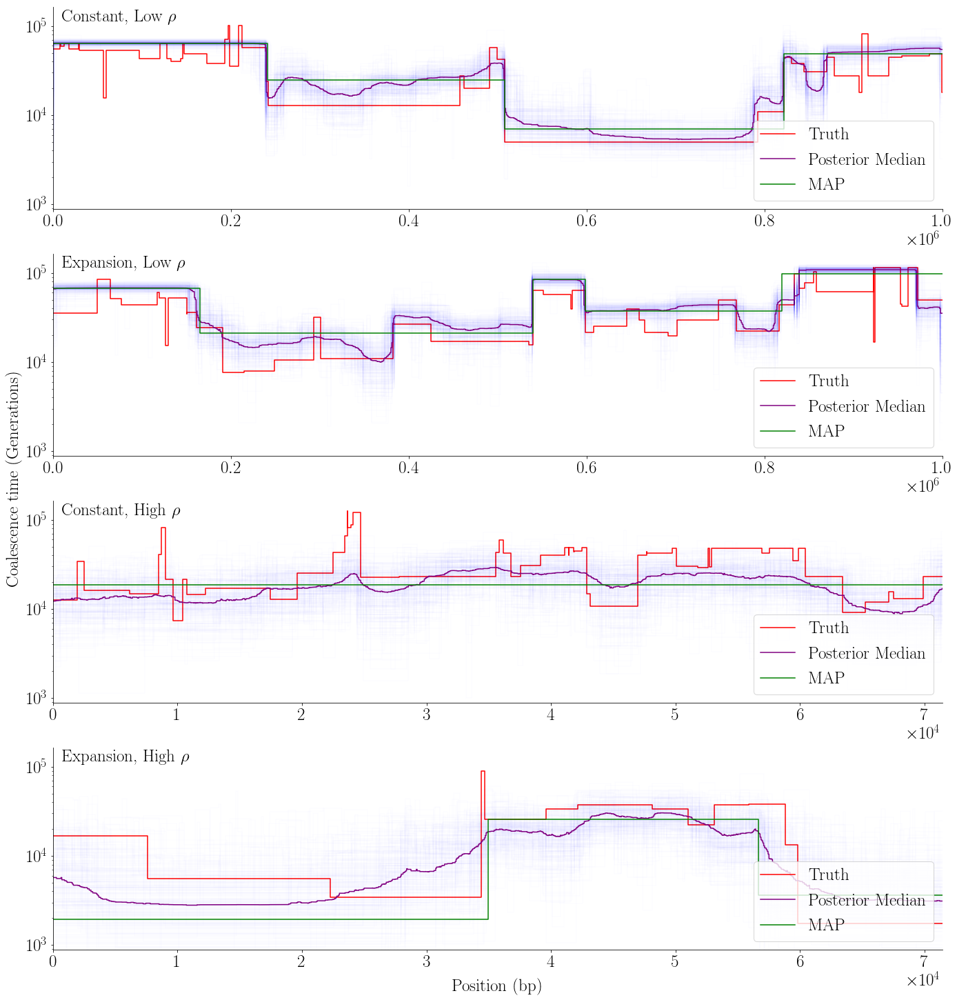
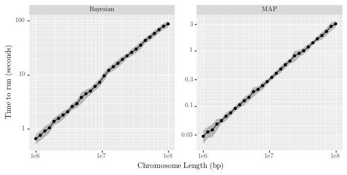

[1]:
from xsmc import XSMC, Segmentation
import numpy as np
from scipy.stats import sem
from scipy.interpolate import PPoly
import pandas as pd
import msprime as msp
import stdpopsim
import os
import psutil
import time
[5]:
import matplotlib
%matplotlib inline
matplotlib.rcParams.update({
'font.family': 'Times New Roman',
'text.usetex': True,
})
import matplotlib.pyplot as plt
import seaborn as sns
import plotnine as pn
from plotnine import *
[3]:
folder = '../../../exact_decoding_paper/figures/benchmark/'
Bayesian vs MAP¶
Functions needed to run simulations
[5]:
def plot_scenario(r, mu, N0, constant, seed, ax, plot_label, **kwargs):
theta = mu * N0
rho = r * N0
ts = simulate(2, r, constant, seed)
truth = Segmentation.from_ts(ts, 0, [1])
truth.draw(axis=ax, color="red", label='Truth')
xs = XSMC(ts, focal=0, panel=[1], theta=theta, rho_over_theta=rho/theta)
rescale = xs.theta / (2 * 1e-8)
b_paths = xs.sample(k=200, seed=seed)
b_paths = [path.rescale(rescale) for path in b_paths]
kwargs.setdefault("alpha", 2 / len(b_paths))
for p in b_paths:
p.draw(axis=ax, color="blue", alpha=kwargs["alpha"])
x = np.arange(xs.ts.sequence_length)
y = np.median([path.to_pp()(x) for path in b_paths], axis=0)
ymin = np.amin(y)
ymax = np.amax(y)
ax.plot(y, color='purple', label='Posterior Median')
map_path = xs.viterbi(-np.log(xs.rho))
map_path = map_path.rescale(rescale)
map_path.draw(axis=ax, color='green', label='MAP')
ax.set_xlim(0, ts.sequence_length * 1e-9/r)
ax.ticklabel_format(axis="x", style="sci", scilimits=(0, 0))
ax.set_yscale("log")
ax.xaxis.set_tick_params(labelsize=size)
ax.yaxis.set_tick_params(labelsize=size)
ax.xaxis.offsetText.set_fontsize(size)
ax.legend(loc = 'lower right', prop={'size': size})
ax.text(0.01, .99, plot_label, transform=ax.transAxes,
fontsize=size, va='top')
sns.despine()
return ymin, ymax
def simulate(n, recombination_rate, constant = True, seed = 1):
if constant:
de = None
else:
de = [msp.PopulationParametersChange(time=0, initial_size=100 * N0),
msp.PopulationParametersChange(time=1000, initial_size=0.5 * N0),
msp.PopulationParametersChange(time=3612, initial_size=N0)]
return msp.simulate(
sample_size=n,
mutation_rate=mu,
recombination_rate=recombination_rate,
Ne=N0,
length=L,
demographic_events=de,
random_seed=seed,
)
def get_truth(ts, focal, panel):
truth = np.empty(int(ts.sequence_length))
for tree in ts.trees():
start = int(tree.interval[0])
end = int(tree.interval[1])
truth[start:end] = tree.get_tmrca(focal, panel)
return truth
def get_dist(truth, y):
L = truth.size
err_A = np.abs(truth - y).sum()/L
err_B = np.abs(np.log10(truth/y)).sum()/L
return err_A, err_B
def get_map_path(xs):
path = xs.viterbi(-np.log(xs.rho))
x = np.arange(xs.ts.sequence_length)
y = path.rescale(xs.theta / (2 * 1e-8)).to_pp()(x)
return y
def get_b_path(xs, seed):
paths = xs.sample(k=200, seed=seed)
x = np.arange(xs.ts.sequence_length)
y = np.median([path.rescale(xs.theta / (2 * 1e-8)).to_pp()(x) for path in paths], axis=0)
return y
def one_run(ts, focal, panel, rho_over_theta, seed):
xs = XSMC(ts, focal=focal, panel=panel, rho_over_theta=rho_over_theta)
map_path = get_map_path(xs)
b_path = get_b_path(xs, seed)
truth = get_truth(ts, focal, panel[0])
err_A_map, err_B_map = get_dist(truth, map_path)
err_A_b, err_B_b = get_dist(truth, b_path)
return err_A_map, err_A_b, err_B_map, err_B_b
def run_sim(num_sim, r, constant, seed):
ts = simulate(2*num_sim, r, constant, seed)
err_mat = [one_run(ts=ts, focal=2 * i, panel=[2 * i + 1],
rho_over_theta = r/mu, seed=seed) for i in range(num_sim)]
return np.array(err_mat).T
def save_table(tab, name):
index_list = ['1','2','3','4']
tab['Scenario'] = index_list
tab = tab.set_index('Scenario').T
tab.to_latex(folder + name)
display(tab)
def format_entry(mean, se, dec_places):
entry = f'{mean:.{dec_places}f} ({se:.{dec_places}f})'
return entry
mfunc = np.vectorize(format_entry)
Simulations Parameters
[7]:
num_sim = 25
N0 = 1e4 #base effective population size
mu = 1.4e-8 #mutation rate
L = 1_000_000 #sequence length
[8]:
plot_seed = 6
rs = [1e-9] * 2 + [1.4e-8] * 2
constants = [True, False] * 2
Plot one run for each scenario¶
[9]:
size = 25
fig, axs = plt.subplots(4, figsize=(20, 21), sharey=True)
fig.add_subplot(111, frameon=False)
plt.tick_params(labelcolor='none', top=False, bottom=False, left=False, right=False)
plot_labels = [r'Constant, Low $\rho$', r'Expansion, Low $\rho$',
r'Constant, High $\rho$', r'Expansion, High $\rho$']
ymin = float('inf')
ymax = 0
for i, ax in enumerate(axs):
y1, y2 = plot_scenario(rs[i], mu, N0, constants[i], plot_seed, ax, plot_labels[i])
if y1 < ymin:
ymin = y1
if y2 > ymax:
ymax = y2
plt.setp(ax.get_xticklabels(), fontsize=size)
plt.setp(ax.get_yticklabels(), fontsize=size)
plt.setp(ax, ylim=(0.75 * ymin, 1.5 * ymax))
plt.xlabel('Position (bp)', fontsize=size, labelpad = size)
plt.ylabel('Coalescence time (Generations)', fontsize=size, labelpad = size)
plt.tight_layout()
plt.savefig(folder + 'bayesian_vs_map.pdf', bbox_inches='tight')
plt.draw()
2020-09-10 10:16:59,748 DEBUG xsmc.xsmc MainThread Setting window size w=1000.000000
2020-09-10 10:16:59,749 DEBUG xsmc._sampler MainThread Counting mismatches for focal=0 panel=[1]
2020-09-10 10:16:59,750 DEBUG xsmc._sampler MainThread Sampling paths
2020-09-10 10:16:59,750 DEBUG xsmc._sampler MainThread Computing log Q
2020-09-10 10:16:59,751 DEBUG xsmc._sampler MainThread Xcs.shape=(1, 1002) positions=[0.000e+00 1.000e+00 2.000e+00 ... 9.990e+02 1.000e+03 1.001e+03] params={'theta': 0.14000000059604645, 'rho': 0.009999999776482582, 'eps': 9.999999747378752e-05, 'robust': False, 'use_cache': False}
2020-09-10 10:16:59,772 DEBUG xsmc._sampler MainThread Done computing log Q
2020-09-10 10:16:59,782 DEBUG xsmc._sampler MainThread Done sampling paths.
2020-09-10 10:16:59,789 DEBUG xsmc.sampler MainThread Sampling heights
2020-09-10 10:16:59,800 DEBUG xsmc.sampler MainThread Done sampling heights
2020-09-10 10:17:04,103 DEBUG xsmc.xsmc MainThread Setting window size w=1000.000000
2020-09-10 10:17:04,103 DEBUG xsmc._sampler MainThread Counting mismatches for focal=0 panel=[1]
2020-09-10 10:17:04,104 DEBUG xsmc._sampler MainThread Sampling paths
2020-09-10 10:17:04,105 DEBUG xsmc._sampler MainThread Computing log Q
2020-09-10 10:17:04,105 DEBUG xsmc._sampler MainThread Xcs.shape=(1, 1002) positions=[0.000e+00 1.000e+00 2.000e+00 ... 9.990e+02 1.000e+03 1.001e+03] params={'theta': 0.14000000059604645, 'rho': 0.009999999776482582, 'eps': 9.999999747378752e-05, 'robust': False, 'use_cache': False}
2020-09-10 10:17:04,120 DEBUG xsmc._sampler MainThread Done computing log Q
2020-09-10 10:17:04,127 DEBUG xsmc._sampler MainThread Done sampling paths.
2020-09-10 10:17:04,135 DEBUG xsmc.sampler MainThread Sampling heights
2020-09-10 10:17:04,145 DEBUG xsmc.sampler MainThread Done sampling heights
2020-09-10 10:17:07,754 DEBUG xsmc.xsmc MainThread Setting window size w=71.000000
2020-09-10 10:17:07,755 DEBUG xsmc._sampler MainThread Counting mismatches for focal=0 panel=[1]
2020-09-10 10:17:07,757 DEBUG xsmc._sampler MainThread Sampling paths
2020-09-10 10:17:07,758 DEBUG xsmc._sampler MainThread Computing log Q
2020-09-10 10:17:07,759 DEBUG xsmc._sampler MainThread Xcs.shape=(1, 14086) positions=[0.0000e+00 1.0000e+00 2.0000e+00 ... 1.4083e+04 1.4084e+04 1.4085e+04] params={'theta': 0.009940000250935555, 'rho': 0.009940000250935555, 'eps': 9.999999747378752e-05, 'robust': False, 'use_cache': False}
2020-09-10 10:17:08,310 DEBUG xsmc._sampler MainThread Done computing log Q
2020-09-10 10:17:08,447 DEBUG xsmc._sampler MainThread Done sampling paths.
2020-09-10 10:17:08,454 DEBUG xsmc.sampler MainThread Sampling heights
2020-09-10 10:17:08,469 DEBUG xsmc.sampler MainThread Done sampling heights
2020-09-10 10:17:12,497 DEBUG xsmc.xsmc MainThread Setting window size w=71.000000
2020-09-10 10:17:12,498 DEBUG xsmc._sampler MainThread Counting mismatches for focal=0 panel=[1]
2020-09-10 10:17:12,499 DEBUG xsmc._sampler MainThread Sampling paths
2020-09-10 10:17:12,500 DEBUG xsmc._sampler MainThread Computing log Q
2020-09-10 10:17:12,500 DEBUG xsmc._sampler MainThread Xcs.shape=(1, 14086) positions=[0.0000e+00 1.0000e+00 2.0000e+00 ... 1.4083e+04 1.4084e+04 1.4085e+04] params={'theta': 0.009940000250935555, 'rho': 0.009940000250935555, 'eps': 9.999999747378752e-05, 'robust': False, 'use_cache': False}
2020-09-10 10:17:13,003 DEBUG xsmc._sampler MainThread Done computing log Q
2020-09-10 10:17:13,136 DEBUG xsmc._sampler MainThread Done sampling paths.
2020-09-10 10:17:13,143 DEBUG xsmc.sampler MainThread Sampling heights
2020-09-10 10:17:13,157 DEBUG xsmc.sampler MainThread Done sampling heights

Run simulation and create table¶
[68]:
table_seed = 6
err_mats = np.empty((4, 4, num_sim))
for i in range(4):
err_mats[i] = run_sim(num_sim, rs[i], constants[i], table_seed)
2020-09-09 17:48:14,677 DEBUG xsmc.xsmc MainThread Estimated θ=0.000584
2020-09-09 17:48:14,678 DEBUG xsmc.xsmc MainThread Setting window size w=239.000000
2020-09-09 17:48:14,710 DEBUG xsmc._sampler MainThread Counting mismatches for focal=0 panel=[1]
2020-09-09 17:48:14,714 DEBUG xsmc._sampler MainThread Sampling paths
2020-09-09 17:48:14,715 DEBUG xsmc._sampler MainThread Computing log Q
2020-09-09 17:48:14,716 DEBUG xsmc._sampler MainThread Xcs.shape=(1, 4186) positions=[0.000e+00 1.000e+00 2.000e+00 ... 4.183e+03 4.184e+03 4.185e+03] params={'theta': 0.13953033089637756, 'rho': 0.009966452606022358, 'eps': 9.999999747378752e-05, 'robust': False, 'use_cache': False}
2020-09-09 17:48:14,892 DEBUG xsmc._sampler MainThread Done computing log Q
2020-09-09 17:48:14,937 DEBUG xsmc._sampler MainThread Done sampling paths.
2020-09-09 17:48:14,942 DEBUG xsmc.sampler MainThread Sampling heights
2020-09-09 17:48:14,953 DEBUG xsmc.sampler MainThread Done sampling heights
2020-09-09 17:48:20,284 DEBUG xsmc.xsmc MainThread Estimated θ=0.000584
2020-09-09 17:48:20,291 DEBUG xsmc.xsmc MainThread Setting window size w=239.000000
2020-09-09 17:48:20,321 DEBUG xsmc._sampler MainThread Counting mismatches for focal=2 panel=[3]
2020-09-09 17:48:20,326 DEBUG xsmc._sampler MainThread Sampling paths
2020-09-09 17:48:20,327 DEBUG xsmc._sampler MainThread Computing log Q
2020-09-09 17:48:20,327 DEBUG xsmc._sampler MainThread Xcs.shape=(1, 4186) positions=[0.000e+00 1.000e+00 2.000e+00 ... 4.183e+03 4.184e+03 4.185e+03] params={'theta': 0.13953033089637756, 'rho': 0.009966452606022358, 'eps': 9.999999747378752e-05, 'robust': False, 'use_cache': False}
2020-09-09 17:48:20,573 DEBUG xsmc._sampler MainThread Done computing log Q
2020-09-09 17:48:20,605 DEBUG xsmc._sampler MainThread Done sampling paths.
2020-09-09 17:48:20,611 DEBUG xsmc.sampler MainThread Sampling heights
2020-09-09 17:48:20,621 DEBUG xsmc.sampler MainThread Done sampling heights
2020-09-09 17:48:25,999 DEBUG xsmc.xsmc MainThread Estimated θ=0.000584
2020-09-09 17:48:26,003 DEBUG xsmc.xsmc MainThread Setting window size w=239.000000
2020-09-09 17:48:26,044 DEBUG xsmc._sampler MainThread Counting mismatches for focal=4 panel=[5]
2020-09-09 17:48:26,048 DEBUG xsmc._sampler MainThread Sampling paths
2020-09-09 17:48:26,049 DEBUG xsmc._sampler MainThread Computing log Q
2020-09-09 17:48:26,051 DEBUG xsmc._sampler MainThread Xcs.shape=(1, 4186) positions=[0.000e+00 1.000e+00 2.000e+00 ... 4.183e+03 4.184e+03 4.185e+03] params={'theta': 0.13953033089637756, 'rho': 0.009966452606022358, 'eps': 9.999999747378752e-05, 'robust': False, 'use_cache': False}
2020-09-09 17:48:26,284 DEBUG xsmc._sampler MainThread Done computing log Q
2020-09-09 17:48:26,342 DEBUG xsmc._sampler MainThread Done sampling paths.
2020-09-09 17:48:26,348 DEBUG xsmc.sampler MainThread Sampling heights
2020-09-09 17:48:26,357 DEBUG xsmc.sampler MainThread Done sampling heights
2020-09-09 17:48:31,449 DEBUG xsmc.xsmc MainThread Estimated θ=0.000584
2020-09-09 17:48:31,455 DEBUG xsmc.xsmc MainThread Setting window size w=239.000000
2020-09-09 17:48:31,486 DEBUG xsmc._sampler MainThread Counting mismatches for focal=6 panel=[7]
2020-09-09 17:48:31,490 DEBUG xsmc._sampler MainThread Sampling paths
2020-09-09 17:48:31,490 DEBUG xsmc._sampler MainThread Computing log Q
2020-09-09 17:48:31,491 DEBUG xsmc._sampler MainThread Xcs.shape=(1, 4186) positions=[0.000e+00 1.000e+00 2.000e+00 ... 4.183e+03 4.184e+03 4.185e+03] params={'theta': 0.13953033089637756, 'rho': 0.009966452606022358, 'eps': 9.999999747378752e-05, 'robust': False, 'use_cache': False}
2020-09-09 17:48:31,767 DEBUG xsmc._sampler MainThread Done computing log Q
2020-09-09 17:48:31,833 DEBUG xsmc._sampler MainThread Done sampling paths.
2020-09-09 17:48:31,838 DEBUG xsmc.sampler MainThread Sampling heights
2020-09-09 17:48:31,847 DEBUG xsmc.sampler MainThread Done sampling heights
2020-09-09 17:48:36,914 DEBUG xsmc.xsmc MainThread Estimated θ=0.000584
2020-09-09 17:48:36,921 DEBUG xsmc.xsmc MainThread Setting window size w=239.000000
2020-09-09 17:48:36,963 DEBUG xsmc._sampler MainThread Counting mismatches for focal=8 panel=[9]
2020-09-09 17:48:36,965 DEBUG xsmc._sampler MainThread Sampling paths
2020-09-09 17:48:36,965 DEBUG xsmc._sampler MainThread Computing log Q
2020-09-09 17:48:36,966 DEBUG xsmc._sampler MainThread Xcs.shape=(1, 4186) positions=[0.000e+00 1.000e+00 2.000e+00 ... 4.183e+03 4.184e+03 4.185e+03] params={'theta': 0.13953033089637756, 'rho': 0.009966452606022358, 'eps': 9.999999747378752e-05, 'robust': False, 'use_cache': False}
2020-09-09 17:48:37,158 DEBUG xsmc._sampler MainThread Done computing log Q
2020-09-09 17:48:37,206 DEBUG xsmc._sampler MainThread Done sampling paths.
2020-09-09 17:48:37,211 DEBUG xsmc.sampler MainThread Sampling heights
2020-09-09 17:48:37,220 DEBUG xsmc.sampler MainThread Done sampling heights
2020-09-09 17:48:42,195 DEBUG xsmc.xsmc MainThread Estimated θ=0.000584
2020-09-09 17:48:42,198 DEBUG xsmc.xsmc MainThread Setting window size w=239.000000
2020-09-09 17:48:42,215 DEBUG xsmc._sampler MainThread Counting mismatches for focal=10 panel=[11]
2020-09-09 17:48:42,217 DEBUG xsmc._sampler MainThread Sampling paths
2020-09-09 17:48:42,217 DEBUG xsmc._sampler MainThread Computing log Q
2020-09-09 17:48:42,218 DEBUG xsmc._sampler MainThread Xcs.shape=(1, 4186) positions=[0.000e+00 1.000e+00 2.000e+00 ... 4.183e+03 4.184e+03 4.185e+03] params={'theta': 0.13953033089637756, 'rho': 0.009966452606022358, 'eps': 9.999999747378752e-05, 'robust': False, 'use_cache': False}
2020-09-09 17:48:42,239 DEBUG xsmc._sampler MainThread Done computing log Q
2020-09-09 17:48:42,242 DEBUG xsmc._sampler MainThread Done sampling paths.
2020-09-09 17:48:42,249 DEBUG xsmc.sampler MainThread Sampling heights
2020-09-09 17:48:42,260 DEBUG xsmc.sampler MainThread Done sampling heights
2020-09-09 17:48:47,309 DEBUG xsmc.xsmc MainThread Estimated θ=0.000584
2020-09-09 17:48:47,321 DEBUG xsmc.xsmc MainThread Setting window size w=239.000000
2020-09-09 17:48:47,361 DEBUG xsmc._sampler MainThread Counting mismatches for focal=12 panel=[13]
2020-09-09 17:48:47,365 DEBUG xsmc._sampler MainThread Sampling paths
2020-09-09 17:48:47,366 DEBUG xsmc._sampler MainThread Computing log Q
2020-09-09 17:48:47,366 DEBUG xsmc._sampler MainThread Xcs.shape=(1, 4186) positions=[0.000e+00 1.000e+00 2.000e+00 ... 4.183e+03 4.184e+03 4.185e+03] params={'theta': 0.13953033089637756, 'rho': 0.009966452606022358, 'eps': 9.999999747378752e-05, 'robust': False, 'use_cache': False}
2020-09-09 17:48:47,617 DEBUG xsmc._sampler MainThread Done computing log Q
2020-09-09 17:48:47,674 DEBUG xsmc._sampler MainThread Done sampling paths.
2020-09-09 17:48:47,679 DEBUG xsmc.sampler MainThread Sampling heights
2020-09-09 17:48:47,689 DEBUG xsmc.sampler MainThread Done sampling heights
2020-09-09 17:48:52,570 DEBUG xsmc.xsmc MainThread Estimated θ=0.000584
2020-09-09 17:48:52,572 DEBUG xsmc.xsmc MainThread Setting window size w=239.000000
2020-09-09 17:48:52,595 DEBUG xsmc._sampler MainThread Counting mismatches for focal=14 panel=[15]
2020-09-09 17:48:52,597 DEBUG xsmc._sampler MainThread Sampling paths
2020-09-09 17:48:52,597 DEBUG xsmc._sampler MainThread Computing log Q
2020-09-09 17:48:52,598 DEBUG xsmc._sampler MainThread Xcs.shape=(1, 4186) positions=[0.000e+00 1.000e+00 2.000e+00 ... 4.183e+03 4.184e+03 4.185e+03] params={'theta': 0.13953033089637756, 'rho': 0.009966452606022358, 'eps': 9.999999747378752e-05, 'robust': False, 'use_cache': False}
2020-09-09 17:48:52,750 DEBUG xsmc._sampler MainThread Done computing log Q
2020-09-09 17:48:52,791 DEBUG xsmc._sampler MainThread Done sampling paths.
2020-09-09 17:48:52,797 DEBUG xsmc.sampler MainThread Sampling heights
2020-09-09 17:48:52,806 DEBUG xsmc.sampler MainThread Done sampling heights
2020-09-09 17:48:57,635 DEBUG xsmc.xsmc MainThread Estimated θ=0.000584
2020-09-09 17:48:57,641 DEBUG xsmc.xsmc MainThread Setting window size w=239.000000
2020-09-09 17:48:57,675 DEBUG xsmc._sampler MainThread Counting mismatches for focal=16 panel=[17]
2020-09-09 17:48:57,679 DEBUG xsmc._sampler MainThread Sampling paths
2020-09-09 17:48:57,679 DEBUG xsmc._sampler MainThread Computing log Q
2020-09-09 17:48:57,680 DEBUG xsmc._sampler MainThread Xcs.shape=(1, 4186) positions=[0.000e+00 1.000e+00 2.000e+00 ... 4.183e+03 4.184e+03 4.185e+03] params={'theta': 0.13953033089637756, 'rho': 0.009966452606022358, 'eps': 9.999999747378752e-05, 'robust': False, 'use_cache': False}
2020-09-09 17:48:57,857 DEBUG xsmc._sampler MainThread Done computing log Q
2020-09-09 17:48:57,906 DEBUG xsmc._sampler MainThread Done sampling paths.
2020-09-09 17:48:57,911 DEBUG xsmc.sampler MainThread Sampling heights
2020-09-09 17:48:57,921 DEBUG xsmc.sampler MainThread Done sampling heights
2020-09-09 17:49:03,241 DEBUG xsmc.xsmc MainThread Estimated θ=0.000584
2020-09-09 17:49:03,243 DEBUG xsmc.xsmc MainThread Setting window size w=239.000000
2020-09-09 17:49:03,265 DEBUG xsmc._sampler MainThread Counting mismatches for focal=18 panel=[19]
2020-09-09 17:49:03,266 DEBUG xsmc._sampler MainThread Sampling paths
2020-09-09 17:49:03,267 DEBUG xsmc._sampler MainThread Computing log Q
2020-09-09 17:49:03,268 DEBUG xsmc._sampler MainThread Xcs.shape=(1, 4186) positions=[0.000e+00 1.000e+00 2.000e+00 ... 4.183e+03 4.184e+03 4.185e+03] params={'theta': 0.13953033089637756, 'rho': 0.009966452606022358, 'eps': 9.999999747378752e-05, 'robust': False, 'use_cache': False}
2020-09-09 17:49:03,388 DEBUG xsmc._sampler MainThread Done computing log Q
2020-09-09 17:49:03,428 DEBUG xsmc._sampler MainThread Done sampling paths.
2020-09-09 17:49:03,432 DEBUG xsmc.sampler MainThread Sampling heights
2020-09-09 17:49:03,440 DEBUG xsmc.sampler MainThread Done sampling heights
2020-09-09 17:49:08,677 DEBUG xsmc.xsmc MainThread Estimated θ=0.000584
2020-09-09 17:49:08,678 DEBUG xsmc.xsmc MainThread Setting window size w=239.000000
2020-09-09 17:49:08,701 DEBUG xsmc._sampler MainThread Counting mismatches for focal=20 panel=[21]
2020-09-09 17:49:08,702 DEBUG xsmc._sampler MainThread Sampling paths
2020-09-09 17:49:08,703 DEBUG xsmc._sampler MainThread Computing log Q
2020-09-09 17:49:08,703 DEBUG xsmc._sampler MainThread Xcs.shape=(1, 4186) positions=[0.000e+00 1.000e+00 2.000e+00 ... 4.183e+03 4.184e+03 4.185e+03] params={'theta': 0.13953033089637756, 'rho': 0.009966452606022358, 'eps': 9.999999747378752e-05, 'robust': False, 'use_cache': False}
2020-09-09 17:49:08,862 DEBUG xsmc._sampler MainThread Done computing log Q
2020-09-09 17:49:08,901 DEBUG xsmc._sampler MainThread Done sampling paths.
2020-09-09 17:49:08,909 DEBUG xsmc.sampler MainThread Sampling heights
2020-09-09 17:49:08,918 DEBUG xsmc.sampler MainThread Done sampling heights
2020-09-09 17:49:13,734 DEBUG xsmc.xsmc MainThread Estimated θ=0.000584
2020-09-09 17:49:13,735 DEBUG xsmc.xsmc MainThread Setting window size w=239.000000
2020-09-09 17:49:13,761 DEBUG xsmc._sampler MainThread Counting mismatches for focal=22 panel=[23]
2020-09-09 17:49:13,763 DEBUG xsmc._sampler MainThread Sampling paths
2020-09-09 17:49:13,764 DEBUG xsmc._sampler MainThread Computing log Q
2020-09-09 17:49:13,765 DEBUG xsmc._sampler MainThread Xcs.shape=(1, 4186) positions=[0.000e+00 1.000e+00 2.000e+00 ... 4.183e+03 4.184e+03 4.185e+03] params={'theta': 0.13953033089637756, 'rho': 0.009966452606022358, 'eps': 9.999999747378752e-05, 'robust': False, 'use_cache': False}
2020-09-09 17:49:13,918 DEBUG xsmc._sampler MainThread Done computing log Q
2020-09-09 17:49:13,962 DEBUG xsmc._sampler MainThread Done sampling paths.
2020-09-09 17:49:13,967 DEBUG xsmc.sampler MainThread Sampling heights
2020-09-09 17:49:13,975 DEBUG xsmc.sampler MainThread Done sampling heights
2020-09-09 17:49:19,414 DEBUG xsmc.xsmc MainThread Estimated θ=0.000584
2020-09-09 17:49:19,415 DEBUG xsmc.xsmc MainThread Setting window size w=239.000000
2020-09-09 17:49:19,438 DEBUG xsmc._sampler MainThread Counting mismatches for focal=24 panel=[25]
2020-09-09 17:49:19,440 DEBUG xsmc._sampler MainThread Sampling paths
2020-09-09 17:49:19,441 DEBUG xsmc._sampler MainThread Computing log Q
2020-09-09 17:49:19,442 DEBUG xsmc._sampler MainThread Xcs.shape=(1, 4186) positions=[0.000e+00 1.000e+00 2.000e+00 ... 4.183e+03 4.184e+03 4.185e+03] params={'theta': 0.13953033089637756, 'rho': 0.009966452606022358, 'eps': 9.999999747378752e-05, 'robust': False, 'use_cache': False}
2020-09-09 17:49:19,680 DEBUG xsmc._sampler MainThread Done computing log Q
2020-09-09 17:49:19,729 DEBUG xsmc._sampler MainThread Done sampling paths.
2020-09-09 17:49:19,734 DEBUG xsmc.sampler MainThread Sampling heights
2020-09-09 17:49:19,742 DEBUG xsmc.sampler MainThread Done sampling heights
2020-09-09 17:49:25,085 DEBUG xsmc.xsmc MainThread Estimated θ=0.000584
2020-09-09 17:49:25,091 DEBUG xsmc.xsmc MainThread Setting window size w=239.000000
2020-09-09 17:49:25,130 DEBUG xsmc._sampler MainThread Counting mismatches for focal=26 panel=[27]
2020-09-09 17:49:25,135 DEBUG xsmc._sampler MainThread Sampling paths
2020-09-09 17:49:25,135 DEBUG xsmc._sampler MainThread Computing log Q
2020-09-09 17:49:25,136 DEBUG xsmc._sampler MainThread Xcs.shape=(1, 4186) positions=[0.000e+00 1.000e+00 2.000e+00 ... 4.183e+03 4.184e+03 4.185e+03] params={'theta': 0.13953033089637756, 'rho': 0.009966452606022358, 'eps': 9.999999747378752e-05, 'robust': False, 'use_cache': False}
2020-09-09 17:49:25,367 DEBUG xsmc._sampler MainThread Done computing log Q
2020-09-09 17:49:25,422 DEBUG xsmc._sampler MainThread Done sampling paths.
2020-09-09 17:49:25,428 DEBUG xsmc.sampler MainThread Sampling heights
2020-09-09 17:49:25,441 DEBUG xsmc.sampler MainThread Done sampling heights
2020-09-09 17:49:30,492 DEBUG xsmc.xsmc MainThread Estimated θ=0.000584
2020-09-09 17:49:30,498 DEBUG xsmc.xsmc MainThread Setting window size w=239.000000
2020-09-09 17:49:30,534 DEBUG xsmc._sampler MainThread Counting mismatches for focal=28 panel=[29]
2020-09-09 17:49:30,535 DEBUG xsmc._sampler MainThread Sampling paths
2020-09-09 17:49:30,536 DEBUG xsmc._sampler MainThread Computing log Q
2020-09-09 17:49:30,536 DEBUG xsmc._sampler MainThread Xcs.shape=(1, 4186) positions=[0.000e+00 1.000e+00 2.000e+00 ... 4.183e+03 4.184e+03 4.185e+03] params={'theta': 0.13953033089637756, 'rho': 0.009966452606022358, 'eps': 9.999999747378752e-05, 'robust': False, 'use_cache': False}
2020-09-09 17:49:30,685 DEBUG xsmc._sampler MainThread Done computing log Q
2020-09-09 17:49:30,729 DEBUG xsmc._sampler MainThread Done sampling paths.
2020-09-09 17:49:30,733 DEBUG xsmc.sampler MainThread Sampling heights
2020-09-09 17:49:30,743 DEBUG xsmc.sampler MainThread Done sampling heights
2020-09-09 17:49:35,797 DEBUG xsmc.xsmc MainThread Estimated θ=0.000584
2020-09-09 17:49:35,799 DEBUG xsmc.xsmc MainThread Setting window size w=239.000000
2020-09-09 17:49:35,830 DEBUG xsmc._sampler MainThread Counting mismatches for focal=30 panel=[31]
2020-09-09 17:49:35,832 DEBUG xsmc._sampler MainThread Sampling paths
2020-09-09 17:49:35,833 DEBUG xsmc._sampler MainThread Computing log Q
2020-09-09 17:49:35,833 DEBUG xsmc._sampler MainThread Xcs.shape=(1, 4186) positions=[0.000e+00 1.000e+00 2.000e+00 ... 4.183e+03 4.184e+03 4.185e+03] params={'theta': 0.13953033089637756, 'rho': 0.009966452606022358, 'eps': 9.999999747378752e-05, 'robust': False, 'use_cache': False}
2020-09-09 17:49:36,020 DEBUG xsmc._sampler MainThread Done computing log Q
2020-09-09 17:49:36,066 DEBUG xsmc._sampler MainThread Done sampling paths.
2020-09-09 17:49:36,071 DEBUG xsmc.sampler MainThread Sampling heights
2020-09-09 17:49:36,081 DEBUG xsmc.sampler MainThread Done sampling heights
2020-09-09 17:49:40,954 DEBUG xsmc.xsmc MainThread Estimated θ=0.000584
2020-09-09 17:49:40,955 DEBUG xsmc.xsmc MainThread Setting window size w=239.000000
2020-09-09 17:49:40,982 DEBUG xsmc._sampler MainThread Counting mismatches for focal=32 panel=[33]
2020-09-09 17:49:40,984 DEBUG xsmc._sampler MainThread Sampling paths
2020-09-09 17:49:40,984 DEBUG xsmc._sampler MainThread Computing log Q
2020-09-09 17:49:40,985 DEBUG xsmc._sampler MainThread Xcs.shape=(1, 4186) positions=[0.000e+00 1.000e+00 2.000e+00 ... 4.183e+03 4.184e+03 4.185e+03] params={'theta': 0.13953033089637756, 'rho': 0.009966452606022358, 'eps': 9.999999747378752e-05, 'robust': False, 'use_cache': False}
2020-09-09 17:49:41,089 DEBUG xsmc._sampler MainThread Done computing log Q
2020-09-09 17:49:41,121 DEBUG xsmc._sampler MainThread Done sampling paths.
2020-09-09 17:49:41,126 DEBUG xsmc.sampler MainThread Sampling heights
2020-09-09 17:49:41,134 DEBUG xsmc.sampler MainThread Done sampling heights
2020-09-09 17:49:46,028 DEBUG xsmc.xsmc MainThread Estimated θ=0.000584
2020-09-09 17:49:46,028 DEBUG xsmc.xsmc MainThread Setting window size w=239.000000
2020-09-09 17:49:46,053 DEBUG xsmc._sampler MainThread Counting mismatches for focal=34 panel=[35]
2020-09-09 17:49:46,054 DEBUG xsmc._sampler MainThread Sampling paths
2020-09-09 17:49:46,055 DEBUG xsmc._sampler MainThread Computing log Q
2020-09-09 17:49:46,056 DEBUG xsmc._sampler MainThread Xcs.shape=(1, 4186) positions=[0.000e+00 1.000e+00 2.000e+00 ... 4.183e+03 4.184e+03 4.185e+03] params={'theta': 0.13953033089637756, 'rho': 0.009966452606022358, 'eps': 9.999999747378752e-05, 'robust': False, 'use_cache': False}
2020-09-09 17:49:46,227 DEBUG xsmc._sampler MainThread Done computing log Q
2020-09-09 17:49:46,269 DEBUG xsmc._sampler MainThread Done sampling paths.
2020-09-09 17:49:46,273 DEBUG xsmc.sampler MainThread Sampling heights
2020-09-09 17:49:46,282 DEBUG xsmc.sampler MainThread Done sampling heights
2020-09-09 17:49:51,409 DEBUG xsmc.xsmc MainThread Estimated θ=0.000584
2020-09-09 17:49:51,412 DEBUG xsmc.xsmc MainThread Setting window size w=239.000000
2020-09-09 17:49:51,449 DEBUG xsmc._sampler MainThread Counting mismatches for focal=36 panel=[37]
2020-09-09 17:49:51,450 DEBUG xsmc._sampler MainThread Sampling paths
2020-09-09 17:49:51,450 DEBUG xsmc._sampler MainThread Computing log Q
2020-09-09 17:49:51,451 DEBUG xsmc._sampler MainThread Xcs.shape=(1, 4186) positions=[0.000e+00 1.000e+00 2.000e+00 ... 4.183e+03 4.184e+03 4.185e+03] params={'theta': 0.13953033089637756, 'rho': 0.009966452606022358, 'eps': 9.999999747378752e-05, 'robust': False, 'use_cache': False}
2020-09-09 17:49:51,610 DEBUG xsmc._sampler MainThread Done computing log Q
2020-09-09 17:49:51,658 DEBUG xsmc._sampler MainThread Done sampling paths.
2020-09-09 17:49:51,663 DEBUG xsmc.sampler MainThread Sampling heights
2020-09-09 17:49:51,672 DEBUG xsmc.sampler MainThread Done sampling heights
2020-09-09 17:49:57,133 DEBUG xsmc.xsmc MainThread Estimated θ=0.000584
2020-09-09 17:49:57,135 DEBUG xsmc.xsmc MainThread Setting window size w=239.000000
2020-09-09 17:49:57,167 DEBUG xsmc._sampler MainThread Counting mismatches for focal=38 panel=[39]
2020-09-09 17:49:57,169 DEBUG xsmc._sampler MainThread Sampling paths
2020-09-09 17:49:57,169 DEBUG xsmc._sampler MainThread Computing log Q
2020-09-09 17:49:57,170 DEBUG xsmc._sampler MainThread Xcs.shape=(1, 4186) positions=[0.000e+00 1.000e+00 2.000e+00 ... 4.183e+03 4.184e+03 4.185e+03] params={'theta': 0.13953033089637756, 'rho': 0.009966452606022358, 'eps': 9.999999747378752e-05, 'robust': False, 'use_cache': False}
2020-09-09 17:49:57,478 DEBUG xsmc._sampler MainThread Done computing log Q
2020-09-09 17:49:57,549 DEBUG xsmc._sampler MainThread Done sampling paths.
2020-09-09 17:49:57,556 DEBUG xsmc.sampler MainThread Sampling heights
2020-09-09 17:49:57,569 DEBUG xsmc.sampler MainThread Done sampling heights
2020-09-09 17:50:03,336 DEBUG xsmc.xsmc MainThread Estimated θ=0.000584
2020-09-09 17:50:03,345 DEBUG xsmc.xsmc MainThread Setting window size w=239.000000
2020-09-09 17:50:03,387 DEBUG xsmc._sampler MainThread Counting mismatches for focal=40 panel=[41]
2020-09-09 17:50:03,390 DEBUG xsmc._sampler MainThread Sampling paths
2020-09-09 17:50:03,390 DEBUG xsmc._sampler MainThread Computing log Q
2020-09-09 17:50:03,391 DEBUG xsmc._sampler MainThread Xcs.shape=(1, 4186) positions=[0.000e+00 1.000e+00 2.000e+00 ... 4.183e+03 4.184e+03 4.185e+03] params={'theta': 0.13953033089637756, 'rho': 0.009966452606022358, 'eps': 9.999999747378752e-05, 'robust': False, 'use_cache': False}
2020-09-09 17:50:03,702 DEBUG xsmc._sampler MainThread Done computing log Q
2020-09-09 17:50:03,773 DEBUG xsmc._sampler MainThread Done sampling paths.
2020-09-09 17:50:03,782 DEBUG xsmc.sampler MainThread Sampling heights
2020-09-09 17:50:03,797 DEBUG xsmc.sampler MainThread Done sampling heights
2020-09-09 17:50:10,344 DEBUG xsmc.xsmc MainThread Estimated θ=0.000584
2020-09-09 17:50:10,350 DEBUG xsmc.xsmc MainThread Setting window size w=239.000000
2020-09-09 17:50:10,406 DEBUG xsmc._sampler MainThread Counting mismatches for focal=42 panel=[43]
2020-09-09 17:50:10,410 DEBUG xsmc._sampler MainThread Sampling paths
2020-09-09 17:50:10,411 DEBUG xsmc._sampler MainThread Computing log Q
2020-09-09 17:50:10,411 DEBUG xsmc._sampler MainThread Xcs.shape=(1, 4186) positions=[0.000e+00 1.000e+00 2.000e+00 ... 4.183e+03 4.184e+03 4.185e+03] params={'theta': 0.13953033089637756, 'rho': 0.009966452606022358, 'eps': 9.999999747378752e-05, 'robust': False, 'use_cache': False}
2020-09-09 17:50:10,776 DEBUG xsmc._sampler MainThread Done computing log Q
2020-09-09 17:50:10,864 DEBUG xsmc._sampler MainThread Done sampling paths.
2020-09-09 17:50:10,874 DEBUG xsmc.sampler MainThread Sampling heights
2020-09-09 17:50:10,896 DEBUG xsmc.sampler MainThread Done sampling heights
2020-09-09 17:50:16,354 DEBUG xsmc.xsmc MainThread Estimated θ=0.000584
2020-09-09 17:50:16,361 DEBUG xsmc.xsmc MainThread Setting window size w=239.000000
2020-09-09 17:50:16,396 DEBUG xsmc._sampler MainThread Counting mismatches for focal=44 panel=[45]
2020-09-09 17:50:16,401 DEBUG xsmc._sampler MainThread Sampling paths
2020-09-09 17:50:16,401 DEBUG xsmc._sampler MainThread Computing log Q
2020-09-09 17:50:16,402 DEBUG xsmc._sampler MainThread Xcs.shape=(1, 4186) positions=[0.000e+00 1.000e+00 2.000e+00 ... 4.183e+03 4.184e+03 4.185e+03] params={'theta': 0.13953033089637756, 'rho': 0.009966452606022358, 'eps': 9.999999747378752e-05, 'robust': False, 'use_cache': False}
2020-09-09 17:50:16,584 DEBUG xsmc._sampler MainThread Done computing log Q
2020-09-09 17:50:16,632 DEBUG xsmc._sampler MainThread Done sampling paths.
2020-09-09 17:50:16,639 DEBUG xsmc.sampler MainThread Sampling heights
2020-09-09 17:50:16,649 DEBUG xsmc.sampler MainThread Done sampling heights
2020-09-09 17:50:22,491 DEBUG xsmc.xsmc MainThread Estimated θ=0.000584
2020-09-09 17:50:22,502 DEBUG xsmc.xsmc MainThread Setting window size w=239.000000
2020-09-09 17:50:22,548 DEBUG xsmc._sampler MainThread Counting mismatches for focal=46 panel=[47]
2020-09-09 17:50:22,553 DEBUG xsmc._sampler MainThread Sampling paths
2020-09-09 17:50:22,554 DEBUG xsmc._sampler MainThread Computing log Q
2020-09-09 17:50:22,554 DEBUG xsmc._sampler MainThread Xcs.shape=(1, 4186) positions=[0.000e+00 1.000e+00 2.000e+00 ... 4.183e+03 4.184e+03 4.185e+03] params={'theta': 0.13953033089637756, 'rho': 0.009966452606022358, 'eps': 9.999999747378752e-05, 'robust': False, 'use_cache': False}
2020-09-09 17:50:22,829 DEBUG xsmc._sampler MainThread Done computing log Q
2020-09-09 17:50:22,901 DEBUG xsmc._sampler MainThread Done sampling paths.
2020-09-09 17:50:22,909 DEBUG xsmc.sampler MainThread Sampling heights
2020-09-09 17:50:22,923 DEBUG xsmc.sampler MainThread Done sampling heights
2020-09-09 17:50:28,473 DEBUG xsmc.xsmc MainThread Estimated θ=0.000584
2020-09-09 17:50:28,483 DEBUG xsmc.xsmc MainThread Setting window size w=239.000000
2020-09-09 17:50:28,516 DEBUG xsmc._sampler MainThread Counting mismatches for focal=48 panel=[49]
2020-09-09 17:50:28,518 DEBUG xsmc._sampler MainThread Sampling paths
2020-09-09 17:50:28,519 DEBUG xsmc._sampler MainThread Computing log Q
2020-09-09 17:50:28,519 DEBUG xsmc._sampler MainThread Xcs.shape=(1, 4186) positions=[0.000e+00 1.000e+00 2.000e+00 ... 4.183e+03 4.184e+03 4.185e+03] params={'theta': 0.13953033089637756, 'rho': 0.009966452606022358, 'eps': 9.999999747378752e-05, 'robust': False, 'use_cache': False}
2020-09-09 17:50:28,751 DEBUG xsmc._sampler MainThread Done computing log Q
2020-09-09 17:50:28,805 DEBUG xsmc._sampler MainThread Done sampling paths.
2020-09-09 17:50:28,811 DEBUG xsmc.sampler MainThread Sampling heights
2020-09-09 17:50:28,825 DEBUG xsmc.sampler MainThread Done sampling heights
2020-09-09 17:50:33,567 DEBUG xsmc.xsmc MainThread Estimated θ=0.000650
2020-09-09 17:50:33,568 DEBUG xsmc.xsmc MainThread Setting window size w=215.000000
2020-09-09 17:50:33,595 DEBUG xsmc._sampler MainThread Counting mismatches for focal=0 panel=[1]
2020-09-09 17:50:33,596 DEBUG xsmc._sampler MainThread Sampling paths
2020-09-09 17:50:33,596 DEBUG xsmc._sampler MainThread Computing log Q
2020-09-09 17:50:33,597 DEBUG xsmc._sampler MainThread Xcs.shape=(1, 4653) positions=[0.000e+00 1.000e+00 2.000e+00 ... 4.650e+03 4.651e+03 4.652e+03] params={'theta': 0.13972678780555725, 'rho': 0.00998048484325409, 'eps': 9.999999747378752e-05, 'robust': False, 'use_cache': False}
2020-09-09 17:50:33,747 DEBUG xsmc._sampler MainThread Done computing log Q
2020-09-09 17:50:33,790 DEBUG xsmc._sampler MainThread Done sampling paths.
2020-09-09 17:50:33,795 DEBUG xsmc.sampler MainThread Sampling heights
2020-09-09 17:50:33,804 DEBUG xsmc.sampler MainThread Done sampling heights
2020-09-09 17:50:38,782 DEBUG xsmc.xsmc MainThread Estimated θ=0.000650
2020-09-09 17:50:38,783 DEBUG xsmc.xsmc MainThread Setting window size w=215.000000
2020-09-09 17:50:38,817 DEBUG xsmc._sampler MainThread Counting mismatches for focal=2 panel=[3]
2020-09-09 17:50:38,818 DEBUG xsmc._sampler MainThread Sampling paths
2020-09-09 17:50:38,819 DEBUG xsmc._sampler MainThread Computing log Q
2020-09-09 17:50:38,819 DEBUG xsmc._sampler MainThread Xcs.shape=(1, 4653) positions=[0.000e+00 1.000e+00 2.000e+00 ... 4.650e+03 4.651e+03 4.652e+03] params={'theta': 0.13972678780555725, 'rho': 0.00998048484325409, 'eps': 9.999999747378752e-05, 'robust': False, 'use_cache': False}
2020-09-09 17:50:39,009 DEBUG xsmc._sampler MainThread Done computing log Q
2020-09-09 17:50:39,058 DEBUG xsmc._sampler MainThread Done sampling paths.
2020-09-09 17:50:39,066 DEBUG xsmc.sampler MainThread Sampling heights
2020-09-09 17:50:39,075 DEBUG xsmc.sampler MainThread Done sampling heights
2020-09-09 17:50:43,744 DEBUG xsmc.xsmc MainThread Estimated θ=0.000650
2020-09-09 17:50:43,744 DEBUG xsmc.xsmc MainThread Setting window size w=215.000000
2020-09-09 17:50:43,766 DEBUG xsmc._sampler MainThread Counting mismatches for focal=4 panel=[5]
2020-09-09 17:50:43,768 DEBUG xsmc._sampler MainThread Sampling paths
2020-09-09 17:50:43,768 DEBUG xsmc._sampler MainThread Computing log Q
2020-09-09 17:50:43,769 DEBUG xsmc._sampler MainThread Xcs.shape=(1, 4653) positions=[0.000e+00 1.000e+00 2.000e+00 ... 4.650e+03 4.651e+03 4.652e+03] params={'theta': 0.13972678780555725, 'rho': 0.00998048484325409, 'eps': 9.999999747378752e-05, 'robust': False, 'use_cache': False}
2020-09-09 17:50:43,966 DEBUG xsmc._sampler MainThread Done computing log Q
2020-09-09 17:50:43,997 DEBUG xsmc._sampler MainThread Done sampling paths.
2020-09-09 17:50:44,006 DEBUG xsmc.sampler MainThread Sampling heights
2020-09-09 17:50:44,014 DEBUG xsmc.sampler MainThread Done sampling heights
2020-09-09 17:50:49,252 DEBUG xsmc.xsmc MainThread Estimated θ=0.000650
2020-09-09 17:50:49,257 DEBUG xsmc.xsmc MainThread Setting window size w=215.000000
2020-09-09 17:50:49,294 DEBUG xsmc._sampler MainThread Counting mismatches for focal=6 panel=[7]
2020-09-09 17:50:49,298 DEBUG xsmc._sampler MainThread Sampling paths
2020-09-09 17:50:49,298 DEBUG xsmc._sampler MainThread Computing log Q
2020-09-09 17:50:49,299 DEBUG xsmc._sampler MainThread Xcs.shape=(1, 4653) positions=[0.000e+00 1.000e+00 2.000e+00 ... 4.650e+03 4.651e+03 4.652e+03] params={'theta': 0.13972678780555725, 'rho': 0.00998048484325409, 'eps': 9.999999747378752e-05, 'robust': False, 'use_cache': False}
2020-09-09 17:50:49,487 DEBUG xsmc._sampler MainThread Done computing log Q
2020-09-09 17:50:49,536 DEBUG xsmc._sampler MainThread Done sampling paths.
2020-09-09 17:50:49,541 DEBUG xsmc.sampler MainThread Sampling heights
2020-09-09 17:50:49,551 DEBUG xsmc.sampler MainThread Done sampling heights
2020-09-09 17:50:54,661 DEBUG xsmc.xsmc MainThread Estimated θ=0.000650
2020-09-09 17:50:54,665 DEBUG xsmc.xsmc MainThread Setting window size w=215.000000
2020-09-09 17:50:54,698 DEBUG xsmc._sampler MainThread Counting mismatches for focal=8 panel=[9]
2020-09-09 17:50:54,700 DEBUG xsmc._sampler MainThread Sampling paths
2020-09-09 17:50:54,701 DEBUG xsmc._sampler MainThread Computing log Q
2020-09-09 17:50:54,701 DEBUG xsmc._sampler MainThread Xcs.shape=(1, 4653) positions=[0.000e+00 1.000e+00 2.000e+00 ... 4.650e+03 4.651e+03 4.652e+03] params={'theta': 0.13972678780555725, 'rho': 0.00998048484325409, 'eps': 9.999999747378752e-05, 'robust': False, 'use_cache': False}
2020-09-09 17:50:54,986 DEBUG xsmc._sampler MainThread Done computing log Q
2020-09-09 17:50:55,046 DEBUG xsmc._sampler MainThread Done sampling paths.
2020-09-09 17:50:55,052 DEBUG xsmc.sampler MainThread Sampling heights
2020-09-09 17:50:55,062 DEBUG xsmc.sampler MainThread Done sampling heights
2020-09-09 17:51:00,459 DEBUG xsmc.xsmc MainThread Estimated θ=0.000650
2020-09-09 17:51:00,464 DEBUG xsmc.xsmc MainThread Setting window size w=215.000000
2020-09-09 17:51:00,497 DEBUG xsmc._sampler MainThread Counting mismatches for focal=10 panel=[11]
2020-09-09 17:51:00,501 DEBUG xsmc._sampler MainThread Sampling paths
2020-09-09 17:51:00,502 DEBUG xsmc._sampler MainThread Computing log Q
2020-09-09 17:51:00,502 DEBUG xsmc._sampler MainThread Xcs.shape=(1, 4653) positions=[0.000e+00 1.000e+00 2.000e+00 ... 4.650e+03 4.651e+03 4.652e+03] params={'theta': 0.13972678780555725, 'rho': 0.00998048484325409, 'eps': 9.999999747378752e-05, 'robust': False, 'use_cache': False}
2020-09-09 17:51:00,724 DEBUG xsmc._sampler MainThread Done computing log Q
2020-09-09 17:51:00,759 DEBUG xsmc._sampler MainThread Done sampling paths.
2020-09-09 17:51:00,765 DEBUG xsmc.sampler MainThread Sampling heights
2020-09-09 17:51:00,776 DEBUG xsmc.sampler MainThread Done sampling heights
2020-09-09 17:51:06,040 DEBUG xsmc.xsmc MainThread Estimated θ=0.000650
2020-09-09 17:51:06,042 DEBUG xsmc.xsmc MainThread Setting window size w=215.000000
2020-09-09 17:51:06,067 DEBUG xsmc._sampler MainThread Counting mismatches for focal=12 panel=[13]
2020-09-09 17:51:06,069 DEBUG xsmc._sampler MainThread Sampling paths
2020-09-09 17:51:06,070 DEBUG xsmc._sampler MainThread Computing log Q
2020-09-09 17:51:06,071 DEBUG xsmc._sampler MainThread Xcs.shape=(1, 4653) positions=[0.000e+00 1.000e+00 2.000e+00 ... 4.650e+03 4.651e+03 4.652e+03] params={'theta': 0.13972678780555725, 'rho': 0.00998048484325409, 'eps': 9.999999747378752e-05, 'robust': False, 'use_cache': False}
2020-09-09 17:51:06,377 DEBUG xsmc._sampler MainThread Done computing log Q
2020-09-09 17:51:06,403 DEBUG xsmc._sampler MainThread Done sampling paths.
2020-09-09 17:51:06,408 DEBUG xsmc.sampler MainThread Sampling heights
2020-09-09 17:51:06,418 DEBUG xsmc.sampler MainThread Done sampling heights
2020-09-09 17:51:11,984 DEBUG xsmc.xsmc MainThread Estimated θ=0.000650
2020-09-09 17:51:11,990 DEBUG xsmc.xsmc MainThread Setting window size w=215.000000
2020-09-09 17:51:12,024 DEBUG xsmc._sampler MainThread Counting mismatches for focal=14 panel=[15]
2020-09-09 17:51:12,028 DEBUG xsmc._sampler MainThread Sampling paths
2020-09-09 17:51:12,028 DEBUG xsmc._sampler MainThread Computing log Q
2020-09-09 17:51:12,029 DEBUG xsmc._sampler MainThread Xcs.shape=(1, 4653) positions=[0.000e+00 1.000e+00 2.000e+00 ... 4.650e+03 4.651e+03 4.652e+03] params={'theta': 0.13972678780555725, 'rho': 0.00998048484325409, 'eps': 9.999999747378752e-05, 'robust': False, 'use_cache': False}
2020-09-09 17:51:12,162 DEBUG xsmc._sampler MainThread Done computing log Q
2020-09-09 17:51:12,203 DEBUG xsmc._sampler MainThread Done sampling paths.
2020-09-09 17:51:12,208 DEBUG xsmc.sampler MainThread Sampling heights
2020-09-09 17:51:12,222 DEBUG xsmc.sampler MainThread Done sampling heights
2020-09-09 17:51:17,069 DEBUG xsmc.xsmc MainThread Estimated θ=0.000650
2020-09-09 17:51:17,070 DEBUG xsmc.xsmc MainThread Setting window size w=215.000000
2020-09-09 17:51:17,095 DEBUG xsmc._sampler MainThread Counting mismatches for focal=16 panel=[17]
2020-09-09 17:51:17,097 DEBUG xsmc._sampler MainThread Sampling paths
2020-09-09 17:51:17,097 DEBUG xsmc._sampler MainThread Computing log Q
2020-09-09 17:51:17,098 DEBUG xsmc._sampler MainThread Xcs.shape=(1, 4653) positions=[0.000e+00 1.000e+00 2.000e+00 ... 4.650e+03 4.651e+03 4.652e+03] params={'theta': 0.13972678780555725, 'rho': 0.00998048484325409, 'eps': 9.999999747378752e-05, 'robust': False, 'use_cache': False}
2020-09-09 17:51:17,259 DEBUG xsmc._sampler MainThread Done computing log Q
2020-09-09 17:51:17,305 DEBUG xsmc._sampler MainThread Done sampling paths.
2020-09-09 17:51:17,310 DEBUG xsmc.sampler MainThread Sampling heights
2020-09-09 17:51:17,320 DEBUG xsmc.sampler MainThread Done sampling heights
2020-09-09 17:51:22,464 DEBUG xsmc.xsmc MainThread Estimated θ=0.000650
2020-09-09 17:51:22,465 DEBUG xsmc.xsmc MainThread Setting window size w=215.000000
2020-09-09 17:51:22,491 DEBUG xsmc._sampler MainThread Counting mismatches for focal=18 panel=[19]
2020-09-09 17:51:22,493 DEBUG xsmc._sampler MainThread Sampling paths
2020-09-09 17:51:22,493 DEBUG xsmc._sampler MainThread Computing log Q
2020-09-09 17:51:22,494 DEBUG xsmc._sampler MainThread Xcs.shape=(1, 4653) positions=[0.000e+00 1.000e+00 2.000e+00 ... 4.650e+03 4.651e+03 4.652e+03] params={'theta': 0.13972678780555725, 'rho': 0.00998048484325409, 'eps': 9.999999747378752e-05, 'robust': False, 'use_cache': False}
2020-09-09 17:51:22,689 DEBUG xsmc._sampler MainThread Done computing log Q
2020-09-09 17:51:22,728 DEBUG xsmc._sampler MainThread Done sampling paths.
2020-09-09 17:51:22,733 DEBUG xsmc.sampler MainThread Sampling heights
2020-09-09 17:51:22,741 DEBUG xsmc.sampler MainThread Done sampling heights
2020-09-09 17:51:27,549 DEBUG xsmc.xsmc MainThread Estimated θ=0.000650
2020-09-09 17:51:27,550 DEBUG xsmc.xsmc MainThread Setting window size w=215.000000
2020-09-09 17:51:27,581 DEBUG xsmc._sampler MainThread Counting mismatches for focal=20 panel=[21]
2020-09-09 17:51:27,583 DEBUG xsmc._sampler MainThread Sampling paths
2020-09-09 17:51:27,583 DEBUG xsmc._sampler MainThread Computing log Q
2020-09-09 17:51:27,584 DEBUG xsmc._sampler MainThread Xcs.shape=(1, 4653) positions=[0.000e+00 1.000e+00 2.000e+00 ... 4.650e+03 4.651e+03 4.652e+03] params={'theta': 0.13972678780555725, 'rho': 0.00998048484325409, 'eps': 9.999999747378752e-05, 'robust': False, 'use_cache': False}
2020-09-09 17:51:27,735 DEBUG xsmc._sampler MainThread Done computing log Q
2020-09-09 17:51:27,782 DEBUG xsmc._sampler MainThread Done sampling paths.
2020-09-09 17:51:27,789 DEBUG xsmc.sampler MainThread Sampling heights
2020-09-09 17:51:27,798 DEBUG xsmc.sampler MainThread Done sampling heights
2020-09-09 17:51:33,192 DEBUG xsmc.xsmc MainThread Estimated θ=0.000650
2020-09-09 17:51:33,196 DEBUG xsmc.xsmc MainThread Setting window size w=215.000000
2020-09-09 17:51:33,234 DEBUG xsmc._sampler MainThread Counting mismatches for focal=22 panel=[23]
2020-09-09 17:51:33,238 DEBUG xsmc._sampler MainThread Sampling paths
2020-09-09 17:51:33,239 DEBUG xsmc._sampler MainThread Computing log Q
2020-09-09 17:51:33,239 DEBUG xsmc._sampler MainThread Xcs.shape=(1, 4653) positions=[0.000e+00 1.000e+00 2.000e+00 ... 4.650e+03 4.651e+03 4.652e+03] params={'theta': 0.13972678780555725, 'rho': 0.00998048484325409, 'eps': 9.999999747378752e-05, 'robust': False, 'use_cache': False}
2020-09-09 17:51:33,424 DEBUG xsmc._sampler MainThread Done computing log Q
2020-09-09 17:51:33,468 DEBUG xsmc._sampler MainThread Done sampling paths.
2020-09-09 17:51:33,473 DEBUG xsmc.sampler MainThread Sampling heights
2020-09-09 17:51:33,487 DEBUG xsmc.sampler MainThread Done sampling heights
2020-09-09 17:51:38,616 DEBUG xsmc.xsmc MainThread Estimated θ=0.000650
2020-09-09 17:51:38,620 DEBUG xsmc.xsmc MainThread Setting window size w=215.000000
2020-09-09 17:51:38,652 DEBUG xsmc._sampler MainThread Counting mismatches for focal=24 panel=[25]
2020-09-09 17:51:38,654 DEBUG xsmc._sampler MainThread Sampling paths
2020-09-09 17:51:38,655 DEBUG xsmc._sampler MainThread Computing log Q
2020-09-09 17:51:38,656 DEBUG xsmc._sampler MainThread Xcs.shape=(1, 4653) positions=[0.000e+00 1.000e+00 2.000e+00 ... 4.650e+03 4.651e+03 4.652e+03] params={'theta': 0.13972678780555725, 'rho': 0.00998048484325409, 'eps': 9.999999747378752e-05, 'robust': False, 'use_cache': False}
2020-09-09 17:51:38,971 DEBUG xsmc._sampler MainThread Done computing log Q
2020-09-09 17:51:39,019 DEBUG xsmc._sampler MainThread Done sampling paths.
2020-09-09 17:51:39,025 DEBUG xsmc.sampler MainThread Sampling heights
2020-09-09 17:51:39,035 DEBUG xsmc.sampler MainThread Done sampling heights
2020-09-09 17:51:44,221 DEBUG xsmc.xsmc MainThread Estimated θ=0.000650
2020-09-09 17:51:44,226 DEBUG xsmc.xsmc MainThread Setting window size w=215.000000
2020-09-09 17:51:44,260 DEBUG xsmc._sampler MainThread Counting mismatches for focal=26 panel=[27]
2020-09-09 17:51:44,262 DEBUG xsmc._sampler MainThread Sampling paths
2020-09-09 17:51:44,262 DEBUG xsmc._sampler MainThread Computing log Q
2020-09-09 17:51:44,263 DEBUG xsmc._sampler MainThread Xcs.shape=(1, 4653) positions=[0.000e+00 1.000e+00 2.000e+00 ... 4.650e+03 4.651e+03 4.652e+03] params={'theta': 0.13972678780555725, 'rho': 0.00998048484325409, 'eps': 9.999999747378752e-05, 'robust': False, 'use_cache': False}
2020-09-09 17:51:44,423 DEBUG xsmc._sampler MainThread Done computing log Q
2020-09-09 17:51:44,468 DEBUG xsmc._sampler MainThread Done sampling paths.
2020-09-09 17:51:44,474 DEBUG xsmc.sampler MainThread Sampling heights
2020-09-09 17:51:44,483 DEBUG xsmc.sampler MainThread Done sampling heights
2020-09-09 17:51:49,654 DEBUG xsmc.xsmc MainThread Estimated θ=0.000650
2020-09-09 17:51:49,655 DEBUG xsmc.xsmc MainThread Setting window size w=215.000000
2020-09-09 17:51:49,680 DEBUG xsmc._sampler MainThread Counting mismatches for focal=28 panel=[29]
2020-09-09 17:51:49,682 DEBUG xsmc._sampler MainThread Sampling paths
2020-09-09 17:51:49,683 DEBUG xsmc._sampler MainThread Computing log Q
2020-09-09 17:51:49,683 DEBUG xsmc._sampler MainThread Xcs.shape=(1, 4653) positions=[0.000e+00 1.000e+00 2.000e+00 ... 4.650e+03 4.651e+03 4.652e+03] params={'theta': 0.13972678780555725, 'rho': 0.00998048484325409, 'eps': 9.999999747378752e-05, 'robust': False, 'use_cache': False}
2020-09-09 17:51:49,896 DEBUG xsmc._sampler MainThread Done computing log Q
2020-09-09 17:51:49,928 DEBUG xsmc._sampler MainThread Done sampling paths.
2020-09-09 17:51:49,933 DEBUG xsmc.sampler MainThread Sampling heights
2020-09-09 17:51:49,941 DEBUG xsmc.sampler MainThread Done sampling heights
2020-09-09 17:51:55,182 DEBUG xsmc.xsmc MainThread Estimated θ=0.000650
2020-09-09 17:51:55,186 DEBUG xsmc.xsmc MainThread Setting window size w=215.000000
2020-09-09 17:51:55,212 DEBUG xsmc._sampler MainThread Counting mismatches for focal=30 panel=[31]
2020-09-09 17:51:55,215 DEBUG xsmc._sampler MainThread Sampling paths
2020-09-09 17:51:55,215 DEBUG xsmc._sampler MainThread Computing log Q
2020-09-09 17:51:55,215 DEBUG xsmc._sampler MainThread Xcs.shape=(1, 4653) positions=[0.000e+00 1.000e+00 2.000e+00 ... 4.650e+03 4.651e+03 4.652e+03] params={'theta': 0.13972678780555725, 'rho': 0.00998048484325409, 'eps': 9.999999747378752e-05, 'robust': False, 'use_cache': False}
2020-09-09 17:51:55,509 DEBUG xsmc._sampler MainThread Done computing log Q
2020-09-09 17:51:55,542 DEBUG xsmc._sampler MainThread Done sampling paths.
2020-09-09 17:51:55,547 DEBUG xsmc.sampler MainThread Sampling heights
2020-09-09 17:51:55,557 DEBUG xsmc.sampler MainThread Done sampling heights
2020-09-09 17:52:00,792 DEBUG xsmc.xsmc MainThread Estimated θ=0.000650
2020-09-09 17:52:00,794 DEBUG xsmc.xsmc MainThread Setting window size w=215.000000
2020-09-09 17:52:00,819 DEBUG xsmc._sampler MainThread Counting mismatches for focal=32 panel=[33]
2020-09-09 17:52:00,821 DEBUG xsmc._sampler MainThread Sampling paths
2020-09-09 17:52:00,822 DEBUG xsmc._sampler MainThread Computing log Q
2020-09-09 17:52:00,822 DEBUG xsmc._sampler MainThread Xcs.shape=(1, 4653) positions=[0.000e+00 1.000e+00 2.000e+00 ... 4.650e+03 4.651e+03 4.652e+03] params={'theta': 0.13972678780555725, 'rho': 0.00998048484325409, 'eps': 9.999999747378752e-05, 'robust': False, 'use_cache': False}
2020-09-09 17:52:01,095 DEBUG xsmc._sampler MainThread Done computing log Q
2020-09-09 17:52:01,150 DEBUG xsmc._sampler MainThread Done sampling paths.
2020-09-09 17:52:01,155 DEBUG xsmc.sampler MainThread Sampling heights
2020-09-09 17:52:01,163 DEBUG xsmc.sampler MainThread Done sampling heights
2020-09-09 17:52:06,005 DEBUG xsmc.xsmc MainThread Estimated θ=0.000650
2020-09-09 17:52:06,006 DEBUG xsmc.xsmc MainThread Setting window size w=215.000000
2020-09-09 17:52:06,036 DEBUG xsmc._sampler MainThread Counting mismatches for focal=34 panel=[35]
2020-09-09 17:52:06,038 DEBUG xsmc._sampler MainThread Sampling paths
2020-09-09 17:52:06,039 DEBUG xsmc._sampler MainThread Computing log Q
2020-09-09 17:52:06,039 DEBUG xsmc._sampler MainThread Xcs.shape=(1, 4653) positions=[0.000e+00 1.000e+00 2.000e+00 ... 4.650e+03 4.651e+03 4.652e+03] params={'theta': 0.13972678780555725, 'rho': 0.00998048484325409, 'eps': 9.999999747378752e-05, 'robust': False, 'use_cache': False}
2020-09-09 17:52:06,274 DEBUG xsmc._sampler MainThread Done computing log Q
2020-09-09 17:52:06,306 DEBUG xsmc._sampler MainThread Done sampling paths.
2020-09-09 17:52:06,311 DEBUG xsmc.sampler MainThread Sampling heights
2020-09-09 17:52:06,324 DEBUG xsmc.sampler MainThread Done sampling heights
2020-09-09 17:52:11,698 DEBUG xsmc.xsmc MainThread Estimated θ=0.000650
2020-09-09 17:52:11,706 DEBUG xsmc.xsmc MainThread Setting window size w=215.000000
2020-09-09 17:52:11,741 DEBUG xsmc._sampler MainThread Counting mismatches for focal=36 panel=[37]
2020-09-09 17:52:11,745 DEBUG xsmc._sampler MainThread Sampling paths
2020-09-09 17:52:11,746 DEBUG xsmc._sampler MainThread Computing log Q
2020-09-09 17:52:11,746 DEBUG xsmc._sampler MainThread Xcs.shape=(1, 4653) positions=[0.000e+00 1.000e+00 2.000e+00 ... 4.650e+03 4.651e+03 4.652e+03] params={'theta': 0.13972678780555725, 'rho': 0.00998048484325409, 'eps': 9.999999747378752e-05, 'robust': False, 'use_cache': False}
2020-09-09 17:52:11,872 DEBUG xsmc._sampler MainThread Done computing log Q
2020-09-09 17:52:11,889 DEBUG xsmc._sampler MainThread Done sampling paths.
2020-09-09 17:52:11,895 DEBUG xsmc.sampler MainThread Sampling heights
2020-09-09 17:52:11,908 DEBUG xsmc.sampler MainThread Done sampling heights
2020-09-09 17:52:17,103 DEBUG xsmc.xsmc MainThread Estimated θ=0.000650
2020-09-09 17:52:17,104 DEBUG xsmc.xsmc MainThread Setting window size w=215.000000
2020-09-09 17:52:17,128 DEBUG xsmc._sampler MainThread Counting mismatches for focal=38 panel=[39]
2020-09-09 17:52:17,130 DEBUG xsmc._sampler MainThread Sampling paths
2020-09-09 17:52:17,130 DEBUG xsmc._sampler MainThread Computing log Q
2020-09-09 17:52:17,130 DEBUG xsmc._sampler MainThread Xcs.shape=(1, 4653) positions=[0.000e+00 1.000e+00 2.000e+00 ... 4.650e+03 4.651e+03 4.652e+03] params={'theta': 0.13972678780555725, 'rho': 0.00998048484325409, 'eps': 9.999999747378752e-05, 'robust': False, 'use_cache': False}
2020-09-09 17:52:17,295 DEBUG xsmc._sampler MainThread Done computing log Q
2020-09-09 17:52:17,332 DEBUG xsmc._sampler MainThread Done sampling paths.
2020-09-09 17:52:17,337 DEBUG xsmc.sampler MainThread Sampling heights
2020-09-09 17:52:17,346 DEBUG xsmc.sampler MainThread Done sampling heights
2020-09-09 17:52:22,107 DEBUG xsmc.xsmc MainThread Estimated θ=0.000650
2020-09-09 17:52:22,109 DEBUG xsmc.xsmc MainThread Setting window size w=215.000000
2020-09-09 17:52:22,132 DEBUG xsmc._sampler MainThread Counting mismatches for focal=40 panel=[41]
2020-09-09 17:52:22,134 DEBUG xsmc._sampler MainThread Sampling paths
2020-09-09 17:52:22,134 DEBUG xsmc._sampler MainThread Computing log Q
2020-09-09 17:52:22,135 DEBUG xsmc._sampler MainThread Xcs.shape=(1, 4653) positions=[0.000e+00 1.000e+00 2.000e+00 ... 4.650e+03 4.651e+03 4.652e+03] params={'theta': 0.13972678780555725, 'rho': 0.00998048484325409, 'eps': 9.999999747378752e-05, 'robust': False, 'use_cache': False}
2020-09-09 17:52:22,290 DEBUG xsmc._sampler MainThread Done computing log Q
2020-09-09 17:52:22,323 DEBUG xsmc._sampler MainThread Done sampling paths.
2020-09-09 17:52:22,329 DEBUG xsmc.sampler MainThread Sampling heights
2020-09-09 17:52:22,337 DEBUG xsmc.sampler MainThread Done sampling heights
2020-09-09 17:52:27,512 DEBUG xsmc.xsmc MainThread Estimated θ=0.000650
2020-09-09 17:52:27,518 DEBUG xsmc.xsmc MainThread Setting window size w=215.000000
2020-09-09 17:52:27,547 DEBUG xsmc._sampler MainThread Counting mismatches for focal=42 panel=[43]
2020-09-09 17:52:27,549 DEBUG xsmc._sampler MainThread Sampling paths
2020-09-09 17:52:27,550 DEBUG xsmc._sampler MainThread Computing log Q
2020-09-09 17:52:27,550 DEBUG xsmc._sampler MainThread Xcs.shape=(1, 4653) positions=[0.000e+00 1.000e+00 2.000e+00 ... 4.650e+03 4.651e+03 4.652e+03] params={'theta': 0.13972678780555725, 'rho': 0.00998048484325409, 'eps': 9.999999747378752e-05, 'robust': False, 'use_cache': False}
2020-09-09 17:52:27,767 DEBUG xsmc._sampler MainThread Done computing log Q
2020-09-09 17:52:27,807 DEBUG xsmc._sampler MainThread Done sampling paths.
2020-09-09 17:52:27,812 DEBUG xsmc.sampler MainThread Sampling heights
2020-09-09 17:52:27,821 DEBUG xsmc.sampler MainThread Done sampling heights
2020-09-09 17:52:33,000 DEBUG xsmc.xsmc MainThread Estimated θ=0.000650
2020-09-09 17:52:33,002 DEBUG xsmc.xsmc MainThread Setting window size w=215.000000
2020-09-09 17:52:33,025 DEBUG xsmc._sampler MainThread Counting mismatches for focal=44 panel=[45]
2020-09-09 17:52:33,028 DEBUG xsmc._sampler MainThread Sampling paths
2020-09-09 17:52:33,028 DEBUG xsmc._sampler MainThread Computing log Q
2020-09-09 17:52:33,029 DEBUG xsmc._sampler MainThread Xcs.shape=(1, 4653) positions=[0.000e+00 1.000e+00 2.000e+00 ... 4.650e+03 4.651e+03 4.652e+03] params={'theta': 0.13972678780555725, 'rho': 0.00998048484325409, 'eps': 9.999999747378752e-05, 'robust': False, 'use_cache': False}
2020-09-09 17:52:33,202 DEBUG xsmc._sampler MainThread Done computing log Q
2020-09-09 17:52:33,240 DEBUG xsmc._sampler MainThread Done sampling paths.
2020-09-09 17:52:33,245 DEBUG xsmc.sampler MainThread Sampling heights
2020-09-09 17:52:33,253 DEBUG xsmc.sampler MainThread Done sampling heights
2020-09-09 17:52:37,934 DEBUG xsmc.xsmc MainThread Estimated θ=0.000650
2020-09-09 17:52:37,934 DEBUG xsmc.xsmc MainThread Setting window size w=215.000000
2020-09-09 17:52:37,965 DEBUG xsmc._sampler MainThread Counting mismatches for focal=46 panel=[47]
2020-09-09 17:52:37,967 DEBUG xsmc._sampler MainThread Sampling paths
2020-09-09 17:52:37,967 DEBUG xsmc._sampler MainThread Computing log Q
2020-09-09 17:52:37,968 DEBUG xsmc._sampler MainThread Xcs.shape=(1, 4653) positions=[0.000e+00 1.000e+00 2.000e+00 ... 4.650e+03 4.651e+03 4.652e+03] params={'theta': 0.13972678780555725, 'rho': 0.00998048484325409, 'eps': 9.999999747378752e-05, 'robust': False, 'use_cache': False}
2020-09-09 17:52:38,204 DEBUG xsmc._sampler MainThread Done computing log Q
2020-09-09 17:52:38,245 DEBUG xsmc._sampler MainThread Done sampling paths.
2020-09-09 17:52:38,254 DEBUG xsmc.sampler MainThread Sampling heights
2020-09-09 17:52:38,263 DEBUG xsmc.sampler MainThread Done sampling heights
2020-09-09 17:52:43,090 DEBUG xsmc.xsmc MainThread Estimated θ=0.000650
2020-09-09 17:52:43,096 DEBUG xsmc.xsmc MainThread Setting window size w=215.000000
2020-09-09 17:52:43,121 DEBUG xsmc._sampler MainThread Counting mismatches for focal=48 panel=[49]
2020-09-09 17:52:43,123 DEBUG xsmc._sampler MainThread Sampling paths
2020-09-09 17:52:43,124 DEBUG xsmc._sampler MainThread Computing log Q
2020-09-09 17:52:43,124 DEBUG xsmc._sampler MainThread Xcs.shape=(1, 4653) positions=[0.000e+00 1.000e+00 2.000e+00 ... 4.650e+03 4.651e+03 4.652e+03] params={'theta': 0.13972678780555725, 'rho': 0.00998048484325409, 'eps': 9.999999747378752e-05, 'robust': False, 'use_cache': False}
2020-09-09 17:52:43,352 DEBUG xsmc._sampler MainThread Done computing log Q
2020-09-09 17:52:43,383 DEBUG xsmc._sampler MainThread Done sampling paths.
2020-09-09 17:52:43,388 DEBUG xsmc.sampler MainThread Sampling heights
2020-09-09 17:52:43,397 DEBUG xsmc.sampler MainThread Done sampling heights
2020-09-09 17:52:48,171 DEBUG xsmc.xsmc MainThread Estimated θ=0.000574
2020-09-09 17:52:48,172 DEBUG xsmc.xsmc MainThread Setting window size w=17.000000
2020-09-09 17:52:48,358 DEBUG xsmc._sampler MainThread Counting mismatches for focal=0 panel=[1]
2020-09-09 17:52:48,367 DEBUG xsmc._sampler MainThread Sampling paths
2020-09-09 17:52:48,368 DEBUG xsmc._sampler MainThread Computing log Q
2020-09-09 17:52:48,369 DEBUG xsmc._sampler MainThread Xcs.shape=(1, 58825) positions=[0.0000e+00 1.0000e+00 2.0000e+00 ... 5.8822e+04 5.8823e+04 5.8824e+04] params={'theta': 0.00975396204739809, 'rho': 0.00975396204739809, 'eps': 9.999999747378752e-05, 'robust': False, 'use_cache': False}
2020-09-09 17:52:52,081 DEBUG xsmc._sampler MainThread Done computing log Q
2020-09-09 17:52:52,754 DEBUG xsmc._sampler MainThread Done sampling paths.
2020-09-09 17:52:52,770 DEBUG xsmc.sampler MainThread Sampling heights
2020-09-09 17:52:52,786 DEBUG xsmc.sampler MainThread Done sampling heights
2020-09-09 17:52:58,436 DEBUG xsmc.xsmc MainThread Estimated θ=0.000574
2020-09-09 17:52:58,443 DEBUG xsmc.xsmc MainThread Setting window size w=17.000000
2020-09-09 17:52:58,633 DEBUG xsmc._sampler MainThread Counting mismatches for focal=2 panel=[3]
2020-09-09 17:52:58,645 DEBUG xsmc._sampler MainThread Sampling paths
2020-09-09 17:52:58,645 DEBUG xsmc._sampler MainThread Computing log Q
2020-09-09 17:52:58,646 DEBUG xsmc._sampler MainThread Xcs.shape=(1, 58825) positions=[0.0000e+00 1.0000e+00 2.0000e+00 ... 5.8822e+04 5.8823e+04 5.8824e+04] params={'theta': 0.00975396204739809, 'rho': 0.00975396204739809, 'eps': 9.999999747378752e-05, 'robust': False, 'use_cache': False}
2020-09-09 17:53:02,670 DEBUG xsmc._sampler MainThread Done computing log Q
2020-09-09 17:53:03,379 DEBUG xsmc._sampler MainThread Done sampling paths.
2020-09-09 17:53:03,387 DEBUG xsmc.sampler MainThread Sampling heights
2020-09-09 17:53:03,405 DEBUG xsmc.sampler MainThread Done sampling heights
2020-09-09 17:53:08,320 DEBUG xsmc.xsmc MainThread Estimated θ=0.000574
2020-09-09 17:53:08,328 DEBUG xsmc.xsmc MainThread Setting window size w=17.000000
2020-09-09 17:53:08,614 DEBUG xsmc._sampler MainThread Counting mismatches for focal=4 panel=[5]
2020-09-09 17:53:08,620 DEBUG xsmc._sampler MainThread Sampling paths
2020-09-09 17:53:08,621 DEBUG xsmc._sampler MainThread Computing log Q
2020-09-09 17:53:08,621 DEBUG xsmc._sampler MainThread Xcs.shape=(1, 58825) positions=[0.0000e+00 1.0000e+00 2.0000e+00 ... 5.8822e+04 5.8823e+04 5.8824e+04] params={'theta': 0.00975396204739809, 'rho': 0.00975396204739809, 'eps': 9.999999747378752e-05, 'robust': False, 'use_cache': False}
2020-09-09 17:53:12,514 DEBUG xsmc._sampler MainThread Done computing log Q
2020-09-09 17:53:13,216 DEBUG xsmc._sampler MainThread Done sampling paths.
2020-09-09 17:53:13,225 DEBUG xsmc.sampler MainThread Sampling heights
2020-09-09 17:53:13,247 DEBUG xsmc.sampler MainThread Done sampling heights
2020-09-09 17:53:18,158 DEBUG xsmc.xsmc MainThread Estimated θ=0.000574
2020-09-09 17:53:18,165 DEBUG xsmc.xsmc MainThread Setting window size w=17.000000
2020-09-09 17:53:18,402 DEBUG xsmc._sampler MainThread Counting mismatches for focal=6 panel=[7]
2020-09-09 17:53:18,409 DEBUG xsmc._sampler MainThread Sampling paths
2020-09-09 17:53:18,410 DEBUG xsmc._sampler MainThread Computing log Q
2020-09-09 17:53:18,410 DEBUG xsmc._sampler MainThread Xcs.shape=(1, 58825) positions=[0.0000e+00 1.0000e+00 2.0000e+00 ... 5.8822e+04 5.8823e+04 5.8824e+04] params={'theta': 0.00975396204739809, 'rho': 0.00975396204739809, 'eps': 9.999999747378752e-05, 'robust': False, 'use_cache': False}
2020-09-09 17:53:21,755 DEBUG xsmc._sampler MainThread Done computing log Q
2020-09-09 17:53:22,494 DEBUG xsmc._sampler MainThread Done sampling paths.
2020-09-09 17:53:22,504 DEBUG xsmc.sampler MainThread Sampling heights
2020-09-09 17:53:22,526 DEBUG xsmc.sampler MainThread Done sampling heights
2020-09-09 17:53:27,685 DEBUG xsmc.xsmc MainThread Estimated θ=0.000574
2020-09-09 17:53:27,687 DEBUG xsmc.xsmc MainThread Setting window size w=17.000000
2020-09-09 17:53:27,887 DEBUG xsmc._sampler MainThread Counting mismatches for focal=8 panel=[9]
2020-09-09 17:53:27,893 DEBUG xsmc._sampler MainThread Sampling paths
2020-09-09 17:53:27,893 DEBUG xsmc._sampler MainThread Computing log Q
2020-09-09 17:53:27,894 DEBUG xsmc._sampler MainThread Xcs.shape=(1, 58825) positions=[0.0000e+00 1.0000e+00 2.0000e+00 ... 5.8822e+04 5.8823e+04 5.8824e+04] params={'theta': 0.00975396204739809, 'rho': 0.00975396204739809, 'eps': 9.999999747378752e-05, 'robust': False, 'use_cache': False}
2020-09-09 17:53:31,764 DEBUG xsmc._sampler MainThread Done computing log Q
2020-09-09 17:53:32,473 DEBUG xsmc._sampler MainThread Done sampling paths.
2020-09-09 17:53:32,485 DEBUG xsmc.sampler MainThread Sampling heights
2020-09-09 17:53:32,503 DEBUG xsmc.sampler MainThread Done sampling heights
2020-09-09 17:53:37,389 DEBUG xsmc.xsmc MainThread Estimated θ=0.000574
2020-09-09 17:53:37,392 DEBUG xsmc.xsmc MainThread Setting window size w=17.000000
2020-09-09 17:53:37,598 DEBUG xsmc._sampler MainThread Counting mismatches for focal=10 panel=[11]
2020-09-09 17:53:37,602 DEBUG xsmc._sampler MainThread Sampling paths
2020-09-09 17:53:37,603 DEBUG xsmc._sampler MainThread Computing log Q
2020-09-09 17:53:37,603 DEBUG xsmc._sampler MainThread Xcs.shape=(1, 58825) positions=[0.0000e+00 1.0000e+00 2.0000e+00 ... 5.8822e+04 5.8823e+04 5.8824e+04] params={'theta': 0.00975396204739809, 'rho': 0.00975396204739809, 'eps': 9.999999747378752e-05, 'robust': False, 'use_cache': False}
2020-09-09 17:53:41,435 DEBUG xsmc._sampler MainThread Done computing log Q
2020-09-09 17:53:42,095 DEBUG xsmc._sampler MainThread Done sampling paths.
2020-09-09 17:53:42,104 DEBUG xsmc.sampler MainThread Sampling heights
2020-09-09 17:53:42,131 DEBUG xsmc.sampler MainThread Done sampling heights
2020-09-09 17:53:47,031 DEBUG xsmc.xsmc MainThread Estimated θ=0.000574
2020-09-09 17:53:47,032 DEBUG xsmc.xsmc MainThread Setting window size w=17.000000
2020-09-09 17:53:47,235 DEBUG xsmc._sampler MainThread Counting mismatches for focal=12 panel=[13]
2020-09-09 17:53:47,239 DEBUG xsmc._sampler MainThread Sampling paths
2020-09-09 17:53:47,239 DEBUG xsmc._sampler MainThread Computing log Q
2020-09-09 17:53:47,239 DEBUG xsmc._sampler MainThread Xcs.shape=(1, 58825) positions=[0.0000e+00 1.0000e+00 2.0000e+00 ... 5.8822e+04 5.8823e+04 5.8824e+04] params={'theta': 0.00975396204739809, 'rho': 0.00975396204739809, 'eps': 9.999999747378752e-05, 'robust': False, 'use_cache': False}
2020-09-09 17:53:50,877 DEBUG xsmc._sampler MainThread Done computing log Q
2020-09-09 17:53:51,564 DEBUG xsmc._sampler MainThread Done sampling paths.
2020-09-09 17:53:51,573 DEBUG xsmc.sampler MainThread Sampling heights
2020-09-09 17:53:51,592 DEBUG xsmc.sampler MainThread Done sampling heights
2020-09-09 17:53:56,900 DEBUG xsmc.xsmc MainThread Estimated θ=0.000574
2020-09-09 17:53:56,900 DEBUG xsmc.xsmc MainThread Setting window size w=17.000000
2020-09-09 17:53:57,075 DEBUG xsmc._sampler MainThread Counting mismatches for focal=14 panel=[15]
2020-09-09 17:53:57,081 DEBUG xsmc._sampler MainThread Sampling paths
2020-09-09 17:53:57,082 DEBUG xsmc._sampler MainThread Computing log Q
2020-09-09 17:53:57,082 DEBUG xsmc._sampler MainThread Xcs.shape=(1, 58825) positions=[0.0000e+00 1.0000e+00 2.0000e+00 ... 5.8822e+04 5.8823e+04 5.8824e+04] params={'theta': 0.00975396204739809, 'rho': 0.00975396204739809, 'eps': 9.999999747378752e-05, 'robust': False, 'use_cache': False}
2020-09-09 17:54:01,252 DEBUG xsmc._sampler MainThread Done computing log Q
2020-09-09 17:54:01,945 DEBUG xsmc._sampler MainThread Done sampling paths.
2020-09-09 17:54:01,953 DEBUG xsmc.sampler MainThread Sampling heights
2020-09-09 17:54:01,977 DEBUG xsmc.sampler MainThread Done sampling heights
2020-09-09 17:54:06,786 DEBUG xsmc.xsmc MainThread Estimated θ=0.000574
2020-09-09 17:54:06,790 DEBUG xsmc.xsmc MainThread Setting window size w=17.000000
2020-09-09 17:54:07,011 DEBUG xsmc._sampler MainThread Counting mismatches for focal=16 panel=[17]
2020-09-09 17:54:07,015 DEBUG xsmc._sampler MainThread Sampling paths
2020-09-09 17:54:07,016 DEBUG xsmc._sampler MainThread Computing log Q
2020-09-09 17:54:07,016 DEBUG xsmc._sampler MainThread Xcs.shape=(1, 58825) positions=[0.0000e+00 1.0000e+00 2.0000e+00 ... 5.8822e+04 5.8823e+04 5.8824e+04] params={'theta': 0.00975396204739809, 'rho': 0.00975396204739809, 'eps': 9.999999747378752e-05, 'robust': False, 'use_cache': False}
2020-09-09 17:54:11,152 DEBUG xsmc._sampler MainThread Done computing log Q
2020-09-09 17:54:11,840 DEBUG xsmc._sampler MainThread Done sampling paths.
2020-09-09 17:54:11,849 DEBUG xsmc.sampler MainThread Sampling heights
2020-09-09 17:54:11,866 DEBUG xsmc.sampler MainThread Done sampling heights
2020-09-09 17:54:16,933 DEBUG xsmc.xsmc MainThread Estimated θ=0.000574
2020-09-09 17:54:16,940 DEBUG xsmc.xsmc MainThread Setting window size w=17.000000
2020-09-09 17:54:17,173 DEBUG xsmc._sampler MainThread Counting mismatches for focal=18 panel=[19]
2020-09-09 17:54:17,177 DEBUG xsmc._sampler MainThread Sampling paths
2020-09-09 17:54:17,178 DEBUG xsmc._sampler MainThread Computing log Q
2020-09-09 17:54:17,179 DEBUG xsmc._sampler MainThread Xcs.shape=(1, 58825) positions=[0.0000e+00 1.0000e+00 2.0000e+00 ... 5.8822e+04 5.8823e+04 5.8824e+04] params={'theta': 0.00975396204739809, 'rho': 0.00975396204739809, 'eps': 9.999999747378752e-05, 'robust': False, 'use_cache': False}
2020-09-09 17:54:20,671 DEBUG xsmc._sampler MainThread Done computing log Q
2020-09-09 17:54:21,434 DEBUG xsmc._sampler MainThread Done sampling paths.
2020-09-09 17:54:21,443 DEBUG xsmc.sampler MainThread Sampling heights
2020-09-09 17:54:21,466 DEBUG xsmc.sampler MainThread Done sampling heights
2020-09-09 17:54:27,456 DEBUG xsmc.xsmc MainThread Estimated θ=0.000574
2020-09-09 17:54:27,460 DEBUG xsmc.xsmc MainThread Setting window size w=17.000000
2020-09-09 17:54:27,647 DEBUG xsmc._sampler MainThread Counting mismatches for focal=20 panel=[21]
2020-09-09 17:54:27,656 DEBUG xsmc._sampler MainThread Sampling paths
2020-09-09 17:54:27,657 DEBUG xsmc._sampler MainThread Computing log Q
2020-09-09 17:54:27,657 DEBUG xsmc._sampler MainThread Xcs.shape=(1, 58825) positions=[0.0000e+00 1.0000e+00 2.0000e+00 ... 5.8822e+04 5.8823e+04 5.8824e+04] params={'theta': 0.00975396204739809, 'rho': 0.00975396204739809, 'eps': 9.999999747378752e-05, 'robust': False, 'use_cache': False}
2020-09-09 17:54:32,204 DEBUG xsmc._sampler MainThread Done computing log Q
2020-09-09 17:54:33,175 DEBUG xsmc._sampler MainThread Done sampling paths.
2020-09-09 17:54:33,184 DEBUG xsmc.sampler MainThread Sampling heights
2020-09-09 17:54:33,204 DEBUG xsmc.sampler MainThread Done sampling heights
2020-09-09 17:54:38,489 DEBUG xsmc.xsmc MainThread Estimated θ=0.000574
2020-09-09 17:54:38,494 DEBUG xsmc.xsmc MainThread Setting window size w=17.000000
2020-09-09 17:54:38,748 DEBUG xsmc._sampler MainThread Counting mismatches for focal=22 panel=[23]
2020-09-09 17:54:38,756 DEBUG xsmc._sampler MainThread Sampling paths
2020-09-09 17:54:38,757 DEBUG xsmc._sampler MainThread Computing log Q
2020-09-09 17:54:38,757 DEBUG xsmc._sampler MainThread Xcs.shape=(1, 58825) positions=[0.0000e+00 1.0000e+00 2.0000e+00 ... 5.8822e+04 5.8823e+04 5.8824e+04] params={'theta': 0.00975396204739809, 'rho': 0.00975396204739809, 'eps': 9.999999747378752e-05, 'robust': False, 'use_cache': False}
2020-09-09 17:54:43,221 DEBUG xsmc._sampler MainThread Done computing log Q
2020-09-09 17:54:43,941 DEBUG xsmc._sampler MainThread Done sampling paths.
2020-09-09 17:54:43,950 DEBUG xsmc.sampler MainThread Sampling heights
2020-09-09 17:54:43,972 DEBUG xsmc.sampler MainThread Done sampling heights
2020-09-09 17:54:49,012 DEBUG xsmc.xsmc MainThread Estimated θ=0.000574
2020-09-09 17:54:49,013 DEBUG xsmc.xsmc MainThread Setting window size w=17.000000
2020-09-09 17:54:49,217 DEBUG xsmc._sampler MainThread Counting mismatches for focal=24 panel=[25]
2020-09-09 17:54:49,223 DEBUG xsmc._sampler MainThread Sampling paths
2020-09-09 17:54:49,224 DEBUG xsmc._sampler MainThread Computing log Q
2020-09-09 17:54:49,224 DEBUG xsmc._sampler MainThread Xcs.shape=(1, 58825) positions=[0.0000e+00 1.0000e+00 2.0000e+00 ... 5.8822e+04 5.8823e+04 5.8824e+04] params={'theta': 0.00975396204739809, 'rho': 0.00975396204739809, 'eps': 9.999999747378752e-05, 'robust': False, 'use_cache': False}
2020-09-09 17:54:54,000 DEBUG xsmc._sampler MainThread Done computing log Q
2020-09-09 17:54:54,851 DEBUG xsmc._sampler MainThread Done sampling paths.
2020-09-09 17:54:54,860 DEBUG xsmc.sampler MainThread Sampling heights
2020-09-09 17:54:54,880 DEBUG xsmc.sampler MainThread Done sampling heights
2020-09-09 17:54:59,907 DEBUG xsmc.xsmc MainThread Estimated θ=0.000574
2020-09-09 17:54:59,909 DEBUG xsmc.xsmc MainThread Setting window size w=17.000000
2020-09-09 17:55:00,130 DEBUG xsmc._sampler MainThread Counting mismatches for focal=26 panel=[27]
2020-09-09 17:55:00,133 DEBUG xsmc._sampler MainThread Sampling paths
2020-09-09 17:55:00,133 DEBUG xsmc._sampler MainThread Computing log Q
2020-09-09 17:55:00,135 DEBUG xsmc._sampler MainThread Xcs.shape=(1, 58825) positions=[0.0000e+00 1.0000e+00 2.0000e+00 ... 5.8822e+04 5.8823e+04 5.8824e+04] params={'theta': 0.00975396204739809, 'rho': 0.00975396204739809, 'eps': 9.999999747378752e-05, 'robust': False, 'use_cache': False}
2020-09-09 17:55:03,773 DEBUG xsmc._sampler MainThread Done computing log Q
2020-09-09 17:55:04,465 DEBUG xsmc._sampler MainThread Done sampling paths.
2020-09-09 17:55:04,477 DEBUG xsmc.sampler MainThread Sampling heights
2020-09-09 17:55:04,500 DEBUG xsmc.sampler MainThread Done sampling heights
2020-09-09 17:55:09,377 DEBUG xsmc.xsmc MainThread Estimated θ=0.000574
2020-09-09 17:55:09,379 DEBUG xsmc.xsmc MainThread Setting window size w=17.000000
2020-09-09 17:55:09,625 DEBUG xsmc._sampler MainThread Counting mismatches for focal=28 panel=[29]
2020-09-09 17:55:09,629 DEBUG xsmc._sampler MainThread Sampling paths
2020-09-09 17:55:09,630 DEBUG xsmc._sampler MainThread Computing log Q
2020-09-09 17:55:09,630 DEBUG xsmc._sampler MainThread Xcs.shape=(1, 58825) positions=[0.0000e+00 1.0000e+00 2.0000e+00 ... 5.8822e+04 5.8823e+04 5.8824e+04] params={'theta': 0.00975396204739809, 'rho': 0.00975396204739809, 'eps': 9.999999747378752e-05, 'robust': False, 'use_cache': False}
2020-09-09 17:55:13,494 DEBUG xsmc._sampler MainThread Done computing log Q
2020-09-09 17:55:14,204 DEBUG xsmc._sampler MainThread Done sampling paths.
2020-09-09 17:55:14,213 DEBUG xsmc.sampler MainThread Sampling heights
2020-09-09 17:55:14,230 DEBUG xsmc.sampler MainThread Done sampling heights
2020-09-09 17:55:19,196 DEBUG xsmc.xsmc MainThread Estimated θ=0.000574
2020-09-09 17:55:19,199 DEBUG xsmc.xsmc MainThread Setting window size w=17.000000
2020-09-09 17:55:19,425 DEBUG xsmc._sampler MainThread Counting mismatches for focal=30 panel=[31]
2020-09-09 17:55:19,431 DEBUG xsmc._sampler MainThread Sampling paths
2020-09-09 17:55:19,433 DEBUG xsmc._sampler MainThread Computing log Q
2020-09-09 17:55:19,433 DEBUG xsmc._sampler MainThread Xcs.shape=(1, 58825) positions=[0.0000e+00 1.0000e+00 2.0000e+00 ... 5.8822e+04 5.8823e+04 5.8824e+04] params={'theta': 0.00975396204739809, 'rho': 0.00975396204739809, 'eps': 9.999999747378752e-05, 'robust': False, 'use_cache': False}
2020-09-09 17:55:23,079 DEBUG xsmc._sampler MainThread Done computing log Q
2020-09-09 17:55:23,921 DEBUG xsmc._sampler MainThread Done sampling paths.
2020-09-09 17:55:23,933 DEBUG xsmc.sampler MainThread Sampling heights
2020-09-09 17:55:23,953 DEBUG xsmc.sampler MainThread Done sampling heights
2020-09-09 17:55:29,026 DEBUG xsmc.xsmc MainThread Estimated θ=0.000574
2020-09-09 17:55:29,028 DEBUG xsmc.xsmc MainThread Setting window size w=17.000000
2020-09-09 17:55:29,207 DEBUG xsmc._sampler MainThread Counting mismatches for focal=32 panel=[33]
2020-09-09 17:55:29,210 DEBUG xsmc._sampler MainThread Sampling paths
2020-09-09 17:55:29,211 DEBUG xsmc._sampler MainThread Computing log Q
2020-09-09 17:55:29,211 DEBUG xsmc._sampler MainThread Xcs.shape=(1, 58825) positions=[0.0000e+00 1.0000e+00 2.0000e+00 ... 5.8822e+04 5.8823e+04 5.8824e+04] params={'theta': 0.00975396204739809, 'rho': 0.00975396204739809, 'eps': 9.999999747378752e-05, 'robust': False, 'use_cache': False}
2020-09-09 17:55:33,226 DEBUG xsmc._sampler MainThread Done computing log Q
2020-09-09 17:55:33,919 DEBUG xsmc._sampler MainThread Done sampling paths.
2020-09-09 17:55:33,927 DEBUG xsmc.sampler MainThread Sampling heights
2020-09-09 17:55:33,944 DEBUG xsmc.sampler MainThread Done sampling heights
2020-09-09 17:55:38,841 DEBUG xsmc.xsmc MainThread Estimated θ=0.000574
2020-09-09 17:55:38,846 DEBUG xsmc.xsmc MainThread Setting window size w=17.000000
2020-09-09 17:55:39,074 DEBUG xsmc._sampler MainThread Counting mismatches for focal=34 panel=[35]
2020-09-09 17:55:39,083 DEBUG xsmc._sampler MainThread Sampling paths
2020-09-09 17:55:39,084 DEBUG xsmc._sampler MainThread Computing log Q
2020-09-09 17:55:39,084 DEBUG xsmc._sampler MainThread Xcs.shape=(1, 58825) positions=[0.0000e+00 1.0000e+00 2.0000e+00 ... 5.8822e+04 5.8823e+04 5.8824e+04] params={'theta': 0.00975396204739809, 'rho': 0.00975396204739809, 'eps': 9.999999747378752e-05, 'robust': False, 'use_cache': False}
2020-09-09 17:55:42,790 DEBUG xsmc._sampler MainThread Done computing log Q
2020-09-09 17:55:43,486 DEBUG xsmc._sampler MainThread Done sampling paths.
2020-09-09 17:55:43,495 DEBUG xsmc.sampler MainThread Sampling heights
2020-09-09 17:55:43,512 DEBUG xsmc.sampler MainThread Done sampling heights
2020-09-09 17:55:48,466 DEBUG xsmc.xsmc MainThread Estimated θ=0.000574
2020-09-09 17:55:48,466 DEBUG xsmc.xsmc MainThread Setting window size w=17.000000
2020-09-09 17:55:48,681 DEBUG xsmc._sampler MainThread Counting mismatches for focal=36 panel=[37]
2020-09-09 17:55:48,685 DEBUG xsmc._sampler MainThread Sampling paths
2020-09-09 17:55:48,686 DEBUG xsmc._sampler MainThread Computing log Q
2020-09-09 17:55:48,686 DEBUG xsmc._sampler MainThread Xcs.shape=(1, 58825) positions=[0.0000e+00 1.0000e+00 2.0000e+00 ... 5.8822e+04 5.8823e+04 5.8824e+04] params={'theta': 0.00975396204739809, 'rho': 0.00975396204739809, 'eps': 9.999999747378752e-05, 'robust': False, 'use_cache': False}
2020-09-09 17:55:52,600 DEBUG xsmc._sampler MainThread Done computing log Q
2020-09-09 17:55:53,331 DEBUG xsmc._sampler MainThread Done sampling paths.
2020-09-09 17:55:53,343 DEBUG xsmc.sampler MainThread Sampling heights
2020-09-09 17:55:53,361 DEBUG xsmc.sampler MainThread Done sampling heights
2020-09-09 17:55:58,425 DEBUG xsmc.xsmc MainThread Estimated θ=0.000574
2020-09-09 17:55:58,426 DEBUG xsmc.xsmc MainThread Setting window size w=17.000000
2020-09-09 17:55:58,633 DEBUG xsmc._sampler MainThread Counting mismatches for focal=38 panel=[39]
2020-09-09 17:55:58,636 DEBUG xsmc._sampler MainThread Sampling paths
2020-09-09 17:55:58,636 DEBUG xsmc._sampler MainThread Computing log Q
2020-09-09 17:55:58,637 DEBUG xsmc._sampler MainThread Xcs.shape=(1, 58825) positions=[0.0000e+00 1.0000e+00 2.0000e+00 ... 5.8822e+04 5.8823e+04 5.8824e+04] params={'theta': 0.00975396204739809, 'rho': 0.00975396204739809, 'eps': 9.999999747378752e-05, 'robust': False, 'use_cache': False}
2020-09-09 17:56:02,401 DEBUG xsmc._sampler MainThread Done computing log Q
2020-09-09 17:56:03,078 DEBUG xsmc._sampler MainThread Done sampling paths.
2020-09-09 17:56:03,087 DEBUG xsmc.sampler MainThread Sampling heights
2020-09-09 17:56:03,102 DEBUG xsmc.sampler MainThread Done sampling heights
2020-09-09 17:56:07,887 DEBUG xsmc.xsmc MainThread Estimated θ=0.000574
2020-09-09 17:56:07,888 DEBUG xsmc.xsmc MainThread Setting window size w=17.000000
2020-09-09 17:56:08,077 DEBUG xsmc._sampler MainThread Counting mismatches for focal=40 panel=[41]
2020-09-09 17:56:08,080 DEBUG xsmc._sampler MainThread Sampling paths
2020-09-09 17:56:08,081 DEBUG xsmc._sampler MainThread Computing log Q
2020-09-09 17:56:08,082 DEBUG xsmc._sampler MainThread Xcs.shape=(1, 58825) positions=[0.0000e+00 1.0000e+00 2.0000e+00 ... 5.8822e+04 5.8823e+04 5.8824e+04] params={'theta': 0.00975396204739809, 'rho': 0.00975396204739809, 'eps': 9.999999747378752e-05, 'robust': False, 'use_cache': False}
2020-09-09 17:56:11,592 DEBUG xsmc._sampler MainThread Done computing log Q
2020-09-09 17:56:12,247 DEBUG xsmc._sampler MainThread Done sampling paths.
2020-09-09 17:56:12,256 DEBUG xsmc.sampler MainThread Sampling heights
2020-09-09 17:56:12,274 DEBUG xsmc.sampler MainThread Done sampling heights
2020-09-09 17:56:17,196 DEBUG xsmc.xsmc MainThread Estimated θ=0.000574
2020-09-09 17:56:17,197 DEBUG xsmc.xsmc MainThread Setting window size w=17.000000
2020-09-09 17:56:17,391 DEBUG xsmc._sampler MainThread Counting mismatches for focal=42 panel=[43]
2020-09-09 17:56:17,394 DEBUG xsmc._sampler MainThread Sampling paths
2020-09-09 17:56:17,394 DEBUG xsmc._sampler MainThread Computing log Q
2020-09-09 17:56:17,394 DEBUG xsmc._sampler MainThread Xcs.shape=(1, 58825) positions=[0.0000e+00 1.0000e+00 2.0000e+00 ... 5.8822e+04 5.8823e+04 5.8824e+04] params={'theta': 0.00975396204739809, 'rho': 0.00975396204739809, 'eps': 9.999999747378752e-05, 'robust': False, 'use_cache': False}
2020-09-09 17:56:21,212 DEBUG xsmc._sampler MainThread Done computing log Q
2020-09-09 17:56:21,906 DEBUG xsmc._sampler MainThread Done sampling paths.
2020-09-09 17:56:21,915 DEBUG xsmc.sampler MainThread Sampling heights
2020-09-09 17:56:21,933 DEBUG xsmc.sampler MainThread Done sampling heights
2020-09-09 17:56:27,079 DEBUG xsmc.xsmc MainThread Estimated θ=0.000574
2020-09-09 17:56:27,079 DEBUG xsmc.xsmc MainThread Setting window size w=17.000000
2020-09-09 17:56:27,253 DEBUG xsmc._sampler MainThread Counting mismatches for focal=44 panel=[45]
2020-09-09 17:56:27,256 DEBUG xsmc._sampler MainThread Sampling paths
2020-09-09 17:56:27,256 DEBUG xsmc._sampler MainThread Computing log Q
2020-09-09 17:56:27,257 DEBUG xsmc._sampler MainThread Xcs.shape=(1, 58825) positions=[0.0000e+00 1.0000e+00 2.0000e+00 ... 5.8822e+04 5.8823e+04 5.8824e+04] params={'theta': 0.00975396204739809, 'rho': 0.00975396204739809, 'eps': 9.999999747378752e-05, 'robust': False, 'use_cache': False}
2020-09-09 17:56:31,101 DEBUG xsmc._sampler MainThread Done computing log Q
2020-09-09 17:56:31,799 DEBUG xsmc._sampler MainThread Done sampling paths.
2020-09-09 17:56:31,808 DEBUG xsmc.sampler MainThread Sampling heights
2020-09-09 17:56:31,825 DEBUG xsmc.sampler MainThread Done sampling heights
2020-09-09 17:56:36,743 DEBUG xsmc.xsmc MainThread Estimated θ=0.000574
2020-09-09 17:56:36,744 DEBUG xsmc.xsmc MainThread Setting window size w=17.000000
2020-09-09 17:56:36,937 DEBUG xsmc._sampler MainThread Counting mismatches for focal=46 panel=[47]
2020-09-09 17:56:36,940 DEBUG xsmc._sampler MainThread Sampling paths
2020-09-09 17:56:36,941 DEBUG xsmc._sampler MainThread Computing log Q
2020-09-09 17:56:36,941 DEBUG xsmc._sampler MainThread Xcs.shape=(1, 58825) positions=[0.0000e+00 1.0000e+00 2.0000e+00 ... 5.8822e+04 5.8823e+04 5.8824e+04] params={'theta': 0.00975396204739809, 'rho': 0.00975396204739809, 'eps': 9.999999747378752e-05, 'robust': False, 'use_cache': False}
2020-09-09 17:56:41,186 DEBUG xsmc._sampler MainThread Done computing log Q
2020-09-09 17:56:41,862 DEBUG xsmc._sampler MainThread Done sampling paths.
2020-09-09 17:56:41,870 DEBUG xsmc.sampler MainThread Sampling heights
2020-09-09 17:56:41,885 DEBUG xsmc.sampler MainThread Done sampling heights
2020-09-09 17:56:46,683 DEBUG xsmc.xsmc MainThread Estimated θ=0.000574
2020-09-09 17:56:46,683 DEBUG xsmc.xsmc MainThread Setting window size w=17.000000
2020-09-09 17:56:46,888 DEBUG xsmc._sampler MainThread Counting mismatches for focal=48 panel=[49]
2020-09-09 17:56:46,891 DEBUG xsmc._sampler MainThread Sampling paths
2020-09-09 17:56:46,891 DEBUG xsmc._sampler MainThread Computing log Q
2020-09-09 17:56:46,892 DEBUG xsmc._sampler MainThread Xcs.shape=(1, 58825) positions=[0.0000e+00 1.0000e+00 2.0000e+00 ... 5.8822e+04 5.8823e+04 5.8824e+04] params={'theta': 0.00975396204739809, 'rho': 0.00975396204739809, 'eps': 9.999999747378752e-05, 'robust': False, 'use_cache': False}
2020-09-09 17:56:51,035 DEBUG xsmc._sampler MainThread Done computing log Q
2020-09-09 17:56:51,724 DEBUG xsmc._sampler MainThread Done sampling paths.
2020-09-09 17:56:51,732 DEBUG xsmc.sampler MainThread Sampling heights
2020-09-09 17:56:51,748 DEBUG xsmc.sampler MainThread Done sampling heights
2020-09-09 17:56:57,155 DEBUG xsmc.xsmc MainThread Estimated θ=0.000562
2020-09-09 17:56:57,158 DEBUG xsmc.xsmc MainThread Setting window size w=17.000000
2020-09-09 17:56:57,345 DEBUG xsmc._sampler MainThread Counting mismatches for focal=0 panel=[1]
2020-09-09 17:56:57,350 DEBUG xsmc._sampler MainThread Sampling paths
2020-09-09 17:56:57,351 DEBUG xsmc._sampler MainThread Computing log Q
2020-09-09 17:56:57,351 DEBUG xsmc._sampler MainThread Xcs.shape=(1, 58825) positions=[0.0000e+00 1.0000e+00 2.0000e+00 ... 5.8822e+04 5.8823e+04 5.8824e+04] params={'theta': 0.009552810341119766, 'rho': 0.009552810341119766, 'eps': 9.999999747378752e-05, 'robust': False, 'use_cache': False}
2020-09-09 17:57:01,814 DEBUG xsmc._sampler MainThread Done computing log Q
2020-09-09 17:57:02,532 DEBUG xsmc._sampler MainThread Done sampling paths.
2020-09-09 17:57:02,540 DEBUG xsmc.sampler MainThread Sampling heights
2020-09-09 17:57:02,554 DEBUG xsmc.sampler MainThread Done sampling heights
2020-09-09 17:57:07,477 DEBUG xsmc.xsmc MainThread Estimated θ=0.000562
2020-09-09 17:57:07,477 DEBUG xsmc.xsmc MainThread Setting window size w=17.000000
2020-09-09 17:57:07,676 DEBUG xsmc._sampler MainThread Counting mismatches for focal=2 panel=[3]
2020-09-09 17:57:07,680 DEBUG xsmc._sampler MainThread Sampling paths
2020-09-09 17:57:07,680 DEBUG xsmc._sampler MainThread Computing log Q
2020-09-09 17:57:07,680 DEBUG xsmc._sampler MainThread Xcs.shape=(1, 58825) positions=[0.0000e+00 1.0000e+00 2.0000e+00 ... 5.8822e+04 5.8823e+04 5.8824e+04] params={'theta': 0.009552810341119766, 'rho': 0.009552810341119766, 'eps': 9.999999747378752e-05, 'robust': False, 'use_cache': False}
2020-09-09 17:57:11,518 DEBUG xsmc._sampler MainThread Done computing log Q
2020-09-09 17:57:12,189 DEBUG xsmc._sampler MainThread Done sampling paths.
2020-09-09 17:57:12,198 DEBUG xsmc.sampler MainThread Sampling heights
2020-09-09 17:57:12,215 DEBUG xsmc.sampler MainThread Done sampling heights
2020-09-09 17:57:17,204 DEBUG xsmc.xsmc MainThread Estimated θ=0.000562
2020-09-09 17:57:17,208 DEBUG xsmc.xsmc MainThread Setting window size w=17.000000
2020-09-09 17:57:17,371 DEBUG xsmc._sampler MainThread Counting mismatches for focal=4 panel=[5]
2020-09-09 17:57:17,377 DEBUG xsmc._sampler MainThread Sampling paths
2020-09-09 17:57:17,378 DEBUG xsmc._sampler MainThread Computing log Q
2020-09-09 17:57:17,378 DEBUG xsmc._sampler MainThread Xcs.shape=(1, 58825) positions=[0.0000e+00 1.0000e+00 2.0000e+00 ... 5.8822e+04 5.8823e+04 5.8824e+04] params={'theta': 0.009552810341119766, 'rho': 0.009552810341119766, 'eps': 9.999999747378752e-05, 'robust': False, 'use_cache': False}
2020-09-09 17:57:21,915 DEBUG xsmc._sampler MainThread Done computing log Q
2020-09-09 17:57:22,623 DEBUG xsmc._sampler MainThread Done sampling paths.
2020-09-09 17:57:22,635 DEBUG xsmc.sampler MainThread Sampling heights
2020-09-09 17:57:22,652 DEBUG xsmc.sampler MainThread Done sampling heights
2020-09-09 17:57:28,038 DEBUG xsmc.xsmc MainThread Estimated θ=0.000562
2020-09-09 17:57:28,045 DEBUG xsmc.xsmc MainThread Setting window size w=17.000000
2020-09-09 17:57:28,236 DEBUG xsmc._sampler MainThread Counting mismatches for focal=6 panel=[7]
2020-09-09 17:57:28,243 DEBUG xsmc._sampler MainThread Sampling paths
2020-09-09 17:57:28,244 DEBUG xsmc._sampler MainThread Computing log Q
2020-09-09 17:57:28,244 DEBUG xsmc._sampler MainThread Xcs.shape=(1, 58825) positions=[0.0000e+00 1.0000e+00 2.0000e+00 ... 5.8822e+04 5.8823e+04 5.8824e+04] params={'theta': 0.009552810341119766, 'rho': 0.009552810341119766, 'eps': 9.999999747378752e-05, 'robust': False, 'use_cache': False}
2020-09-09 17:57:32,574 DEBUG xsmc._sampler MainThread Done computing log Q
2020-09-09 17:57:33,259 DEBUG xsmc._sampler MainThread Done sampling paths.
2020-09-09 17:57:33,267 DEBUG xsmc.sampler MainThread Sampling heights
2020-09-09 17:57:33,289 DEBUG xsmc.sampler MainThread Done sampling heights
2020-09-09 17:57:38,108 DEBUG xsmc.xsmc MainThread Estimated θ=0.000562
2020-09-09 17:57:38,108 DEBUG xsmc.xsmc MainThread Setting window size w=17.000000
2020-09-09 17:57:38,290 DEBUG xsmc._sampler MainThread Counting mismatches for focal=8 panel=[9]
2020-09-09 17:57:38,293 DEBUG xsmc._sampler MainThread Sampling paths
2020-09-09 17:57:38,293 DEBUG xsmc._sampler MainThread Computing log Q
2020-09-09 17:57:38,294 DEBUG xsmc._sampler MainThread Xcs.shape=(1, 58825) positions=[0.0000e+00 1.0000e+00 2.0000e+00 ... 5.8822e+04 5.8823e+04 5.8824e+04] params={'theta': 0.009552810341119766, 'rho': 0.009552810341119766, 'eps': 9.999999747378752e-05, 'robust': False, 'use_cache': False}
2020-09-09 17:57:41,845 DEBUG xsmc._sampler MainThread Done computing log Q
2020-09-09 17:57:42,513 DEBUG xsmc._sampler MainThread Done sampling paths.
2020-09-09 17:57:42,522 DEBUG xsmc.sampler MainThread Sampling heights
2020-09-09 17:57:42,538 DEBUG xsmc.sampler MainThread Done sampling heights
2020-09-09 17:57:47,470 DEBUG xsmc.xsmc MainThread Estimated θ=0.000562
2020-09-09 17:57:47,470 DEBUG xsmc.xsmc MainThread Setting window size w=17.000000
2020-09-09 17:57:47,655 DEBUG xsmc._sampler MainThread Counting mismatches for focal=10 panel=[11]
2020-09-09 17:57:47,658 DEBUG xsmc._sampler MainThread Sampling paths
2020-09-09 17:57:47,659 DEBUG xsmc._sampler MainThread Computing log Q
2020-09-09 17:57:47,659 DEBUG xsmc._sampler MainThread Xcs.shape=(1, 58825) positions=[0.0000e+00 1.0000e+00 2.0000e+00 ... 5.8822e+04 5.8823e+04 5.8824e+04] params={'theta': 0.009552810341119766, 'rho': 0.009552810341119766, 'eps': 9.999999747378752e-05, 'robust': False, 'use_cache': False}
2020-09-09 17:57:51,888 DEBUG xsmc._sampler MainThread Done computing log Q
2020-09-09 17:57:52,570 DEBUG xsmc._sampler MainThread Done sampling paths.
2020-09-09 17:57:52,578 DEBUG xsmc.sampler MainThread Sampling heights
2020-09-09 17:57:52,594 DEBUG xsmc.sampler MainThread Done sampling heights
2020-09-09 17:57:57,815 DEBUG xsmc.xsmc MainThread Estimated θ=0.000562
2020-09-09 17:57:57,821 DEBUG xsmc.xsmc MainThread Setting window size w=17.000000
2020-09-09 17:57:57,988 DEBUG xsmc._sampler MainThread Counting mismatches for focal=12 panel=[13]
2020-09-09 17:57:57,997 DEBUG xsmc._sampler MainThread Sampling paths
2020-09-09 17:57:57,997 DEBUG xsmc._sampler MainThread Computing log Q
2020-09-09 17:57:57,998 DEBUG xsmc._sampler MainThread Xcs.shape=(1, 58825) positions=[0.0000e+00 1.0000e+00 2.0000e+00 ... 5.8822e+04 5.8823e+04 5.8824e+04] params={'theta': 0.009552810341119766, 'rho': 0.009552810341119766, 'eps': 9.999999747378752e-05, 'robust': False, 'use_cache': False}
2020-09-09 17:58:02,312 DEBUG xsmc._sampler MainThread Done computing log Q
2020-09-09 17:58:03,009 DEBUG xsmc._sampler MainThread Done sampling paths.
2020-09-09 17:58:03,018 DEBUG xsmc.sampler MainThread Sampling heights
2020-09-09 17:58:03,039 DEBUG xsmc.sampler MainThread Done sampling heights
2020-09-09 17:58:08,019 DEBUG xsmc.xsmc MainThread Estimated θ=0.000562
2020-09-09 17:58:08,024 DEBUG xsmc.xsmc MainThread Setting window size w=17.000000
2020-09-09 17:58:08,199 DEBUG xsmc._sampler MainThread Counting mismatches for focal=14 panel=[15]
2020-09-09 17:58:08,203 DEBUG xsmc._sampler MainThread Sampling paths
2020-09-09 17:58:08,204 DEBUG xsmc._sampler MainThread Computing log Q
2020-09-09 17:58:08,204 DEBUG xsmc._sampler MainThread Xcs.shape=(1, 58825) positions=[0.0000e+00 1.0000e+00 2.0000e+00 ... 5.8822e+04 5.8823e+04 5.8824e+04] params={'theta': 0.009552810341119766, 'rho': 0.009552810341119766, 'eps': 9.999999747378752e-05, 'robust': False, 'use_cache': False}
2020-09-09 17:58:12,296 DEBUG xsmc._sampler MainThread Done computing log Q
2020-09-09 17:58:12,991 DEBUG xsmc._sampler MainThread Done sampling paths.
2020-09-09 17:58:12,999 DEBUG xsmc.sampler MainThread Sampling heights
2020-09-09 17:58:13,023 DEBUG xsmc.sampler MainThread Done sampling heights
2020-09-09 17:58:17,842 DEBUG xsmc.xsmc MainThread Estimated θ=0.000562
2020-09-09 17:58:17,842 DEBUG xsmc.xsmc MainThread Setting window size w=17.000000
2020-09-09 17:58:18,017 DEBUG xsmc._sampler MainThread Counting mismatches for focal=16 panel=[17]
2020-09-09 17:58:18,020 DEBUG xsmc._sampler MainThread Sampling paths
2020-09-09 17:58:18,020 DEBUG xsmc._sampler MainThread Computing log Q
2020-09-09 17:58:18,021 DEBUG xsmc._sampler MainThread Xcs.shape=(1, 58825) positions=[0.0000e+00 1.0000e+00 2.0000e+00 ... 5.8822e+04 5.8823e+04 5.8824e+04] params={'theta': 0.009552810341119766, 'rho': 0.009552810341119766, 'eps': 9.999999747378752e-05, 'robust': False, 'use_cache': False}
2020-09-09 17:58:21,997 DEBUG xsmc._sampler MainThread Done computing log Q
2020-09-09 17:58:22,669 DEBUG xsmc._sampler MainThread Done sampling paths.
2020-09-09 17:58:22,677 DEBUG xsmc.sampler MainThread Sampling heights
2020-09-09 17:58:22,693 DEBUG xsmc.sampler MainThread Done sampling heights
2020-09-09 17:58:27,810 DEBUG xsmc.xsmc MainThread Estimated θ=0.000562
2020-09-09 17:58:27,811 DEBUG xsmc.xsmc MainThread Setting window size w=17.000000
2020-09-09 17:58:28,001 DEBUG xsmc._sampler MainThread Counting mismatches for focal=18 panel=[19]
2020-09-09 17:58:28,004 DEBUG xsmc._sampler MainThread Sampling paths
2020-09-09 17:58:28,005 DEBUG xsmc._sampler MainThread Computing log Q
2020-09-09 17:58:28,005 DEBUG xsmc._sampler MainThread Xcs.shape=(1, 58825) positions=[0.0000e+00 1.0000e+00 2.0000e+00 ... 5.8822e+04 5.8823e+04 5.8824e+04] params={'theta': 0.009552810341119766, 'rho': 0.009552810341119766, 'eps': 9.999999747378752e-05, 'robust': False, 'use_cache': False}
2020-09-09 17:58:31,950 DEBUG xsmc._sampler MainThread Done computing log Q
2020-09-09 17:58:32,615 DEBUG xsmc._sampler MainThread Done sampling paths.
2020-09-09 17:58:32,626 DEBUG xsmc.sampler MainThread Sampling heights
2020-09-09 17:58:32,645 DEBUG xsmc.sampler MainThread Done sampling heights
2020-09-09 17:58:37,633 DEBUG xsmc.xsmc MainThread Estimated θ=0.000562
2020-09-09 17:58:37,641 DEBUG xsmc.xsmc MainThread Setting window size w=17.000000
2020-09-09 17:58:37,885 DEBUG xsmc._sampler MainThread Counting mismatches for focal=20 panel=[21]
2020-09-09 17:58:37,893 DEBUG xsmc._sampler MainThread Sampling paths
2020-09-09 17:58:37,893 DEBUG xsmc._sampler MainThread Computing log Q
2020-09-09 17:58:37,894 DEBUG xsmc._sampler MainThread Xcs.shape=(1, 58825) positions=[0.0000e+00 1.0000e+00 2.0000e+00 ... 5.8822e+04 5.8823e+04 5.8824e+04] params={'theta': 0.009552810341119766, 'rho': 0.009552810341119766, 'eps': 9.999999747378752e-05, 'robust': False, 'use_cache': False}
2020-09-09 17:58:41,821 DEBUG xsmc._sampler MainThread Done computing log Q
2020-09-09 17:58:42,449 DEBUG xsmc._sampler MainThread Done sampling paths.
2020-09-09 17:58:42,458 DEBUG xsmc.sampler MainThread Sampling heights
2020-09-09 17:58:42,478 DEBUG xsmc.sampler MainThread Done sampling heights
2020-09-09 17:58:47,273 DEBUG xsmc.xsmc MainThread Estimated θ=0.000562
2020-09-09 17:58:47,273 DEBUG xsmc.xsmc MainThread Setting window size w=17.000000
2020-09-09 17:58:47,473 DEBUG xsmc._sampler MainThread Counting mismatches for focal=22 panel=[23]
2020-09-09 17:58:47,476 DEBUG xsmc._sampler MainThread Sampling paths
2020-09-09 17:58:47,476 DEBUG xsmc._sampler MainThread Computing log Q
2020-09-09 17:58:47,477 DEBUG xsmc._sampler MainThread Xcs.shape=(1, 58825) positions=[0.0000e+00 1.0000e+00 2.0000e+00 ... 5.8822e+04 5.8823e+04 5.8824e+04] params={'theta': 0.009552810341119766, 'rho': 0.009552810341119766, 'eps': 9.999999747378752e-05, 'robust': False, 'use_cache': False}
2020-09-09 17:58:51,224 DEBUG xsmc._sampler MainThread Done computing log Q
2020-09-09 17:58:51,935 DEBUG xsmc._sampler MainThread Done sampling paths.
2020-09-09 17:58:51,943 DEBUG xsmc.sampler MainThread Sampling heights
2020-09-09 17:58:51,959 DEBUG xsmc.sampler MainThread Done sampling heights
2020-09-09 17:58:57,275 DEBUG xsmc.xsmc MainThread Estimated θ=0.000562
2020-09-09 17:58:57,276 DEBUG xsmc.xsmc MainThread Setting window size w=17.000000
2020-09-09 17:58:57,468 DEBUG xsmc._sampler MainThread Counting mismatches for focal=24 panel=[25]
2020-09-09 17:58:57,471 DEBUG xsmc._sampler MainThread Sampling paths
2020-09-09 17:58:57,472 DEBUG xsmc._sampler MainThread Computing log Q
2020-09-09 17:58:57,472 DEBUG xsmc._sampler MainThread Xcs.shape=(1, 58825) positions=[0.0000e+00 1.0000e+00 2.0000e+00 ... 5.8822e+04 5.8823e+04 5.8824e+04] params={'theta': 0.009552810341119766, 'rho': 0.009552810341119766, 'eps': 9.999999747378752e-05, 'robust': False, 'use_cache': False}
2020-09-09 17:59:01,544 DEBUG xsmc._sampler MainThread Done computing log Q
2020-09-09 17:59:02,246 DEBUG xsmc._sampler MainThread Done sampling paths.
2020-09-09 17:59:02,255 DEBUG xsmc.sampler MainThread Sampling heights
2020-09-09 17:59:02,270 DEBUG xsmc.sampler MainThread Done sampling heights
2020-09-09 17:59:07,104 DEBUG xsmc.xsmc MainThread Estimated θ=0.000562
2020-09-09 17:59:07,104 DEBUG xsmc.xsmc MainThread Setting window size w=17.000000
2020-09-09 17:59:07,276 DEBUG xsmc._sampler MainThread Counting mismatches for focal=26 panel=[27]
2020-09-09 17:59:07,278 DEBUG xsmc._sampler MainThread Sampling paths
2020-09-09 17:59:07,279 DEBUG xsmc._sampler MainThread Computing log Q
2020-09-09 17:59:07,280 DEBUG xsmc._sampler MainThread Xcs.shape=(1, 58825) positions=[0.0000e+00 1.0000e+00 2.0000e+00 ... 5.8822e+04 5.8823e+04 5.8824e+04] params={'theta': 0.009552810341119766, 'rho': 0.009552810341119766, 'eps': 9.999999747378752e-05, 'robust': False, 'use_cache': False}
2020-09-09 17:59:11,292 DEBUG xsmc._sampler MainThread Done computing log Q
2020-09-09 17:59:11,948 DEBUG xsmc._sampler MainThread Done sampling paths.
2020-09-09 17:59:11,956 DEBUG xsmc.sampler MainThread Sampling heights
2020-09-09 17:59:11,971 DEBUG xsmc.sampler MainThread Done sampling heights
2020-09-09 17:59:16,953 DEBUG xsmc.xsmc MainThread Estimated θ=0.000562
2020-09-09 17:59:16,957 DEBUG xsmc.xsmc MainThread Setting window size w=17.000000
2020-09-09 17:59:17,161 DEBUG xsmc._sampler MainThread Counting mismatches for focal=28 panel=[29]
2020-09-09 17:59:17,170 DEBUG xsmc._sampler MainThread Sampling paths
2020-09-09 17:59:17,171 DEBUG xsmc._sampler MainThread Computing log Q
2020-09-09 17:59:17,172 DEBUG xsmc._sampler MainThread Xcs.shape=(1, 58825) positions=[0.0000e+00 1.0000e+00 2.0000e+00 ... 5.8822e+04 5.8823e+04 5.8824e+04] params={'theta': 0.009552810341119766, 'rho': 0.009552810341119766, 'eps': 9.999999747378752e-05, 'robust': False, 'use_cache': False}
2020-09-09 17:59:21,090 DEBUG xsmc._sampler MainThread Done computing log Q
2020-09-09 17:59:21,762 DEBUG xsmc._sampler MainThread Done sampling paths.
2020-09-09 17:59:21,770 DEBUG xsmc.sampler MainThread Sampling heights
2020-09-09 17:59:21,787 DEBUG xsmc.sampler MainThread Done sampling heights
2020-09-09 17:59:26,937 DEBUG xsmc.xsmc MainThread Estimated θ=0.000562
2020-09-09 17:59:26,938 DEBUG xsmc.xsmc MainThread Setting window size w=17.000000
2020-09-09 17:59:27,158 DEBUG xsmc._sampler MainThread Counting mismatches for focal=30 panel=[31]
2020-09-09 17:59:27,161 DEBUG xsmc._sampler MainThread Sampling paths
2020-09-09 17:59:27,161 DEBUG xsmc._sampler MainThread Computing log Q
2020-09-09 17:59:27,162 DEBUG xsmc._sampler MainThread Xcs.shape=(1, 58825) positions=[0.0000e+00 1.0000e+00 2.0000e+00 ... 5.8822e+04 5.8823e+04 5.8824e+04] params={'theta': 0.009552810341119766, 'rho': 0.009552810341119766, 'eps': 9.999999747378752e-05, 'robust': False, 'use_cache': False}
2020-09-09 17:59:31,080 DEBUG xsmc._sampler MainThread Done computing log Q
2020-09-09 17:59:31,761 DEBUG xsmc._sampler MainThread Done sampling paths.
2020-09-09 17:59:31,770 DEBUG xsmc.sampler MainThread Sampling heights
2020-09-09 17:59:31,786 DEBUG xsmc.sampler MainThread Done sampling heights
2020-09-09 17:59:36,695 DEBUG xsmc.xsmc MainThread Estimated θ=0.000562
2020-09-09 17:59:36,696 DEBUG xsmc.xsmc MainThread Setting window size w=17.000000
2020-09-09 17:59:36,883 DEBUG xsmc._sampler MainThread Counting mismatches for focal=32 panel=[33]
2020-09-09 17:59:36,886 DEBUG xsmc._sampler MainThread Sampling paths
2020-09-09 17:59:36,887 DEBUG xsmc._sampler MainThread Computing log Q
2020-09-09 17:59:36,887 DEBUG xsmc._sampler MainThread Xcs.shape=(1, 58825) positions=[0.0000e+00 1.0000e+00 2.0000e+00 ... 5.8822e+04 5.8823e+04 5.8824e+04] params={'theta': 0.009552810341119766, 'rho': 0.009552810341119766, 'eps': 9.999999747378752e-05, 'robust': False, 'use_cache': False}
2020-09-09 17:59:40,951 DEBUG xsmc._sampler MainThread Done computing log Q
2020-09-09 17:59:41,640 DEBUG xsmc._sampler MainThread Done sampling paths.
2020-09-09 17:59:41,648 DEBUG xsmc.sampler MainThread Sampling heights
2020-09-09 17:59:41,665 DEBUG xsmc.sampler MainThread Done sampling heights
2020-09-09 17:59:46,533 DEBUG xsmc.xsmc MainThread Estimated θ=0.000562
2020-09-09 17:59:46,533 DEBUG xsmc.xsmc MainThread Setting window size w=17.000000
2020-09-09 17:59:46,725 DEBUG xsmc._sampler MainThread Counting mismatches for focal=34 panel=[35]
2020-09-09 17:59:46,728 DEBUG xsmc._sampler MainThread Sampling paths
2020-09-09 17:59:46,728 DEBUG xsmc._sampler MainThread Computing log Q
2020-09-09 17:59:46,729 DEBUG xsmc._sampler MainThread Xcs.shape=(1, 58825) positions=[0.0000e+00 1.0000e+00 2.0000e+00 ... 5.8822e+04 5.8823e+04 5.8824e+04] params={'theta': 0.009552810341119766, 'rho': 0.009552810341119766, 'eps': 9.999999747378752e-05, 'robust': False, 'use_cache': False}
2020-09-09 17:59:50,982 DEBUG xsmc._sampler MainThread Done computing log Q
2020-09-09 17:59:51,680 DEBUG xsmc._sampler MainThread Done sampling paths.
2020-09-09 17:59:51,688 DEBUG xsmc.sampler MainThread Sampling heights
2020-09-09 17:59:51,704 DEBUG xsmc.sampler MainThread Done sampling heights
2020-09-09 17:59:57,082 DEBUG xsmc.xsmc MainThread Estimated θ=0.000562
2020-09-09 17:59:57,083 DEBUG xsmc.xsmc MainThread Setting window size w=17.000000
2020-09-09 17:59:57,257 DEBUG xsmc._sampler MainThread Counting mismatches for focal=36 panel=[37]
2020-09-09 17:59:57,261 DEBUG xsmc._sampler MainThread Sampling paths
2020-09-09 17:59:57,262 DEBUG xsmc._sampler MainThread Computing log Q
2020-09-09 17:59:57,262 DEBUG xsmc._sampler MainThread Xcs.shape=(1, 58825) positions=[0.0000e+00 1.0000e+00 2.0000e+00 ... 5.8822e+04 5.8823e+04 5.8824e+04] params={'theta': 0.009552810341119766, 'rho': 0.009552810341119766, 'eps': 9.999999747378752e-05, 'robust': False, 'use_cache': False}
2020-09-09 18:00:01,858 DEBUG xsmc._sampler MainThread Done computing log Q
2020-09-09 18:00:02,553 DEBUG xsmc._sampler MainThread Done sampling paths.
2020-09-09 18:00:02,563 DEBUG xsmc.sampler MainThread Sampling heights
2020-09-09 18:00:02,578 DEBUG xsmc.sampler MainThread Done sampling heights
2020-09-09 18:00:07,515 DEBUG xsmc.xsmc MainThread Estimated θ=0.000562
2020-09-09 18:00:07,516 DEBUG xsmc.xsmc MainThread Setting window size w=17.000000
2020-09-09 18:00:07,707 DEBUG xsmc._sampler MainThread Counting mismatches for focal=38 panel=[39]
2020-09-09 18:00:07,717 DEBUG xsmc._sampler MainThread Sampling paths
2020-09-09 18:00:07,717 DEBUG xsmc._sampler MainThread Computing log Q
2020-09-09 18:00:07,718 DEBUG xsmc._sampler MainThread Xcs.shape=(1, 58825) positions=[0.0000e+00 1.0000e+00 2.0000e+00 ... 5.8822e+04 5.8823e+04 5.8824e+04] params={'theta': 0.009552810341119766, 'rho': 0.009552810341119766, 'eps': 9.999999747378752e-05, 'robust': False, 'use_cache': False}
2020-09-09 18:00:11,904 DEBUG xsmc._sampler MainThread Done computing log Q
2020-09-09 18:00:12,591 DEBUG xsmc._sampler MainThread Done sampling paths.
2020-09-09 18:00:12,600 DEBUG xsmc.sampler MainThread Sampling heights
2020-09-09 18:00:12,616 DEBUG xsmc.sampler MainThread Done sampling heights
2020-09-09 18:00:17,381 DEBUG xsmc.xsmc MainThread Estimated θ=0.000562
2020-09-09 18:00:17,382 DEBUG xsmc.xsmc MainThread Setting window size w=17.000000
2020-09-09 18:00:17,584 DEBUG xsmc._sampler MainThread Counting mismatches for focal=40 panel=[41]
2020-09-09 18:00:17,587 DEBUG xsmc._sampler MainThread Sampling paths
2020-09-09 18:00:17,588 DEBUG xsmc._sampler MainThread Computing log Q
2020-09-09 18:00:17,588 DEBUG xsmc._sampler MainThread Xcs.shape=(1, 58825) positions=[0.0000e+00 1.0000e+00 2.0000e+00 ... 5.8822e+04 5.8823e+04 5.8824e+04] params={'theta': 0.009552810341119766, 'rho': 0.009552810341119766, 'eps': 9.999999747378752e-05, 'robust': False, 'use_cache': False}
2020-09-09 18:00:21,433 DEBUG xsmc._sampler MainThread Done computing log Q
2020-09-09 18:00:22,107 DEBUG xsmc._sampler MainThread Done sampling paths.
2020-09-09 18:00:22,115 DEBUG xsmc.sampler MainThread Sampling heights
2020-09-09 18:00:22,132 DEBUG xsmc.sampler MainThread Done sampling heights
2020-09-09 18:00:27,188 DEBUG xsmc.xsmc MainThread Estimated θ=0.000562
2020-09-09 18:00:27,189 DEBUG xsmc.xsmc MainThread Setting window size w=17.000000
2020-09-09 18:00:27,360 DEBUG xsmc._sampler MainThread Counting mismatches for focal=42 panel=[43]
2020-09-09 18:00:27,363 DEBUG xsmc._sampler MainThread Sampling paths
2020-09-09 18:00:27,364 DEBUG xsmc._sampler MainThread Computing log Q
2020-09-09 18:00:27,364 DEBUG xsmc._sampler MainThread Xcs.shape=(1, 58825) positions=[0.0000e+00 1.0000e+00 2.0000e+00 ... 5.8822e+04 5.8823e+04 5.8824e+04] params={'theta': 0.009552810341119766, 'rho': 0.009552810341119766, 'eps': 9.999999747378752e-05, 'robust': False, 'use_cache': False}
2020-09-09 18:00:31,258 DEBUG xsmc._sampler MainThread Done computing log Q
2020-09-09 18:00:31,948 DEBUG xsmc._sampler MainThread Done sampling paths.
2020-09-09 18:00:31,956 DEBUG xsmc.sampler MainThread Sampling heights
2020-09-09 18:00:31,972 DEBUG xsmc.sampler MainThread Done sampling heights
2020-09-09 18:00:36,915 DEBUG xsmc.xsmc MainThread Estimated θ=0.000562
2020-09-09 18:00:36,916 DEBUG xsmc.xsmc MainThread Setting window size w=17.000000
2020-09-09 18:00:37,136 DEBUG xsmc._sampler MainThread Counting mismatches for focal=44 panel=[45]
2020-09-09 18:00:37,142 DEBUG xsmc._sampler MainThread Sampling paths
2020-09-09 18:00:37,143 DEBUG xsmc._sampler MainThread Computing log Q
2020-09-09 18:00:37,143 DEBUG xsmc._sampler MainThread Xcs.shape=(1, 58825) positions=[0.0000e+00 1.0000e+00 2.0000e+00 ... 5.8822e+04 5.8823e+04 5.8824e+04] params={'theta': 0.009552810341119766, 'rho': 0.009552810341119766, 'eps': 9.999999747378752e-05, 'robust': False, 'use_cache': False}
2020-09-09 18:00:40,898 DEBUG xsmc._sampler MainThread Done computing log Q
2020-09-09 18:00:41,568 DEBUG xsmc._sampler MainThread Done sampling paths.
2020-09-09 18:00:41,577 DEBUG xsmc.sampler MainThread Sampling heights
2020-09-09 18:00:41,593 DEBUG xsmc.sampler MainThread Done sampling heights
2020-09-09 18:00:46,360 DEBUG xsmc.xsmc MainThread Estimated θ=0.000562
2020-09-09 18:00:46,361 DEBUG xsmc.xsmc MainThread Setting window size w=17.000000
2020-09-09 18:00:46,540 DEBUG xsmc._sampler MainThread Counting mismatches for focal=46 panel=[47]
2020-09-09 18:00:46,544 DEBUG xsmc._sampler MainThread Sampling paths
2020-09-09 18:00:46,545 DEBUG xsmc._sampler MainThread Computing log Q
2020-09-09 18:00:46,545 DEBUG xsmc._sampler MainThread Xcs.shape=(1, 58825) positions=[0.0000e+00 1.0000e+00 2.0000e+00 ... 5.8822e+04 5.8823e+04 5.8824e+04] params={'theta': 0.009552810341119766, 'rho': 0.009552810341119766, 'eps': 9.999999747378752e-05, 'robust': False, 'use_cache': False}
2020-09-09 18:00:50,762 DEBUG xsmc._sampler MainThread Done computing log Q
2020-09-09 18:00:51,453 DEBUG xsmc._sampler MainThread Done sampling paths.
2020-09-09 18:00:51,462 DEBUG xsmc.sampler MainThread Sampling heights
2020-09-09 18:00:51,478 DEBUG xsmc.sampler MainThread Done sampling heights
2020-09-09 18:00:56,958 DEBUG xsmc.xsmc MainThread Estimated θ=0.000562
2020-09-09 18:00:56,960 DEBUG xsmc.xsmc MainThread Setting window size w=17.000000
2020-09-09 18:00:57,170 DEBUG xsmc._sampler MainThread Counting mismatches for focal=48 panel=[49]
2020-09-09 18:00:57,177 DEBUG xsmc._sampler MainThread Sampling paths
2020-09-09 18:00:57,178 DEBUG xsmc._sampler MainThread Computing log Q
2020-09-09 18:00:57,179 DEBUG xsmc._sampler MainThread Xcs.shape=(1, 58825) positions=[0.0000e+00 1.0000e+00 2.0000e+00 ... 5.8822e+04 5.8823e+04 5.8824e+04] params={'theta': 0.009552810341119766, 'rho': 0.009552810341119766, 'eps': 9.999999747378752e-05, 'robust': False, 'use_cache': False}
2020-09-09 18:01:01,500 DEBUG xsmc._sampler MainThread Done computing log Q
2020-09-09 18:01:02,192 DEBUG xsmc._sampler MainThread Done sampling paths.
2020-09-09 18:01:02,200 DEBUG xsmc.sampler MainThread Sampling heights
2020-09-09 18:01:02,221 DEBUG xsmc.sampler MainThread Done sampling heights
[157]:
columns = ['MAP', 'Bayesian']
mean = np.average(err_mats, axis=2)
se = sem(err_mats, axis=2)
entries_abs = mfunc(mean[:,:2], se[:,:2], 2)
entries_log = mfunc(mean[:,2:], se[:,2:], 4)
[158]:
df_abs = pd.DataFrame(columns=columns, data=entries_abs)
save_table(df_abs, 'table3_1.tex')
| Scenario | 1 | 2 | 3 | 4 |
|---|---|---|---|---|
| MAP | 21203.53 (1656.44) | 18759.03 (950.83) | 11827.70 (268.42) | 10315.51 (236.27) |
| Bayesian | 21371.40 (1658.00) | 19538.58 (985.33) | 9024.57 (194.65) | 8173.74 (136.44) |
[159]:
df_log = pd.DataFrame(columns=columns, data=entries_log)
save_table(df_log, 'table3_2.tex')
| Scenario | 1 | 2 | 3 | 4 |
|---|---|---|---|---|
| MAP | 0.3136 (0.0074) | 0.3052 (0.0051) | 0.3114 (0.0058) | 0.3089 (0.0072) |
| Bayesian | 0.3049 (0.0083) | 0.3001 (0.0043) | 0.2454 (0.0033) | 0.2545 (0.0052) |
Linear time complexity¶
[95]:
N0 = 1e4 #base effective population size
mu = 1e-8 #mutation rate
r = 2.5e-9
theta = mu*N0
rho = r*N0
def memory_usage_psutil():
process = psutil.Process(os.getpid())
mem = process.memory_info()[0] / float(2 ** 20)
return mem
def simulate(L, seed):
return msp.simulate(
sample_size=2,
mutation_rate=mu,
recombination_rate=r,
Ne=N0,
length=L,
random_seed=seed,
)
def get_time_memory(ts, bayesian=True):
start = time.time()
xs = XSMC(ts, focal=0, panel=[1], theta=theta, rho_over_theta=rho/theta)
if bayesian:
paths = xs.sample(k=1, seed=1)
else:
path = xs.viterbi(-np.log(xs.rho))
end = time.time()
return end-start, memory_usage_psutil()
def run_sim(num_sim, Ls, bayesian=True):
num_Ls = len(Ls)
times = np.empty((num_Ls, num_sim))
memory = np.empty((num_Ls, num_sim))
for i, L in enumerate(Ls):
for j in range(num_sim):
ts = simulate(L, j+1)
t, m = get_time_memory(ts, bayesian)
times[i,j] = t
memory[i,j] = m
return times, memory
[175]:
num_sim = 10
T = 30
Ls = np.geomspace(1e6, 1e8, T)
[97]:
times_map, memory_map = run_sim(num_sim, Ls, bayesian=False)
times_b, memory_b = run_sim(num_sim, Ls, bayesian=True)
2020-09-06 16:05:34,244 DEBUG xsmc._sampler Counting mismatches for focal=0 panel=[1]
2020-09-06 16:05:34,248 DEBUG xsmc._sampler Sampling paths
2020-09-06 16:05:34,248 DEBUG xsmc._sampler Computing log Q
2020-09-06 16:05:34,249 DEBUG xsmc._sampler Xcs.shape=(1, 10002) positions=[0.0000e+00 1.0000e+00 2.0000e+00 ... 9.9990e+03 1.0000e+04 1.0001e+04] params={'theta': 0.009999999776482582, 'rho': 0.0024999999441206455, 'eps': 9.999999747378752e-05, 'robust': False, 'use_cache': False}
2020-09-06 16:05:34,711 DEBUG xsmc._sampler Done computing log Q
2020-09-06 16:05:34,713 DEBUG xsmc._sampler Done sampling paths.
2020-09-06 16:05:34,717 DEBUG xsmc.sampler Sampling heights
2020-09-06 16:05:34,720 DEBUG xsmc.sampler Done sampling heights
2020-09-06 16:05:34,724 DEBUG xsmc._sampler Counting mismatches for focal=0 panel=[1]
2020-09-06 16:05:34,726 DEBUG xsmc._sampler Sampling paths
2020-09-06 16:05:34,726 DEBUG xsmc._sampler Computing log Q
2020-09-06 16:05:34,727 DEBUG xsmc._sampler Xcs.shape=(1, 10002) positions=[0.0000e+00 1.0000e+00 2.0000e+00 ... 9.9990e+03 1.0000e+04 1.0001e+04] params={'theta': 0.009999999776482582, 'rho': 0.0024999999441206455, 'eps': 9.999999747378752e-05, 'robust': False, 'use_cache': False}
2020-09-06 16:05:35,469 DEBUG xsmc._sampler Done computing log Q
2020-09-06 16:05:35,470 DEBUG xsmc._sampler Done sampling paths.
2020-09-06 16:05:35,471 DEBUG xsmc.sampler Sampling heights
2020-09-06 16:05:35,475 DEBUG xsmc.sampler Done sampling heights
2020-09-06 16:05:35,478 DEBUG xsmc._sampler Counting mismatches for focal=0 panel=[1]
2020-09-06 16:05:35,479 DEBUG xsmc._sampler Sampling paths
2020-09-06 16:05:35,480 DEBUG xsmc._sampler Computing log Q
2020-09-06 16:05:35,480 DEBUG xsmc._sampler Xcs.shape=(1, 10002) positions=[0.0000e+00 1.0000e+00 2.0000e+00 ... 9.9990e+03 1.0000e+04 1.0001e+04] params={'theta': 0.009999999776482582, 'rho': 0.0024999999441206455, 'eps': 9.999999747378752e-05, 'robust': False, 'use_cache': False}
2020-09-06 16:05:36,350 DEBUG xsmc._sampler Done computing log Q
2020-09-06 16:05:36,352 DEBUG xsmc._sampler Done sampling paths.
2020-09-06 16:05:36,359 DEBUG xsmc.sampler Sampling heights
2020-09-06 16:05:36,359 DEBUG xsmc.sampler Done sampling heights
2020-09-06 16:05:36,362 DEBUG xsmc._sampler Counting mismatches for focal=0 panel=[1]
2020-09-06 16:05:36,364 DEBUG xsmc._sampler Sampling paths
2020-09-06 16:05:36,364 DEBUG xsmc._sampler Computing log Q
2020-09-06 16:05:36,365 DEBUG xsmc._sampler Xcs.shape=(1, 10002) positions=[0.0000e+00 1.0000e+00 2.0000e+00 ... 9.9990e+03 1.0000e+04 1.0001e+04] params={'theta': 0.009999999776482582, 'rho': 0.0024999999441206455, 'eps': 9.999999747378752e-05, 'robust': False, 'use_cache': False}
2020-09-06 16:05:36,989 DEBUG xsmc._sampler Done computing log Q
2020-09-06 16:05:36,990 DEBUG xsmc._sampler Done sampling paths.
2020-09-06 16:05:36,991 DEBUG xsmc.sampler Sampling heights
2020-09-06 16:05:36,992 DEBUG xsmc.sampler Done sampling heights
2020-09-06 16:05:36,995 DEBUG xsmc._sampler Counting mismatches for focal=0 panel=[1]
2020-09-06 16:05:36,997 DEBUG xsmc._sampler Sampling paths
2020-09-06 16:05:36,997 DEBUG xsmc._sampler Computing log Q
2020-09-06 16:05:36,998 DEBUG xsmc._sampler Xcs.shape=(1, 10002) positions=[0.0000e+00 1.0000e+00 2.0000e+00 ... 9.9990e+03 1.0000e+04 1.0001e+04] params={'theta': 0.009999999776482582, 'rho': 0.0024999999441206455, 'eps': 9.999999747378752e-05, 'robust': False, 'use_cache': False}
2020-09-06 16:05:37,663 DEBUG xsmc._sampler Done computing log Q
2020-09-06 16:05:37,665 DEBUG xsmc._sampler Done sampling paths.
2020-09-06 16:05:37,666 DEBUG xsmc.sampler Sampling heights
2020-09-06 16:05:37,666 DEBUG xsmc.sampler Done sampling heights
2020-09-06 16:05:37,675 DEBUG xsmc._sampler Counting mismatches for focal=0 panel=[1]
2020-09-06 16:05:37,676 DEBUG xsmc._sampler Sampling paths
2020-09-06 16:05:37,677 DEBUG xsmc._sampler Computing log Q
2020-09-06 16:05:37,677 DEBUG xsmc._sampler Xcs.shape=(1, 10002) positions=[0.0000e+00 1.0000e+00 2.0000e+00 ... 9.9990e+03 1.0000e+04 1.0001e+04] params={'theta': 0.009999999776482582, 'rho': 0.0024999999441206455, 'eps': 9.999999747378752e-05, 'robust': False, 'use_cache': False}
2020-09-06 16:05:38,280 DEBUG xsmc._sampler Done computing log Q
2020-09-06 16:05:38,281 DEBUG xsmc._sampler Done sampling paths.
2020-09-06 16:05:38,282 DEBUG xsmc.sampler Sampling heights
2020-09-06 16:05:38,283 DEBUG xsmc.sampler Done sampling heights
2020-09-06 16:05:38,285 DEBUG xsmc._sampler Counting mismatches for focal=0 panel=[1]
2020-09-06 16:05:38,286 DEBUG xsmc._sampler Sampling paths
2020-09-06 16:05:38,287 DEBUG xsmc._sampler Computing log Q
2020-09-06 16:05:38,287 DEBUG xsmc._sampler Xcs.shape=(1, 10002) positions=[0.0000e+00 1.0000e+00 2.0000e+00 ... 9.9990e+03 1.0000e+04 1.0001e+04] params={'theta': 0.009999999776482582, 'rho': 0.0024999999441206455, 'eps': 9.999999747378752e-05, 'robust': False, 'use_cache': False}
2020-09-06 16:05:38,968 DEBUG xsmc._sampler Done computing log Q
2020-09-06 16:05:38,969 DEBUG xsmc._sampler Done sampling paths.
2020-09-06 16:05:38,970 DEBUG xsmc.sampler Sampling heights
2020-09-06 16:05:38,971 DEBUG xsmc.sampler Done sampling heights
2020-09-06 16:05:38,973 DEBUG xsmc._sampler Counting mismatches for focal=0 panel=[1]
2020-09-06 16:05:38,974 DEBUG xsmc._sampler Sampling paths
2020-09-06 16:05:38,975 DEBUG xsmc._sampler Computing log Q
2020-09-06 16:05:38,975 DEBUG xsmc._sampler Xcs.shape=(1, 10002) positions=[0.0000e+00 1.0000e+00 2.0000e+00 ... 9.9990e+03 1.0000e+04 1.0001e+04] params={'theta': 0.009999999776482582, 'rho': 0.0024999999441206455, 'eps': 9.999999747378752e-05, 'robust': False, 'use_cache': False}
2020-09-06 16:05:39,370 DEBUG xsmc._sampler Done computing log Q
2020-09-06 16:05:39,371 DEBUG xsmc._sampler Done sampling paths.
2020-09-06 16:05:39,372 DEBUG xsmc.sampler Sampling heights
2020-09-06 16:05:39,372 DEBUG xsmc.sampler Done sampling heights
2020-09-06 16:05:39,375 DEBUG xsmc._sampler Counting mismatches for focal=0 panel=[1]
2020-09-06 16:05:39,377 DEBUG xsmc._sampler Sampling paths
2020-09-06 16:05:39,377 DEBUG xsmc._sampler Computing log Q
2020-09-06 16:05:39,377 DEBUG xsmc._sampler Xcs.shape=(1, 10002) positions=[0.0000e+00 1.0000e+00 2.0000e+00 ... 9.9990e+03 1.0000e+04 1.0001e+04] params={'theta': 0.009999999776482582, 'rho': 0.0024999999441206455, 'eps': 9.999999747378752e-05, 'robust': False, 'use_cache': False}
2020-09-06 16:05:40,119 DEBUG xsmc._sampler Done computing log Q
2020-09-06 16:05:40,120 DEBUG xsmc._sampler Done sampling paths.
2020-09-06 16:05:40,121 DEBUG xsmc.sampler Sampling heights
2020-09-06 16:05:40,122 DEBUG xsmc.sampler Done sampling heights
2020-09-06 16:05:40,124 DEBUG xsmc._sampler Counting mismatches for focal=0 panel=[1]
2020-09-06 16:05:40,125 DEBUG xsmc._sampler Sampling paths
2020-09-06 16:05:40,126 DEBUG xsmc._sampler Computing log Q
2020-09-06 16:05:40,126 DEBUG xsmc._sampler Xcs.shape=(1, 10002) positions=[0.0000e+00 1.0000e+00 2.0000e+00 ... 9.9990e+03 1.0000e+04 1.0001e+04] params={'theta': 0.009999999776482582, 'rho': 0.0024999999441206455, 'eps': 9.999999747378752e-05, 'robust': False, 'use_cache': False}
2020-09-06 16:05:40,870 DEBUG xsmc._sampler Done computing log Q
2020-09-06 16:05:40,872 DEBUG xsmc._sampler Done sampling paths.
2020-09-06 16:05:40,880 DEBUG xsmc.sampler Sampling heights
2020-09-06 16:05:40,881 DEBUG xsmc.sampler Done sampling heights
2020-09-06 16:05:40,883 DEBUG xsmc._sampler Counting mismatches for focal=0 panel=[1]
2020-09-06 16:05:40,884 DEBUG xsmc._sampler Sampling paths
2020-09-06 16:05:40,885 DEBUG xsmc._sampler Computing log Q
2020-09-06 16:05:40,885 DEBUG xsmc._sampler Xcs.shape=(1, 11723) positions=[0.0000e+00 1.0000e+00 2.0000e+00 ... 1.1720e+04 1.1721e+04 1.1722e+04] params={'theta': 0.009999999776482582, 'rho': 0.0024999999441206455, 'eps': 9.999999747378752e-05, 'robust': False, 'use_cache': False}
2020-09-06 16:05:41,422 DEBUG xsmc._sampler Done computing log Q
2020-09-06 16:05:41,424 DEBUG xsmc._sampler Done sampling paths.
2020-09-06 16:05:41,425 DEBUG xsmc.sampler Sampling heights
2020-09-06 16:05:41,425 DEBUG xsmc.sampler Done sampling heights
2020-09-06 16:05:41,429 DEBUG xsmc._sampler Counting mismatches for focal=0 panel=[1]
2020-09-06 16:05:41,430 DEBUG xsmc._sampler Sampling paths
2020-09-06 16:05:41,431 DEBUG xsmc._sampler Computing log Q
2020-09-06 16:05:41,432 DEBUG xsmc._sampler Xcs.shape=(1, 11723) positions=[0.0000e+00 1.0000e+00 2.0000e+00 ... 1.1720e+04 1.1721e+04 1.1722e+04] params={'theta': 0.009999999776482582, 'rho': 0.0024999999441206455, 'eps': 9.999999747378752e-05, 'robust': False, 'use_cache': False}
2020-09-06 16:05:42,245 DEBUG xsmc._sampler Done computing log Q
2020-09-06 16:05:42,247 DEBUG xsmc._sampler Done sampling paths.
2020-09-06 16:05:42,248 DEBUG xsmc.sampler Sampling heights
2020-09-06 16:05:42,249 DEBUG xsmc.sampler Done sampling heights
2020-09-06 16:05:42,260 DEBUG xsmc._sampler Counting mismatches for focal=0 panel=[1]
2020-09-06 16:05:42,262 DEBUG xsmc._sampler Sampling paths
2020-09-06 16:05:42,263 DEBUG xsmc._sampler Computing log Q
2020-09-06 16:05:42,264 DEBUG xsmc._sampler Xcs.shape=(1, 11723) positions=[0.0000e+00 1.0000e+00 2.0000e+00 ... 1.1720e+04 1.1721e+04 1.1722e+04] params={'theta': 0.009999999776482582, 'rho': 0.0024999999441206455, 'eps': 9.999999747378752e-05, 'robust': False, 'use_cache': False}
2020-09-06 16:05:43,036 DEBUG xsmc._sampler Done computing log Q
2020-09-06 16:05:43,037 DEBUG xsmc._sampler Done sampling paths.
2020-09-06 16:05:43,038 DEBUG xsmc.sampler Sampling heights
2020-09-06 16:05:43,039 DEBUG xsmc.sampler Done sampling heights
2020-09-06 16:05:43,042 DEBUG xsmc._sampler Counting mismatches for focal=0 panel=[1]
2020-09-06 16:05:43,043 DEBUG xsmc._sampler Sampling paths
2020-09-06 16:05:43,043 DEBUG xsmc._sampler Computing log Q
2020-09-06 16:05:43,044 DEBUG xsmc._sampler Xcs.shape=(1, 11723) positions=[0.0000e+00 1.0000e+00 2.0000e+00 ... 1.1720e+04 1.1721e+04 1.1722e+04] params={'theta': 0.009999999776482582, 'rho': 0.0024999999441206455, 'eps': 9.999999747378752e-05, 'robust': False, 'use_cache': False}
2020-09-06 16:05:43,948 DEBUG xsmc._sampler Done computing log Q
2020-09-06 16:05:43,950 DEBUG xsmc._sampler Done sampling paths.
2020-09-06 16:05:43,951 DEBUG xsmc.sampler Sampling heights
2020-09-06 16:05:43,951 DEBUG xsmc.sampler Done sampling heights
2020-09-06 16:05:43,953 DEBUG xsmc._sampler Counting mismatches for focal=0 panel=[1]
2020-09-06 16:05:43,955 DEBUG xsmc._sampler Sampling paths
2020-09-06 16:05:43,955 DEBUG xsmc._sampler Computing log Q
2020-09-06 16:05:43,955 DEBUG xsmc._sampler Xcs.shape=(1, 11723) positions=[0.0000e+00 1.0000e+00 2.0000e+00 ... 1.1720e+04 1.1721e+04 1.1722e+04] params={'theta': 0.009999999776482582, 'rho': 0.0024999999441206455, 'eps': 9.999999747378752e-05, 'robust': False, 'use_cache': False}
2020-09-06 16:05:44,831 DEBUG xsmc._sampler Done computing log Q
2020-09-06 16:05:44,833 DEBUG xsmc._sampler Done sampling paths.
2020-09-06 16:05:44,834 DEBUG xsmc.sampler Sampling heights
2020-09-06 16:05:44,835 DEBUG xsmc.sampler Done sampling heights
2020-09-06 16:05:44,838 DEBUG xsmc._sampler Counting mismatches for focal=0 panel=[1]
2020-09-06 16:05:44,839 DEBUG xsmc._sampler Sampling paths
2020-09-06 16:05:44,839 DEBUG xsmc._sampler Computing log Q
2020-09-06 16:05:44,840 DEBUG xsmc._sampler Xcs.shape=(1, 11723) positions=[0.0000e+00 1.0000e+00 2.0000e+00 ... 1.1720e+04 1.1721e+04 1.1722e+04] params={'theta': 0.009999999776482582, 'rho': 0.0024999999441206455, 'eps': 9.999999747378752e-05, 'robust': False, 'use_cache': False}
2020-09-06 16:05:45,681 DEBUG xsmc._sampler Done computing log Q
2020-09-06 16:05:45,682 DEBUG xsmc._sampler Done sampling paths.
2020-09-06 16:05:45,683 DEBUG xsmc.sampler Sampling heights
2020-09-06 16:05:45,684 DEBUG xsmc.sampler Done sampling heights
2020-09-06 16:05:45,687 DEBUG xsmc._sampler Counting mismatches for focal=0 panel=[1]
2020-09-06 16:05:45,688 DEBUG xsmc._sampler Sampling paths
2020-09-06 16:05:45,688 DEBUG xsmc._sampler Computing log Q
2020-09-06 16:05:45,689 DEBUG xsmc._sampler Xcs.shape=(1, 11723) positions=[0.0000e+00 1.0000e+00 2.0000e+00 ... 1.1720e+04 1.1721e+04 1.1722e+04] params={'theta': 0.009999999776482582, 'rho': 0.0024999999441206455, 'eps': 9.999999747378752e-05, 'robust': False, 'use_cache': False}
2020-09-06 16:05:46,570 DEBUG xsmc._sampler Done computing log Q
2020-09-06 16:05:46,571 DEBUG xsmc._sampler Done sampling paths.
2020-09-06 16:05:46,572 DEBUG xsmc.sampler Sampling heights
2020-09-06 16:05:46,573 DEBUG xsmc.sampler Done sampling heights
2020-09-06 16:05:46,575 DEBUG xsmc._sampler Counting mismatches for focal=0 panel=[1]
2020-09-06 16:05:46,577 DEBUG xsmc._sampler Sampling paths
2020-09-06 16:05:46,577 DEBUG xsmc._sampler Computing log Q
2020-09-06 16:05:46,578 DEBUG xsmc._sampler Xcs.shape=(1, 11723) positions=[0.0000e+00 1.0000e+00 2.0000e+00 ... 1.1720e+04 1.1721e+04 1.1722e+04] params={'theta': 0.009999999776482582, 'rho': 0.0024999999441206455, 'eps': 9.999999747378752e-05, 'robust': False, 'use_cache': False}
2020-09-06 16:05:47,030 DEBUG xsmc._sampler Done computing log Q
2020-09-06 16:05:47,031 DEBUG xsmc._sampler Done sampling paths.
2020-09-06 16:05:47,032 DEBUG xsmc.sampler Sampling heights
2020-09-06 16:05:47,033 DEBUG xsmc.sampler Done sampling heights
2020-09-06 16:05:47,036 DEBUG xsmc._sampler Counting mismatches for focal=0 panel=[1]
2020-09-06 16:05:47,038 DEBUG xsmc._sampler Sampling paths
2020-09-06 16:05:47,039 DEBUG xsmc._sampler Computing log Q
2020-09-06 16:05:47,040 DEBUG xsmc._sampler Xcs.shape=(1, 11723) positions=[0.0000e+00 1.0000e+00 2.0000e+00 ... 1.1720e+04 1.1721e+04 1.1722e+04] params={'theta': 0.009999999776482582, 'rho': 0.0024999999441206455, 'eps': 9.999999747378752e-05, 'robust': False, 'use_cache': False}
2020-09-06 16:05:47,807 DEBUG xsmc._sampler Done computing log Q
2020-09-06 16:05:47,809 DEBUG xsmc._sampler Done sampling paths.
2020-09-06 16:05:47,809 DEBUG xsmc.sampler Sampling heights
2020-09-06 16:05:47,810 DEBUG xsmc.sampler Done sampling heights
2020-09-06 16:05:47,813 DEBUG xsmc._sampler Counting mismatches for focal=0 panel=[1]
2020-09-06 16:05:47,814 DEBUG xsmc._sampler Sampling paths
2020-09-06 16:05:47,815 DEBUG xsmc._sampler Computing log Q
2020-09-06 16:05:47,815 DEBUG xsmc._sampler Xcs.shape=(1, 11723) positions=[0.0000e+00 1.0000e+00 2.0000e+00 ... 1.1720e+04 1.1721e+04 1.1722e+04] params={'theta': 0.009999999776482582, 'rho': 0.0024999999441206455, 'eps': 9.999999747378752e-05, 'robust': False, 'use_cache': False}
2020-09-06 16:05:48,510 DEBUG xsmc._sampler Done computing log Q
2020-09-06 16:05:48,512 DEBUG xsmc._sampler Done sampling paths.
2020-09-06 16:05:48,513 DEBUG xsmc.sampler Sampling heights
2020-09-06 16:05:48,513 DEBUG xsmc.sampler Done sampling heights
2020-09-06 16:05:48,516 DEBUG xsmc._sampler Counting mismatches for focal=0 panel=[1]
2020-09-06 16:05:48,517 DEBUG xsmc._sampler Sampling paths
2020-09-06 16:05:48,518 DEBUG xsmc._sampler Computing log Q
2020-09-06 16:05:48,518 DEBUG xsmc._sampler Xcs.shape=(1, 13740) positions=[0.0000e+00 1.0000e+00 2.0000e+00 ... 1.3737e+04 1.3738e+04 1.3739e+04] params={'theta': 0.009999999776482582, 'rho': 0.0024999999441206455, 'eps': 9.999999747378752e-05, 'robust': False, 'use_cache': False}
2020-09-06 16:05:49,177 DEBUG xsmc._sampler Done computing log Q
2020-09-06 16:05:49,179 DEBUG xsmc._sampler Done sampling paths.
2020-09-06 16:05:49,180 DEBUG xsmc.sampler Sampling heights
2020-09-06 16:05:49,180 DEBUG xsmc.sampler Done sampling heights
2020-09-06 16:05:49,183 DEBUG xsmc._sampler Counting mismatches for focal=0 panel=[1]
2020-09-06 16:05:49,185 DEBUG xsmc._sampler Sampling paths
2020-09-06 16:05:49,185 DEBUG xsmc._sampler Computing log Q
2020-09-06 16:05:49,185 DEBUG xsmc._sampler Xcs.shape=(1, 13740) positions=[0.0000e+00 1.0000e+00 2.0000e+00 ... 1.3737e+04 1.3738e+04 1.3739e+04] params={'theta': 0.009999999776482582, 'rho': 0.0024999999441206455, 'eps': 9.999999747378752e-05, 'robust': False, 'use_cache': False}
2020-09-06 16:05:50,200 DEBUG xsmc._sampler Done computing log Q
2020-09-06 16:05:50,202 DEBUG xsmc._sampler Done sampling paths.
2020-09-06 16:05:50,203 DEBUG xsmc.sampler Sampling heights
2020-09-06 16:05:50,203 DEBUG xsmc.sampler Done sampling heights
2020-09-06 16:05:50,206 DEBUG xsmc._sampler Counting mismatches for focal=0 panel=[1]
2020-09-06 16:05:50,207 DEBUG xsmc._sampler Sampling paths
2020-09-06 16:05:50,208 DEBUG xsmc._sampler Computing log Q
2020-09-06 16:05:50,208 DEBUG xsmc._sampler Xcs.shape=(1, 13740) positions=[0.0000e+00 1.0000e+00 2.0000e+00 ... 1.3737e+04 1.3738e+04 1.3739e+04] params={'theta': 0.009999999776482582, 'rho': 0.0024999999441206455, 'eps': 9.999999747378752e-05, 'robust': False, 'use_cache': False}
2020-09-06 16:05:51,349 DEBUG xsmc._sampler Done computing log Q
2020-09-06 16:05:51,351 DEBUG xsmc._sampler Done sampling paths.
2020-09-06 16:05:51,359 DEBUG xsmc.sampler Sampling heights
2020-09-06 16:05:51,360 DEBUG xsmc.sampler Done sampling heights
2020-09-06 16:05:51,365 DEBUG xsmc._sampler Counting mismatches for focal=0 panel=[1]
2020-09-06 16:05:51,366 DEBUG xsmc._sampler Sampling paths
2020-09-06 16:05:51,367 DEBUG xsmc._sampler Computing log Q
2020-09-06 16:05:51,367 DEBUG xsmc._sampler Xcs.shape=(1, 13740) positions=[0.0000e+00 1.0000e+00 2.0000e+00 ... 1.3737e+04 1.3738e+04 1.3739e+04] params={'theta': 0.009999999776482582, 'rho': 0.0024999999441206455, 'eps': 9.999999747378752e-05, 'robust': False, 'use_cache': False}
2020-09-06 16:05:52,285 DEBUG xsmc._sampler Done computing log Q
2020-09-06 16:05:52,286 DEBUG xsmc._sampler Done sampling paths.
2020-09-06 16:05:52,287 DEBUG xsmc.sampler Sampling heights
2020-09-06 16:05:52,288 DEBUG xsmc.sampler Done sampling heights
2020-09-06 16:05:52,291 DEBUG xsmc._sampler Counting mismatches for focal=0 panel=[1]
2020-09-06 16:05:52,293 DEBUG xsmc._sampler Sampling paths
2020-09-06 16:05:52,294 DEBUG xsmc._sampler Computing log Q
2020-09-06 16:05:52,294 DEBUG xsmc._sampler Xcs.shape=(1, 13740) positions=[0.0000e+00 1.0000e+00 2.0000e+00 ... 1.3737e+04 1.3738e+04 1.3739e+04] params={'theta': 0.009999999776482582, 'rho': 0.0024999999441206455, 'eps': 9.999999747378752e-05, 'robust': False, 'use_cache': False}
2020-09-06 16:05:53,231 DEBUG xsmc._sampler Done computing log Q
2020-09-06 16:05:53,233 DEBUG xsmc._sampler Done sampling paths.
2020-09-06 16:05:53,233 DEBUG xsmc.sampler Sampling heights
2020-09-06 16:05:53,234 DEBUG xsmc.sampler Done sampling heights
2020-09-06 16:05:53,237 DEBUG xsmc._sampler Counting mismatches for focal=0 panel=[1]
2020-09-06 16:05:53,238 DEBUG xsmc._sampler Sampling paths
2020-09-06 16:05:53,239 DEBUG xsmc._sampler Computing log Q
2020-09-06 16:05:53,240 DEBUG xsmc._sampler Xcs.shape=(1, 13740) positions=[0.0000e+00 1.0000e+00 2.0000e+00 ... 1.3737e+04 1.3738e+04 1.3739e+04] params={'theta': 0.009999999776482582, 'rho': 0.0024999999441206455, 'eps': 9.999999747378752e-05, 'robust': False, 'use_cache': False}
2020-09-06 16:05:54,286 DEBUG xsmc._sampler Done computing log Q
2020-09-06 16:05:54,288 DEBUG xsmc._sampler Done sampling paths.
2020-09-06 16:05:54,289 DEBUG xsmc.sampler Sampling heights
2020-09-06 16:05:54,290 DEBUG xsmc.sampler Done sampling heights
2020-09-06 16:05:54,293 DEBUG xsmc._sampler Counting mismatches for focal=0 panel=[1]
2020-09-06 16:05:54,295 DEBUG xsmc._sampler Sampling paths
2020-09-06 16:05:54,296 DEBUG xsmc._sampler Computing log Q
2020-09-06 16:05:54,297 DEBUG xsmc._sampler Xcs.shape=(1, 13740) positions=[0.0000e+00 1.0000e+00 2.0000e+00 ... 1.3737e+04 1.3738e+04 1.3739e+04] params={'theta': 0.009999999776482582, 'rho': 0.0024999999441206455, 'eps': 9.999999747378752e-05, 'robust': False, 'use_cache': False}
2020-09-06 16:05:55,140 DEBUG xsmc._sampler Done computing log Q
2020-09-06 16:05:55,142 DEBUG xsmc._sampler Done sampling paths.
2020-09-06 16:05:55,143 DEBUG xsmc.sampler Sampling heights
2020-09-06 16:05:55,143 DEBUG xsmc.sampler Done sampling heights
2020-09-06 16:05:55,146 DEBUG xsmc._sampler Counting mismatches for focal=0 panel=[1]
2020-09-06 16:05:55,148 DEBUG xsmc._sampler Sampling paths
2020-09-06 16:05:55,148 DEBUG xsmc._sampler Computing log Q
2020-09-06 16:05:55,149 DEBUG xsmc._sampler Xcs.shape=(1, 13740) positions=[0.0000e+00 1.0000e+00 2.0000e+00 ... 1.3737e+04 1.3738e+04 1.3739e+04] params={'theta': 0.009999999776482582, 'rho': 0.0024999999441206455, 'eps': 9.999999747378752e-05, 'robust': False, 'use_cache': False}
2020-09-06 16:05:55,627 DEBUG xsmc._sampler Done computing log Q
2020-09-06 16:05:55,629 DEBUG xsmc._sampler Done sampling paths.
2020-09-06 16:05:55,630 DEBUG xsmc.sampler Sampling heights
2020-09-06 16:05:55,630 DEBUG xsmc.sampler Done sampling heights
2020-09-06 16:05:55,633 DEBUG xsmc._sampler Counting mismatches for focal=0 panel=[1]
2020-09-06 16:05:55,634 DEBUG xsmc._sampler Sampling paths
2020-09-06 16:05:55,635 DEBUG xsmc._sampler Computing log Q
2020-09-06 16:05:55,635 DEBUG xsmc._sampler Xcs.shape=(1, 13740) positions=[0.0000e+00 1.0000e+00 2.0000e+00 ... 1.3737e+04 1.3738e+04 1.3739e+04] params={'theta': 0.009999999776482582, 'rho': 0.0024999999441206455, 'eps': 9.999999747378752e-05, 'robust': False, 'use_cache': False}
2020-09-06 16:05:56,611 DEBUG xsmc._sampler Done computing log Q
2020-09-06 16:05:56,613 DEBUG xsmc._sampler Done sampling paths.
2020-09-06 16:05:56,614 DEBUG xsmc.sampler Sampling heights
2020-09-06 16:05:56,614 DEBUG xsmc.sampler Done sampling heights
2020-09-06 16:05:56,617 DEBUG xsmc._sampler Counting mismatches for focal=0 panel=[1]
2020-09-06 16:05:56,618 DEBUG xsmc._sampler Sampling paths
2020-09-06 16:05:56,618 DEBUG xsmc._sampler Computing log Q
2020-09-06 16:05:56,619 DEBUG xsmc._sampler Xcs.shape=(1, 13740) positions=[0.0000e+00 1.0000e+00 2.0000e+00 ... 1.3737e+04 1.3738e+04 1.3739e+04] params={'theta': 0.009999999776482582, 'rho': 0.0024999999441206455, 'eps': 9.999999747378752e-05, 'robust': False, 'use_cache': False}
2020-09-06 16:05:57,718 DEBUG xsmc._sampler Done computing log Q
2020-09-06 16:05:57,720 DEBUG xsmc._sampler Done sampling paths.
2020-09-06 16:05:57,721 DEBUG xsmc.sampler Sampling heights
2020-09-06 16:05:57,721 DEBUG xsmc.sampler Done sampling heights
2020-09-06 16:05:57,724 DEBUG xsmc._sampler Counting mismatches for focal=0 panel=[1]
2020-09-06 16:05:57,725 DEBUG xsmc._sampler Sampling paths
2020-09-06 16:05:57,726 DEBUG xsmc._sampler Computing log Q
2020-09-06 16:05:57,726 DEBUG xsmc._sampler Xcs.shape=(1, 16104) positions=[0.0000e+00 1.0000e+00 2.0000e+00 ... 1.6101e+04 1.6102e+04 1.6103e+04] params={'theta': 0.009999999776482582, 'rho': 0.0024999999441206455, 'eps': 9.999999747378752e-05, 'robust': False, 'use_cache': False}
2020-09-06 16:05:58,497 DEBUG xsmc._sampler Done computing log Q
2020-09-06 16:05:58,499 DEBUG xsmc._sampler Done sampling paths.
2020-09-06 16:05:58,500 DEBUG xsmc.sampler Sampling heights
2020-09-06 16:05:58,500 DEBUG xsmc.sampler Done sampling heights
2020-09-06 16:05:58,505 DEBUG xsmc._sampler Counting mismatches for focal=0 panel=[1]
2020-09-06 16:05:58,507 DEBUG xsmc._sampler Sampling paths
2020-09-06 16:05:58,508 DEBUG xsmc._sampler Computing log Q
2020-09-06 16:05:58,508 DEBUG xsmc._sampler Xcs.shape=(1, 16104) positions=[0.0000e+00 1.0000e+00 2.0000e+00 ... 1.6101e+04 1.6102e+04 1.6103e+04] params={'theta': 0.009999999776482582, 'rho': 0.0024999999441206455, 'eps': 9.999999747378752e-05, 'robust': False, 'use_cache': False}
2020-09-06 16:05:59,479 DEBUG xsmc._sampler Done computing log Q
2020-09-06 16:05:59,481 DEBUG xsmc._sampler Done sampling paths.
2020-09-06 16:05:59,482 DEBUG xsmc.sampler Sampling heights
2020-09-06 16:05:59,483 DEBUG xsmc.sampler Done sampling heights
2020-09-06 16:05:59,486 DEBUG xsmc._sampler Counting mismatches for focal=0 panel=[1]
2020-09-06 16:05:59,487 DEBUG xsmc._sampler Sampling paths
2020-09-06 16:05:59,488 DEBUG xsmc._sampler Computing log Q
2020-09-06 16:05:59,488 DEBUG xsmc._sampler Xcs.shape=(1, 16104) positions=[0.0000e+00 1.0000e+00 2.0000e+00 ... 1.6101e+04 1.6102e+04 1.6103e+04] params={'theta': 0.009999999776482582, 'rho': 0.0024999999441206455, 'eps': 9.999999747378752e-05, 'robust': False, 'use_cache': False}
2020-09-06 16:06:00,745 DEBUG xsmc._sampler Done computing log Q
2020-09-06 16:06:00,748 DEBUG xsmc._sampler Done sampling paths.
2020-09-06 16:06:00,749 DEBUG xsmc.sampler Sampling heights
2020-09-06 16:06:00,750 DEBUG xsmc.sampler Done sampling heights
2020-09-06 16:06:00,754 DEBUG xsmc._sampler Counting mismatches for focal=0 panel=[1]
2020-09-06 16:06:00,756 DEBUG xsmc._sampler Sampling paths
2020-09-06 16:06:00,757 DEBUG xsmc._sampler Computing log Q
2020-09-06 16:06:00,758 DEBUG xsmc._sampler Xcs.shape=(1, 16104) positions=[0.0000e+00 1.0000e+00 2.0000e+00 ... 1.6101e+04 1.6102e+04 1.6103e+04] params={'theta': 0.009999999776482582, 'rho': 0.0024999999441206455, 'eps': 9.999999747378752e-05, 'robust': False, 'use_cache': False}
2020-09-06 16:06:01,872 DEBUG xsmc._sampler Done computing log Q
2020-09-06 16:06:01,875 DEBUG xsmc._sampler Done sampling paths.
2020-09-06 16:06:01,876 DEBUG xsmc.sampler Sampling heights
2020-09-06 16:06:01,877 DEBUG xsmc.sampler Done sampling heights
2020-09-06 16:06:01,880 DEBUG xsmc._sampler Counting mismatches for focal=0 panel=[1]
2020-09-06 16:06:01,883 DEBUG xsmc._sampler Sampling paths
2020-09-06 16:06:01,883 DEBUG xsmc._sampler Computing log Q
2020-09-06 16:06:01,884 DEBUG xsmc._sampler Xcs.shape=(1, 16104) positions=[0.0000e+00 1.0000e+00 2.0000e+00 ... 1.6101e+04 1.6102e+04 1.6103e+04] params={'theta': 0.009999999776482582, 'rho': 0.0024999999441206455, 'eps': 9.999999747378752e-05, 'robust': False, 'use_cache': False}
2020-09-06 16:06:03,019 DEBUG xsmc._sampler Done computing log Q
2020-09-06 16:06:03,022 DEBUG xsmc._sampler Done sampling paths.
2020-09-06 16:06:03,023 DEBUG xsmc.sampler Sampling heights
2020-09-06 16:06:03,023 DEBUG xsmc.sampler Done sampling heights
2020-09-06 16:06:03,026 DEBUG xsmc._sampler Counting mismatches for focal=0 panel=[1]
2020-09-06 16:06:03,028 DEBUG xsmc._sampler Sampling paths
2020-09-06 16:06:03,029 DEBUG xsmc._sampler Computing log Q
2020-09-06 16:06:03,029 DEBUG xsmc._sampler Xcs.shape=(1, 16104) positions=[0.0000e+00 1.0000e+00 2.0000e+00 ... 1.6101e+04 1.6102e+04 1.6103e+04] params={'theta': 0.009999999776482582, 'rho': 0.0024999999441206455, 'eps': 9.999999747378752e-05, 'robust': False, 'use_cache': False}
2020-09-06 16:06:04,114 DEBUG xsmc._sampler Done computing log Q
2020-09-06 16:06:04,117 DEBUG xsmc._sampler Done sampling paths.
2020-09-06 16:06:04,117 DEBUG xsmc.sampler Sampling heights
2020-09-06 16:06:04,118 DEBUG xsmc.sampler Done sampling heights
2020-09-06 16:06:04,121 DEBUG xsmc._sampler Counting mismatches for focal=0 panel=[1]
2020-09-06 16:06:04,123 DEBUG xsmc._sampler Sampling paths
2020-09-06 16:06:04,123 DEBUG xsmc._sampler Computing log Q
2020-09-06 16:06:04,124 DEBUG xsmc._sampler Xcs.shape=(1, 16104) positions=[0.0000e+00 1.0000e+00 2.0000e+00 ... 1.6101e+04 1.6102e+04 1.6103e+04] params={'theta': 0.009999999776482582, 'rho': 0.0024999999441206455, 'eps': 9.999999747378752e-05, 'robust': False, 'use_cache': False}
2020-09-06 16:06:05,269 DEBUG xsmc._sampler Done computing log Q
2020-09-06 16:06:05,271 DEBUG xsmc._sampler Done sampling paths.
2020-09-06 16:06:05,272 DEBUG xsmc.sampler Sampling heights
2020-09-06 16:06:05,273 DEBUG xsmc.sampler Done sampling heights
2020-09-06 16:06:05,276 DEBUG xsmc._sampler Counting mismatches for focal=0 panel=[1]
2020-09-06 16:06:05,278 DEBUG xsmc._sampler Sampling paths
2020-09-06 16:06:05,279 DEBUG xsmc._sampler Computing log Q
2020-09-06 16:06:05,280 DEBUG xsmc._sampler Xcs.shape=(1, 16104) positions=[0.0000e+00 1.0000e+00 2.0000e+00 ... 1.6101e+04 1.6102e+04 1.6103e+04] params={'theta': 0.009999999776482582, 'rho': 0.0024999999441206455, 'eps': 9.999999747378752e-05, 'robust': False, 'use_cache': False}
2020-09-06 16:06:05,873 DEBUG xsmc._sampler Done computing log Q
2020-09-06 16:06:05,876 DEBUG xsmc._sampler Done sampling paths.
2020-09-06 16:06:05,877 DEBUG xsmc.sampler Sampling heights
2020-09-06 16:06:05,877 DEBUG xsmc.sampler Done sampling heights
2020-09-06 16:06:05,880 DEBUG xsmc._sampler Counting mismatches for focal=0 panel=[1]
2020-09-06 16:06:05,882 DEBUG xsmc._sampler Sampling paths
2020-09-06 16:06:05,882 DEBUG xsmc._sampler Computing log Q
2020-09-06 16:06:05,883 DEBUG xsmc._sampler Xcs.shape=(1, 16104) positions=[0.0000e+00 1.0000e+00 2.0000e+00 ... 1.6101e+04 1.6102e+04 1.6103e+04] params={'theta': 0.009999999776482582, 'rho': 0.0024999999441206455, 'eps': 9.999999747378752e-05, 'robust': False, 'use_cache': False}
2020-09-06 16:06:07,030 DEBUG xsmc._sampler Done computing log Q
2020-09-06 16:06:07,033 DEBUG xsmc._sampler Done sampling paths.
2020-09-06 16:06:07,033 DEBUG xsmc.sampler Sampling heights
2020-09-06 16:06:07,034 DEBUG xsmc.sampler Done sampling heights
2020-09-06 16:06:07,037 DEBUG xsmc._sampler Counting mismatches for focal=0 panel=[1]
2020-09-06 16:06:07,038 DEBUG xsmc._sampler Sampling paths
2020-09-06 16:06:07,038 DEBUG xsmc._sampler Computing log Q
2020-09-06 16:06:07,039 DEBUG xsmc._sampler Xcs.shape=(1, 16104) positions=[0.0000e+00 1.0000e+00 2.0000e+00 ... 1.6101e+04 1.6102e+04 1.6103e+04] params={'theta': 0.009999999776482582, 'rho': 0.0024999999441206455, 'eps': 9.999999747378752e-05, 'robust': False, 'use_cache': False}
2020-09-06 16:06:08,235 DEBUG xsmc._sampler Done computing log Q
2020-09-06 16:06:08,238 DEBUG xsmc._sampler Done sampling paths.
2020-09-06 16:06:08,238 DEBUG xsmc.sampler Sampling heights
2020-09-06 16:06:08,239 DEBUG xsmc.sampler Done sampling heights
2020-09-06 16:06:08,243 DEBUG xsmc._sampler Counting mismatches for focal=0 panel=[1]
2020-09-06 16:06:08,245 DEBUG xsmc._sampler Sampling paths
2020-09-06 16:06:08,245 DEBUG xsmc._sampler Computing log Q
2020-09-06 16:06:08,246 DEBUG xsmc._sampler Xcs.shape=(1, 18875) positions=[0.0000e+00 1.0000e+00 2.0000e+00 ... 1.8872e+04 1.8873e+04 1.8874e+04] params={'theta': 0.009999999776482582, 'rho': 0.0024999999441206455, 'eps': 9.999999747378752e-05, 'robust': False, 'use_cache': False}
2020-09-06 16:06:09,073 DEBUG xsmc._sampler Done computing log Q
2020-09-06 16:06:09,076 DEBUG xsmc._sampler Done sampling paths.
2020-09-06 16:06:09,077 DEBUG xsmc.sampler Sampling heights
2020-09-06 16:06:09,077 DEBUG xsmc.sampler Done sampling heights
2020-09-06 16:06:09,081 DEBUG xsmc._sampler Counting mismatches for focal=0 panel=[1]
2020-09-06 16:06:09,084 DEBUG xsmc._sampler Sampling paths
2020-09-06 16:06:09,085 DEBUG xsmc._sampler Computing log Q
2020-09-06 16:06:09,086 DEBUG xsmc._sampler Xcs.shape=(1, 18875) positions=[0.0000e+00 1.0000e+00 2.0000e+00 ... 1.8872e+04 1.8873e+04 1.8874e+04] params={'theta': 0.009999999776482582, 'rho': 0.0024999999441206455, 'eps': 9.999999747378752e-05, 'robust': False, 'use_cache': False}
2020-09-06 16:06:10,577 DEBUG xsmc._sampler Done computing log Q
2020-09-06 16:06:10,580 DEBUG xsmc._sampler Done sampling paths.
2020-09-06 16:06:10,581 DEBUG xsmc.sampler Sampling heights
2020-09-06 16:06:10,582 DEBUG xsmc.sampler Done sampling heights
2020-09-06 16:06:10,586 DEBUG xsmc._sampler Counting mismatches for focal=0 panel=[1]
2020-09-06 16:06:10,588 DEBUG xsmc._sampler Sampling paths
2020-09-06 16:06:10,589 DEBUG xsmc._sampler Computing log Q
2020-09-06 16:06:10,589 DEBUG xsmc._sampler Xcs.shape=(1, 18875) positions=[0.0000e+00 1.0000e+00 2.0000e+00 ... 1.8872e+04 1.8873e+04 1.8874e+04] params={'theta': 0.009999999776482582, 'rho': 0.0024999999441206455, 'eps': 9.999999747378752e-05, 'robust': False, 'use_cache': False}
2020-09-06 16:06:12,226 DEBUG xsmc._sampler Done computing log Q
2020-09-06 16:06:12,228 DEBUG xsmc._sampler Done sampling paths.
2020-09-06 16:06:12,237 DEBUG xsmc.sampler Sampling heights
2020-09-06 16:06:12,238 DEBUG xsmc.sampler Done sampling heights
2020-09-06 16:06:12,243 DEBUG xsmc._sampler Counting mismatches for focal=0 panel=[1]
2020-09-06 16:06:12,246 DEBUG xsmc._sampler Sampling paths
2020-09-06 16:06:12,246 DEBUG xsmc._sampler Computing log Q
2020-09-06 16:06:12,247 DEBUG xsmc._sampler Xcs.shape=(1, 18875) positions=[0.0000e+00 1.0000e+00 2.0000e+00 ... 1.8872e+04 1.8873e+04 1.8874e+04] params={'theta': 0.009999999776482582, 'rho': 0.0024999999441206455, 'eps': 9.999999747378752e-05, 'robust': False, 'use_cache': False}
2020-09-06 16:06:13,611 DEBUG xsmc._sampler Done computing log Q
2020-09-06 16:06:13,614 DEBUG xsmc._sampler Done sampling paths.
2020-09-06 16:06:13,614 DEBUG xsmc.sampler Sampling heights
2020-09-06 16:06:13,615 DEBUG xsmc.sampler Done sampling heights
2020-09-06 16:06:13,618 DEBUG xsmc._sampler Counting mismatches for focal=0 panel=[1]
2020-09-06 16:06:13,620 DEBUG xsmc._sampler Sampling paths
2020-09-06 16:06:13,621 DEBUG xsmc._sampler Computing log Q
2020-09-06 16:06:13,621 DEBUG xsmc._sampler Xcs.shape=(1, 18875) positions=[0.0000e+00 1.0000e+00 2.0000e+00 ... 1.8872e+04 1.8873e+04 1.8874e+04] params={'theta': 0.009999999776482582, 'rho': 0.0024999999441206455, 'eps': 9.999999747378752e-05, 'robust': False, 'use_cache': False}
2020-09-06 16:06:15,151 DEBUG xsmc._sampler Done computing log Q
2020-09-06 16:06:15,154 DEBUG xsmc._sampler Done sampling paths.
2020-09-06 16:06:15,155 DEBUG xsmc.sampler Sampling heights
2020-09-06 16:06:15,155 DEBUG xsmc.sampler Done sampling heights
2020-09-06 16:06:15,159 DEBUG xsmc._sampler Counting mismatches for focal=0 panel=[1]
2020-09-06 16:06:15,162 DEBUG xsmc._sampler Sampling paths
2020-09-06 16:06:15,162 DEBUG xsmc._sampler Computing log Q
2020-09-06 16:06:15,163 DEBUG xsmc._sampler Xcs.shape=(1, 18875) positions=[0.0000e+00 1.0000e+00 2.0000e+00 ... 1.8872e+04 1.8873e+04 1.8874e+04] params={'theta': 0.009999999776482582, 'rho': 0.0024999999441206455, 'eps': 9.999999747378752e-05, 'robust': False, 'use_cache': False}
2020-09-06 16:06:16,545 DEBUG xsmc._sampler Done computing log Q
2020-09-06 16:06:16,548 DEBUG xsmc._sampler Done sampling paths.
2020-09-06 16:06:16,548 DEBUG xsmc.sampler Sampling heights
2020-09-06 16:06:16,549 DEBUG xsmc.sampler Done sampling heights
2020-09-06 16:06:16,554 DEBUG xsmc._sampler Counting mismatches for focal=0 panel=[1]
2020-09-06 16:06:16,557 DEBUG xsmc._sampler Sampling paths
2020-09-06 16:06:16,558 DEBUG xsmc._sampler Computing log Q
2020-09-06 16:06:16,558 DEBUG xsmc._sampler Xcs.shape=(1, 18875) positions=[0.0000e+00 1.0000e+00 2.0000e+00 ... 1.8872e+04 1.8873e+04 1.8874e+04] params={'theta': 0.009999999776482582, 'rho': 0.0024999999441206455, 'eps': 9.999999747378752e-05, 'robust': False, 'use_cache': False}
2020-09-06 16:06:18,014 DEBUG xsmc._sampler Done computing log Q
2020-09-06 16:06:18,017 DEBUG xsmc._sampler Done sampling paths.
2020-09-06 16:06:18,018 DEBUG xsmc.sampler Sampling heights
2020-09-06 16:06:18,019 DEBUG xsmc.sampler Done sampling heights
2020-09-06 16:06:18,022 DEBUG xsmc._sampler Counting mismatches for focal=0 panel=[1]
2020-09-06 16:06:18,024 DEBUG xsmc._sampler Sampling paths
2020-09-06 16:06:18,025 DEBUG xsmc._sampler Computing log Q
2020-09-06 16:06:18,025 DEBUG xsmc._sampler Xcs.shape=(1, 18875) positions=[0.0000e+00 1.0000e+00 2.0000e+00 ... 1.8872e+04 1.8873e+04 1.8874e+04] params={'theta': 0.009999999776482582, 'rho': 0.0024999999441206455, 'eps': 9.999999747378752e-05, 'robust': False, 'use_cache': False}
2020-09-06 16:06:19,327 DEBUG xsmc._sampler Done computing log Q
2020-09-06 16:06:19,329 DEBUG xsmc._sampler Done sampling paths.
2020-09-06 16:06:19,330 DEBUG xsmc.sampler Sampling heights
2020-09-06 16:06:19,331 DEBUG xsmc.sampler Done sampling heights
2020-09-06 16:06:19,335 DEBUG xsmc._sampler Counting mismatches for focal=0 panel=[1]
2020-09-06 16:06:19,337 DEBUG xsmc._sampler Sampling paths
2020-09-06 16:06:19,338 DEBUG xsmc._sampler Computing log Q
2020-09-06 16:06:19,338 DEBUG xsmc._sampler Xcs.shape=(1, 18875) positions=[0.0000e+00 1.0000e+00 2.0000e+00 ... 1.8872e+04 1.8873e+04 1.8874e+04] params={'theta': 0.009999999776482582, 'rho': 0.0024999999441206455, 'eps': 9.999999747378752e-05, 'robust': False, 'use_cache': False}
2020-09-06 16:06:20,656 DEBUG xsmc._sampler Done computing log Q
2020-09-06 16:06:20,659 DEBUG xsmc._sampler Done sampling paths.
2020-09-06 16:06:20,660 DEBUG xsmc.sampler Sampling heights
2020-09-06 16:06:20,661 DEBUG xsmc.sampler Done sampling heights
2020-09-06 16:06:20,664 DEBUG xsmc._sampler Counting mismatches for focal=0 panel=[1]
2020-09-06 16:06:20,667 DEBUG xsmc._sampler Sampling paths
2020-09-06 16:06:20,668 DEBUG xsmc._sampler Computing log Q
2020-09-06 16:06:20,669 DEBUG xsmc._sampler Xcs.shape=(1, 18875) positions=[0.0000e+00 1.0000e+00 2.0000e+00 ... 1.8872e+04 1.8873e+04 1.8874e+04] params={'theta': 0.009999999776482582, 'rho': 0.0024999999441206455, 'eps': 9.999999747378752e-05, 'robust': False, 'use_cache': False}
2020-09-06 16:06:22,100 DEBUG xsmc._sampler Done computing log Q
2020-09-06 16:06:22,103 DEBUG xsmc._sampler Done sampling paths.
2020-09-06 16:06:22,104 DEBUG xsmc.sampler Sampling heights
2020-09-06 16:06:22,104 DEBUG xsmc.sampler Done sampling heights
2020-09-06 16:06:22,108 DEBUG xsmc._sampler Counting mismatches for focal=0 panel=[1]
2020-09-06 16:06:22,110 DEBUG xsmc._sampler Sampling paths
2020-09-06 16:06:22,111 DEBUG xsmc._sampler Computing log Q
2020-09-06 16:06:22,111 DEBUG xsmc._sampler Xcs.shape=(1, 22124) positions=[0.0000e+00 1.0000e+00 2.0000e+00 ... 2.2121e+04 2.2122e+04 2.2123e+04] params={'theta': 0.009999999776482582, 'rho': 0.0024999999441206455, 'eps': 9.999999747378752e-05, 'robust': False, 'use_cache': False}
2020-09-06 16:06:23,115 DEBUG xsmc._sampler Done computing log Q
2020-09-06 16:06:23,118 DEBUG xsmc._sampler Done sampling paths.
2020-09-06 16:06:23,118 DEBUG xsmc.sampler Sampling heights
2020-09-06 16:06:23,119 DEBUG xsmc.sampler Done sampling heights
2020-09-06 16:06:23,123 DEBUG xsmc._sampler Counting mismatches for focal=0 panel=[1]
2020-09-06 16:06:23,125 DEBUG xsmc._sampler Sampling paths
2020-09-06 16:06:23,126 DEBUG xsmc._sampler Computing log Q
2020-09-06 16:06:23,126 DEBUG xsmc._sampler Xcs.shape=(1, 22124) positions=[0.0000e+00 1.0000e+00 2.0000e+00 ... 2.2121e+04 2.2122e+04 2.2123e+04] params={'theta': 0.009999999776482582, 'rho': 0.0024999999441206455, 'eps': 9.999999747378752e-05, 'robust': False, 'use_cache': False}
2020-09-06 16:06:24,538 DEBUG xsmc._sampler Done computing log Q
2020-09-06 16:06:24,541 DEBUG xsmc._sampler Done sampling paths.
2020-09-06 16:06:24,550 DEBUG xsmc.sampler Sampling heights
2020-09-06 16:06:24,550 DEBUG xsmc.sampler Done sampling heights
2020-09-06 16:06:24,554 DEBUG xsmc._sampler Counting mismatches for focal=0 panel=[1]
2020-09-06 16:06:24,556 DEBUG xsmc._sampler Sampling paths
2020-09-06 16:06:24,556 DEBUG xsmc._sampler Computing log Q
2020-09-06 16:06:24,557 DEBUG xsmc._sampler Xcs.shape=(1, 22124) positions=[0.0000e+00 1.0000e+00 2.0000e+00 ... 2.2121e+04 2.2122e+04 2.2123e+04] params={'theta': 0.009999999776482582, 'rho': 0.0024999999441206455, 'eps': 9.999999747378752e-05, 'robust': False, 'use_cache': False}
2020-09-06 16:06:26,088 DEBUG xsmc._sampler Done computing log Q
2020-09-06 16:06:26,091 DEBUG xsmc._sampler Done sampling paths.
2020-09-06 16:06:26,092 DEBUG xsmc.sampler Sampling heights
2020-09-06 16:06:26,093 DEBUG xsmc.sampler Done sampling heights
2020-09-06 16:06:26,096 DEBUG xsmc._sampler Counting mismatches for focal=0 panel=[1]
2020-09-06 16:06:26,098 DEBUG xsmc._sampler Sampling paths
2020-09-06 16:06:26,098 DEBUG xsmc._sampler Computing log Q
2020-09-06 16:06:26,099 DEBUG xsmc._sampler Xcs.shape=(1, 22124) positions=[0.0000e+00 1.0000e+00 2.0000e+00 ... 2.2121e+04 2.2122e+04 2.2123e+04] params={'theta': 0.009999999776482582, 'rho': 0.0024999999441206455, 'eps': 9.999999747378752e-05, 'robust': False, 'use_cache': False}
2020-09-06 16:06:27,574 DEBUG xsmc._sampler Done computing log Q
2020-09-06 16:06:27,577 DEBUG xsmc._sampler Done sampling paths.
2020-09-06 16:06:27,577 DEBUG xsmc.sampler Sampling heights
2020-09-06 16:06:27,578 DEBUG xsmc.sampler Done sampling heights
2020-09-06 16:06:27,583 DEBUG xsmc._sampler Counting mismatches for focal=0 panel=[1]
2020-09-06 16:06:27,585 DEBUG xsmc._sampler Sampling paths
2020-09-06 16:06:27,585 DEBUG xsmc._sampler Computing log Q
2020-09-06 16:06:27,586 DEBUG xsmc._sampler Xcs.shape=(1, 22124) positions=[0.0000e+00 1.0000e+00 2.0000e+00 ... 2.2121e+04 2.2122e+04 2.2123e+04] params={'theta': 0.009999999776482582, 'rho': 0.0024999999441206455, 'eps': 9.999999747378752e-05, 'robust': False, 'use_cache': False}
2020-09-06 16:06:29,541 DEBUG xsmc._sampler Done computing log Q
2020-09-06 16:06:29,544 DEBUG xsmc._sampler Done sampling paths.
2020-09-06 16:06:29,544 DEBUG xsmc.sampler Sampling heights
2020-09-06 16:06:29,545 DEBUG xsmc.sampler Done sampling heights
2020-09-06 16:06:29,549 DEBUG xsmc._sampler Counting mismatches for focal=0 panel=[1]
2020-09-06 16:06:29,551 DEBUG xsmc._sampler Sampling paths
2020-09-06 16:06:29,552 DEBUG xsmc._sampler Computing log Q
2020-09-06 16:06:29,552 DEBUG xsmc._sampler Xcs.shape=(1, 22124) positions=[0.0000e+00 1.0000e+00 2.0000e+00 ... 2.2121e+04 2.2122e+04 2.2123e+04] params={'theta': 0.009999999776482582, 'rho': 0.0024999999441206455, 'eps': 9.999999747378752e-05, 'robust': False, 'use_cache': False}
2020-09-06 16:06:30,977 DEBUG xsmc._sampler Done computing log Q
2020-09-06 16:06:30,980 DEBUG xsmc._sampler Done sampling paths.
2020-09-06 16:06:30,989 DEBUG xsmc.sampler Sampling heights
2020-09-06 16:06:30,990 DEBUG xsmc.sampler Done sampling heights
2020-09-06 16:06:30,996 DEBUG xsmc._sampler Counting mismatches for focal=0 panel=[1]
2020-09-06 16:06:30,998 DEBUG xsmc._sampler Sampling paths
2020-09-06 16:06:30,999 DEBUG xsmc._sampler Computing log Q
2020-09-06 16:06:30,999 DEBUG xsmc._sampler Xcs.shape=(1, 22124) positions=[0.0000e+00 1.0000e+00 2.0000e+00 ... 2.2121e+04 2.2122e+04 2.2123e+04] params={'theta': 0.009999999776482582, 'rho': 0.0024999999441206455, 'eps': 9.999999747378752e-05, 'robust': False, 'use_cache': False}
2020-09-06 16:06:32,908 DEBUG xsmc._sampler Done computing log Q
2020-09-06 16:06:32,911 DEBUG xsmc._sampler Done sampling paths.
2020-09-06 16:06:32,911 DEBUG xsmc.sampler Sampling heights
2020-09-06 16:06:32,912 DEBUG xsmc.sampler Done sampling heights
2020-09-06 16:06:32,915 DEBUG xsmc._sampler Counting mismatches for focal=0 panel=[1]
2020-09-06 16:06:32,918 DEBUG xsmc._sampler Sampling paths
2020-09-06 16:06:32,918 DEBUG xsmc._sampler Computing log Q
2020-09-06 16:06:32,919 DEBUG xsmc._sampler Xcs.shape=(1, 22124) positions=[0.0000e+00 1.0000e+00 2.0000e+00 ... 2.2121e+04 2.2122e+04 2.2123e+04] params={'theta': 0.009999999776482582, 'rho': 0.0024999999441206455, 'eps': 9.999999747378752e-05, 'robust': False, 'use_cache': False}
2020-09-06 16:06:34,729 DEBUG xsmc._sampler Done computing log Q
2020-09-06 16:06:34,732 DEBUG xsmc._sampler Done sampling paths.
2020-09-06 16:06:34,733 DEBUG xsmc.sampler Sampling heights
2020-09-06 16:06:34,734 DEBUG xsmc.sampler Done sampling heights
2020-09-06 16:06:34,737 DEBUG xsmc._sampler Counting mismatches for focal=0 panel=[1]
2020-09-06 16:06:34,740 DEBUG xsmc._sampler Sampling paths
2020-09-06 16:06:34,740 DEBUG xsmc._sampler Computing log Q
2020-09-06 16:06:34,741 DEBUG xsmc._sampler Xcs.shape=(1, 22124) positions=[0.0000e+00 1.0000e+00 2.0000e+00 ... 2.2121e+04 2.2122e+04 2.2123e+04] params={'theta': 0.009999999776482582, 'rho': 0.0024999999441206455, 'eps': 9.999999747378752e-05, 'robust': False, 'use_cache': False}
2020-09-06 16:06:36,317 DEBUG xsmc._sampler Done computing log Q
2020-09-06 16:06:36,319 DEBUG xsmc._sampler Done sampling paths.
2020-09-06 16:06:36,320 DEBUG xsmc.sampler Sampling heights
2020-09-06 16:06:36,321 DEBUG xsmc.sampler Done sampling heights
2020-09-06 16:06:36,325 DEBUG xsmc._sampler Counting mismatches for focal=0 panel=[1]
2020-09-06 16:06:36,328 DEBUG xsmc._sampler Sampling paths
2020-09-06 16:06:36,328 DEBUG xsmc._sampler Computing log Q
2020-09-06 16:06:36,329 DEBUG xsmc._sampler Xcs.shape=(1, 22124) positions=[0.0000e+00 1.0000e+00 2.0000e+00 ... 2.2121e+04 2.2122e+04 2.2123e+04] params={'theta': 0.009999999776482582, 'rho': 0.0024999999441206455, 'eps': 9.999999747378752e-05, 'robust': False, 'use_cache': False}
2020-09-06 16:06:37,849 DEBUG xsmc._sampler Done computing log Q
2020-09-06 16:06:37,852 DEBUG xsmc._sampler Done sampling paths.
2020-09-06 16:06:37,853 DEBUG xsmc.sampler Sampling heights
2020-09-06 16:06:37,854 DEBUG xsmc.sampler Done sampling heights
2020-09-06 16:06:37,857 DEBUG xsmc._sampler Counting mismatches for focal=0 panel=[1]
2020-09-06 16:06:37,859 DEBUG xsmc._sampler Sampling paths
2020-09-06 16:06:37,860 DEBUG xsmc._sampler Computing log Q
2020-09-06 16:06:37,860 DEBUG xsmc._sampler Xcs.shape=(1, 25931) positions=[0.0000e+00 1.0000e+00 2.0000e+00 ... 2.5928e+04 2.5929e+04 2.5930e+04] params={'theta': 0.009999999776482582, 'rho': 0.0024999999441206455, 'eps': 9.999999747378752e-05, 'robust': False, 'use_cache': False}
2020-09-06 16:06:39,040 DEBUG xsmc._sampler Done computing log Q
2020-09-06 16:06:39,043 DEBUG xsmc._sampler Done sampling paths.
2020-09-06 16:06:39,044 DEBUG xsmc.sampler Sampling heights
2020-09-06 16:06:39,045 DEBUG xsmc.sampler Done sampling heights
2020-09-06 16:06:39,050 DEBUG xsmc._sampler Counting mismatches for focal=0 panel=[1]
2020-09-06 16:06:39,052 DEBUG xsmc._sampler Sampling paths
2020-09-06 16:06:39,053 DEBUG xsmc._sampler Computing log Q
2020-09-06 16:06:39,054 DEBUG xsmc._sampler Xcs.shape=(1, 25931) positions=[0.0000e+00 1.0000e+00 2.0000e+00 ... 2.5928e+04 2.5929e+04 2.5930e+04] params={'theta': 0.009999999776482582, 'rho': 0.0024999999441206455, 'eps': 9.999999747378752e-05, 'robust': False, 'use_cache': False}
2020-09-06 16:06:40,837 DEBUG xsmc._sampler Done computing log Q
2020-09-06 16:06:40,840 DEBUG xsmc._sampler Done sampling paths.
2020-09-06 16:06:40,841 DEBUG xsmc.sampler Sampling heights
2020-09-06 16:06:40,841 DEBUG xsmc.sampler Done sampling heights
2020-09-06 16:06:40,846 DEBUG xsmc._sampler Counting mismatches for focal=0 panel=[1]
2020-09-06 16:06:40,848 DEBUG xsmc._sampler Sampling paths
2020-09-06 16:06:40,849 DEBUG xsmc._sampler Computing log Q
2020-09-06 16:06:40,849 DEBUG xsmc._sampler Xcs.shape=(1, 25931) positions=[0.0000e+00 1.0000e+00 2.0000e+00 ... 2.5928e+04 2.5929e+04 2.5930e+04] params={'theta': 0.009999999776482582, 'rho': 0.0024999999441206455, 'eps': 9.999999747378752e-05, 'robust': False, 'use_cache': False}
2020-09-06 16:06:42,670 DEBUG xsmc._sampler Done computing log Q
2020-09-06 16:06:42,674 DEBUG xsmc._sampler Done sampling paths.
2020-09-06 16:06:42,674 DEBUG xsmc.sampler Sampling heights
2020-09-06 16:06:42,675 DEBUG xsmc.sampler Done sampling heights
2020-09-06 16:06:42,678 DEBUG xsmc._sampler Counting mismatches for focal=0 panel=[1]
2020-09-06 16:06:42,682 DEBUG xsmc._sampler Sampling paths
2020-09-06 16:06:42,683 DEBUG xsmc._sampler Computing log Q
2020-09-06 16:06:42,683 DEBUG xsmc._sampler Xcs.shape=(1, 25931) positions=[0.0000e+00 1.0000e+00 2.0000e+00 ... 2.5928e+04 2.5929e+04 2.5930e+04] params={'theta': 0.009999999776482582, 'rho': 0.0024999999441206455, 'eps': 9.999999747378752e-05, 'robust': False, 'use_cache': False}
2020-09-06 16:06:45,090 DEBUG xsmc._sampler Done computing log Q
2020-09-06 16:06:45,094 DEBUG xsmc._sampler Done sampling paths.
2020-09-06 16:06:45,094 DEBUG xsmc.sampler Sampling heights
2020-09-06 16:06:45,095 DEBUG xsmc.sampler Done sampling heights
2020-09-06 16:06:45,099 DEBUG xsmc._sampler Counting mismatches for focal=0 panel=[1]
2020-09-06 16:06:45,102 DEBUG xsmc._sampler Sampling paths
2020-09-06 16:06:45,102 DEBUG xsmc._sampler Computing log Q
2020-09-06 16:06:45,103 DEBUG xsmc._sampler Xcs.shape=(1, 25931) positions=[0.0000e+00 1.0000e+00 2.0000e+00 ... 2.5928e+04 2.5929e+04 2.5930e+04] params={'theta': 0.009999999776482582, 'rho': 0.0024999999441206455, 'eps': 9.999999747378752e-05, 'robust': False, 'use_cache': False}
2020-09-06 16:06:47,134 DEBUG xsmc._sampler Done computing log Q
2020-09-06 16:06:47,138 DEBUG xsmc._sampler Done sampling paths.
2020-09-06 16:06:47,139 DEBUG xsmc.sampler Sampling heights
2020-09-06 16:06:47,140 DEBUG xsmc.sampler Done sampling heights
2020-09-06 16:06:47,146 DEBUG xsmc._sampler Counting mismatches for focal=0 panel=[1]
2020-09-06 16:06:47,148 DEBUG xsmc._sampler Sampling paths
2020-09-06 16:06:47,149 DEBUG xsmc._sampler Computing log Q
2020-09-06 16:06:47,150 DEBUG xsmc._sampler Xcs.shape=(1, 25931) positions=[0.0000e+00 1.0000e+00 2.0000e+00 ... 2.5928e+04 2.5929e+04 2.5930e+04] params={'theta': 0.009999999776482582, 'rho': 0.0024999999441206455, 'eps': 9.999999747378752e-05, 'robust': False, 'use_cache': False}
2020-09-06 16:06:48,827 DEBUG xsmc._sampler Done computing log Q
2020-09-06 16:06:48,831 DEBUG xsmc._sampler Done sampling paths.
2020-09-06 16:06:48,831 DEBUG xsmc.sampler Sampling heights
2020-09-06 16:06:48,832 DEBUG xsmc.sampler Done sampling heights
2020-09-06 16:06:48,837 DEBUG xsmc._sampler Counting mismatches for focal=0 panel=[1]
2020-09-06 16:06:48,839 DEBUG xsmc._sampler Sampling paths
2020-09-06 16:06:48,840 DEBUG xsmc._sampler Computing log Q
2020-09-06 16:06:48,841 DEBUG xsmc._sampler Xcs.shape=(1, 25931) positions=[0.0000e+00 1.0000e+00 2.0000e+00 ... 2.5928e+04 2.5929e+04 2.5930e+04] params={'theta': 0.009999999776482582, 'rho': 0.0024999999441206455, 'eps': 9.999999747378752e-05, 'robust': False, 'use_cache': False}
2020-09-06 16:06:50,661 DEBUG xsmc._sampler Done computing log Q
2020-09-06 16:06:50,664 DEBUG xsmc._sampler Done sampling paths.
2020-09-06 16:06:50,665 DEBUG xsmc.sampler Sampling heights
2020-09-06 16:06:50,666 DEBUG xsmc.sampler Done sampling heights
2020-09-06 16:06:50,670 DEBUG xsmc._sampler Counting mismatches for focal=0 panel=[1]
2020-09-06 16:06:50,672 DEBUG xsmc._sampler Sampling paths
2020-09-06 16:06:50,672 DEBUG xsmc._sampler Computing log Q
2020-09-06 16:06:50,673 DEBUG xsmc._sampler Xcs.shape=(1, 25931) positions=[0.0000e+00 1.0000e+00 2.0000e+00 ... 2.5928e+04 2.5929e+04 2.5930e+04] params={'theta': 0.009999999776482582, 'rho': 0.0024999999441206455, 'eps': 9.999999747378752e-05, 'robust': False, 'use_cache': False}
2020-09-06 16:06:52,690 DEBUG xsmc._sampler Done computing log Q
2020-09-06 16:06:52,693 DEBUG xsmc._sampler Done sampling paths.
2020-09-06 16:06:52,694 DEBUG xsmc.sampler Sampling heights
2020-09-06 16:06:52,695 DEBUG xsmc.sampler Done sampling heights
2020-09-06 16:06:52,700 DEBUG xsmc._sampler Counting mismatches for focal=0 panel=[1]
2020-09-06 16:06:52,702 DEBUG xsmc._sampler Sampling paths
2020-09-06 16:06:52,703 DEBUG xsmc._sampler Computing log Q
2020-09-06 16:06:52,703 DEBUG xsmc._sampler Xcs.shape=(1, 25931) positions=[0.0000e+00 1.0000e+00 2.0000e+00 ... 2.5928e+04 2.5929e+04 2.5930e+04] params={'theta': 0.009999999776482582, 'rho': 0.0024999999441206455, 'eps': 9.999999747378752e-05, 'robust': False, 'use_cache': False}
2020-09-06 16:06:54,337 DEBUG xsmc._sampler Done computing log Q
2020-09-06 16:06:54,340 DEBUG xsmc._sampler Done sampling paths.
2020-09-06 16:06:54,341 DEBUG xsmc.sampler Sampling heights
2020-09-06 16:06:54,342 DEBUG xsmc.sampler Done sampling heights
2020-09-06 16:06:54,347 DEBUG xsmc._sampler Counting mismatches for focal=0 panel=[1]
2020-09-06 16:06:54,350 DEBUG xsmc._sampler Sampling paths
2020-09-06 16:06:54,351 DEBUG xsmc._sampler Computing log Q
2020-09-06 16:06:54,351 DEBUG xsmc._sampler Xcs.shape=(1, 25931) positions=[0.0000e+00 1.0000e+00 2.0000e+00 ... 2.5928e+04 2.5929e+04 2.5930e+04] params={'theta': 0.009999999776482582, 'rho': 0.0024999999441206455, 'eps': 9.999999747378752e-05, 'robust': False, 'use_cache': False}
2020-09-06 16:06:56,015 DEBUG xsmc._sampler Done computing log Q
2020-09-06 16:06:56,019 DEBUG xsmc._sampler Done sampling paths.
2020-09-06 16:06:56,019 DEBUG xsmc.sampler Sampling heights
2020-09-06 16:06:56,020 DEBUG xsmc.sampler Done sampling heights
2020-09-06 16:06:56,023 DEBUG xsmc._sampler Counting mismatches for focal=0 panel=[1]
2020-09-06 16:06:56,026 DEBUG xsmc._sampler Sampling paths
2020-09-06 16:06:56,026 DEBUG xsmc._sampler Computing log Q
2020-09-06 16:06:56,027 DEBUG xsmc._sampler Xcs.shape=(1, 30393) positions=[0.0000e+00 1.0000e+00 2.0000e+00 ... 3.0390e+04 3.0391e+04 3.0392e+04] params={'theta': 0.009999999776482582, 'rho': 0.0024999999441206455, 'eps': 9.999999747378752e-05, 'robust': False, 'use_cache': False}
2020-09-06 16:06:57,396 DEBUG xsmc._sampler Done computing log Q
2020-09-06 16:06:57,400 DEBUG xsmc._sampler Done sampling paths.
2020-09-06 16:06:57,401 DEBUG xsmc.sampler Sampling heights
2020-09-06 16:06:57,402 DEBUG xsmc.sampler Done sampling heights
2020-09-06 16:06:57,406 DEBUG xsmc._sampler Counting mismatches for focal=0 panel=[1]
2020-09-06 16:06:57,409 DEBUG xsmc._sampler Sampling paths
2020-09-06 16:06:57,410 DEBUG xsmc._sampler Computing log Q
2020-09-06 16:06:57,410 DEBUG xsmc._sampler Xcs.shape=(1, 30393) positions=[0.0000e+00 1.0000e+00 2.0000e+00 ... 3.0390e+04 3.0391e+04 3.0392e+04] params={'theta': 0.009999999776482582, 'rho': 0.0024999999441206455, 'eps': 9.999999747378752e-05, 'robust': False, 'use_cache': False}
2020-09-06 16:06:59,608 DEBUG xsmc._sampler Done computing log Q
2020-09-06 16:06:59,612 DEBUG xsmc._sampler Done sampling paths.
2020-09-06 16:06:59,613 DEBUG xsmc.sampler Sampling heights
2020-09-06 16:06:59,613 DEBUG xsmc.sampler Done sampling heights
2020-09-06 16:06:59,618 DEBUG xsmc._sampler Counting mismatches for focal=0 panel=[1]
2020-09-06 16:06:59,621 DEBUG xsmc._sampler Sampling paths
2020-09-06 16:06:59,621 DEBUG xsmc._sampler Computing log Q
2020-09-06 16:06:59,622 DEBUG xsmc._sampler Xcs.shape=(1, 30393) positions=[0.0000e+00 1.0000e+00 2.0000e+00 ... 3.0390e+04 3.0391e+04 3.0392e+04] params={'theta': 0.009999999776482582, 'rho': 0.0024999999441206455, 'eps': 9.999999747378752e-05, 'robust': False, 'use_cache': False}
2020-09-06 16:07:01,951 DEBUG xsmc._sampler Done computing log Q
2020-09-06 16:07:01,955 DEBUG xsmc._sampler Done sampling paths.
2020-09-06 16:07:01,956 DEBUG xsmc.sampler Sampling heights
2020-09-06 16:07:01,957 DEBUG xsmc.sampler Done sampling heights
2020-09-06 16:07:01,962 DEBUG xsmc._sampler Counting mismatches for focal=0 panel=[1]
2020-09-06 16:07:01,964 DEBUG xsmc._sampler Sampling paths
2020-09-06 16:07:01,965 DEBUG xsmc._sampler Computing log Q
2020-09-06 16:07:01,965 DEBUG xsmc._sampler Xcs.shape=(1, 30393) positions=[0.0000e+00 1.0000e+00 2.0000e+00 ... 3.0390e+04 3.0391e+04 3.0392e+04] params={'theta': 0.009999999776482582, 'rho': 0.0024999999441206455, 'eps': 9.999999747378752e-05, 'robust': False, 'use_cache': False}
2020-09-06 16:07:04,140 DEBUG xsmc._sampler Done computing log Q
2020-09-06 16:07:04,144 DEBUG xsmc._sampler Done sampling paths.
2020-09-06 16:07:04,145 DEBUG xsmc.sampler Sampling heights
2020-09-06 16:07:04,146 DEBUG xsmc.sampler Done sampling heights
2020-09-06 16:07:04,151 DEBUG xsmc._sampler Counting mismatches for focal=0 panel=[1]
2020-09-06 16:07:04,153 DEBUG xsmc._sampler Sampling paths
2020-09-06 16:07:04,154 DEBUG xsmc._sampler Computing log Q
2020-09-06 16:07:04,154 DEBUG xsmc._sampler Xcs.shape=(1, 30393) positions=[0.0000e+00 1.0000e+00 2.0000e+00 ... 3.0390e+04 3.0391e+04 3.0392e+04] params={'theta': 0.009999999776482582, 'rho': 0.0024999999441206455, 'eps': 9.999999747378752e-05, 'robust': False, 'use_cache': False}
2020-09-06 16:07:06,326 DEBUG xsmc._sampler Done computing log Q
2020-09-06 16:07:06,330 DEBUG xsmc._sampler Done sampling paths.
2020-09-06 16:07:06,331 DEBUG xsmc.sampler Sampling heights
2020-09-06 16:07:06,331 DEBUG xsmc.sampler Done sampling heights
2020-09-06 16:07:06,336 DEBUG xsmc._sampler Counting mismatches for focal=0 panel=[1]
2020-09-06 16:07:06,340 DEBUG xsmc._sampler Sampling paths
2020-09-06 16:07:06,340 DEBUG xsmc._sampler Computing log Q
2020-09-06 16:07:06,341 DEBUG xsmc._sampler Xcs.shape=(1, 30393) positions=[0.0000e+00 1.0000e+00 2.0000e+00 ... 3.0390e+04 3.0391e+04 3.0392e+04] params={'theta': 0.009999999776482582, 'rho': 0.0024999999441206455, 'eps': 9.999999747378752e-05, 'robust': False, 'use_cache': False}
2020-09-06 16:07:08,330 DEBUG xsmc._sampler Done computing log Q
2020-09-06 16:07:08,334 DEBUG xsmc._sampler Done sampling paths.
2020-09-06 16:07:08,335 DEBUG xsmc.sampler Sampling heights
2020-09-06 16:07:08,336 DEBUG xsmc.sampler Done sampling heights
2020-09-06 16:07:08,342 DEBUG xsmc._sampler Counting mismatches for focal=0 panel=[1]
2020-09-06 16:07:08,345 DEBUG xsmc._sampler Sampling paths
2020-09-06 16:07:08,345 DEBUG xsmc._sampler Computing log Q
2020-09-06 16:07:08,346 DEBUG xsmc._sampler Xcs.shape=(1, 30393) positions=[0.0000e+00 1.0000e+00 2.0000e+00 ... 3.0390e+04 3.0391e+04 3.0392e+04] params={'theta': 0.009999999776482582, 'rho': 0.0024999999441206455, 'eps': 9.999999747378752e-05, 'robust': False, 'use_cache': False}
2020-09-06 16:07:10,546 DEBUG xsmc._sampler Done computing log Q
2020-09-06 16:07:10,551 DEBUG xsmc._sampler Done sampling paths.
2020-09-06 16:07:10,552 DEBUG xsmc.sampler Sampling heights
2020-09-06 16:07:10,552 DEBUG xsmc.sampler Done sampling heights
2020-09-06 16:07:10,558 DEBUG xsmc._sampler Counting mismatches for focal=0 panel=[1]
2020-09-06 16:07:10,562 DEBUG xsmc._sampler Sampling paths
2020-09-06 16:07:10,563 DEBUG xsmc._sampler Computing log Q
2020-09-06 16:07:10,563 DEBUG xsmc._sampler Xcs.shape=(1, 30393) positions=[0.0000e+00 1.0000e+00 2.0000e+00 ... 3.0390e+04 3.0391e+04 3.0392e+04] params={'theta': 0.009999999776482582, 'rho': 0.0024999999441206455, 'eps': 9.999999747378752e-05, 'robust': False, 'use_cache': False}
2020-09-06 16:07:12,840 DEBUG xsmc._sampler Done computing log Q
2020-09-06 16:07:12,843 DEBUG xsmc._sampler Done sampling paths.
2020-09-06 16:07:12,844 DEBUG xsmc.sampler Sampling heights
2020-09-06 16:07:12,845 DEBUG xsmc.sampler Done sampling heights
2020-09-06 16:07:12,850 DEBUG xsmc._sampler Counting mismatches for focal=0 panel=[1]
2020-09-06 16:07:12,852 DEBUG xsmc._sampler Sampling paths
2020-09-06 16:07:12,853 DEBUG xsmc._sampler Computing log Q
2020-09-06 16:07:12,854 DEBUG xsmc._sampler Xcs.shape=(1, 30393) positions=[0.0000e+00 1.0000e+00 2.0000e+00 ... 3.0390e+04 3.0391e+04 3.0392e+04] params={'theta': 0.009999999776482582, 'rho': 0.0024999999441206455, 'eps': 9.999999747378752e-05, 'robust': False, 'use_cache': False}
2020-09-06 16:07:14,937 DEBUG xsmc._sampler Done computing log Q
2020-09-06 16:07:14,941 DEBUG xsmc._sampler Done sampling paths.
2020-09-06 16:07:14,941 DEBUG xsmc.sampler Sampling heights
2020-09-06 16:07:14,942 DEBUG xsmc.sampler Done sampling heights
2020-09-06 16:07:14,948 DEBUG xsmc._sampler Counting mismatches for focal=0 panel=[1]
2020-09-06 16:07:14,950 DEBUG xsmc._sampler Sampling paths
2020-09-06 16:07:14,951 DEBUG xsmc._sampler Computing log Q
2020-09-06 16:07:14,951 DEBUG xsmc._sampler Xcs.shape=(1, 30393) positions=[0.0000e+00 1.0000e+00 2.0000e+00 ... 3.0390e+04 3.0391e+04 3.0392e+04] params={'theta': 0.009999999776482582, 'rho': 0.0024999999441206455, 'eps': 9.999999747378752e-05, 'robust': False, 'use_cache': False}
2020-09-06 16:07:16,919 DEBUG xsmc._sampler Done computing log Q
2020-09-06 16:07:16,923 DEBUG xsmc._sampler Done sampling paths.
2020-09-06 16:07:16,924 DEBUG xsmc.sampler Sampling heights
2020-09-06 16:07:16,924 DEBUG xsmc.sampler Done sampling heights
2020-09-06 16:07:16,928 DEBUG xsmc._sampler Counting mismatches for focal=0 panel=[1]
2020-09-06 16:07:16,974 DEBUG xsmc._sampler Sampling paths
2020-09-06 16:07:16,974 DEBUG xsmc._sampler Computing log Q
2020-09-06 16:07:16,975 DEBUG xsmc._sampler Xcs.shape=(1, 35624) positions=[0.0000e+00 1.0000e+00 2.0000e+00 ... 3.5621e+04 3.5622e+04 3.5623e+04] params={'theta': 0.009999999776482582, 'rho': 0.0024999999441206455, 'eps': 9.999999747378752e-05, 'robust': False, 'use_cache': False}
2020-09-06 16:07:18,579 DEBUG xsmc._sampler Done computing log Q
2020-09-06 16:07:18,583 DEBUG xsmc._sampler Done sampling paths.
2020-09-06 16:07:18,585 DEBUG xsmc.sampler Sampling heights
2020-09-06 16:07:18,586 DEBUG xsmc.sampler Done sampling heights
2020-09-06 16:07:18,591 DEBUG xsmc._sampler Counting mismatches for focal=0 panel=[1]
2020-09-06 16:07:18,594 DEBUG xsmc._sampler Sampling paths
2020-09-06 16:07:18,595 DEBUG xsmc._sampler Computing log Q
2020-09-06 16:07:18,596 DEBUG xsmc._sampler Xcs.shape=(1, 35624) positions=[0.0000e+00 1.0000e+00 2.0000e+00 ... 3.5621e+04 3.5622e+04 3.5623e+04] params={'theta': 0.009999999776482582, 'rho': 0.0024999999441206455, 'eps': 9.999999747378752e-05, 'robust': False, 'use_cache': False}
2020-09-06 16:07:21,525 DEBUG xsmc._sampler Done computing log Q
2020-09-06 16:07:21,529 DEBUG xsmc._sampler Done sampling paths.
2020-09-06 16:07:21,530 DEBUG xsmc.sampler Sampling heights
2020-09-06 16:07:21,530 DEBUG xsmc.sampler Done sampling heights
2020-09-06 16:07:21,536 DEBUG xsmc._sampler Counting mismatches for focal=0 panel=[1]
2020-09-06 16:07:21,539 DEBUG xsmc._sampler Sampling paths
2020-09-06 16:07:21,539 DEBUG xsmc._sampler Computing log Q
2020-09-06 16:07:21,540 DEBUG xsmc._sampler Xcs.shape=(1, 35624) positions=[0.0000e+00 1.0000e+00 2.0000e+00 ... 3.5621e+04 3.5622e+04 3.5623e+04] params={'theta': 0.009999999776482582, 'rho': 0.0024999999441206455, 'eps': 9.999999747378752e-05, 'robust': False, 'use_cache': False}
2020-09-06 16:07:24,334 DEBUG xsmc._sampler Done computing log Q
2020-09-06 16:07:24,339 DEBUG xsmc._sampler Done sampling paths.
2020-09-06 16:07:24,340 DEBUG xsmc.sampler Sampling heights
2020-09-06 16:07:24,341 DEBUG xsmc.sampler Done sampling heights
2020-09-06 16:07:24,347 DEBUG xsmc._sampler Counting mismatches for focal=0 panel=[1]
2020-09-06 16:07:24,350 DEBUG xsmc._sampler Sampling paths
2020-09-06 16:07:24,351 DEBUG xsmc._sampler Computing log Q
2020-09-06 16:07:24,351 DEBUG xsmc._sampler Xcs.shape=(1, 35624) positions=[0.0000e+00 1.0000e+00 2.0000e+00 ... 3.5621e+04 3.5622e+04 3.5623e+04] params={'theta': 0.009999999776482582, 'rho': 0.0024999999441206455, 'eps': 9.999999747378752e-05, 'robust': False, 'use_cache': False}
2020-09-06 16:07:27,135 DEBUG xsmc._sampler Done computing log Q
2020-09-06 16:07:27,139 DEBUG xsmc._sampler Done sampling paths.
2020-09-06 16:07:27,140 DEBUG xsmc.sampler Sampling heights
2020-09-06 16:07:27,140 DEBUG xsmc.sampler Done sampling heights
2020-09-06 16:07:27,147 DEBUG xsmc._sampler Counting mismatches for focal=0 panel=[1]
2020-09-06 16:07:27,149 DEBUG xsmc._sampler Sampling paths
2020-09-06 16:07:27,150 DEBUG xsmc._sampler Computing log Q
2020-09-06 16:07:27,150 DEBUG xsmc._sampler Xcs.shape=(1, 35624) positions=[0.0000e+00 1.0000e+00 2.0000e+00 ... 3.5621e+04 3.5622e+04 3.5623e+04] params={'theta': 0.009999999776482582, 'rho': 0.0024999999441206455, 'eps': 9.999999747378752e-05, 'robust': False, 'use_cache': False}
2020-09-06 16:07:29,636 DEBUG xsmc._sampler Done computing log Q
2020-09-06 16:07:29,641 DEBUG xsmc._sampler Done sampling paths.
2020-09-06 16:07:29,642 DEBUG xsmc.sampler Sampling heights
2020-09-06 16:07:29,642 DEBUG xsmc.sampler Done sampling heights
2020-09-06 16:07:29,649 DEBUG xsmc._sampler Counting mismatches for focal=0 panel=[1]
2020-09-06 16:07:29,652 DEBUG xsmc._sampler Sampling paths
2020-09-06 16:07:29,653 DEBUG xsmc._sampler Computing log Q
2020-09-06 16:07:29,653 DEBUG xsmc._sampler Xcs.shape=(1, 35624) positions=[0.0000e+00 1.0000e+00 2.0000e+00 ... 3.5621e+04 3.5622e+04 3.5623e+04] params={'theta': 0.009999999776482582, 'rho': 0.0024999999441206455, 'eps': 9.999999747378752e-05, 'robust': False, 'use_cache': False}
2020-09-06 16:07:32,173 DEBUG xsmc._sampler Done computing log Q
2020-09-06 16:07:32,177 DEBUG xsmc._sampler Done sampling paths.
2020-09-06 16:07:32,178 DEBUG xsmc.sampler Sampling heights
2020-09-06 16:07:32,179 DEBUG xsmc.sampler Done sampling heights
2020-09-06 16:07:32,184 DEBUG xsmc._sampler Counting mismatches for focal=0 panel=[1]
2020-09-06 16:07:32,187 DEBUG xsmc._sampler Sampling paths
2020-09-06 16:07:32,187 DEBUG xsmc._sampler Computing log Q
2020-09-06 16:07:32,188 DEBUG xsmc._sampler Xcs.shape=(1, 35624) positions=[0.0000e+00 1.0000e+00 2.0000e+00 ... 3.5621e+04 3.5622e+04 3.5623e+04] params={'theta': 0.009999999776482582, 'rho': 0.0024999999441206455, 'eps': 9.999999747378752e-05, 'robust': False, 'use_cache': False}
2020-09-06 16:07:34,906 DEBUG xsmc._sampler Done computing log Q
2020-09-06 16:07:34,910 DEBUG xsmc._sampler Done sampling paths.
2020-09-06 16:07:34,911 DEBUG xsmc.sampler Sampling heights
2020-09-06 16:07:34,911 DEBUG xsmc.sampler Done sampling heights
2020-09-06 16:07:34,917 DEBUG xsmc._sampler Counting mismatches for focal=0 panel=[1]
2020-09-06 16:07:34,920 DEBUG xsmc._sampler Sampling paths
2020-09-06 16:07:34,921 DEBUG xsmc._sampler Computing log Q
2020-09-06 16:07:34,922 DEBUG xsmc._sampler Xcs.shape=(1, 35624) positions=[0.0000e+00 1.0000e+00 2.0000e+00 ... 3.5621e+04 3.5622e+04 3.5623e+04] params={'theta': 0.009999999776482582, 'rho': 0.0024999999441206455, 'eps': 9.999999747378752e-05, 'robust': False, 'use_cache': False}
2020-09-06 16:07:37,780 DEBUG xsmc._sampler Done computing log Q
2020-09-06 16:07:37,785 DEBUG xsmc._sampler Done sampling paths.
2020-09-06 16:07:37,786 DEBUG xsmc.sampler Sampling heights
2020-09-06 16:07:37,786 DEBUG xsmc.sampler Done sampling heights
2020-09-06 16:07:37,793 DEBUG xsmc._sampler Counting mismatches for focal=0 panel=[1]
2020-09-06 16:07:37,796 DEBUG xsmc._sampler Sampling paths
2020-09-06 16:07:37,797 DEBUG xsmc._sampler Computing log Q
2020-09-06 16:07:37,797 DEBUG xsmc._sampler Xcs.shape=(1, 35624) positions=[0.0000e+00 1.0000e+00 2.0000e+00 ... 3.5621e+04 3.5622e+04 3.5623e+04] params={'theta': 0.009999999776482582, 'rho': 0.0024999999441206455, 'eps': 9.999999747378752e-05, 'robust': False, 'use_cache': False}
2020-09-06 16:07:40,336 DEBUG xsmc._sampler Done computing log Q
2020-09-06 16:07:40,341 DEBUG xsmc._sampler Done sampling paths.
2020-09-06 16:07:40,342 DEBUG xsmc.sampler Sampling heights
2020-09-06 16:07:40,342 DEBUG xsmc.sampler Done sampling heights
2020-09-06 16:07:40,348 DEBUG xsmc._sampler Counting mismatches for focal=0 panel=[1]
2020-09-06 16:07:40,351 DEBUG xsmc._sampler Sampling paths
2020-09-06 16:07:40,352 DEBUG xsmc._sampler Computing log Q
2020-09-06 16:07:40,352 DEBUG xsmc._sampler Xcs.shape=(1, 35624) positions=[0.0000e+00 1.0000e+00 2.0000e+00 ... 3.5621e+04 3.5622e+04 3.5623e+04] params={'theta': 0.009999999776482582, 'rho': 0.0024999999441206455, 'eps': 9.999999747378752e-05, 'robust': False, 'use_cache': False}
2020-09-06 16:07:43,019 DEBUG xsmc._sampler Done computing log Q
2020-09-06 16:07:43,024 DEBUG xsmc._sampler Done sampling paths.
2020-09-06 16:07:43,025 DEBUG xsmc.sampler Sampling heights
2020-09-06 16:07:43,025 DEBUG xsmc.sampler Done sampling heights
2020-09-06 16:07:43,030 DEBUG xsmc._sampler Counting mismatches for focal=0 panel=[1]
2020-09-06 16:07:43,033 DEBUG xsmc._sampler Sampling paths
2020-09-06 16:07:43,033 DEBUG xsmc._sampler Computing log Q
2020-09-06 16:07:43,034 DEBUG xsmc._sampler Xcs.shape=(1, 41755) positions=[0.0000e+00 1.0000e+00 2.0000e+00 ... 4.1752e+04 4.1753e+04 4.1754e+04] params={'theta': 0.009999999776482582, 'rho': 0.0024999999441206455, 'eps': 9.999999747378752e-05, 'robust': False, 'use_cache': False}
2020-09-06 16:07:44,927 DEBUG xsmc._sampler Done computing log Q
2020-09-06 16:07:44,931 DEBUG xsmc._sampler Done sampling paths.
2020-09-06 16:07:44,932 DEBUG xsmc.sampler Sampling heights
2020-09-06 16:07:44,933 DEBUG xsmc.sampler Done sampling heights
2020-09-06 16:07:44,939 DEBUG xsmc._sampler Counting mismatches for focal=0 panel=[1]
2020-09-06 16:07:44,941 DEBUG xsmc._sampler Sampling paths
2020-09-06 16:07:44,942 DEBUG xsmc._sampler Computing log Q
2020-09-06 16:07:44,944 DEBUG xsmc._sampler Xcs.shape=(1, 41755) positions=[0.0000e+00 1.0000e+00 2.0000e+00 ... 4.1752e+04 4.1753e+04 4.1754e+04] params={'theta': 0.009999999776482582, 'rho': 0.0024999999441206455, 'eps': 9.999999747378752e-05, 'robust': False, 'use_cache': False}
2020-09-06 16:07:48,043 DEBUG xsmc._sampler Done computing log Q
2020-09-06 16:07:48,048 DEBUG xsmc._sampler Done sampling paths.
2020-09-06 16:07:48,049 DEBUG xsmc.sampler Sampling heights
2020-09-06 16:07:48,049 DEBUG xsmc.sampler Done sampling heights
2020-09-06 16:07:48,056 DEBUG xsmc._sampler Counting mismatches for focal=0 panel=[1]
2020-09-06 16:07:48,058 DEBUG xsmc._sampler Sampling paths
2020-09-06 16:07:48,059 DEBUG xsmc._sampler Computing log Q
2020-09-06 16:07:48,060 DEBUG xsmc._sampler Xcs.shape=(1, 41755) positions=[0.0000e+00 1.0000e+00 2.0000e+00 ... 4.1752e+04 4.1753e+04 4.1754e+04] params={'theta': 0.009999999776482582, 'rho': 0.0024999999441206455, 'eps': 9.999999747378752e-05, 'robust': False, 'use_cache': False}
2020-09-06 16:07:50,794 DEBUG xsmc._sampler Done computing log Q
2020-09-06 16:07:50,799 DEBUG xsmc._sampler Done sampling paths.
2020-09-06 16:07:50,799 DEBUG xsmc.sampler Sampling heights
2020-09-06 16:07:50,808 DEBUG xsmc.sampler Done sampling heights
2020-09-06 16:07:50,814 DEBUG xsmc._sampler Counting mismatches for focal=0 panel=[1]
2020-09-06 16:07:50,817 DEBUG xsmc._sampler Sampling paths
2020-09-06 16:07:50,817 DEBUG xsmc._sampler Computing log Q
2020-09-06 16:07:50,818 DEBUG xsmc._sampler Xcs.shape=(1, 41755) positions=[0.0000e+00 1.0000e+00 2.0000e+00 ... 4.1752e+04 4.1753e+04 4.1754e+04] params={'theta': 0.009999999776482582, 'rho': 0.0024999999441206455, 'eps': 9.999999747378752e-05, 'robust': False, 'use_cache': False}
2020-09-06 16:07:54,288 DEBUG xsmc._sampler Done computing log Q
2020-09-06 16:07:54,292 DEBUG xsmc._sampler Done sampling paths.
2020-09-06 16:07:54,293 DEBUG xsmc.sampler Sampling heights
2020-09-06 16:07:54,294 DEBUG xsmc.sampler Done sampling heights
2020-09-06 16:07:54,302 DEBUG xsmc._sampler Counting mismatches for focal=0 panel=[1]
2020-09-06 16:07:54,305 DEBUG xsmc._sampler Sampling paths
2020-09-06 16:07:54,305 DEBUG xsmc._sampler Computing log Q
2020-09-06 16:07:54,306 DEBUG xsmc._sampler Xcs.shape=(1, 41755) positions=[0.0000e+00 1.0000e+00 2.0000e+00 ... 4.1752e+04 4.1753e+04 4.1754e+04] params={'theta': 0.009999999776482582, 'rho': 0.0024999999441206455, 'eps': 9.999999747378752e-05, 'robust': False, 'use_cache': False}
2020-09-06 16:07:57,010 DEBUG xsmc._sampler Done computing log Q
2020-09-06 16:07:57,015 DEBUG xsmc._sampler Done sampling paths.
2020-09-06 16:07:57,016 DEBUG xsmc.sampler Sampling heights
2020-09-06 16:07:57,016 DEBUG xsmc.sampler Done sampling heights
2020-09-06 16:07:57,023 DEBUG xsmc._sampler Counting mismatches for focal=0 panel=[1]
2020-09-06 16:07:57,026 DEBUG xsmc._sampler Sampling paths
2020-09-06 16:07:57,027 DEBUG xsmc._sampler Computing log Q
2020-09-06 16:07:57,028 DEBUG xsmc._sampler Xcs.shape=(1, 41755) positions=[0.0000e+00 1.0000e+00 2.0000e+00 ... 4.1752e+04 4.1753e+04 4.1754e+04] params={'theta': 0.009999999776482582, 'rho': 0.0024999999441206455, 'eps': 9.999999747378752e-05, 'robust': False, 'use_cache': False}
2020-09-06 16:08:00,022 DEBUG xsmc._sampler Done computing log Q
2020-09-06 16:08:00,027 DEBUG xsmc._sampler Done sampling paths.
2020-09-06 16:08:00,028 DEBUG xsmc.sampler Sampling heights
2020-09-06 16:08:00,029 DEBUG xsmc.sampler Done sampling heights
2020-09-06 16:08:00,038 DEBUG xsmc._sampler Counting mismatches for focal=0 panel=[1]
2020-09-06 16:08:00,040 DEBUG xsmc._sampler Sampling paths
2020-09-06 16:08:00,041 DEBUG xsmc._sampler Computing log Q
2020-09-06 16:08:00,041 DEBUG xsmc._sampler Xcs.shape=(1, 41755) positions=[0.0000e+00 1.0000e+00 2.0000e+00 ... 4.1752e+04 4.1753e+04 4.1754e+04] params={'theta': 0.009999999776482582, 'rho': 0.0024999999441206455, 'eps': 9.999999747378752e-05, 'robust': False, 'use_cache': False}
2020-09-06 16:08:02,869 DEBUG xsmc._sampler Done computing log Q
2020-09-06 16:08:02,873 DEBUG xsmc._sampler Done sampling paths.
2020-09-06 16:08:02,874 DEBUG xsmc.sampler Sampling heights
2020-09-06 16:08:02,875 DEBUG xsmc.sampler Done sampling heights
2020-09-06 16:08:02,881 DEBUG xsmc._sampler Counting mismatches for focal=0 panel=[1]
2020-09-06 16:08:02,888 DEBUG xsmc._sampler Sampling paths
2020-09-06 16:08:02,888 DEBUG xsmc._sampler Computing log Q
2020-09-06 16:08:02,889 DEBUG xsmc._sampler Xcs.shape=(1, 41755) positions=[0.0000e+00 1.0000e+00 2.0000e+00 ... 4.1752e+04 4.1753e+04 4.1754e+04] params={'theta': 0.009999999776482582, 'rho': 0.0024999999441206455, 'eps': 9.999999747378752e-05, 'robust': False, 'use_cache': False}
2020-09-06 16:08:06,482 DEBUG xsmc._sampler Done computing log Q
2020-09-06 16:08:06,487 DEBUG xsmc._sampler Done sampling paths.
2020-09-06 16:08:06,488 DEBUG xsmc.sampler Sampling heights
2020-09-06 16:08:06,489 DEBUG xsmc.sampler Done sampling heights
2020-09-06 16:08:06,495 DEBUG xsmc._sampler Counting mismatches for focal=0 panel=[1]
2020-09-06 16:08:06,499 DEBUG xsmc._sampler Sampling paths
2020-09-06 16:08:06,500 DEBUG xsmc._sampler Computing log Q
2020-09-06 16:08:06,500 DEBUG xsmc._sampler Xcs.shape=(1, 41755) positions=[0.0000e+00 1.0000e+00 2.0000e+00 ... 4.1752e+04 4.1753e+04 4.1754e+04] params={'theta': 0.009999999776482582, 'rho': 0.0024999999441206455, 'eps': 9.999999747378752e-05, 'robust': False, 'use_cache': False}
2020-09-06 16:08:09,555 DEBUG xsmc._sampler Done computing log Q
2020-09-06 16:08:09,560 DEBUG xsmc._sampler Done sampling paths.
2020-09-06 16:08:09,561 DEBUG xsmc.sampler Sampling heights
2020-09-06 16:08:09,561 DEBUG xsmc.sampler Done sampling heights
2020-09-06 16:08:09,570 DEBUG xsmc._sampler Counting mismatches for focal=0 panel=[1]
2020-09-06 16:08:09,573 DEBUG xsmc._sampler Sampling paths
2020-09-06 16:08:09,573 DEBUG xsmc._sampler Computing log Q
2020-09-06 16:08:09,574 DEBUG xsmc._sampler Xcs.shape=(1, 41755) positions=[0.0000e+00 1.0000e+00 2.0000e+00 ... 4.1752e+04 4.1753e+04 4.1754e+04] params={'theta': 0.009999999776482582, 'rho': 0.0024999999441206455, 'eps': 9.999999747378752e-05, 'robust': False, 'use_cache': False}
2020-09-06 16:08:12,441 DEBUG xsmc._sampler Done computing log Q
2020-09-06 16:08:12,446 DEBUG xsmc._sampler Done sampling paths.
2020-09-06 16:08:12,447 DEBUG xsmc.sampler Sampling heights
2020-09-06 16:08:12,447 DEBUG xsmc.sampler Done sampling heights
2020-09-06 16:08:12,451 DEBUG xsmc._sampler Counting mismatches for focal=0 panel=[1]
2020-09-06 16:08:12,455 DEBUG xsmc._sampler Sampling paths
2020-09-06 16:08:12,456 DEBUG xsmc._sampler Computing log Q
2020-09-06 16:08:12,456 DEBUG xsmc._sampler Xcs.shape=(1, 48941) positions=[0.0000e+00 1.0000e+00 2.0000e+00 ... 4.8938e+04 4.8939e+04 4.8940e+04] params={'theta': 0.009999999776482582, 'rho': 0.0024999999441206455, 'eps': 9.999999747378752e-05, 'robust': False, 'use_cache': False}
2020-09-06 16:08:14,866 DEBUG xsmc._sampler Done computing log Q
2020-09-06 16:08:14,873 DEBUG xsmc._sampler Done sampling paths.
2020-09-06 16:08:14,874 DEBUG xsmc.sampler Sampling heights
2020-09-06 16:08:14,875 DEBUG xsmc.sampler Done sampling heights
2020-09-06 16:08:14,883 DEBUG xsmc._sampler Counting mismatches for focal=0 panel=[1]
2020-09-06 16:08:14,885 DEBUG xsmc._sampler Sampling paths
2020-09-06 16:08:14,885 DEBUG xsmc._sampler Computing log Q
2020-09-06 16:08:14,886 DEBUG xsmc._sampler Xcs.shape=(1, 48941) positions=[0.0000e+00 1.0000e+00 2.0000e+00 ... 4.8938e+04 4.8939e+04 4.8940e+04] params={'theta': 0.009999999776482582, 'rho': 0.0024999999441206455, 'eps': 9.999999747378752e-05, 'robust': False, 'use_cache': False}
2020-09-06 16:08:18,579 DEBUG xsmc._sampler Done computing log Q
2020-09-06 16:08:18,584 DEBUG xsmc._sampler Done sampling paths.
2020-09-06 16:08:18,585 DEBUG xsmc.sampler Sampling heights
2020-09-06 16:08:18,586 DEBUG xsmc.sampler Done sampling heights
2020-09-06 16:08:18,595 DEBUG xsmc._sampler Counting mismatches for focal=0 panel=[1]
2020-09-06 16:08:18,598 DEBUG xsmc._sampler Sampling paths
2020-09-06 16:08:18,599 DEBUG xsmc._sampler Computing log Q
2020-09-06 16:08:18,599 DEBUG xsmc._sampler Xcs.shape=(1, 48941) positions=[0.0000e+00 1.0000e+00 2.0000e+00 ... 4.8938e+04 4.8939e+04 4.8940e+04] params={'theta': 0.009999999776482582, 'rho': 0.0024999999441206455, 'eps': 9.999999747378752e-05, 'robust': False, 'use_cache': False}
2020-09-06 16:08:22,057 DEBUG xsmc._sampler Done computing log Q
2020-09-06 16:08:22,063 DEBUG xsmc._sampler Done sampling paths.
2020-09-06 16:08:22,063 DEBUG xsmc.sampler Sampling heights
2020-09-06 16:08:22,065 DEBUG xsmc.sampler Done sampling heights
2020-09-06 16:08:22,072 DEBUG xsmc._sampler Counting mismatches for focal=0 panel=[1]
2020-09-06 16:08:22,074 DEBUG xsmc._sampler Sampling paths
2020-09-06 16:08:22,074 DEBUG xsmc._sampler Computing log Q
2020-09-06 16:08:22,075 DEBUG xsmc._sampler Xcs.shape=(1, 48941) positions=[0.0000e+00 1.0000e+00 2.0000e+00 ... 4.8938e+04 4.8939e+04 4.8940e+04] params={'theta': 0.009999999776482582, 'rho': 0.0024999999441206455, 'eps': 9.999999747378752e-05, 'robust': False, 'use_cache': False}
2020-09-06 16:08:25,973 DEBUG xsmc._sampler Done computing log Q
2020-09-06 16:08:25,979 DEBUG xsmc._sampler Done sampling paths.
2020-09-06 16:08:25,980 DEBUG xsmc.sampler Sampling heights
2020-09-06 16:08:25,980 DEBUG xsmc.sampler Done sampling heights
2020-09-06 16:08:25,987 DEBUG xsmc._sampler Counting mismatches for focal=0 panel=[1]
2020-09-06 16:08:25,990 DEBUG xsmc._sampler Sampling paths
2020-09-06 16:08:25,990 DEBUG xsmc._sampler Computing log Q
2020-09-06 16:08:25,991 DEBUG xsmc._sampler Xcs.shape=(1, 48941) positions=[0.0000e+00 1.0000e+00 2.0000e+00 ... 4.8938e+04 4.8939e+04 4.8940e+04] params={'theta': 0.009999999776482582, 'rho': 0.0024999999441206455, 'eps': 9.999999747378752e-05, 'robust': False, 'use_cache': False}
2020-09-06 16:08:29,643 DEBUG xsmc._sampler Done computing log Q
2020-09-06 16:08:29,648 DEBUG xsmc._sampler Done sampling paths.
2020-09-06 16:08:29,649 DEBUG xsmc.sampler Sampling heights
2020-09-06 16:08:29,650 DEBUG xsmc.sampler Done sampling heights
2020-09-06 16:08:29,658 DEBUG xsmc._sampler Counting mismatches for focal=0 panel=[1]
2020-09-06 16:08:29,661 DEBUG xsmc._sampler Sampling paths
2020-09-06 16:08:29,662 DEBUG xsmc._sampler Computing log Q
2020-09-06 16:08:29,663 DEBUG xsmc._sampler Xcs.shape=(1, 48941) positions=[0.0000e+00 1.0000e+00 2.0000e+00 ... 4.8938e+04 4.8939e+04 4.8940e+04] params={'theta': 0.009999999776482582, 'rho': 0.0024999999441206455, 'eps': 9.999999747378752e-05, 'robust': False, 'use_cache': False}
2020-09-06 16:08:33,487 DEBUG xsmc._sampler Done computing log Q
2020-09-06 16:08:33,492 DEBUG xsmc._sampler Done sampling paths.
2020-09-06 16:08:33,493 DEBUG xsmc.sampler Sampling heights
2020-09-06 16:08:33,494 DEBUG xsmc.sampler Done sampling heights
2020-09-06 16:08:33,503 DEBUG xsmc._sampler Counting mismatches for focal=0 panel=[1]
2020-09-06 16:08:33,506 DEBUG xsmc._sampler Sampling paths
2020-09-06 16:08:33,506 DEBUG xsmc._sampler Computing log Q
2020-09-06 16:08:33,507 DEBUG xsmc._sampler Xcs.shape=(1, 48941) positions=[0.0000e+00 1.0000e+00 2.0000e+00 ... 4.8938e+04 4.8939e+04 4.8940e+04] params={'theta': 0.009999999776482582, 'rho': 0.0024999999441206455, 'eps': 9.999999747378752e-05, 'robust': False, 'use_cache': False}
2020-09-06 16:08:37,190 DEBUG xsmc._sampler Done computing log Q
2020-09-06 16:08:37,196 DEBUG xsmc._sampler Done sampling paths.
2020-09-06 16:08:37,197 DEBUG xsmc.sampler Sampling heights
2020-09-06 16:08:37,198 DEBUG xsmc.sampler Done sampling heights
2020-09-06 16:08:37,205 DEBUG xsmc._sampler Counting mismatches for focal=0 panel=[1]
2020-09-06 16:08:37,207 DEBUG xsmc._sampler Sampling paths
2020-09-06 16:08:37,207 DEBUG xsmc._sampler Computing log Q
2020-09-06 16:08:37,208 DEBUG xsmc._sampler Xcs.shape=(1, 48941) positions=[0.0000e+00 1.0000e+00 2.0000e+00 ... 4.8938e+04 4.8939e+04 4.8940e+04] params={'theta': 0.009999999776482582, 'rho': 0.0024999999441206455, 'eps': 9.999999747378752e-05, 'robust': False, 'use_cache': False}
2020-09-06 16:08:43,371 DEBUG xsmc._sampler Done computing log Q
2020-09-06 16:08:43,378 DEBUG xsmc._sampler Done sampling paths.
2020-09-06 16:08:43,379 DEBUG xsmc.sampler Sampling heights
2020-09-06 16:08:43,380 DEBUG xsmc.sampler Done sampling heights
2020-09-06 16:08:43,389 DEBUG xsmc._sampler Counting mismatches for focal=0 panel=[1]
2020-09-06 16:08:43,392 DEBUG xsmc._sampler Sampling paths
2020-09-06 16:08:43,393 DEBUG xsmc._sampler Computing log Q
2020-09-06 16:08:43,394 DEBUG xsmc._sampler Xcs.shape=(1, 48941) positions=[0.0000e+00 1.0000e+00 2.0000e+00 ... 4.8938e+04 4.8939e+04 4.8940e+04] params={'theta': 0.009999999776482582, 'rho': 0.0024999999441206455, 'eps': 9.999999747378752e-05, 'robust': False, 'use_cache': False}
2020-09-06 16:08:47,165 DEBUG xsmc._sampler Done computing log Q
2020-09-06 16:08:47,170 DEBUG xsmc._sampler Done sampling paths.
2020-09-06 16:08:47,171 DEBUG xsmc.sampler Sampling heights
2020-09-06 16:08:47,172 DEBUG xsmc.sampler Done sampling heights
2020-09-06 16:08:47,180 DEBUG xsmc._sampler Counting mismatches for focal=0 panel=[1]
2020-09-06 16:08:47,182 DEBUG xsmc._sampler Sampling paths
2020-09-06 16:08:47,182 DEBUG xsmc._sampler Computing log Q
2020-09-06 16:08:47,183 DEBUG xsmc._sampler Xcs.shape=(1, 48941) positions=[0.0000e+00 1.0000e+00 2.0000e+00 ... 4.8938e+04 4.8939e+04 4.8940e+04] params={'theta': 0.009999999776482582, 'rho': 0.0024999999441206455, 'eps': 9.999999747378752e-05, 'robust': False, 'use_cache': False}
2020-09-06 16:08:50,876 DEBUG xsmc._sampler Done computing log Q
2020-09-06 16:08:50,882 DEBUG xsmc._sampler Done sampling paths.
2020-09-06 16:08:50,883 DEBUG xsmc.sampler Sampling heights
2020-09-06 16:08:50,884 DEBUG xsmc.sampler Done sampling heights
2020-09-06 16:08:50,889 DEBUG xsmc._sampler Counting mismatches for focal=0 panel=[1]
2020-09-06 16:08:50,892 DEBUG xsmc._sampler Sampling paths
2020-09-06 16:08:50,893 DEBUG xsmc._sampler Computing log Q
2020-09-06 16:08:50,893 DEBUG xsmc._sampler Xcs.shape=(1, 57363) positions=[0.0000e+00 1.0000e+00 2.0000e+00 ... 5.7360e+04 5.7361e+04 5.7362e+04] params={'theta': 0.009999999776482582, 'rho': 0.0024999999441206455, 'eps': 9.999999747378752e-05, 'robust': False, 'use_cache': False}
2020-09-06 16:08:53,280 DEBUG xsmc._sampler Done computing log Q
2020-09-06 16:08:53,286 DEBUG xsmc._sampler Done sampling paths.
2020-09-06 16:08:53,287 DEBUG xsmc.sampler Sampling heights
2020-09-06 16:08:53,287 DEBUG xsmc.sampler Done sampling heights
2020-09-06 16:08:53,297 DEBUG xsmc._sampler Counting mismatches for focal=0 panel=[1]
2020-09-06 16:08:53,300 DEBUG xsmc._sampler Sampling paths
2020-09-06 16:08:53,301 DEBUG xsmc._sampler Computing log Q
2020-09-06 16:08:53,301 DEBUG xsmc._sampler Xcs.shape=(1, 57363) positions=[0.0000e+00 1.0000e+00 2.0000e+00 ... 5.7360e+04 5.7361e+04 5.7362e+04] params={'theta': 0.009999999776482582, 'rho': 0.0024999999441206455, 'eps': 9.999999747378752e-05, 'robust': False, 'use_cache': False}
2020-09-06 16:08:57,546 DEBUG xsmc._sampler Done computing log Q
2020-09-06 16:08:57,552 DEBUG xsmc._sampler Done sampling paths.
2020-09-06 16:08:57,553 DEBUG xsmc.sampler Sampling heights
2020-09-06 16:08:57,554 DEBUG xsmc.sampler Done sampling heights
2020-09-06 16:08:57,567 DEBUG xsmc._sampler Counting mismatches for focal=0 panel=[1]
2020-09-06 16:08:57,571 DEBUG xsmc._sampler Sampling paths
2020-09-06 16:08:57,571 DEBUG xsmc._sampler Computing log Q
2020-09-06 16:08:57,572 DEBUG xsmc._sampler Xcs.shape=(1, 57363) positions=[0.0000e+00 1.0000e+00 2.0000e+00 ... 5.7360e+04 5.7361e+04 5.7362e+04] params={'theta': 0.009999999776482582, 'rho': 0.0024999999441206455, 'eps': 9.999999747378752e-05, 'robust': False, 'use_cache': False}
2020-09-06 16:09:01,724 DEBUG xsmc._sampler Done computing log Q
2020-09-06 16:09:01,730 DEBUG xsmc._sampler Done sampling paths.
2020-09-06 16:09:01,731 DEBUG xsmc.sampler Sampling heights
2020-09-06 16:09:01,732 DEBUG xsmc.sampler Done sampling heights
2020-09-06 16:09:01,742 DEBUG xsmc._sampler Counting mismatches for focal=0 panel=[1]
2020-09-06 16:09:01,746 DEBUG xsmc._sampler Sampling paths
2020-09-06 16:09:01,747 DEBUG xsmc._sampler Computing log Q
2020-09-06 16:09:01,747 DEBUG xsmc._sampler Xcs.shape=(1, 57363) positions=[0.0000e+00 1.0000e+00 2.0000e+00 ... 5.7360e+04 5.7361e+04 5.7362e+04] params={'theta': 0.009999999776482582, 'rho': 0.0024999999441206455, 'eps': 9.999999747378752e-05, 'robust': False, 'use_cache': False}
2020-09-06 16:09:06,164 DEBUG xsmc._sampler Done computing log Q
2020-09-06 16:09:06,170 DEBUG xsmc._sampler Done sampling paths.
2020-09-06 16:09:06,172 DEBUG xsmc.sampler Sampling heights
2020-09-06 16:09:06,173 DEBUG xsmc.sampler Done sampling heights
2020-09-06 16:09:06,182 DEBUG xsmc._sampler Counting mismatches for focal=0 panel=[1]
2020-09-06 16:09:06,186 DEBUG xsmc._sampler Sampling paths
2020-09-06 16:09:06,187 DEBUG xsmc._sampler Computing log Q
2020-09-06 16:09:06,187 DEBUG xsmc._sampler Xcs.shape=(1, 57363) positions=[0.0000e+00 1.0000e+00 2.0000e+00 ... 5.7360e+04 5.7361e+04 5.7362e+04] params={'theta': 0.009999999776482582, 'rho': 0.0024999999441206455, 'eps': 9.999999747378752e-05, 'robust': False, 'use_cache': False}
2020-09-06 16:09:11,537 DEBUG xsmc._sampler Done computing log Q
2020-09-06 16:09:11,543 DEBUG xsmc._sampler Done sampling paths.
2020-09-06 16:09:11,545 DEBUG xsmc.sampler Sampling heights
2020-09-06 16:09:11,545 DEBUG xsmc.sampler Done sampling heights
2020-09-06 16:09:11,554 DEBUG xsmc._sampler Counting mismatches for focal=0 panel=[1]
2020-09-06 16:09:11,557 DEBUG xsmc._sampler Sampling paths
2020-09-06 16:09:11,557 DEBUG xsmc._sampler Computing log Q
2020-09-06 16:09:11,557 DEBUG xsmc._sampler Xcs.shape=(1, 57363) positions=[0.0000e+00 1.0000e+00 2.0000e+00 ... 5.7360e+04 5.7361e+04 5.7362e+04] params={'theta': 0.009999999776482582, 'rho': 0.0024999999441206455, 'eps': 9.999999747378752e-05, 'robust': False, 'use_cache': False}
2020-09-06 16:09:16,837 DEBUG xsmc._sampler Done computing log Q
2020-09-06 16:09:16,845 DEBUG xsmc._sampler Done sampling paths.
2020-09-06 16:09:16,846 DEBUG xsmc.sampler Sampling heights
2020-09-06 16:09:16,847 DEBUG xsmc.sampler Done sampling heights
2020-09-06 16:09:16,857 DEBUG xsmc._sampler Counting mismatches for focal=0 panel=[1]
2020-09-06 16:09:16,860 DEBUG xsmc._sampler Sampling paths
2020-09-06 16:09:16,860 DEBUG xsmc._sampler Computing log Q
2020-09-06 16:09:16,861 DEBUG xsmc._sampler Xcs.shape=(1, 57363) positions=[0.0000e+00 1.0000e+00 2.0000e+00 ... 5.7360e+04 5.7361e+04 5.7362e+04] params={'theta': 0.009999999776482582, 'rho': 0.0024999999441206455, 'eps': 9.999999747378752e-05, 'robust': False, 'use_cache': False}
2020-09-06 16:09:21,213 DEBUG xsmc._sampler Done computing log Q
2020-09-06 16:09:21,219 DEBUG xsmc._sampler Done sampling paths.
2020-09-06 16:09:21,220 DEBUG xsmc.sampler Sampling heights
2020-09-06 16:09:21,221 DEBUG xsmc.sampler Done sampling heights
2020-09-06 16:09:21,230 DEBUG xsmc._sampler Counting mismatches for focal=0 panel=[1]
2020-09-06 16:09:21,233 DEBUG xsmc._sampler Sampling paths
2020-09-06 16:09:21,233 DEBUG xsmc._sampler Computing log Q
2020-09-06 16:09:21,234 DEBUG xsmc._sampler Xcs.shape=(1, 57363) positions=[0.0000e+00 1.0000e+00 2.0000e+00 ... 5.7360e+04 5.7361e+04 5.7362e+04] params={'theta': 0.009999999776482582, 'rho': 0.0024999999441206455, 'eps': 9.999999747378752e-05, 'robust': False, 'use_cache': False}
2020-09-06 16:09:26,458 DEBUG xsmc._sampler Done computing log Q
2020-09-06 16:09:26,464 DEBUG xsmc._sampler Done sampling paths.
2020-09-06 16:09:26,465 DEBUG xsmc.sampler Sampling heights
2020-09-06 16:09:26,466 DEBUG xsmc.sampler Done sampling heights
2020-09-06 16:09:26,475 DEBUG xsmc._sampler Counting mismatches for focal=0 panel=[1]
2020-09-06 16:09:26,478 DEBUG xsmc._sampler Sampling paths
2020-09-06 16:09:26,479 DEBUG xsmc._sampler Computing log Q
2020-09-06 16:09:26,480 DEBUG xsmc._sampler Xcs.shape=(1, 57363) positions=[0.0000e+00 1.0000e+00 2.0000e+00 ... 5.7360e+04 5.7361e+04 5.7362e+04] params={'theta': 0.009999999776482582, 'rho': 0.0024999999441206455, 'eps': 9.999999747378752e-05, 'robust': False, 'use_cache': False}
2020-09-06 16:09:31,336 DEBUG xsmc._sampler Done computing log Q
2020-09-06 16:09:31,342 DEBUG xsmc._sampler Done sampling paths.
2020-09-06 16:09:31,344 DEBUG xsmc.sampler Sampling heights
2020-09-06 16:09:31,345 DEBUG xsmc.sampler Done sampling heights
2020-09-06 16:09:31,353 DEBUG xsmc._sampler Counting mismatches for focal=0 panel=[1]
2020-09-06 16:09:31,355 DEBUG xsmc._sampler Sampling paths
2020-09-06 16:09:31,356 DEBUG xsmc._sampler Computing log Q
2020-09-06 16:09:31,356 DEBUG xsmc._sampler Xcs.shape=(1, 57363) positions=[0.0000e+00 1.0000e+00 2.0000e+00 ... 5.7360e+04 5.7361e+04 5.7362e+04] params={'theta': 0.009999999776482582, 'rho': 0.0024999999441206455, 'eps': 9.999999747378752e-05, 'robust': False, 'use_cache': False}
2020-09-06 16:09:35,730 DEBUG xsmc._sampler Done computing log Q
2020-09-06 16:09:35,737 DEBUG xsmc._sampler Done sampling paths.
2020-09-06 16:09:35,738 DEBUG xsmc.sampler Sampling heights
2020-09-06 16:09:35,738 DEBUG xsmc.sampler Done sampling heights
2020-09-06 16:09:35,745 DEBUG xsmc._sampler Counting mismatches for focal=0 panel=[1]
2020-09-06 16:09:35,749 DEBUG xsmc._sampler Sampling paths
2020-09-06 16:09:35,750 DEBUG xsmc._sampler Computing log Q
2020-09-06 16:09:35,751 DEBUG xsmc._sampler Xcs.shape=(1, 67235) positions=[0.0000e+00 1.0000e+00 2.0000e+00 ... 6.7232e+04 6.7233e+04 6.7234e+04] params={'theta': 0.009999999776482582, 'rho': 0.0024999999441206455, 'eps': 9.999999747378752e-05, 'robust': False, 'use_cache': False}
2020-09-06 16:09:38,782 DEBUG xsmc._sampler Done computing log Q
2020-09-06 16:09:38,789 DEBUG xsmc._sampler Done sampling paths.
2020-09-06 16:09:38,790 DEBUG xsmc.sampler Sampling heights
2020-09-06 16:09:38,791 DEBUG xsmc.sampler Done sampling heights
2020-09-06 16:09:38,804 DEBUG xsmc._sampler Counting mismatches for focal=0 panel=[1]
2020-09-06 16:09:38,808 DEBUG xsmc._sampler Sampling paths
2020-09-06 16:09:38,809 DEBUG xsmc._sampler Computing log Q
2020-09-06 16:09:38,809 DEBUG xsmc._sampler Xcs.shape=(1, 67235) positions=[0.0000e+00 1.0000e+00 2.0000e+00 ... 6.7232e+04 6.7233e+04 6.7234e+04] params={'theta': 0.009999999776482582, 'rho': 0.0024999999441206455, 'eps': 9.999999747378752e-05, 'robust': False, 'use_cache': False}
2020-09-06 16:09:44,259 DEBUG xsmc._sampler Done computing log Q
2020-09-06 16:09:44,266 DEBUG xsmc._sampler Done sampling paths.
2020-09-06 16:09:44,267 DEBUG xsmc.sampler Sampling heights
2020-09-06 16:09:44,268 DEBUG xsmc.sampler Done sampling heights
2020-09-06 16:09:44,280 DEBUG xsmc._sampler Counting mismatches for focal=0 panel=[1]
2020-09-06 16:09:44,284 DEBUG xsmc._sampler Sampling paths
2020-09-06 16:09:44,284 DEBUG xsmc._sampler Computing log Q
2020-09-06 16:09:44,285 DEBUG xsmc._sampler Xcs.shape=(1, 67235) positions=[0.0000e+00 1.0000e+00 2.0000e+00 ... 6.7232e+04 6.7233e+04 6.7234e+04] params={'theta': 0.009999999776482582, 'rho': 0.0024999999441206455, 'eps': 9.999999747378752e-05, 'robust': False, 'use_cache': False}
2020-09-06 16:09:49,177 DEBUG xsmc._sampler Done computing log Q
2020-09-06 16:09:49,184 DEBUG xsmc._sampler Done sampling paths.
2020-09-06 16:09:49,185 DEBUG xsmc.sampler Sampling heights
2020-09-06 16:09:49,186 DEBUG xsmc.sampler Done sampling heights
2020-09-06 16:09:49,195 DEBUG xsmc._sampler Counting mismatches for focal=0 panel=[1]
2020-09-06 16:09:49,199 DEBUG xsmc._sampler Sampling paths
2020-09-06 16:09:49,199 DEBUG xsmc._sampler Computing log Q
2020-09-06 16:09:49,200 DEBUG xsmc._sampler Xcs.shape=(1, 67235) positions=[0.0000e+00 1.0000e+00 2.0000e+00 ... 6.7232e+04 6.7233e+04 6.7234e+04] params={'theta': 0.009999999776482582, 'rho': 0.0024999999441206455, 'eps': 9.999999747378752e-05, 'robust': False, 'use_cache': False}
2020-09-06 16:09:54,586 DEBUG xsmc._sampler Done computing log Q
2020-09-06 16:09:54,594 DEBUG xsmc._sampler Done sampling paths.
2020-09-06 16:09:54,595 DEBUG xsmc.sampler Sampling heights
2020-09-06 16:09:54,596 DEBUG xsmc.sampler Done sampling heights
2020-09-06 16:09:54,606 DEBUG xsmc._sampler Counting mismatches for focal=0 panel=[1]
2020-09-06 16:09:54,608 DEBUG xsmc._sampler Sampling paths
2020-09-06 16:09:54,609 DEBUG xsmc._sampler Computing log Q
2020-09-06 16:09:54,609 DEBUG xsmc._sampler Xcs.shape=(1, 67235) positions=[0.0000e+00 1.0000e+00 2.0000e+00 ... 6.7232e+04 6.7233e+04 6.7234e+04] params={'theta': 0.009999999776482582, 'rho': 0.0024999999441206455, 'eps': 9.999999747378752e-05, 'robust': False, 'use_cache': False}
2020-09-06 16:10:00,298 DEBUG xsmc._sampler Done computing log Q
2020-09-06 16:10:00,306 DEBUG xsmc._sampler Done sampling paths.
2020-09-06 16:10:00,307 DEBUG xsmc.sampler Sampling heights
2020-09-06 16:10:00,308 DEBUG xsmc.sampler Done sampling heights
2020-09-06 16:10:00,325 DEBUG xsmc._sampler Counting mismatches for focal=0 panel=[1]
2020-09-06 16:10:00,329 DEBUG xsmc._sampler Sampling paths
2020-09-06 16:10:00,330 DEBUG xsmc._sampler Computing log Q
2020-09-06 16:10:00,331 DEBUG xsmc._sampler Xcs.shape=(1, 67235) positions=[0.0000e+00 1.0000e+00 2.0000e+00 ... 6.7232e+04 6.7233e+04 6.7234e+04] params={'theta': 0.009999999776482582, 'rho': 0.0024999999441206455, 'eps': 9.999999747378752e-05, 'robust': False, 'use_cache': False}
2020-09-06 16:10:05,702 DEBUG xsmc._sampler Done computing log Q
2020-09-06 16:10:05,710 DEBUG xsmc._sampler Done sampling paths.
2020-09-06 16:10:05,711 DEBUG xsmc.sampler Sampling heights
2020-09-06 16:10:05,712 DEBUG xsmc.sampler Done sampling heights
2020-09-06 16:10:05,723 DEBUG xsmc._sampler Counting mismatches for focal=0 panel=[1]
2020-09-06 16:10:05,726 DEBUG xsmc._sampler Sampling paths
2020-09-06 16:10:05,727 DEBUG xsmc._sampler Computing log Q
2020-09-06 16:10:05,727 DEBUG xsmc._sampler Xcs.shape=(1, 67235) positions=[0.0000e+00 1.0000e+00 2.0000e+00 ... 6.7232e+04 6.7233e+04 6.7234e+04] params={'theta': 0.009999999776482582, 'rho': 0.0024999999441206455, 'eps': 9.999999747378752e-05, 'robust': False, 'use_cache': False}
2020-09-06 16:10:10,908 DEBUG xsmc._sampler Done computing log Q
2020-09-06 16:10:10,916 DEBUG xsmc._sampler Done sampling paths.
2020-09-06 16:10:10,917 DEBUG xsmc.sampler Sampling heights
2020-09-06 16:10:10,919 DEBUG xsmc.sampler Done sampling heights
2020-09-06 16:10:10,931 DEBUG xsmc._sampler Counting mismatches for focal=0 panel=[1]
2020-09-06 16:10:10,935 DEBUG xsmc._sampler Sampling paths
2020-09-06 16:10:10,936 DEBUG xsmc._sampler Computing log Q
2020-09-06 16:10:10,937 DEBUG xsmc._sampler Xcs.shape=(1, 67235) positions=[0.0000e+00 1.0000e+00 2.0000e+00 ... 6.7232e+04 6.7233e+04 6.7234e+04] params={'theta': 0.009999999776482582, 'rho': 0.0024999999441206455, 'eps': 9.999999747378752e-05, 'robust': False, 'use_cache': False}
2020-09-06 16:10:16,056 DEBUG xsmc._sampler Done computing log Q
2020-09-06 16:10:16,064 DEBUG xsmc._sampler Done sampling paths.
2020-09-06 16:10:16,065 DEBUG xsmc.sampler Sampling heights
2020-09-06 16:10:16,066 DEBUG xsmc.sampler Done sampling heights
2020-09-06 16:10:16,076 DEBUG xsmc._sampler Counting mismatches for focal=0 panel=[1]
2020-09-06 16:10:16,078 DEBUG xsmc._sampler Sampling paths
2020-09-06 16:10:16,080 DEBUG xsmc._sampler Computing log Q
2020-09-06 16:10:16,080 DEBUG xsmc._sampler Xcs.shape=(1, 67235) positions=[0.0000e+00 1.0000e+00 2.0000e+00 ... 6.7232e+04 6.7233e+04 6.7234e+04] params={'theta': 0.009999999776482582, 'rho': 0.0024999999441206455, 'eps': 9.999999747378752e-05, 'robust': False, 'use_cache': False}
2020-09-06 16:10:21,331 DEBUG xsmc._sampler Done computing log Q
2020-09-06 16:10:21,338 DEBUG xsmc._sampler Done sampling paths.
2020-09-06 16:10:21,339 DEBUG xsmc.sampler Sampling heights
2020-09-06 16:10:21,340 DEBUG xsmc.sampler Done sampling heights
2020-09-06 16:10:21,351 DEBUG xsmc._sampler Counting mismatches for focal=0 panel=[1]
2020-09-06 16:10:21,355 DEBUG xsmc._sampler Sampling paths
2020-09-06 16:10:21,356 DEBUG xsmc._sampler Computing log Q
2020-09-06 16:10:21,357 DEBUG xsmc._sampler Xcs.shape=(1, 67235) positions=[0.0000e+00 1.0000e+00 2.0000e+00 ... 6.7232e+04 6.7233e+04 6.7234e+04] params={'theta': 0.009999999776482582, 'rho': 0.0024999999441206455, 'eps': 9.999999747378752e-05, 'robust': False, 'use_cache': False}
2020-09-06 16:10:26,234 DEBUG xsmc._sampler Done computing log Q
2020-09-06 16:10:26,241 DEBUG xsmc._sampler Done sampling paths.
2020-09-06 16:10:26,241 DEBUG xsmc.sampler Sampling heights
2020-09-06 16:10:26,242 DEBUG xsmc.sampler Done sampling heights
2020-09-06 16:10:26,247 DEBUG xsmc._sampler Counting mismatches for focal=0 panel=[1]
2020-09-06 16:10:26,250 DEBUG xsmc._sampler Sampling paths
2020-09-06 16:10:26,251 DEBUG xsmc._sampler Computing log Q
2020-09-06 16:10:26,252 DEBUG xsmc._sampler Xcs.shape=(1, 78806) positions=[0.0000e+00 1.0000e+00 2.0000e+00 ... 7.8803e+04 7.8804e+04 7.8805e+04] params={'theta': 0.009999999776482582, 'rho': 0.0024999999441206455, 'eps': 9.999999747378752e-05, 'robust': False, 'use_cache': False}
2020-09-06 16:10:29,726 DEBUG xsmc._sampler Done computing log Q
2020-09-06 16:10:29,735 DEBUG xsmc._sampler Done sampling paths.
2020-09-06 16:10:29,737 DEBUG xsmc.sampler Sampling heights
2020-09-06 16:10:29,738 DEBUG xsmc.sampler Done sampling heights
2020-09-06 16:10:29,754 DEBUG xsmc._sampler Counting mismatches for focal=0 panel=[1]
2020-09-06 16:10:29,758 DEBUG xsmc._sampler Sampling paths
2020-09-06 16:10:29,759 DEBUG xsmc._sampler Computing log Q
2020-09-06 16:10:29,760 DEBUG xsmc._sampler Xcs.shape=(1, 78806) positions=[0.0000e+00 1.0000e+00 2.0000e+00 ... 7.8803e+04 7.8804e+04 7.8805e+04] params={'theta': 0.009999999776482582, 'rho': 0.0024999999441206455, 'eps': 9.999999747378752e-05, 'robust': False, 'use_cache': False}
2020-09-06 16:10:35,951 DEBUG xsmc._sampler Done computing log Q
2020-09-06 16:10:35,963 DEBUG xsmc._sampler Done sampling paths.
2020-09-06 16:10:35,964 DEBUG xsmc.sampler Sampling heights
2020-09-06 16:10:35,965 DEBUG xsmc.sampler Done sampling heights
2020-09-06 16:10:35,979 DEBUG xsmc._sampler Counting mismatches for focal=0 panel=[1]
2020-09-06 16:10:35,984 DEBUG xsmc._sampler Sampling paths
2020-09-06 16:10:35,985 DEBUG xsmc._sampler Computing log Q
2020-09-06 16:10:35,985 DEBUG xsmc._sampler Xcs.shape=(1, 78806) positions=[0.0000e+00 1.0000e+00 2.0000e+00 ... 7.8803e+04 7.8804e+04 7.8805e+04] params={'theta': 0.009999999776482582, 'rho': 0.0024999999441206455, 'eps': 9.999999747378752e-05, 'robust': False, 'use_cache': False}
2020-09-06 16:10:42,549 DEBUG xsmc._sampler Done computing log Q
2020-09-06 16:10:42,558 DEBUG xsmc._sampler Done sampling paths.
2020-09-06 16:10:42,559 DEBUG xsmc.sampler Sampling heights
2020-09-06 16:10:42,560 DEBUG xsmc.sampler Done sampling heights
2020-09-06 16:10:42,573 DEBUG xsmc._sampler Counting mismatches for focal=0 panel=[1]
2020-09-06 16:10:42,577 DEBUG xsmc._sampler Sampling paths
2020-09-06 16:10:42,577 DEBUG xsmc._sampler Computing log Q
2020-09-06 16:10:42,578 DEBUG xsmc._sampler Xcs.shape=(1, 78806) positions=[0.0000e+00 1.0000e+00 2.0000e+00 ... 7.8803e+04 7.8804e+04 7.8805e+04] params={'theta': 0.009999999776482582, 'rho': 0.0024999999441206455, 'eps': 9.999999747378752e-05, 'robust': False, 'use_cache': False}
2020-09-06 16:10:48,773 DEBUG xsmc._sampler Done computing log Q
2020-09-06 16:10:48,784 DEBUG xsmc._sampler Done sampling paths.
2020-09-06 16:10:48,785 DEBUG xsmc.sampler Sampling heights
2020-09-06 16:10:48,786 DEBUG xsmc.sampler Done sampling heights
2020-09-06 16:10:48,800 DEBUG xsmc._sampler Counting mismatches for focal=0 panel=[1]
2020-09-06 16:10:48,804 DEBUG xsmc._sampler Sampling paths
2020-09-06 16:10:48,805 DEBUG xsmc._sampler Computing log Q
2020-09-06 16:10:48,806 DEBUG xsmc._sampler Xcs.shape=(1, 78806) positions=[0.0000e+00 1.0000e+00 2.0000e+00 ... 7.8803e+04 7.8804e+04 7.8805e+04] params={'theta': 0.009999999776482582, 'rho': 0.0024999999441206455, 'eps': 9.999999747378752e-05, 'robust': False, 'use_cache': False}
2020-09-06 16:10:55,974 DEBUG xsmc._sampler Done computing log Q
2020-09-06 16:10:55,983 DEBUG xsmc._sampler Done sampling paths.
2020-09-06 16:10:55,984 DEBUG xsmc.sampler Sampling heights
2020-09-06 16:10:55,985 DEBUG xsmc.sampler Done sampling heights
2020-09-06 16:10:56,000 DEBUG xsmc._sampler Counting mismatches for focal=0 panel=[1]
2020-09-06 16:10:56,004 DEBUG xsmc._sampler Sampling paths
2020-09-06 16:10:56,005 DEBUG xsmc._sampler Computing log Q
2020-09-06 16:10:56,005 DEBUG xsmc._sampler Xcs.shape=(1, 78806) positions=[0.0000e+00 1.0000e+00 2.0000e+00 ... 7.8803e+04 7.8804e+04 7.8805e+04] params={'theta': 0.009999999776482582, 'rho': 0.0024999999441206455, 'eps': 9.999999747378752e-05, 'robust': False, 'use_cache': False}
2020-09-06 16:11:02,864 DEBUG xsmc._sampler Done computing log Q
2020-09-06 16:11:02,874 DEBUG xsmc._sampler Done sampling paths.
2020-09-06 16:11:02,875 DEBUG xsmc.sampler Sampling heights
2020-09-06 16:11:02,876 DEBUG xsmc.sampler Done sampling heights
2020-09-06 16:11:02,892 DEBUG xsmc._sampler Counting mismatches for focal=0 panel=[1]
2020-09-06 16:11:02,897 DEBUG xsmc._sampler Sampling paths
2020-09-06 16:11:02,897 DEBUG xsmc._sampler Computing log Q
2020-09-06 16:11:02,898 DEBUG xsmc._sampler Xcs.shape=(1, 78806) positions=[0.0000e+00 1.0000e+00 2.0000e+00 ... 7.8803e+04 7.8804e+04 7.8805e+04] params={'theta': 0.009999999776482582, 'rho': 0.0024999999441206455, 'eps': 9.999999747378752e-05, 'robust': False, 'use_cache': False}
2020-09-06 16:11:08,910 DEBUG xsmc._sampler Done computing log Q
2020-09-06 16:11:08,920 DEBUG xsmc._sampler Done sampling paths.
2020-09-06 16:11:08,922 DEBUG xsmc.sampler Sampling heights
2020-09-06 16:11:08,922 DEBUG xsmc.sampler Done sampling heights
2020-09-06 16:11:08,937 DEBUG xsmc._sampler Counting mismatches for focal=0 panel=[1]
2020-09-06 16:11:08,941 DEBUG xsmc._sampler Sampling paths
2020-09-06 16:11:08,942 DEBUG xsmc._sampler Computing log Q
2020-09-06 16:11:08,942 DEBUG xsmc._sampler Xcs.shape=(1, 78806) positions=[0.0000e+00 1.0000e+00 2.0000e+00 ... 7.8803e+04 7.8804e+04 7.8805e+04] params={'theta': 0.009999999776482582, 'rho': 0.0024999999441206455, 'eps': 9.999999747378752e-05, 'robust': False, 'use_cache': False}
2020-09-06 16:11:14,856 DEBUG xsmc._sampler Done computing log Q
2020-09-06 16:11:14,865 DEBUG xsmc._sampler Done sampling paths.
2020-09-06 16:11:14,866 DEBUG xsmc.sampler Sampling heights
2020-09-06 16:11:14,867 DEBUG xsmc.sampler Done sampling heights
2020-09-06 16:11:14,879 DEBUG xsmc._sampler Counting mismatches for focal=0 panel=[1]
2020-09-06 16:11:14,883 DEBUG xsmc._sampler Sampling paths
2020-09-06 16:11:14,884 DEBUG xsmc._sampler Computing log Q
2020-09-06 16:11:14,884 DEBUG xsmc._sampler Xcs.shape=(1, 78806) positions=[0.0000e+00 1.0000e+00 2.0000e+00 ... 7.8803e+04 7.8804e+04 7.8805e+04] params={'theta': 0.009999999776482582, 'rho': 0.0024999999441206455, 'eps': 9.999999747378752e-05, 'robust': False, 'use_cache': False}
2020-09-06 16:11:20,977 DEBUG xsmc._sampler Done computing log Q
2020-09-06 16:11:20,987 DEBUG xsmc._sampler Done sampling paths.
2020-09-06 16:11:20,988 DEBUG xsmc.sampler Sampling heights
2020-09-06 16:11:20,989 DEBUG xsmc.sampler Done sampling heights
2020-09-06 16:11:21,004 DEBUG xsmc._sampler Counting mismatches for focal=0 panel=[1]
2020-09-06 16:11:21,008 DEBUG xsmc._sampler Sampling paths
2020-09-06 16:11:21,008 DEBUG xsmc._sampler Computing log Q
2020-09-06 16:11:21,009 DEBUG xsmc._sampler Xcs.shape=(1, 78806) positions=[0.0000e+00 1.0000e+00 2.0000e+00 ... 7.8803e+04 7.8804e+04 7.8805e+04] params={'theta': 0.009999999776482582, 'rho': 0.0024999999441206455, 'eps': 9.999999747378752e-05, 'robust': False, 'use_cache': False}
2020-09-06 16:11:27,690 DEBUG xsmc._sampler Done computing log Q
2020-09-06 16:11:27,701 DEBUG xsmc._sampler Done sampling paths.
2020-09-06 16:11:27,702 DEBUG xsmc.sampler Sampling heights
2020-09-06 16:11:27,703 DEBUG xsmc.sampler Done sampling heights
2020-09-06 16:11:27,709 DEBUG xsmc._sampler Counting mismatches for focal=0 panel=[1]
2020-09-06 16:11:27,713 DEBUG xsmc._sampler Sampling paths
2020-09-06 16:11:27,714 DEBUG xsmc._sampler Computing log Q
2020-09-06 16:11:27,715 DEBUG xsmc._sampler Xcs.shape=(1, 92369) positions=[0.0000e+00 1.0000e+00 2.0000e+00 ... 9.2366e+04 9.2367e+04 9.2368e+04] params={'theta': 0.009999999776482582, 'rho': 0.0024999999441206455, 'eps': 9.999999747378752e-05, 'robust': False, 'use_cache': False}
2020-09-06 16:11:32,247 DEBUG xsmc._sampler Done computing log Q
2020-09-06 16:11:32,260 DEBUG xsmc._sampler Done sampling paths.
2020-09-06 16:11:32,261 DEBUG xsmc.sampler Sampling heights
2020-09-06 16:11:32,261 DEBUG xsmc.sampler Done sampling heights
2020-09-06 16:11:32,279 DEBUG xsmc._sampler Counting mismatches for focal=0 panel=[1]
2020-09-06 16:11:32,285 DEBUG xsmc._sampler Sampling paths
2020-09-06 16:11:32,286 DEBUG xsmc._sampler Computing log Q
2020-09-06 16:11:32,286 DEBUG xsmc._sampler Xcs.shape=(1, 92369) positions=[0.0000e+00 1.0000e+00 2.0000e+00 ... 9.2366e+04 9.2367e+04 9.2368e+04] params={'theta': 0.009999999776482582, 'rho': 0.0024999999441206455, 'eps': 9.999999747378752e-05, 'robust': False, 'use_cache': False}
2020-09-06 16:11:38,975 DEBUG xsmc._sampler Done computing log Q
2020-09-06 16:11:38,986 DEBUG xsmc._sampler Done sampling paths.
2020-09-06 16:11:38,994 DEBUG xsmc.sampler Sampling heights
2020-09-06 16:11:38,995 DEBUG xsmc.sampler Done sampling heights
2020-09-06 16:11:39,011 DEBUG xsmc._sampler Counting mismatches for focal=0 panel=[1]
2020-09-06 16:11:39,015 DEBUG xsmc._sampler Sampling paths
2020-09-06 16:11:39,016 DEBUG xsmc._sampler Computing log Q
2020-09-06 16:11:39,016 DEBUG xsmc._sampler Xcs.shape=(1, 92369) positions=[0.0000e+00 1.0000e+00 2.0000e+00 ... 9.2366e+04 9.2367e+04 9.2368e+04] params={'theta': 0.009999999776482582, 'rho': 0.0024999999441206455, 'eps': 9.999999747378752e-05, 'robust': False, 'use_cache': False}
2020-09-06 16:11:46,707 DEBUG xsmc._sampler Done computing log Q
2020-09-06 16:11:46,716 DEBUG xsmc._sampler Done sampling paths.
2020-09-06 16:11:46,717 DEBUG xsmc.sampler Sampling heights
2020-09-06 16:11:46,718 DEBUG xsmc.sampler Done sampling heights
2020-09-06 16:11:46,736 DEBUG xsmc._sampler Counting mismatches for focal=0 panel=[1]
2020-09-06 16:11:46,739 DEBUG xsmc._sampler Sampling paths
2020-09-06 16:11:46,740 DEBUG xsmc._sampler Computing log Q
2020-09-06 16:11:46,740 DEBUG xsmc._sampler Xcs.shape=(1, 92369) positions=[0.0000e+00 1.0000e+00 2.0000e+00 ... 9.2366e+04 9.2367e+04 9.2368e+04] params={'theta': 0.009999999776482582, 'rho': 0.0024999999441206455, 'eps': 9.999999747378752e-05, 'robust': False, 'use_cache': False}
2020-09-06 16:11:53,128 DEBUG xsmc._sampler Done computing log Q
2020-09-06 16:11:53,139 DEBUG xsmc._sampler Done sampling paths.
2020-09-06 16:11:53,140 DEBUG xsmc.sampler Sampling heights
2020-09-06 16:11:53,141 DEBUG xsmc.sampler Done sampling heights
2020-09-06 16:11:53,159 DEBUG xsmc._sampler Counting mismatches for focal=0 panel=[1]
2020-09-06 16:11:53,162 DEBUG xsmc._sampler Sampling paths
2020-09-06 16:11:53,163 DEBUG xsmc._sampler Computing log Q
2020-09-06 16:11:53,163 DEBUG xsmc._sampler Xcs.shape=(1, 92369) positions=[0.0000e+00 1.0000e+00 2.0000e+00 ... 9.2366e+04 9.2367e+04 9.2368e+04] params={'theta': 0.009999999776482582, 'rho': 0.0024999999441206455, 'eps': 9.999999747378752e-05, 'robust': False, 'use_cache': False}
2020-09-06 16:12:00,334 DEBUG xsmc._sampler Done computing log Q
2020-09-06 16:12:00,344 DEBUG xsmc._sampler Done sampling paths.
2020-09-06 16:12:00,345 DEBUG xsmc.sampler Sampling heights
2020-09-06 16:12:00,345 DEBUG xsmc.sampler Done sampling heights
2020-09-06 16:12:00,363 DEBUG xsmc._sampler Counting mismatches for focal=0 panel=[1]
2020-09-06 16:12:00,370 DEBUG xsmc._sampler Sampling paths
2020-09-06 16:12:00,371 DEBUG xsmc._sampler Computing log Q
2020-09-06 16:12:00,371 DEBUG xsmc._sampler Xcs.shape=(1, 92369) positions=[0.0000e+00 1.0000e+00 2.0000e+00 ... 9.2366e+04 9.2367e+04 9.2368e+04] params={'theta': 0.009999999776482582, 'rho': 0.0024999999441206455, 'eps': 9.999999747378752e-05, 'robust': False, 'use_cache': False}
2020-09-06 16:12:07,286 DEBUG xsmc._sampler Done computing log Q
2020-09-06 16:12:07,297 DEBUG xsmc._sampler Done sampling paths.
2020-09-06 16:12:07,298 DEBUG xsmc.sampler Sampling heights
2020-09-06 16:12:07,299 DEBUG xsmc.sampler Done sampling heights
2020-09-06 16:12:07,315 DEBUG xsmc._sampler Counting mismatches for focal=0 panel=[1]
2020-09-06 16:12:07,318 DEBUG xsmc._sampler Sampling paths
2020-09-06 16:12:07,319 DEBUG xsmc._sampler Computing log Q
2020-09-06 16:12:07,319 DEBUG xsmc._sampler Xcs.shape=(1, 92369) positions=[0.0000e+00 1.0000e+00 2.0000e+00 ... 9.2366e+04 9.2367e+04 9.2368e+04] params={'theta': 0.009999999776482582, 'rho': 0.0024999999441206455, 'eps': 9.999999747378752e-05, 'robust': False, 'use_cache': False}
2020-09-06 16:12:16,125 DEBUG xsmc._sampler Done computing log Q
2020-09-06 16:12:16,138 DEBUG xsmc._sampler Done sampling paths.
2020-09-06 16:12:16,139 DEBUG xsmc.sampler Sampling heights
2020-09-06 16:12:16,140 DEBUG xsmc.sampler Done sampling heights
2020-09-06 16:12:16,155 DEBUG xsmc._sampler Counting mismatches for focal=0 panel=[1]
2020-09-06 16:12:16,159 DEBUG xsmc._sampler Sampling paths
2020-09-06 16:12:16,159 DEBUG xsmc._sampler Computing log Q
2020-09-06 16:12:16,159 DEBUG xsmc._sampler Xcs.shape=(1, 92369) positions=[0.0000e+00 1.0000e+00 2.0000e+00 ... 9.2366e+04 9.2367e+04 9.2368e+04] params={'theta': 0.009999999776482582, 'rho': 0.0024999999441206455, 'eps': 9.999999747378752e-05, 'robust': False, 'use_cache': False}
2020-09-06 16:12:24,697 DEBUG xsmc._sampler Done computing log Q
2020-09-06 16:12:24,709 DEBUG xsmc._sampler Done sampling paths.
2020-09-06 16:12:24,710 DEBUG xsmc.sampler Sampling heights
2020-09-06 16:12:24,711 DEBUG xsmc.sampler Done sampling heights
2020-09-06 16:12:24,728 DEBUG xsmc._sampler Counting mismatches for focal=0 panel=[1]
2020-09-06 16:12:24,732 DEBUG xsmc._sampler Sampling paths
2020-09-06 16:12:24,732 DEBUG xsmc._sampler Computing log Q
2020-09-06 16:12:24,733 DEBUG xsmc._sampler Xcs.shape=(1, 92369) positions=[0.0000e+00 1.0000e+00 2.0000e+00 ... 9.2366e+04 9.2367e+04 9.2368e+04] params={'theta': 0.009999999776482582, 'rho': 0.0024999999441206455, 'eps': 9.999999747378752e-05, 'robust': False, 'use_cache': False}
2020-09-06 16:12:32,500 DEBUG xsmc._sampler Done computing log Q
2020-09-06 16:12:32,513 DEBUG xsmc._sampler Done sampling paths.
2020-09-06 16:12:32,514 DEBUG xsmc.sampler Sampling heights
2020-09-06 16:12:32,514 DEBUG xsmc.sampler Done sampling heights
2020-09-06 16:12:32,535 DEBUG xsmc._sampler Counting mismatches for focal=0 panel=[1]
2020-09-06 16:12:32,541 DEBUG xsmc._sampler Sampling paths
2020-09-06 16:12:32,542 DEBUG xsmc._sampler Computing log Q
2020-09-06 16:12:32,542 DEBUG xsmc._sampler Xcs.shape=(1, 92369) positions=[0.0000e+00 1.0000e+00 2.0000e+00 ... 9.2366e+04 9.2367e+04 9.2368e+04] params={'theta': 0.009999999776482582, 'rho': 0.0024999999441206455, 'eps': 9.999999747378752e-05, 'robust': False, 'use_cache': False}
2020-09-06 16:12:40,709 DEBUG xsmc._sampler Done computing log Q
2020-09-06 16:12:40,719 DEBUG xsmc._sampler Done sampling paths.
2020-09-06 16:12:40,720 DEBUG xsmc.sampler Sampling heights
2020-09-06 16:12:40,721 DEBUG xsmc.sampler Done sampling heights
2020-09-06 16:12:40,731 DEBUG xsmc._sampler Counting mismatches for focal=0 panel=[1]
2020-09-06 16:12:40,737 DEBUG xsmc._sampler Sampling paths
2020-09-06 16:12:40,738 DEBUG xsmc._sampler Computing log Q
2020-09-06 16:12:40,738 DEBUG xsmc._sampler Xcs.shape=(1, 108265) positions=[0.00000e+00 1.00000e+00 2.00000e+00 ... 1.08262e+05 1.08263e+05
1.08264e+05] params={'theta': 0.009999999776482582, 'rho': 0.0024999999441206455, 'eps': 9.999999747378752e-05, 'robust': False, 'use_cache': False}
2020-09-06 16:12:46,396 DEBUG xsmc._sampler Done computing log Q
2020-09-06 16:12:46,411 DEBUG xsmc._sampler Done sampling paths.
2020-09-06 16:12:46,412 DEBUG xsmc.sampler Sampling heights
2020-09-06 16:12:46,413 DEBUG xsmc.sampler Done sampling heights
2020-09-06 16:12:46,436 DEBUG xsmc._sampler Counting mismatches for focal=0 panel=[1]
2020-09-06 16:12:46,440 DEBUG xsmc._sampler Sampling paths
2020-09-06 16:12:46,441 DEBUG xsmc._sampler Computing log Q
2020-09-06 16:12:46,442 DEBUG xsmc._sampler Xcs.shape=(1, 108265) positions=[0.00000e+00 1.00000e+00 2.00000e+00 ... 1.08262e+05 1.08263e+05
1.08264e+05] params={'theta': 0.009999999776482582, 'rho': 0.0024999999441206455, 'eps': 9.999999747378752e-05, 'robust': False, 'use_cache': False}
2020-09-06 16:12:55,613 DEBUG xsmc._sampler Done computing log Q
2020-09-06 16:12:55,624 DEBUG xsmc._sampler Done sampling paths.
2020-09-06 16:12:55,626 DEBUG xsmc.sampler Sampling heights
2020-09-06 16:12:55,626 DEBUG xsmc.sampler Done sampling heights
2020-09-06 16:12:55,646 DEBUG xsmc._sampler Counting mismatches for focal=0 panel=[1]
2020-09-06 16:12:55,652 DEBUG xsmc._sampler Sampling paths
2020-09-06 16:12:55,653 DEBUG xsmc._sampler Computing log Q
2020-09-06 16:12:55,653 DEBUG xsmc._sampler Xcs.shape=(1, 108265) positions=[0.00000e+00 1.00000e+00 2.00000e+00 ... 1.08262e+05 1.08263e+05
1.08264e+05] params={'theta': 0.009999999776482582, 'rho': 0.0024999999441206455, 'eps': 9.999999747378752e-05, 'robust': False, 'use_cache': False}
2020-09-06 16:13:05,183 DEBUG xsmc._sampler Done computing log Q
2020-09-06 16:13:05,195 DEBUG xsmc._sampler Done sampling paths.
2020-09-06 16:13:05,196 DEBUG xsmc.sampler Sampling heights
2020-09-06 16:13:05,197 DEBUG xsmc.sampler Done sampling heights
2020-09-06 16:13:05,217 DEBUG xsmc._sampler Counting mismatches for focal=0 panel=[1]
2020-09-06 16:13:05,221 DEBUG xsmc._sampler Sampling paths
2020-09-06 16:13:05,221 DEBUG xsmc._sampler Computing log Q
2020-09-06 16:13:05,222 DEBUG xsmc._sampler Xcs.shape=(1, 108265) positions=[0.00000e+00 1.00000e+00 2.00000e+00 ... 1.08262e+05 1.08263e+05
1.08264e+05] params={'theta': 0.009999999776482582, 'rho': 0.0024999999441206455, 'eps': 9.999999747378752e-05, 'robust': False, 'use_cache': False}
2020-09-06 16:13:14,258 DEBUG xsmc._sampler Done computing log Q
2020-09-06 16:13:14,270 DEBUG xsmc._sampler Done sampling paths.
2020-09-06 16:13:14,271 DEBUG xsmc.sampler Sampling heights
2020-09-06 16:13:14,272 DEBUG xsmc.sampler Done sampling heights
2020-09-06 16:13:14,291 DEBUG xsmc._sampler Counting mismatches for focal=0 panel=[1]
2020-09-06 16:13:14,295 DEBUG xsmc._sampler Sampling paths
2020-09-06 16:13:14,296 DEBUG xsmc._sampler Computing log Q
2020-09-06 16:13:14,297 DEBUG xsmc._sampler Xcs.shape=(1, 108265) positions=[0.00000e+00 1.00000e+00 2.00000e+00 ... 1.08262e+05 1.08263e+05
1.08264e+05] params={'theta': 0.009999999776482582, 'rho': 0.0024999999441206455, 'eps': 9.999999747378752e-05, 'robust': False, 'use_cache': False}
2020-09-06 16:13:23,645 DEBUG xsmc._sampler Done computing log Q
2020-09-06 16:13:23,656 DEBUG xsmc._sampler Done sampling paths.
2020-09-06 16:13:23,657 DEBUG xsmc.sampler Sampling heights
2020-09-06 16:13:23,658 DEBUG xsmc.sampler Done sampling heights
2020-09-06 16:13:23,673 DEBUG xsmc._sampler Counting mismatches for focal=0 panel=[1]
2020-09-06 16:13:23,677 DEBUG xsmc._sampler Sampling paths
2020-09-06 16:13:23,678 DEBUG xsmc._sampler Computing log Q
2020-09-06 16:13:23,678 DEBUG xsmc._sampler Xcs.shape=(1, 108265) positions=[0.00000e+00 1.00000e+00 2.00000e+00 ... 1.08262e+05 1.08263e+05
1.08264e+05] params={'theta': 0.009999999776482582, 'rho': 0.0024999999441206455, 'eps': 9.999999747378752e-05, 'robust': False, 'use_cache': False}
2020-09-06 16:13:33,139 DEBUG xsmc._sampler Done computing log Q
2020-09-06 16:13:33,149 DEBUG xsmc._sampler Done sampling paths.
2020-09-06 16:13:33,150 DEBUG xsmc.sampler Sampling heights
2020-09-06 16:13:33,151 DEBUG xsmc.sampler Done sampling heights
2020-09-06 16:13:33,169 DEBUG xsmc._sampler Counting mismatches for focal=0 panel=[1]
2020-09-06 16:13:33,172 DEBUG xsmc._sampler Sampling paths
2020-09-06 16:13:33,173 DEBUG xsmc._sampler Computing log Q
2020-09-06 16:13:33,173 DEBUG xsmc._sampler Xcs.shape=(1, 108265) positions=[0.00000e+00 1.00000e+00 2.00000e+00 ... 1.08262e+05 1.08263e+05
1.08264e+05] params={'theta': 0.009999999776482582, 'rho': 0.0024999999441206455, 'eps': 9.999999747378752e-05, 'robust': False, 'use_cache': False}
2020-09-06 16:13:42,627 DEBUG xsmc._sampler Done computing log Q
2020-09-06 16:13:42,641 DEBUG xsmc._sampler Done sampling paths.
2020-09-06 16:13:42,642 DEBUG xsmc.sampler Sampling heights
2020-09-06 16:13:42,643 DEBUG xsmc.sampler Done sampling heights
2020-09-06 16:13:42,662 DEBUG xsmc._sampler Counting mismatches for focal=0 panel=[1]
2020-09-06 16:13:42,667 DEBUG xsmc._sampler Sampling paths
2020-09-06 16:13:42,668 DEBUG xsmc._sampler Computing log Q
2020-09-06 16:13:42,668 DEBUG xsmc._sampler Xcs.shape=(1, 108265) positions=[0.00000e+00 1.00000e+00 2.00000e+00 ... 1.08262e+05 1.08263e+05
1.08264e+05] params={'theta': 0.009999999776482582, 'rho': 0.0024999999441206455, 'eps': 9.999999747378752e-05, 'robust': False, 'use_cache': False}
2020-09-06 16:13:54,312 DEBUG xsmc._sampler Done computing log Q
2020-09-06 16:13:54,332 DEBUG xsmc._sampler Done sampling paths.
2020-09-06 16:13:54,336 DEBUG xsmc.sampler Sampling heights
2020-09-06 16:13:54,341 DEBUG xsmc.sampler Done sampling heights
2020-09-06 16:13:54,365 DEBUG xsmc._sampler Counting mismatches for focal=0 panel=[1]
2020-09-06 16:13:54,372 DEBUG xsmc._sampler Sampling paths
2020-09-06 16:13:54,373 DEBUG xsmc._sampler Computing log Q
2020-09-06 16:13:54,373 DEBUG xsmc._sampler Xcs.shape=(1, 108265) positions=[0.00000e+00 1.00000e+00 2.00000e+00 ... 1.08262e+05 1.08263e+05
1.08264e+05] params={'theta': 0.009999999776482582, 'rho': 0.0024999999441206455, 'eps': 9.999999747378752e-05, 'robust': False, 'use_cache': False}
2020-09-06 16:14:05,989 DEBUG xsmc._sampler Done computing log Q
2020-09-06 16:14:06,003 DEBUG xsmc._sampler Done sampling paths.
2020-09-06 16:14:06,004 DEBUG xsmc.sampler Sampling heights
2020-09-06 16:14:06,004 DEBUG xsmc.sampler Done sampling heights
2020-09-06 16:14:06,029 DEBUG xsmc._sampler Counting mismatches for focal=0 panel=[1]
2020-09-06 16:14:06,034 DEBUG xsmc._sampler Sampling paths
2020-09-06 16:14:06,035 DEBUG xsmc._sampler Computing log Q
2020-09-06 16:14:06,035 DEBUG xsmc._sampler Xcs.shape=(1, 108265) positions=[0.00000e+00 1.00000e+00 2.00000e+00 ... 1.08262e+05 1.08263e+05
1.08264e+05] params={'theta': 0.009999999776482582, 'rho': 0.0024999999441206455, 'eps': 9.999999747378752e-05, 'robust': False, 'use_cache': False}
2020-09-06 16:14:17,038 DEBUG xsmc._sampler Done computing log Q
2020-09-06 16:14:17,056 DEBUG xsmc._sampler Done sampling paths.
2020-09-06 16:14:17,060 DEBUG xsmc.sampler Sampling heights
2020-09-06 16:14:17,065 DEBUG xsmc.sampler Done sampling heights
2020-09-06 16:14:17,078 DEBUG xsmc._sampler Counting mismatches for focal=0 panel=[1]
2020-09-06 16:14:17,090 DEBUG xsmc._sampler Sampling paths
2020-09-06 16:14:17,090 DEBUG xsmc._sampler Computing log Q
2020-09-06 16:14:17,091 DEBUG xsmc._sampler Xcs.shape=(1, 126898) positions=[0.00000e+00 1.00000e+00 2.00000e+00 ... 1.26895e+05 1.26896e+05
1.26897e+05] params={'theta': 0.009999999776482582, 'rho': 0.0024999999441206455, 'eps': 9.999999747378752e-05, 'robust': False, 'use_cache': False}
2020-09-06 16:14:25,056 DEBUG xsmc._sampler Done computing log Q
2020-09-06 16:14:25,081 DEBUG xsmc._sampler Done sampling paths.
2020-09-06 16:14:25,085 DEBUG xsmc.sampler Sampling heights
2020-09-06 16:14:25,090 DEBUG xsmc.sampler Done sampling heights
2020-09-06 16:14:25,124 DEBUG xsmc._sampler Counting mismatches for focal=0 panel=[1]
2020-09-06 16:14:25,137 DEBUG xsmc._sampler Sampling paths
2020-09-06 16:14:25,138 DEBUG xsmc._sampler Computing log Q
2020-09-06 16:14:25,138 DEBUG xsmc._sampler Xcs.shape=(1, 126898) positions=[0.00000e+00 1.00000e+00 2.00000e+00 ... 1.26895e+05 1.26896e+05
1.26897e+05] params={'theta': 0.009999999776482582, 'rho': 0.0024999999441206455, 'eps': 9.999999747378752e-05, 'robust': False, 'use_cache': False}
2020-09-06 16:14:38,314 DEBUG xsmc._sampler Done computing log Q
2020-09-06 16:14:38,338 DEBUG xsmc._sampler Done sampling paths.
2020-09-06 16:14:38,342 DEBUG xsmc.sampler Sampling heights
2020-09-06 16:14:38,348 DEBUG xsmc.sampler Done sampling heights
2020-09-06 16:14:38,384 DEBUG xsmc._sampler Counting mismatches for focal=0 panel=[1]
2020-09-06 16:14:38,395 DEBUG xsmc._sampler Sampling paths
2020-09-06 16:14:38,395 DEBUG xsmc._sampler Computing log Q
2020-09-06 16:14:38,396 DEBUG xsmc._sampler Xcs.shape=(1, 126898) positions=[0.00000e+00 1.00000e+00 2.00000e+00 ... 1.26895e+05 1.26896e+05
1.26897e+05] params={'theta': 0.009999999776482582, 'rho': 0.0024999999441206455, 'eps': 9.999999747378752e-05, 'robust': False, 'use_cache': False}
2020-09-06 16:14:50,334 DEBUG xsmc._sampler Done computing log Q
2020-09-06 16:14:50,352 DEBUG xsmc._sampler Done sampling paths.
2020-09-06 16:14:50,353 DEBUG xsmc.sampler Sampling heights
2020-09-06 16:14:50,354 DEBUG xsmc.sampler Done sampling heights
2020-09-06 16:14:50,384 DEBUG xsmc._sampler Counting mismatches for focal=0 panel=[1]
2020-09-06 16:14:50,389 DEBUG xsmc._sampler Sampling paths
2020-09-06 16:14:50,390 DEBUG xsmc._sampler Computing log Q
2020-09-06 16:14:50,391 DEBUG xsmc._sampler Xcs.shape=(1, 126898) positions=[0.00000e+00 1.00000e+00 2.00000e+00 ... 1.26895e+05 1.26896e+05
1.26897e+05] params={'theta': 0.009999999776482582, 'rho': 0.0024999999441206455, 'eps': 9.999999747378752e-05, 'robust': False, 'use_cache': False}
2020-09-06 16:15:03,017 DEBUG xsmc._sampler Done computing log Q
2020-09-06 16:15:03,038 DEBUG xsmc._sampler Done sampling paths.
2020-09-06 16:15:03,042 DEBUG xsmc.sampler Sampling heights
2020-09-06 16:15:03,048 DEBUG xsmc.sampler Done sampling heights
2020-09-06 16:15:03,079 DEBUG xsmc._sampler Counting mismatches for focal=0 panel=[1]
2020-09-06 16:15:03,090 DEBUG xsmc._sampler Sampling paths
2020-09-06 16:15:03,091 DEBUG xsmc._sampler Computing log Q
2020-09-06 16:15:03,092 DEBUG xsmc._sampler Xcs.shape=(1, 126898) positions=[0.00000e+00 1.00000e+00 2.00000e+00 ... 1.26895e+05 1.26896e+05
1.26897e+05] params={'theta': 0.009999999776482582, 'rho': 0.0024999999441206455, 'eps': 9.999999747378752e-05, 'robust': False, 'use_cache': False}
2020-09-06 16:15:15,392 DEBUG xsmc._sampler Done computing log Q
2020-09-06 16:15:15,416 DEBUG xsmc._sampler Done sampling paths.
2020-09-06 16:15:15,421 DEBUG xsmc.sampler Sampling heights
2020-09-06 16:15:15,426 DEBUG xsmc.sampler Done sampling heights
2020-09-06 16:15:15,458 DEBUG xsmc._sampler Counting mismatches for focal=0 panel=[1]
2020-09-06 16:15:15,475 DEBUG xsmc._sampler Sampling paths
2020-09-06 16:15:15,475 DEBUG xsmc._sampler Computing log Q
2020-09-06 16:15:15,476 DEBUG xsmc._sampler Xcs.shape=(1, 126898) positions=[0.00000e+00 1.00000e+00 2.00000e+00 ... 1.26895e+05 1.26896e+05
1.26897e+05] params={'theta': 0.009999999776482582, 'rho': 0.0024999999441206455, 'eps': 9.999999747378752e-05, 'robust': False, 'use_cache': False}
2020-09-06 16:15:28,736 DEBUG xsmc._sampler Done computing log Q
2020-09-06 16:15:28,760 DEBUG xsmc._sampler Done sampling paths.
2020-09-06 16:15:28,764 DEBUG xsmc.sampler Sampling heights
2020-09-06 16:15:28,769 DEBUG xsmc.sampler Done sampling heights
2020-09-06 16:15:28,801 DEBUG xsmc._sampler Counting mismatches for focal=0 panel=[1]
2020-09-06 16:15:28,811 DEBUG xsmc._sampler Sampling paths
2020-09-06 16:15:28,812 DEBUG xsmc._sampler Computing log Q
2020-09-06 16:15:28,813 DEBUG xsmc._sampler Xcs.shape=(1, 126898) positions=[0.00000e+00 1.00000e+00 2.00000e+00 ... 1.26895e+05 1.26896e+05
1.26897e+05] params={'theta': 0.009999999776482582, 'rho': 0.0024999999441206455, 'eps': 9.999999747378752e-05, 'robust': False, 'use_cache': False}
2020-09-06 16:15:40,815 DEBUG xsmc._sampler Done computing log Q
2020-09-06 16:15:40,839 DEBUG xsmc._sampler Done sampling paths.
2020-09-06 16:15:40,845 DEBUG xsmc.sampler Sampling heights
2020-09-06 16:15:40,851 DEBUG xsmc.sampler Done sampling heights
2020-09-06 16:15:40,884 DEBUG xsmc._sampler Counting mismatches for focal=0 panel=[1]
2020-09-06 16:15:40,897 DEBUG xsmc._sampler Sampling paths
2020-09-06 16:15:40,898 DEBUG xsmc._sampler Computing log Q
2020-09-06 16:15:40,898 DEBUG xsmc._sampler Xcs.shape=(1, 126898) positions=[0.00000e+00 1.00000e+00 2.00000e+00 ... 1.26895e+05 1.26896e+05
1.26897e+05] params={'theta': 0.009999999776482582, 'rho': 0.0024999999441206455, 'eps': 9.999999747378752e-05, 'robust': False, 'use_cache': False}
2020-09-06 16:15:53,590 DEBUG xsmc._sampler Done computing log Q
2020-09-06 16:15:53,615 DEBUG xsmc._sampler Done sampling paths.
2020-09-06 16:15:53,619 DEBUG xsmc.sampler Sampling heights
2020-09-06 16:15:53,624 DEBUG xsmc.sampler Done sampling heights
2020-09-06 16:15:53,661 DEBUG xsmc._sampler Counting mismatches for focal=0 panel=[1]
2020-09-06 16:15:53,675 DEBUG xsmc._sampler Sampling paths
2020-09-06 16:15:53,675 DEBUG xsmc._sampler Computing log Q
2020-09-06 16:15:53,676 DEBUG xsmc._sampler Xcs.shape=(1, 126898) positions=[0.00000e+00 1.00000e+00 2.00000e+00 ... 1.26895e+05 1.26896e+05
1.26897e+05] params={'theta': 0.009999999776482582, 'rho': 0.0024999999441206455, 'eps': 9.999999747378752e-05, 'robust': False, 'use_cache': False}
2020-09-06 16:16:06,464 DEBUG xsmc._sampler Done computing log Q
2020-09-06 16:16:06,495 DEBUG xsmc._sampler Done sampling paths.
2020-09-06 16:16:06,498 DEBUG xsmc.sampler Sampling heights
2020-09-06 16:16:06,502 DEBUG xsmc.sampler Done sampling heights
2020-09-06 16:16:06,539 DEBUG xsmc._sampler Counting mismatches for focal=0 panel=[1]
2020-09-06 16:16:06,549 DEBUG xsmc._sampler Sampling paths
2020-09-06 16:16:06,550 DEBUG xsmc._sampler Computing log Q
2020-09-06 16:16:06,550 DEBUG xsmc._sampler Xcs.shape=(1, 126898) positions=[0.00000e+00 1.00000e+00 2.00000e+00 ... 1.26895e+05 1.26896e+05
1.26897e+05] params={'theta': 0.009999999776482582, 'rho': 0.0024999999441206455, 'eps': 9.999999747378752e-05, 'robust': False, 'use_cache': False}
2020-09-06 16:16:19,077 DEBUG xsmc._sampler Done computing log Q
2020-09-06 16:16:19,099 DEBUG xsmc._sampler Done sampling paths.
2020-09-06 16:16:19,104 DEBUG xsmc.sampler Sampling heights
2020-09-06 16:16:19,110 DEBUG xsmc.sampler Done sampling heights
2020-09-06 16:16:19,124 DEBUG xsmc._sampler Counting mismatches for focal=0 panel=[1]
2020-09-06 16:16:19,132 DEBUG xsmc._sampler Sampling paths
2020-09-06 16:16:19,132 DEBUG xsmc._sampler Computing log Q
2020-09-06 16:16:19,133 DEBUG xsmc._sampler Xcs.shape=(1, 148737) positions=[0.00000e+00 1.00000e+00 2.00000e+00 ... 1.48734e+05 1.48735e+05
1.48736e+05] params={'theta': 0.009999999776482582, 'rho': 0.0024999999441206455, 'eps': 9.999999747378752e-05, 'robust': False, 'use_cache': False}
2020-09-06 16:16:27,547 DEBUG xsmc._sampler Done computing log Q
2020-09-06 16:16:27,566 DEBUG xsmc._sampler Done sampling paths.
2020-09-06 16:16:27,570 DEBUG xsmc.sampler Sampling heights
2020-09-06 16:16:27,571 DEBUG xsmc.sampler Done sampling heights
2020-09-06 16:16:27,611 DEBUG xsmc._sampler Counting mismatches for focal=0 panel=[1]
2020-09-06 16:16:27,616 DEBUG xsmc._sampler Sampling paths
2020-09-06 16:16:27,617 DEBUG xsmc._sampler Computing log Q
2020-09-06 16:16:27,618 DEBUG xsmc._sampler Xcs.shape=(1, 148737) positions=[0.00000e+00 1.00000e+00 2.00000e+00 ... 1.48734e+05 1.48735e+05
1.48736e+05] params={'theta': 0.009999999776482582, 'rho': 0.0024999999441206455, 'eps': 9.999999747378752e-05, 'robust': False, 'use_cache': False}
2020-09-06 16:16:43,122 DEBUG xsmc._sampler Done computing log Q
2020-09-06 16:16:43,142 DEBUG xsmc._sampler Done sampling paths.
2020-09-06 16:16:43,143 DEBUG xsmc.sampler Sampling heights
2020-09-06 16:16:43,144 DEBUG xsmc.sampler Done sampling heights
2020-09-06 16:16:43,175 DEBUG xsmc._sampler Counting mismatches for focal=0 panel=[1]
2020-09-06 16:16:43,181 DEBUG xsmc._sampler Sampling paths
2020-09-06 16:16:43,181 DEBUG xsmc._sampler Computing log Q
2020-09-06 16:16:43,182 DEBUG xsmc._sampler Xcs.shape=(1, 148737) positions=[0.00000e+00 1.00000e+00 2.00000e+00 ... 1.48734e+05 1.48735e+05
1.48736e+05] params={'theta': 0.009999999776482582, 'rho': 0.0024999999441206455, 'eps': 9.999999747378752e-05, 'robust': False, 'use_cache': False}
2020-09-06 16:16:57,997 DEBUG xsmc._sampler Done computing log Q
2020-09-06 16:16:58,014 DEBUG xsmc._sampler Done sampling paths.
2020-09-06 16:16:58,015 DEBUG xsmc.sampler Sampling heights
2020-09-06 16:16:58,016 DEBUG xsmc.sampler Done sampling heights
2020-09-06 16:16:58,052 DEBUG xsmc._sampler Counting mismatches for focal=0 panel=[1]
2020-09-06 16:16:58,057 DEBUG xsmc._sampler Sampling paths
2020-09-06 16:16:58,058 DEBUG xsmc._sampler Computing log Q
2020-09-06 16:16:58,058 DEBUG xsmc._sampler Xcs.shape=(1, 148737) positions=[0.00000e+00 1.00000e+00 2.00000e+00 ... 1.48734e+05 1.48735e+05
1.48736e+05] params={'theta': 0.009999999776482582, 'rho': 0.0024999999441206455, 'eps': 9.999999747378752e-05, 'robust': False, 'use_cache': False}
2020-09-06 16:17:12,836 DEBUG xsmc._sampler Done computing log Q
2020-09-06 16:17:12,859 DEBUG xsmc._sampler Done sampling paths.
2020-09-06 16:17:12,860 DEBUG xsmc.sampler Sampling heights
2020-09-06 16:17:12,869 DEBUG xsmc.sampler Done sampling heights
2020-09-06 16:17:12,907 DEBUG xsmc._sampler Counting mismatches for focal=0 panel=[1]
2020-09-06 16:17:12,914 DEBUG xsmc._sampler Sampling paths
2020-09-06 16:17:12,914 DEBUG xsmc._sampler Computing log Q
2020-09-06 16:17:12,915 DEBUG xsmc._sampler Xcs.shape=(1, 148737) positions=[0.00000e+00 1.00000e+00 2.00000e+00 ... 1.48734e+05 1.48735e+05
1.48736e+05] params={'theta': 0.009999999776482582, 'rho': 0.0024999999441206455, 'eps': 9.999999747378752e-05, 'robust': False, 'use_cache': False}
2020-09-06 16:17:27,137 DEBUG xsmc._sampler Done computing log Q
2020-09-06 16:17:27,156 DEBUG xsmc._sampler Done sampling paths.
2020-09-06 16:17:27,157 DEBUG xsmc.sampler Sampling heights
2020-09-06 16:17:27,158 DEBUG xsmc.sampler Done sampling heights
2020-09-06 16:17:27,187 DEBUG xsmc._sampler Counting mismatches for focal=0 panel=[1]
2020-09-06 16:17:27,195 DEBUG xsmc._sampler Sampling paths
2020-09-06 16:17:27,195 DEBUG xsmc._sampler Computing log Q
2020-09-06 16:17:27,196 DEBUG xsmc._sampler Xcs.shape=(1, 148737) positions=[0.00000e+00 1.00000e+00 2.00000e+00 ... 1.48734e+05 1.48735e+05
1.48736e+05] params={'theta': 0.009999999776482582, 'rho': 0.0024999999441206455, 'eps': 9.999999747378752e-05, 'robust': False, 'use_cache': False}
2020-09-06 16:17:43,469 DEBUG xsmc._sampler Done computing log Q
2020-09-06 16:17:43,490 DEBUG xsmc._sampler Done sampling paths.
2020-09-06 16:17:43,491 DEBUG xsmc.sampler Sampling heights
2020-09-06 16:17:43,492 DEBUG xsmc.sampler Done sampling heights
2020-09-06 16:17:43,532 DEBUG xsmc._sampler Counting mismatches for focal=0 panel=[1]
2020-09-06 16:17:43,537 DEBUG xsmc._sampler Sampling paths
2020-09-06 16:17:43,538 DEBUG xsmc._sampler Computing log Q
2020-09-06 16:17:43,538 DEBUG xsmc._sampler Xcs.shape=(1, 148737) positions=[0.00000e+00 1.00000e+00 2.00000e+00 ... 1.48734e+05 1.48735e+05
1.48736e+05] params={'theta': 0.009999999776482582, 'rho': 0.0024999999441206455, 'eps': 9.999999747378752e-05, 'robust': False, 'use_cache': False}
2020-09-06 16:17:57,937 DEBUG xsmc._sampler Done computing log Q
2020-09-06 16:17:57,958 DEBUG xsmc._sampler Done sampling paths.
2020-09-06 16:17:57,958 DEBUG xsmc.sampler Sampling heights
2020-09-06 16:17:57,959 DEBUG xsmc.sampler Done sampling heights
2020-09-06 16:17:58,003 DEBUG xsmc._sampler Counting mismatches for focal=0 panel=[1]
2020-09-06 16:17:58,011 DEBUG xsmc._sampler Sampling paths
2020-09-06 16:17:58,012 DEBUG xsmc._sampler Computing log Q
2020-09-06 16:17:58,013 DEBUG xsmc._sampler Xcs.shape=(1, 148737) positions=[0.00000e+00 1.00000e+00 2.00000e+00 ... 1.48734e+05 1.48735e+05
1.48736e+05] params={'theta': 0.009999999776482582, 'rho': 0.0024999999441206455, 'eps': 9.999999747378752e-05, 'robust': False, 'use_cache': False}
2020-09-06 16:18:12,567 DEBUG xsmc._sampler Done computing log Q
2020-09-06 16:18:12,586 DEBUG xsmc._sampler Done sampling paths.
2020-09-06 16:18:12,587 DEBUG xsmc.sampler Sampling heights
2020-09-06 16:18:12,588 DEBUG xsmc.sampler Done sampling heights
2020-09-06 16:18:12,629 DEBUG xsmc._sampler Counting mismatches for focal=0 panel=[1]
2020-09-06 16:18:12,635 DEBUG xsmc._sampler Sampling paths
2020-09-06 16:18:12,635 DEBUG xsmc._sampler Computing log Q
2020-09-06 16:18:12,636 DEBUG xsmc._sampler Xcs.shape=(1, 148737) positions=[0.00000e+00 1.00000e+00 2.00000e+00 ... 1.48734e+05 1.48735e+05
1.48736e+05] params={'theta': 0.009999999776482582, 'rho': 0.0024999999441206455, 'eps': 9.999999747378752e-05, 'robust': False, 'use_cache': False}
2020-09-06 16:18:26,564 DEBUG xsmc._sampler Done computing log Q
2020-09-06 16:18:26,583 DEBUG xsmc._sampler Done sampling paths.
2020-09-06 16:18:26,584 DEBUG xsmc.sampler Sampling heights
2020-09-06 16:18:26,584 DEBUG xsmc.sampler Done sampling heights
2020-09-06 16:18:26,619 DEBUG xsmc._sampler Counting mismatches for focal=0 panel=[1]
2020-09-06 16:18:26,627 DEBUG xsmc._sampler Sampling paths
2020-09-06 16:18:26,627 DEBUG xsmc._sampler Computing log Q
2020-09-06 16:18:26,628 DEBUG xsmc._sampler Xcs.shape=(1, 148737) positions=[0.00000e+00 1.00000e+00 2.00000e+00 ... 1.48734e+05 1.48735e+05
1.48736e+05] params={'theta': 0.009999999776482582, 'rho': 0.0024999999441206455, 'eps': 9.999999747378752e-05, 'robust': False, 'use_cache': False}
2020-09-06 16:18:41,213 DEBUG xsmc._sampler Done computing log Q
2020-09-06 16:18:41,234 DEBUG xsmc._sampler Done sampling paths.
2020-09-06 16:18:41,235 DEBUG xsmc.sampler Sampling heights
2020-09-06 16:18:41,236 DEBUG xsmc.sampler Done sampling heights
2020-09-06 16:18:41,260 DEBUG xsmc._sampler Counting mismatches for focal=0 panel=[1]
2020-09-06 16:18:41,267 DEBUG xsmc._sampler Sampling paths
2020-09-06 16:18:41,267 DEBUG xsmc._sampler Computing log Q
2020-09-06 16:18:41,268 DEBUG xsmc._sampler Xcs.shape=(1, 174334) positions=[0.00000e+00 1.00000e+00 2.00000e+00 ... 1.74331e+05 1.74332e+05
1.74333e+05] params={'theta': 0.009999999776482582, 'rho': 0.0024999999441206455, 'eps': 9.999999747378752e-05, 'robust': False, 'use_cache': False}
2020-09-06 16:18:50,817 DEBUG xsmc._sampler Done computing log Q
2020-09-06 16:18:50,838 DEBUG xsmc._sampler Done sampling paths.
2020-09-06 16:18:50,839 DEBUG xsmc.sampler Sampling heights
2020-09-06 16:18:50,840 DEBUG xsmc.sampler Done sampling heights
2020-09-06 16:18:50,887 DEBUG xsmc._sampler Counting mismatches for focal=0 panel=[1]
2020-09-06 16:18:50,895 DEBUG xsmc._sampler Sampling paths
2020-09-06 16:18:50,896 DEBUG xsmc._sampler Computing log Q
2020-09-06 16:18:50,896 DEBUG xsmc._sampler Xcs.shape=(1, 174334) positions=[0.00000e+00 1.00000e+00 2.00000e+00 ... 1.74331e+05 1.74332e+05
1.74333e+05] params={'theta': 0.009999999776482582, 'rho': 0.0024999999441206455, 'eps': 9.999999747378752e-05, 'robust': False, 'use_cache': False}
2020-09-06 16:19:10,076 DEBUG xsmc._sampler Done computing log Q
2020-09-06 16:19:10,096 DEBUG xsmc._sampler Done sampling paths.
2020-09-06 16:19:10,097 DEBUG xsmc.sampler Sampling heights
2020-09-06 16:19:10,098 DEBUG xsmc.sampler Done sampling heights
2020-09-06 16:19:10,138 DEBUG xsmc._sampler Counting mismatches for focal=0 panel=[1]
2020-09-06 16:19:10,145 DEBUG xsmc._sampler Sampling paths
2020-09-06 16:19:10,145 DEBUG xsmc._sampler Computing log Q
2020-09-06 16:19:10,146 DEBUG xsmc._sampler Xcs.shape=(1, 174334) positions=[0.00000e+00 1.00000e+00 2.00000e+00 ... 1.74331e+05 1.74332e+05
1.74333e+05] params={'theta': 0.009999999776482582, 'rho': 0.0024999999441206455, 'eps': 9.999999747378752e-05, 'robust': False, 'use_cache': False}
2020-09-06 16:19:27,009 DEBUG xsmc._sampler Done computing log Q
2020-09-06 16:19:27,029 DEBUG xsmc._sampler Done sampling paths.
2020-09-06 16:19:27,030 DEBUG xsmc.sampler Sampling heights
2020-09-06 16:19:27,031 DEBUG xsmc.sampler Done sampling heights
2020-09-06 16:19:27,067 DEBUG xsmc._sampler Counting mismatches for focal=0 panel=[1]
2020-09-06 16:19:27,073 DEBUG xsmc._sampler Sampling paths
2020-09-06 16:19:27,074 DEBUG xsmc._sampler Computing log Q
2020-09-06 16:19:27,074 DEBUG xsmc._sampler Xcs.shape=(1, 174334) positions=[0.00000e+00 1.00000e+00 2.00000e+00 ... 1.74331e+05 1.74332e+05
1.74333e+05] params={'theta': 0.009999999776482582, 'rho': 0.0024999999441206455, 'eps': 9.999999747378752e-05, 'robust': False, 'use_cache': False}
2020-09-06 16:19:44,886 DEBUG xsmc._sampler Done computing log Q
2020-09-06 16:19:44,906 DEBUG xsmc._sampler Done sampling paths.
2020-09-06 16:19:44,907 DEBUG xsmc.sampler Sampling heights
2020-09-06 16:19:44,915 DEBUG xsmc.sampler Done sampling heights
2020-09-06 16:19:44,957 DEBUG xsmc._sampler Counting mismatches for focal=0 panel=[1]
2020-09-06 16:19:44,963 DEBUG xsmc._sampler Sampling paths
2020-09-06 16:19:44,964 DEBUG xsmc._sampler Computing log Q
2020-09-06 16:19:44,964 DEBUG xsmc._sampler Xcs.shape=(1, 174334) positions=[0.00000e+00 1.00000e+00 2.00000e+00 ... 1.74331e+05 1.74332e+05
1.74333e+05] params={'theta': 0.009999999776482582, 'rho': 0.0024999999441206455, 'eps': 9.999999747378752e-05, 'robust': False, 'use_cache': False}
2020-09-06 16:20:02,141 DEBUG xsmc._sampler Done computing log Q
2020-09-06 16:20:02,162 DEBUG xsmc._sampler Done sampling paths.
2020-09-06 16:20:02,162 DEBUG xsmc.sampler Sampling heights
2020-09-06 16:20:02,163 DEBUG xsmc.sampler Done sampling heights
2020-09-06 16:20:02,206 DEBUG xsmc._sampler Counting mismatches for focal=0 panel=[1]
2020-09-06 16:20:02,212 DEBUG xsmc._sampler Sampling paths
2020-09-06 16:20:02,213 DEBUG xsmc._sampler Computing log Q
2020-09-06 16:20:02,213 DEBUG xsmc._sampler Xcs.shape=(1, 174334) positions=[0.00000e+00 1.00000e+00 2.00000e+00 ... 1.74331e+05 1.74332e+05
1.74333e+05] params={'theta': 0.009999999776482582, 'rho': 0.0024999999441206455, 'eps': 9.999999747378752e-05, 'robust': False, 'use_cache': False}
2020-09-06 16:20:17,978 DEBUG xsmc._sampler Done computing log Q
2020-09-06 16:20:17,998 DEBUG xsmc._sampler Done sampling paths.
2020-09-06 16:20:17,999 DEBUG xsmc.sampler Sampling heights
2020-09-06 16:20:18,000 DEBUG xsmc.sampler Done sampling heights
2020-09-06 16:20:18,049 DEBUG xsmc._sampler Counting mismatches for focal=0 panel=[1]
2020-09-06 16:20:18,055 DEBUG xsmc._sampler Sampling paths
2020-09-06 16:20:18,056 DEBUG xsmc._sampler Computing log Q
2020-09-06 16:20:18,056 DEBUG xsmc._sampler Xcs.shape=(1, 174334) positions=[0.00000e+00 1.00000e+00 2.00000e+00 ... 1.74331e+05 1.74332e+05
1.74333e+05] params={'theta': 0.009999999776482582, 'rho': 0.0024999999441206455, 'eps': 9.999999747378752e-05, 'robust': False, 'use_cache': False}
2020-09-06 16:20:34,282 DEBUG xsmc._sampler Done computing log Q
2020-09-06 16:20:34,303 DEBUG xsmc._sampler Done sampling paths.
2020-09-06 16:20:34,303 DEBUG xsmc.sampler Sampling heights
2020-09-06 16:20:34,304 DEBUG xsmc.sampler Done sampling heights
2020-09-06 16:20:34,349 DEBUG xsmc._sampler Counting mismatches for focal=0 panel=[1]
2020-09-06 16:20:34,355 DEBUG xsmc._sampler Sampling paths
2020-09-06 16:20:34,356 DEBUG xsmc._sampler Computing log Q
2020-09-06 16:20:34,356 DEBUG xsmc._sampler Xcs.shape=(1, 174334) positions=[0.00000e+00 1.00000e+00 2.00000e+00 ... 1.74331e+05 1.74332e+05
1.74333e+05] params={'theta': 0.009999999776482582, 'rho': 0.0024999999441206455, 'eps': 9.999999747378752e-05, 'robust': False, 'use_cache': False}
2020-09-06 16:20:50,661 DEBUG xsmc._sampler Done computing log Q
2020-09-06 16:20:50,682 DEBUG xsmc._sampler Done sampling paths.
2020-09-06 16:20:50,683 DEBUG xsmc.sampler Sampling heights
2020-09-06 16:20:50,683 DEBUG xsmc.sampler Done sampling heights
2020-09-06 16:20:50,722 DEBUG xsmc._sampler Counting mismatches for focal=0 panel=[1]
2020-09-06 16:20:50,728 DEBUG xsmc._sampler Sampling paths
2020-09-06 16:20:50,729 DEBUG xsmc._sampler Computing log Q
2020-09-06 16:20:50,729 DEBUG xsmc._sampler Xcs.shape=(1, 174334) positions=[0.00000e+00 1.00000e+00 2.00000e+00 ... 1.74331e+05 1.74332e+05
1.74333e+05] params={'theta': 0.009999999776482582, 'rho': 0.0024999999441206455, 'eps': 9.999999747378752e-05, 'robust': False, 'use_cache': False}
2020-09-06 16:21:09,097 DEBUG xsmc._sampler Done computing log Q
2020-09-06 16:21:09,117 DEBUG xsmc._sampler Done sampling paths.
2020-09-06 16:21:09,118 DEBUG xsmc.sampler Sampling heights
2020-09-06 16:21:09,119 DEBUG xsmc.sampler Done sampling heights
2020-09-06 16:21:09,159 DEBUG xsmc._sampler Counting mismatches for focal=0 panel=[1]
2020-09-06 16:21:09,165 DEBUG xsmc._sampler Sampling paths
2020-09-06 16:21:09,166 DEBUG xsmc._sampler Computing log Q
2020-09-06 16:21:09,166 DEBUG xsmc._sampler Xcs.shape=(1, 174334) positions=[0.00000e+00 1.00000e+00 2.00000e+00 ... 1.74331e+05 1.74332e+05
1.74333e+05] params={'theta': 0.009999999776482582, 'rho': 0.0024999999441206455, 'eps': 9.999999747378752e-05, 'robust': False, 'use_cache': False}
2020-09-06 16:21:25,489 DEBUG xsmc._sampler Done computing log Q
2020-09-06 16:21:25,509 DEBUG xsmc._sampler Done sampling paths.
2020-09-06 16:21:25,510 DEBUG xsmc.sampler Sampling heights
2020-09-06 16:21:25,511 DEBUG xsmc.sampler Done sampling heights
2020-09-06 16:21:25,528 DEBUG xsmc._sampler Counting mismatches for focal=0 panel=[1]
2020-09-06 16:21:25,535 DEBUG xsmc._sampler Sampling paths
2020-09-06 16:21:25,535 DEBUG xsmc._sampler Computing log Q
2020-09-06 16:21:25,536 DEBUG xsmc._sampler Xcs.shape=(1, 204337) positions=[0.00000e+00 1.00000e+00 2.00000e+00 ... 2.04334e+05 2.04335e+05
2.04336e+05] params={'theta': 0.009999999776482582, 'rho': 0.0024999999441206455, 'eps': 9.999999747378752e-05, 'robust': False, 'use_cache': False}
2020-09-06 16:21:37,455 DEBUG xsmc._sampler Done computing log Q
2020-09-06 16:21:37,478 DEBUG xsmc._sampler Done sampling paths.
2020-09-06 16:21:37,479 DEBUG xsmc.sampler Sampling heights
2020-09-06 16:21:37,479 DEBUG xsmc.sampler Done sampling heights
2020-09-06 16:21:37,532 DEBUG xsmc._sampler Counting mismatches for focal=0 panel=[1]
2020-09-06 16:21:37,539 DEBUG xsmc._sampler Sampling paths
2020-09-06 16:21:37,539 DEBUG xsmc._sampler Computing log Q
2020-09-06 16:21:37,540 DEBUG xsmc._sampler Xcs.shape=(1, 204337) positions=[0.00000e+00 1.00000e+00 2.00000e+00 ... 2.04334e+05 2.04335e+05
2.04336e+05] params={'theta': 0.009999999776482582, 'rho': 0.0024999999441206455, 'eps': 9.999999747378752e-05, 'robust': False, 'use_cache': False}
2020-09-06 16:21:58,254 DEBUG xsmc._sampler Done computing log Q
2020-09-06 16:21:58,279 DEBUG xsmc._sampler Done sampling paths.
2020-09-06 16:21:58,280 DEBUG xsmc.sampler Sampling heights
2020-09-06 16:21:58,281 DEBUG xsmc.sampler Done sampling heights
2020-09-06 16:21:58,347 DEBUG xsmc._sampler Counting mismatches for focal=0 panel=[1]
2020-09-06 16:21:58,357 DEBUG xsmc._sampler Sampling paths
2020-09-06 16:21:58,357 DEBUG xsmc._sampler Computing log Q
2020-09-06 16:21:58,358 DEBUG xsmc._sampler Xcs.shape=(1, 204337) positions=[0.00000e+00 1.00000e+00 2.00000e+00 ... 2.04334e+05 2.04335e+05
2.04336e+05] params={'theta': 0.009999999776482582, 'rho': 0.0024999999441206455, 'eps': 9.999999747378752e-05, 'robust': False, 'use_cache': False}
2020-09-06 16:22:16,900 DEBUG xsmc._sampler Done computing log Q
2020-09-06 16:22:16,924 DEBUG xsmc._sampler Done sampling paths.
2020-09-06 16:22:16,925 DEBUG xsmc.sampler Sampling heights
2020-09-06 16:22:16,926 DEBUG xsmc.sampler Done sampling heights
2020-09-06 16:22:16,983 DEBUG xsmc._sampler Counting mismatches for focal=0 panel=[1]
2020-09-06 16:22:16,992 DEBUG xsmc._sampler Sampling paths
2020-09-06 16:22:16,993 DEBUG xsmc._sampler Computing log Q
2020-09-06 16:22:16,994 DEBUG xsmc._sampler Xcs.shape=(1, 204337) positions=[0.00000e+00 1.00000e+00 2.00000e+00 ... 2.04334e+05 2.04335e+05
2.04336e+05] params={'theta': 0.009999999776482582, 'rho': 0.0024999999441206455, 'eps': 9.999999747378752e-05, 'robust': False, 'use_cache': False}
2020-09-06 16:22:38,450 DEBUG xsmc._sampler Done computing log Q
2020-09-06 16:22:38,475 DEBUG xsmc._sampler Done sampling paths.
2020-09-06 16:22:38,476 DEBUG xsmc.sampler Sampling heights
2020-09-06 16:22:38,477 DEBUG xsmc.sampler Done sampling heights
2020-09-06 16:22:38,538 DEBUG xsmc._sampler Counting mismatches for focal=0 panel=[1]
2020-09-06 16:22:38,546 DEBUG xsmc._sampler Sampling paths
2020-09-06 16:22:38,546 DEBUG xsmc._sampler Computing log Q
2020-09-06 16:22:38,547 DEBUG xsmc._sampler Xcs.shape=(1, 204337) positions=[0.00000e+00 1.00000e+00 2.00000e+00 ... 2.04334e+05 2.04335e+05
2.04336e+05] params={'theta': 0.009999999776482582, 'rho': 0.0024999999441206455, 'eps': 9.999999747378752e-05, 'robust': False, 'use_cache': False}
2020-09-06 16:22:59,625 DEBUG xsmc._sampler Done computing log Q
2020-09-06 16:22:59,653 DEBUG xsmc._sampler Done sampling paths.
2020-09-06 16:22:59,654 DEBUG xsmc.sampler Sampling heights
2020-09-06 16:22:59,655 DEBUG xsmc.sampler Done sampling heights
2020-09-06 16:22:59,720 DEBUG xsmc._sampler Counting mismatches for focal=0 panel=[1]
2020-09-06 16:22:59,728 DEBUG xsmc._sampler Sampling paths
2020-09-06 16:22:59,728 DEBUG xsmc._sampler Computing log Q
2020-09-06 16:22:59,729 DEBUG xsmc._sampler Xcs.shape=(1, 204337) positions=[0.00000e+00 1.00000e+00 2.00000e+00 ... 2.04334e+05 2.04335e+05
2.04336e+05] params={'theta': 0.009999999776482582, 'rho': 0.0024999999441206455, 'eps': 9.999999747378752e-05, 'robust': False, 'use_cache': False}
2020-09-06 16:23:17,572 DEBUG xsmc._sampler Done computing log Q
2020-09-06 16:23:17,596 DEBUG xsmc._sampler Done sampling paths.
2020-09-06 16:23:17,597 DEBUG xsmc.sampler Sampling heights
2020-09-06 16:23:17,598 DEBUG xsmc.sampler Done sampling heights
2020-09-06 16:23:17,662 DEBUG xsmc._sampler Counting mismatches for focal=0 panel=[1]
2020-09-06 16:23:17,669 DEBUG xsmc._sampler Sampling paths
2020-09-06 16:23:17,670 DEBUG xsmc._sampler Computing log Q
2020-09-06 16:23:17,670 DEBUG xsmc._sampler Xcs.shape=(1, 204337) positions=[0.00000e+00 1.00000e+00 2.00000e+00 ... 2.04334e+05 2.04335e+05
2.04336e+05] params={'theta': 0.009999999776482582, 'rho': 0.0024999999441206455, 'eps': 9.999999747378752e-05, 'robust': False, 'use_cache': False}
2020-09-06 16:23:38,019 DEBUG xsmc._sampler Done computing log Q
2020-09-06 16:23:38,042 DEBUG xsmc._sampler Done sampling paths.
2020-09-06 16:23:38,043 DEBUG xsmc.sampler Sampling heights
2020-09-06 16:23:38,044 DEBUG xsmc.sampler Done sampling heights
2020-09-06 16:23:38,100 DEBUG xsmc._sampler Counting mismatches for focal=0 panel=[1]
2020-09-06 16:23:38,107 DEBUG xsmc._sampler Sampling paths
2020-09-06 16:23:38,108 DEBUG xsmc._sampler Computing log Q
2020-09-06 16:23:38,108 DEBUG xsmc._sampler Xcs.shape=(1, 204337) positions=[0.00000e+00 1.00000e+00 2.00000e+00 ... 2.04334e+05 2.04335e+05
2.04336e+05] params={'theta': 0.009999999776482582, 'rho': 0.0024999999441206455, 'eps': 9.999999747378752e-05, 'robust': False, 'use_cache': False}
2020-09-06 16:23:58,447 DEBUG xsmc._sampler Done computing log Q
2020-09-06 16:23:58,473 DEBUG xsmc._sampler Done sampling paths.
2020-09-06 16:23:58,474 DEBUG xsmc.sampler Sampling heights
2020-09-06 16:23:58,475 DEBUG xsmc.sampler Done sampling heights
2020-09-06 16:23:58,537 DEBUG xsmc._sampler Counting mismatches for focal=0 panel=[1]
2020-09-06 16:23:58,544 DEBUG xsmc._sampler Sampling paths
2020-09-06 16:23:58,545 DEBUG xsmc._sampler Computing log Q
2020-09-06 16:23:58,545 DEBUG xsmc._sampler Xcs.shape=(1, 204337) positions=[0.00000e+00 1.00000e+00 2.00000e+00 ... 2.04334e+05 2.04335e+05
2.04336e+05] params={'theta': 0.009999999776482582, 'rho': 0.0024999999441206455, 'eps': 9.999999747378752e-05, 'robust': False, 'use_cache': False}
2020-09-06 16:24:17,142 DEBUG xsmc._sampler Done computing log Q
2020-09-06 16:24:17,182 DEBUG xsmc._sampler Done sampling paths.
2020-09-06 16:24:17,184 DEBUG xsmc.sampler Sampling heights
2020-09-06 16:24:17,186 DEBUG xsmc.sampler Done sampling heights
2020-09-06 16:24:17,255 DEBUG xsmc._sampler Counting mismatches for focal=0 panel=[1]
2020-09-06 16:24:17,263 DEBUG xsmc._sampler Sampling paths
2020-09-06 16:24:17,263 DEBUG xsmc._sampler Computing log Q
2020-09-06 16:24:17,264 DEBUG xsmc._sampler Xcs.shape=(1, 204337) positions=[0.00000e+00 1.00000e+00 2.00000e+00 ... 2.04334e+05 2.04335e+05
2.04336e+05] params={'theta': 0.009999999776482582, 'rho': 0.0024999999441206455, 'eps': 9.999999747378752e-05, 'robust': False, 'use_cache': False}
2020-09-06 16:24:39,476 DEBUG xsmc._sampler Done computing log Q
2020-09-06 16:24:39,501 DEBUG xsmc._sampler Done sampling paths.
2020-09-06 16:24:39,502 DEBUG xsmc.sampler Sampling heights
2020-09-06 16:24:39,502 DEBUG xsmc.sampler Done sampling heights
2020-09-06 16:24:39,520 DEBUG xsmc._sampler Counting mismatches for focal=0 panel=[1]
2020-09-06 16:24:39,527 DEBUG xsmc._sampler Sampling paths
2020-09-06 16:24:39,528 DEBUG xsmc._sampler Computing log Q
2020-09-06 16:24:39,528 DEBUG xsmc._sampler Xcs.shape=(1, 239504) positions=[0.00000e+00 1.00000e+00 2.00000e+00 ... 2.39501e+05 2.39502e+05
2.39503e+05] params={'theta': 0.009999999776482582, 'rho': 0.0024999999441206455, 'eps': 9.999999747378752e-05, 'robust': False, 'use_cache': False}
2020-09-06 16:24:56,184 DEBUG xsmc._sampler Done computing log Q
2020-09-06 16:24:56,212 DEBUG xsmc._sampler Done sampling paths.
2020-09-06 16:24:56,213 DEBUG xsmc.sampler Sampling heights
2020-09-06 16:24:56,213 DEBUG xsmc.sampler Done sampling heights
2020-09-06 16:24:56,285 DEBUG xsmc._sampler Counting mismatches for focal=0 panel=[1]
2020-09-06 16:24:56,294 DEBUG xsmc._sampler Sampling paths
2020-09-06 16:24:56,295 DEBUG xsmc._sampler Computing log Q
2020-09-06 16:24:56,295 DEBUG xsmc._sampler Xcs.shape=(1, 239504) positions=[0.00000e+00 1.00000e+00 2.00000e+00 ... 2.39501e+05 2.39502e+05
2.39503e+05] params={'theta': 0.009999999776482582, 'rho': 0.0024999999441206455, 'eps': 9.999999747378752e-05, 'robust': False, 'use_cache': False}
2020-09-06 16:25:19,580 DEBUG xsmc._sampler Done computing log Q
2020-09-06 16:25:19,606 DEBUG xsmc._sampler Done sampling paths.
2020-09-06 16:25:19,607 DEBUG xsmc.sampler Sampling heights
2020-09-06 16:25:19,608 DEBUG xsmc.sampler Done sampling heights
2020-09-06 16:25:19,679 DEBUG xsmc._sampler Counting mismatches for focal=0 panel=[1]
2020-09-06 16:25:19,687 DEBUG xsmc._sampler Sampling paths
2020-09-06 16:25:19,688 DEBUG xsmc._sampler Computing log Q
2020-09-06 16:25:19,688 DEBUG xsmc._sampler Xcs.shape=(1, 239504) positions=[0.00000e+00 1.00000e+00 2.00000e+00 ... 2.39501e+05 2.39502e+05
2.39503e+05] params={'theta': 0.009999999776482582, 'rho': 0.0024999999441206455, 'eps': 9.999999747378752e-05, 'robust': False, 'use_cache': False}
2020-09-06 16:25:42,227 DEBUG xsmc._sampler Done computing log Q
2020-09-06 16:25:42,254 DEBUG xsmc._sampler Done sampling paths.
2020-09-06 16:25:42,255 DEBUG xsmc.sampler Sampling heights
2020-09-06 16:25:42,256 DEBUG xsmc.sampler Done sampling heights
2020-09-06 16:25:42,327 DEBUG xsmc._sampler Counting mismatches for focal=0 panel=[1]
2020-09-06 16:25:42,335 DEBUG xsmc._sampler Sampling paths
2020-09-06 16:25:42,336 DEBUG xsmc._sampler Computing log Q
2020-09-06 16:25:42,336 DEBUG xsmc._sampler Xcs.shape=(1, 239504) positions=[0.00000e+00 1.00000e+00 2.00000e+00 ... 2.39501e+05 2.39502e+05
2.39503e+05] params={'theta': 0.009999999776482582, 'rho': 0.0024999999441206455, 'eps': 9.999999747378752e-05, 'robust': False, 'use_cache': False}
2020-09-06 16:26:06,887 DEBUG xsmc._sampler Done computing log Q
2020-09-06 16:26:06,927 DEBUG xsmc._sampler Done sampling paths.
2020-09-06 16:26:06,928 DEBUG xsmc.sampler Sampling heights
2020-09-06 16:26:06,929 DEBUG xsmc.sampler Done sampling heights
2020-09-06 16:26:07,024 DEBUG xsmc._sampler Counting mismatches for focal=0 panel=[1]
2020-09-06 16:26:07,033 DEBUG xsmc._sampler Sampling paths
2020-09-06 16:26:07,034 DEBUG xsmc._sampler Computing log Q
2020-09-06 16:26:07,034 DEBUG xsmc._sampler Xcs.shape=(1, 239504) positions=[0.00000e+00 1.00000e+00 2.00000e+00 ... 2.39501e+05 2.39502e+05
2.39503e+05] params={'theta': 0.009999999776482582, 'rho': 0.0024999999441206455, 'eps': 9.999999747378752e-05, 'robust': False, 'use_cache': False}
2020-09-06 16:26:30,395 DEBUG xsmc._sampler Done computing log Q
2020-09-06 16:26:30,424 DEBUG xsmc._sampler Done sampling paths.
2020-09-06 16:26:30,425 DEBUG xsmc.sampler Sampling heights
2020-09-06 16:26:30,426 DEBUG xsmc.sampler Done sampling heights
2020-09-06 16:26:30,506 DEBUG xsmc._sampler Counting mismatches for focal=0 panel=[1]
2020-09-06 16:26:30,515 DEBUG xsmc._sampler Sampling paths
2020-09-06 16:26:30,516 DEBUG xsmc._sampler Computing log Q
2020-09-06 16:26:30,516 DEBUG xsmc._sampler Xcs.shape=(1, 239504) positions=[0.00000e+00 1.00000e+00 2.00000e+00 ... 2.39501e+05 2.39502e+05
2.39503e+05] params={'theta': 0.009999999776482582, 'rho': 0.0024999999441206455, 'eps': 9.999999747378752e-05, 'robust': False, 'use_cache': False}
2020-09-06 16:26:53,900 DEBUG xsmc._sampler Done computing log Q
2020-09-06 16:26:53,934 DEBUG xsmc._sampler Done sampling paths.
2020-09-06 16:26:53,935 DEBUG xsmc.sampler Sampling heights
2020-09-06 16:26:53,937 DEBUG xsmc.sampler Done sampling heights
2020-09-06 16:26:54,025 DEBUG xsmc._sampler Counting mismatches for focal=0 panel=[1]
2020-09-06 16:26:54,034 DEBUG xsmc._sampler Sampling paths
2020-09-06 16:26:54,035 DEBUG xsmc._sampler Computing log Q
2020-09-06 16:26:54,035 DEBUG xsmc._sampler Xcs.shape=(1, 239504) positions=[0.00000e+00 1.00000e+00 2.00000e+00 ... 2.39501e+05 2.39502e+05
2.39503e+05] params={'theta': 0.009999999776482582, 'rho': 0.0024999999441206455, 'eps': 9.999999747378752e-05, 'robust': False, 'use_cache': False}
2020-09-06 16:27:16,510 DEBUG xsmc._sampler Done computing log Q
2020-09-06 16:27:16,540 DEBUG xsmc._sampler Done sampling paths.
2020-09-06 16:27:16,541 DEBUG xsmc.sampler Sampling heights
2020-09-06 16:27:16,542 DEBUG xsmc.sampler Done sampling heights
2020-09-06 16:27:16,632 DEBUG xsmc._sampler Counting mismatches for focal=0 panel=[1]
2020-09-06 16:27:16,641 DEBUG xsmc._sampler Sampling paths
2020-09-06 16:27:16,641 DEBUG xsmc._sampler Computing log Q
2020-09-06 16:27:16,642 DEBUG xsmc._sampler Xcs.shape=(1, 239504) positions=[0.00000e+00 1.00000e+00 2.00000e+00 ... 2.39501e+05 2.39502e+05
2.39503e+05] params={'theta': 0.009999999776482582, 'rho': 0.0024999999441206455, 'eps': 9.999999747378752e-05, 'robust': False, 'use_cache': False}
2020-09-06 16:27:37,614 DEBUG xsmc._sampler Done computing log Q
2020-09-06 16:27:37,644 DEBUG xsmc._sampler Done sampling paths.
2020-09-06 16:27:37,645 DEBUG xsmc.sampler Sampling heights
2020-09-06 16:27:37,646 DEBUG xsmc.sampler Done sampling heights
2020-09-06 16:27:37,728 DEBUG xsmc._sampler Counting mismatches for focal=0 panel=[1]
2020-09-06 16:27:37,739 DEBUG xsmc._sampler Sampling paths
2020-09-06 16:27:37,739 DEBUG xsmc._sampler Computing log Q
2020-09-06 16:27:37,740 DEBUG xsmc._sampler Xcs.shape=(1, 239504) positions=[0.00000e+00 1.00000e+00 2.00000e+00 ... 2.39501e+05 2.39502e+05
2.39503e+05] params={'theta': 0.009999999776482582, 'rho': 0.0024999999441206455, 'eps': 9.999999747378752e-05, 'robust': False, 'use_cache': False}
2020-09-06 16:28:00,603 DEBUG xsmc._sampler Done computing log Q
2020-09-06 16:28:00,634 DEBUG xsmc._sampler Done sampling paths.
2020-09-06 16:28:00,636 DEBUG xsmc.sampler Sampling heights
2020-09-06 16:28:00,637 DEBUG xsmc.sampler Done sampling heights
2020-09-06 16:28:00,710 DEBUG xsmc._sampler Counting mismatches for focal=0 panel=[1]
2020-09-06 16:28:00,718 DEBUG xsmc._sampler Sampling paths
2020-09-06 16:28:00,719 DEBUG xsmc._sampler Computing log Q
2020-09-06 16:28:00,719 DEBUG xsmc._sampler Xcs.shape=(1, 239504) positions=[0.00000e+00 1.00000e+00 2.00000e+00 ... 2.39501e+05 2.39502e+05
2.39503e+05] params={'theta': 0.009999999776482582, 'rho': 0.0024999999441206455, 'eps': 9.999999747378752e-05, 'robust': False, 'use_cache': False}
2020-09-06 16:28:25,291 DEBUG xsmc._sampler Done computing log Q
2020-09-06 16:28:25,318 DEBUG xsmc._sampler Done sampling paths.
2020-09-06 16:28:25,320 DEBUG xsmc.sampler Sampling heights
2020-09-06 16:28:25,321 DEBUG xsmc.sampler Done sampling heights
2020-09-06 16:28:25,348 DEBUG xsmc._sampler Counting mismatches for focal=0 panel=[1]
2020-09-06 16:28:25,358 DEBUG xsmc._sampler Sampling paths
2020-09-06 16:28:25,359 DEBUG xsmc._sampler Computing log Q
2020-09-06 16:28:25,360 DEBUG xsmc._sampler Xcs.shape=(1, 280723) positions=[0.00000e+00 1.00000e+00 2.00000e+00 ... 2.80720e+05 2.80721e+05
2.80722e+05] params={'theta': 0.009999999776482582, 'rho': 0.0024999999441206455, 'eps': 9.999999747378752e-05, 'robust': False, 'use_cache': False}
2020-09-06 16:28:41,505 DEBUG xsmc._sampler Done computing log Q
2020-09-06 16:28:41,540 DEBUG xsmc._sampler Done sampling paths.
2020-09-06 16:28:41,541 DEBUG xsmc.sampler Sampling heights
2020-09-06 16:28:41,542 DEBUG xsmc.sampler Done sampling heights
2020-09-06 16:28:41,641 DEBUG xsmc._sampler Counting mismatches for focal=0 panel=[1]
2020-09-06 16:28:41,651 DEBUG xsmc._sampler Sampling paths
2020-09-06 16:28:41,651 DEBUG xsmc._sampler Computing log Q
2020-09-06 16:28:41,652 DEBUG xsmc._sampler Xcs.shape=(1, 280723) positions=[0.00000e+00 1.00000e+00 2.00000e+00 ... 2.80720e+05 2.80721e+05
2.80722e+05] params={'theta': 0.009999999776482582, 'rho': 0.0024999999441206455, 'eps': 9.999999747378752e-05, 'robust': False, 'use_cache': False}
2020-09-06 16:29:08,332 DEBUG xsmc._sampler Done computing log Q
2020-09-06 16:29:08,365 DEBUG xsmc._sampler Done sampling paths.
2020-09-06 16:29:08,366 DEBUG xsmc.sampler Sampling heights
2020-09-06 16:29:08,367 DEBUG xsmc.sampler Done sampling heights
2020-09-06 16:29:08,463 DEBUG xsmc._sampler Counting mismatches for focal=0 panel=[1]
2020-09-06 16:29:08,475 DEBUG xsmc._sampler Sampling paths
2020-09-06 16:29:08,476 DEBUG xsmc._sampler Computing log Q
2020-09-06 16:29:08,477 DEBUG xsmc._sampler Xcs.shape=(1, 280723) positions=[0.00000e+00 1.00000e+00 2.00000e+00 ... 2.80720e+05 2.80721e+05
2.80722e+05] params={'theta': 0.009999999776482582, 'rho': 0.0024999999441206455, 'eps': 9.999999747378752e-05, 'robust': False, 'use_cache': False}
2020-09-06 16:29:37,242 DEBUG xsmc._sampler Done computing log Q
2020-09-06 16:29:37,283 DEBUG xsmc._sampler Done sampling paths.
2020-09-06 16:29:37,287 DEBUG xsmc.sampler Sampling heights
2020-09-06 16:29:37,292 DEBUG xsmc.sampler Done sampling heights
2020-09-06 16:29:37,390 DEBUG xsmc._sampler Counting mismatches for focal=0 panel=[1]
2020-09-06 16:29:37,401 DEBUG xsmc._sampler Sampling paths
2020-09-06 16:29:37,402 DEBUG xsmc._sampler Computing log Q
2020-09-06 16:29:37,402 DEBUG xsmc._sampler Xcs.shape=(1, 280723) positions=[0.00000e+00 1.00000e+00 2.00000e+00 ... 2.80720e+05 2.80721e+05
2.80722e+05] params={'theta': 0.009999999776482582, 'rho': 0.0024999999441206455, 'eps': 9.999999747378752e-05, 'robust': False, 'use_cache': False}
2020-09-06 16:30:04,116 DEBUG xsmc._sampler Done computing log Q
2020-09-06 16:30:04,150 DEBUG xsmc._sampler Done sampling paths.
2020-09-06 16:30:04,151 DEBUG xsmc.sampler Sampling heights
2020-09-06 16:30:04,152 DEBUG xsmc.sampler Done sampling heights
2020-09-06 16:30:04,269 DEBUG xsmc._sampler Counting mismatches for focal=0 panel=[1]
2020-09-06 16:30:04,279 DEBUG xsmc._sampler Sampling paths
2020-09-06 16:30:04,280 DEBUG xsmc._sampler Computing log Q
2020-09-06 16:30:04,280 DEBUG xsmc._sampler Xcs.shape=(1, 280723) positions=[0.00000e+00 1.00000e+00 2.00000e+00 ... 2.80720e+05 2.80721e+05
2.80722e+05] params={'theta': 0.009999999776482582, 'rho': 0.0024999999441206455, 'eps': 9.999999747378752e-05, 'robust': False, 'use_cache': False}
2020-09-06 16:30:29,207 DEBUG xsmc._sampler Done computing log Q
2020-09-06 16:30:29,241 DEBUG xsmc._sampler Done sampling paths.
2020-09-06 16:30:29,242 DEBUG xsmc.sampler Sampling heights
2020-09-06 16:30:29,243 DEBUG xsmc.sampler Done sampling heights
2020-09-06 16:30:29,336 DEBUG xsmc._sampler Counting mismatches for focal=0 panel=[1]
2020-09-06 16:30:29,348 DEBUG xsmc._sampler Sampling paths
2020-09-06 16:30:29,349 DEBUG xsmc._sampler Computing log Q
2020-09-06 16:30:29,350 DEBUG xsmc._sampler Xcs.shape=(1, 280723) positions=[0.00000e+00 1.00000e+00 2.00000e+00 ... 2.80720e+05 2.80721e+05
2.80722e+05] params={'theta': 0.009999999776482582, 'rho': 0.0024999999441206455, 'eps': 9.999999747378752e-05, 'robust': False, 'use_cache': False}
2020-09-06 16:30:58,941 DEBUG xsmc._sampler Done computing log Q
2020-09-06 16:30:58,976 DEBUG xsmc._sampler Done sampling paths.
2020-09-06 16:30:58,977 DEBUG xsmc.sampler Sampling heights
2020-09-06 16:30:58,978 DEBUG xsmc.sampler Done sampling heights
2020-09-06 16:30:59,085 DEBUG xsmc._sampler Counting mismatches for focal=0 panel=[1]
2020-09-06 16:30:59,095 DEBUG xsmc._sampler Sampling paths
2020-09-06 16:30:59,096 DEBUG xsmc._sampler Computing log Q
2020-09-06 16:30:59,096 DEBUG xsmc._sampler Xcs.shape=(1, 280723) positions=[0.00000e+00 1.00000e+00 2.00000e+00 ... 2.80720e+05 2.80721e+05
2.80722e+05] params={'theta': 0.009999999776482582, 'rho': 0.0024999999441206455, 'eps': 9.999999747378752e-05, 'robust': False, 'use_cache': False}
2020-09-06 16:31:25,691 DEBUG xsmc._sampler Done computing log Q
2020-09-06 16:31:25,724 DEBUG xsmc._sampler Done sampling paths.
2020-09-06 16:31:25,725 DEBUG xsmc.sampler Sampling heights
2020-09-06 16:31:25,726 DEBUG xsmc.sampler Done sampling heights
2020-09-06 16:31:25,828 DEBUG xsmc._sampler Counting mismatches for focal=0 panel=[1]
2020-09-06 16:31:25,837 DEBUG xsmc._sampler Sampling paths
2020-09-06 16:31:25,837 DEBUG xsmc._sampler Computing log Q
2020-09-06 16:31:25,838 DEBUG xsmc._sampler Xcs.shape=(1, 280723) positions=[0.00000e+00 1.00000e+00 2.00000e+00 ... 2.80720e+05 2.80721e+05
2.80722e+05] params={'theta': 0.009999999776482582, 'rho': 0.0024999999441206455, 'eps': 9.999999747378752e-05, 'robust': False, 'use_cache': False}
2020-09-06 16:31:53,351 DEBUG xsmc._sampler Done computing log Q
2020-09-06 16:31:53,391 DEBUG xsmc._sampler Done sampling paths.
2020-09-06 16:31:53,392 DEBUG xsmc.sampler Sampling heights
2020-09-06 16:31:53,393 DEBUG xsmc.sampler Done sampling heights
2020-09-06 16:31:53,488 DEBUG xsmc._sampler Counting mismatches for focal=0 panel=[1]
2020-09-06 16:31:53,497 DEBUG xsmc._sampler Sampling paths
2020-09-06 16:31:53,498 DEBUG xsmc._sampler Computing log Q
2020-09-06 16:31:53,499 DEBUG xsmc._sampler Xcs.shape=(1, 280723) positions=[0.00000e+00 1.00000e+00 2.00000e+00 ... 2.80720e+05 2.80721e+05
2.80722e+05] params={'theta': 0.009999999776482582, 'rho': 0.0024999999441206455, 'eps': 9.999999747378752e-05, 'robust': False, 'use_cache': False}
2020-09-06 16:32:22,644 DEBUG xsmc._sampler Done computing log Q
2020-09-06 16:32:22,679 DEBUG xsmc._sampler Done sampling paths.
2020-09-06 16:32:22,680 DEBUG xsmc.sampler Sampling heights
2020-09-06 16:32:22,681 DEBUG xsmc.sampler Done sampling heights
2020-09-06 16:32:22,800 DEBUG xsmc._sampler Counting mismatches for focal=0 panel=[1]
2020-09-06 16:32:22,810 DEBUG xsmc._sampler Sampling paths
2020-09-06 16:32:22,811 DEBUG xsmc._sampler Computing log Q
2020-09-06 16:32:22,811 DEBUG xsmc._sampler Xcs.shape=(1, 280723) positions=[0.00000e+00 1.00000e+00 2.00000e+00 ... 2.80720e+05 2.80721e+05
2.80722e+05] params={'theta': 0.009999999776482582, 'rho': 0.0024999999441206455, 'eps': 9.999999747378752e-05, 'robust': False, 'use_cache': False}
2020-09-06 16:32:47,259 DEBUG xsmc._sampler Done computing log Q
2020-09-06 16:32:47,292 DEBUG xsmc._sampler Done sampling paths.
2020-09-06 16:32:47,293 DEBUG xsmc.sampler Sampling heights
2020-09-06 16:32:47,294 DEBUG xsmc.sampler Done sampling heights
2020-09-06 16:32:47,327 DEBUG xsmc._sampler Counting mismatches for focal=0 panel=[1]
2020-09-06 16:32:47,339 DEBUG xsmc._sampler Sampling paths
2020-09-06 16:32:47,340 DEBUG xsmc._sampler Computing log Q
2020-09-06 16:32:47,341 DEBUG xsmc._sampler Xcs.shape=(1, 329036) positions=[0.00000e+00 1.00000e+00 2.00000e+00 ... 3.29033e+05 3.29034e+05
3.29035e+05] params={'theta': 0.009999999776482582, 'rho': 0.0024999999441206455, 'eps': 9.999999747378752e-05, 'robust': False, 'use_cache': False}
2020-09-06 16:33:05,290 DEBUG xsmc._sampler Done computing log Q
2020-09-06 16:33:05,333 DEBUG xsmc._sampler Done sampling paths.
2020-09-06 16:33:05,334 DEBUG xsmc.sampler Sampling heights
2020-09-06 16:33:05,335 DEBUG xsmc.sampler Done sampling heights
2020-09-06 16:33:05,492 DEBUG xsmc._sampler Counting mismatches for focal=0 panel=[1]
2020-09-06 16:33:05,507 DEBUG xsmc._sampler Sampling paths
2020-09-06 16:33:05,508 DEBUG xsmc._sampler Computing log Q
2020-09-06 16:33:05,508 DEBUG xsmc._sampler Xcs.shape=(1, 329036) positions=[0.00000e+00 1.00000e+00 2.00000e+00 ... 3.29033e+05 3.29034e+05
3.29035e+05] params={'theta': 0.009999999776482582, 'rho': 0.0024999999441206455, 'eps': 9.999999747378752e-05, 'robust': False, 'use_cache': False}
2020-09-06 16:33:37,765 DEBUG xsmc._sampler Done computing log Q
2020-09-06 16:33:37,804 DEBUG xsmc._sampler Done sampling paths.
2020-09-06 16:33:37,805 DEBUG xsmc.sampler Sampling heights
2020-09-06 16:33:37,806 DEBUG xsmc.sampler Done sampling heights
2020-09-06 16:33:37,941 DEBUG xsmc._sampler Counting mismatches for focal=0 panel=[1]
2020-09-06 16:33:37,952 DEBUG xsmc._sampler Sampling paths
2020-09-06 16:33:37,953 DEBUG xsmc._sampler Computing log Q
2020-09-06 16:33:37,954 DEBUG xsmc._sampler Xcs.shape=(1, 329036) positions=[0.00000e+00 1.00000e+00 2.00000e+00 ... 3.29033e+05 3.29034e+05
3.29035e+05] params={'theta': 0.009999999776482582, 'rho': 0.0024999999441206455, 'eps': 9.999999747378752e-05, 'robust': False, 'use_cache': False}
2020-09-06 16:34:07,791 DEBUG xsmc._sampler Done computing log Q
2020-09-06 16:34:07,830 DEBUG xsmc._sampler Done sampling paths.
2020-09-06 16:34:07,831 DEBUG xsmc.sampler Sampling heights
2020-09-06 16:34:07,832 DEBUG xsmc.sampler Done sampling heights
2020-09-06 16:34:07,958 DEBUG xsmc._sampler Counting mismatches for focal=0 panel=[1]
2020-09-06 16:34:07,972 DEBUG xsmc._sampler Sampling paths
2020-09-06 16:34:07,973 DEBUG xsmc._sampler Computing log Q
2020-09-06 16:34:07,974 DEBUG xsmc._sampler Xcs.shape=(1, 329036) positions=[0.00000e+00 1.00000e+00 2.00000e+00 ... 3.29033e+05 3.29034e+05
3.29035e+05] params={'theta': 0.009999999776482582, 'rho': 0.0024999999441206455, 'eps': 9.999999747378752e-05, 'robust': False, 'use_cache': False}
2020-09-06 16:34:40,586 DEBUG xsmc._sampler Done computing log Q
2020-09-06 16:34:40,625 DEBUG xsmc._sampler Done sampling paths.
2020-09-06 16:34:40,626 DEBUG xsmc.sampler Sampling heights
2020-09-06 16:34:40,627 DEBUG xsmc.sampler Done sampling heights
2020-09-06 16:34:40,749 DEBUG xsmc._sampler Counting mismatches for focal=0 panel=[1]
2020-09-06 16:34:40,760 DEBUG xsmc._sampler Sampling paths
2020-09-06 16:34:40,761 DEBUG xsmc._sampler Computing log Q
2020-09-06 16:34:40,761 DEBUG xsmc._sampler Xcs.shape=(1, 329036) positions=[0.00000e+00 1.00000e+00 2.00000e+00 ... 3.29033e+05 3.29034e+05
3.29035e+05] params={'theta': 0.009999999776482582, 'rho': 0.0024999999441206455, 'eps': 9.999999747378752e-05, 'robust': False, 'use_cache': False}
2020-09-06 16:35:12,429 DEBUG xsmc._sampler Done computing log Q
2020-09-06 16:35:12,467 DEBUG xsmc._sampler Done sampling paths.
2020-09-06 16:35:12,468 DEBUG xsmc.sampler Sampling heights
2020-09-06 16:35:12,469 DEBUG xsmc.sampler Done sampling heights
2020-09-06 16:35:12,596 DEBUG xsmc._sampler Counting mismatches for focal=0 panel=[1]
2020-09-06 16:35:12,607 DEBUG xsmc._sampler Sampling paths
2020-09-06 16:35:12,608 DEBUG xsmc._sampler Computing log Q
2020-09-06 16:35:12,608 DEBUG xsmc._sampler Xcs.shape=(1, 329036) positions=[0.00000e+00 1.00000e+00 2.00000e+00 ... 3.29033e+05 3.29034e+05
3.29035e+05] params={'theta': 0.009999999776482582, 'rho': 0.0024999999441206455, 'eps': 9.999999747378752e-05, 'robust': False, 'use_cache': False}
2020-09-06 16:35:44,065 DEBUG xsmc._sampler Done computing log Q
2020-09-06 16:35:44,105 DEBUG xsmc._sampler Done sampling paths.
2020-09-06 16:35:44,106 DEBUG xsmc.sampler Sampling heights
2020-09-06 16:35:44,107 DEBUG xsmc.sampler Done sampling heights
2020-09-06 16:35:44,245 DEBUG xsmc._sampler Counting mismatches for focal=0 panel=[1]
2020-09-06 16:35:44,259 DEBUG xsmc._sampler Sampling paths
2020-09-06 16:35:44,260 DEBUG xsmc._sampler Computing log Q
2020-09-06 16:35:44,260 DEBUG xsmc._sampler Xcs.shape=(1, 329036) positions=[0.00000e+00 1.00000e+00 2.00000e+00 ... 3.29033e+05 3.29034e+05
3.29035e+05] params={'theta': 0.009999999776482582, 'rho': 0.0024999999441206455, 'eps': 9.999999747378752e-05, 'robust': False, 'use_cache': False}
2020-09-06 16:36:14,847 DEBUG xsmc._sampler Done computing log Q
2020-09-06 16:36:14,886 DEBUG xsmc._sampler Done sampling paths.
2020-09-06 16:36:14,887 DEBUG xsmc.sampler Sampling heights
2020-09-06 16:36:14,888 DEBUG xsmc.sampler Done sampling heights
2020-09-06 16:36:15,035 DEBUG xsmc._sampler Counting mismatches for focal=0 panel=[1]
2020-09-06 16:36:15,046 DEBUG xsmc._sampler Sampling paths
2020-09-06 16:36:15,047 DEBUG xsmc._sampler Computing log Q
2020-09-06 16:36:15,047 DEBUG xsmc._sampler Xcs.shape=(1, 329036) positions=[0.00000e+00 1.00000e+00 2.00000e+00 ... 3.29033e+05 3.29034e+05
3.29035e+05] params={'theta': 0.009999999776482582, 'rho': 0.0024999999441206455, 'eps': 9.999999747378752e-05, 'robust': False, 'use_cache': False}
2020-09-06 16:36:44,206 DEBUG xsmc._sampler Done computing log Q
2020-09-06 16:36:44,244 DEBUG xsmc._sampler Done sampling paths.
2020-09-06 16:36:44,245 DEBUG xsmc.sampler Sampling heights
2020-09-06 16:36:44,246 DEBUG xsmc.sampler Done sampling heights
2020-09-06 16:36:44,379 DEBUG xsmc._sampler Counting mismatches for focal=0 panel=[1]
2020-09-06 16:36:44,390 DEBUG xsmc._sampler Sampling paths
2020-09-06 16:36:44,391 DEBUG xsmc._sampler Computing log Q
2020-09-06 16:36:44,392 DEBUG xsmc._sampler Xcs.shape=(1, 329036) positions=[0.00000e+00 1.00000e+00 2.00000e+00 ... 3.29033e+05 3.29034e+05
3.29035e+05] params={'theta': 0.009999999776482582, 'rho': 0.0024999999441206455, 'eps': 9.999999747378752e-05, 'robust': False, 'use_cache': False}
2020-09-06 16:37:15,801 DEBUG xsmc._sampler Done computing log Q
2020-09-06 16:37:15,842 DEBUG xsmc._sampler Done sampling paths.
2020-09-06 16:37:15,843 DEBUG xsmc.sampler Sampling heights
2020-09-06 16:37:15,844 DEBUG xsmc.sampler Done sampling heights
2020-09-06 16:37:15,984 DEBUG xsmc._sampler Counting mismatches for focal=0 panel=[1]
2020-09-06 16:37:15,995 DEBUG xsmc._sampler Sampling paths
2020-09-06 16:37:15,996 DEBUG xsmc._sampler Computing log Q
2020-09-06 16:37:15,997 DEBUG xsmc._sampler Xcs.shape=(1, 329036) positions=[0.00000e+00 1.00000e+00 2.00000e+00 ... 3.29033e+05 3.29034e+05
3.29035e+05] params={'theta': 0.009999999776482582, 'rho': 0.0024999999441206455, 'eps': 9.999999747378752e-05, 'robust': False, 'use_cache': False}
2020-09-06 16:37:49,343 DEBUG xsmc._sampler Done computing log Q
2020-09-06 16:37:49,388 DEBUG xsmc._sampler Done sampling paths.
2020-09-06 16:37:49,389 DEBUG xsmc.sampler Sampling heights
2020-09-06 16:37:49,390 DEBUG xsmc.sampler Done sampling heights
2020-09-06 16:37:49,437 DEBUG xsmc._sampler Counting mismatches for focal=0 panel=[1]
2020-09-06 16:37:49,450 DEBUG xsmc._sampler Sampling paths
2020-09-06 16:37:49,450 DEBUG xsmc._sampler Computing log Q
2020-09-06 16:37:49,451 DEBUG xsmc._sampler Xcs.shape=(1, 385664) positions=[0.00000e+00 1.00000e+00 2.00000e+00 ... 3.85661e+05 3.85662e+05
3.85663e+05] params={'theta': 0.009999999776482582, 'rho': 0.0024999999441206455, 'eps': 9.999999747378752e-05, 'robust': False, 'use_cache': False}
2020-09-06 16:38:10,375 DEBUG xsmc._sampler Done computing log Q
2020-09-06 16:38:10,420 DEBUG xsmc._sampler Done sampling paths.
2020-09-06 16:38:10,421 DEBUG xsmc.sampler Sampling heights
2020-09-06 16:38:10,422 DEBUG xsmc.sampler Done sampling heights
2020-09-06 16:38:10,599 DEBUG xsmc._sampler Counting mismatches for focal=0 panel=[1]
2020-09-06 16:38:10,611 DEBUG xsmc._sampler Sampling paths
2020-09-06 16:38:10,612 DEBUG xsmc._sampler Computing log Q
2020-09-06 16:38:10,613 DEBUG xsmc._sampler Xcs.shape=(1, 385664) positions=[0.00000e+00 1.00000e+00 2.00000e+00 ... 3.85661e+05 3.85662e+05
3.85663e+05] params={'theta': 0.009999999776482582, 'rho': 0.0024999999441206455, 'eps': 9.999999747378752e-05, 'robust': False, 'use_cache': False}
2020-09-06 16:38:46,973 DEBUG xsmc._sampler Done computing log Q
2020-09-06 16:38:47,022 DEBUG xsmc._sampler Done sampling paths.
2020-09-06 16:38:47,023 DEBUG xsmc.sampler Sampling heights
2020-09-06 16:38:47,024 DEBUG xsmc.sampler Done sampling heights
2020-09-06 16:38:47,192 DEBUG xsmc._sampler Counting mismatches for focal=0 panel=[1]
2020-09-06 16:38:47,205 DEBUG xsmc._sampler Sampling paths
2020-09-06 16:38:47,206 DEBUG xsmc._sampler Computing log Q
2020-09-06 16:38:47,206 DEBUG xsmc._sampler Xcs.shape=(1, 385664) positions=[0.00000e+00 1.00000e+00 2.00000e+00 ... 3.85661e+05 3.85662e+05
3.85663e+05] params={'theta': 0.009999999776482582, 'rho': 0.0024999999441206455, 'eps': 9.999999747378752e-05, 'robust': False, 'use_cache': False}
2020-09-06 16:39:23,308 DEBUG xsmc._sampler Done computing log Q
2020-09-06 16:39:23,353 DEBUG xsmc._sampler Done sampling paths.
2020-09-06 16:39:23,354 DEBUG xsmc.sampler Sampling heights
2020-09-06 16:39:23,354 DEBUG xsmc.sampler Done sampling heights
2020-09-06 16:39:23,500 DEBUG xsmc._sampler Counting mismatches for focal=0 panel=[1]
2020-09-06 16:39:23,513 DEBUG xsmc._sampler Sampling paths
2020-09-06 16:39:23,513 DEBUG xsmc._sampler Computing log Q
2020-09-06 16:39:23,514 DEBUG xsmc._sampler Xcs.shape=(1, 385664) positions=[0.00000e+00 1.00000e+00 2.00000e+00 ... 3.85661e+05 3.85662e+05
3.85663e+05] params={'theta': 0.009999999776482582, 'rho': 0.0024999999441206455, 'eps': 9.999999747378752e-05, 'robust': False, 'use_cache': False}
2020-09-06 16:40:00,727 DEBUG xsmc._sampler Done computing log Q
2020-09-06 16:40:00,772 DEBUG xsmc._sampler Done sampling paths.
2020-09-06 16:40:00,773 DEBUG xsmc.sampler Sampling heights
2020-09-06 16:40:00,774 DEBUG xsmc.sampler Done sampling heights
2020-09-06 16:40:00,976 DEBUG xsmc._sampler Counting mismatches for focal=0 panel=[1]
2020-09-06 16:40:00,990 DEBUG xsmc._sampler Sampling paths
2020-09-06 16:40:00,991 DEBUG xsmc._sampler Computing log Q
2020-09-06 16:40:00,991 DEBUG xsmc._sampler Xcs.shape=(1, 385664) positions=[0.00000e+00 1.00000e+00 2.00000e+00 ... 3.85661e+05 3.85662e+05
3.85663e+05] params={'theta': 0.009999999776482582, 'rho': 0.0024999999441206455, 'eps': 9.999999747378752e-05, 'robust': False, 'use_cache': False}
2020-09-06 16:40:36,590 DEBUG xsmc._sampler Done computing log Q
2020-09-06 16:40:36,640 DEBUG xsmc._sampler Done sampling paths.
2020-09-06 16:40:36,641 DEBUG xsmc.sampler Sampling heights
2020-09-06 16:40:36,641 DEBUG xsmc.sampler Done sampling heights
2020-09-06 16:40:36,802 DEBUG xsmc._sampler Counting mismatches for focal=0 panel=[1]
2020-09-06 16:40:36,814 DEBUG xsmc._sampler Sampling paths
2020-09-06 16:40:36,815 DEBUG xsmc._sampler Computing log Q
2020-09-06 16:40:36,816 DEBUG xsmc._sampler Xcs.shape=(1, 385664) positions=[0.00000e+00 1.00000e+00 2.00000e+00 ... 3.85661e+05 3.85662e+05
3.85663e+05] params={'theta': 0.009999999776482582, 'rho': 0.0024999999441206455, 'eps': 9.999999747378752e-05, 'robust': False, 'use_cache': False}
2020-09-06 16:41:15,673 DEBUG xsmc._sampler Done computing log Q
2020-09-06 16:41:15,719 DEBUG xsmc._sampler Done sampling paths.
2020-09-06 16:41:15,720 DEBUG xsmc.sampler Sampling heights
2020-09-06 16:41:15,721 DEBUG xsmc.sampler Done sampling heights
2020-09-06 16:41:15,919 DEBUG xsmc._sampler Counting mismatches for focal=0 panel=[1]
2020-09-06 16:41:15,932 DEBUG xsmc._sampler Sampling paths
2020-09-06 16:41:15,933 DEBUG xsmc._sampler Computing log Q
2020-09-06 16:41:15,933 DEBUG xsmc._sampler Xcs.shape=(1, 385664) positions=[0.00000e+00 1.00000e+00 2.00000e+00 ... 3.85661e+05 3.85662e+05
3.85663e+05] params={'theta': 0.009999999776482582, 'rho': 0.0024999999441206455, 'eps': 9.999999747378752e-05, 'robust': False, 'use_cache': False}
2020-09-06 16:41:50,011 DEBUG xsmc._sampler Done computing log Q
2020-09-06 16:41:50,056 DEBUG xsmc._sampler Done sampling paths.
2020-09-06 16:41:50,057 DEBUG xsmc.sampler Sampling heights
2020-09-06 16:41:50,058 DEBUG xsmc.sampler Done sampling heights
2020-09-06 16:41:50,225 DEBUG xsmc._sampler Counting mismatches for focal=0 panel=[1]
2020-09-06 16:41:50,238 DEBUG xsmc._sampler Sampling paths
2020-09-06 16:41:50,239 DEBUG xsmc._sampler Computing log Q
2020-09-06 16:41:50,240 DEBUG xsmc._sampler Xcs.shape=(1, 385664) positions=[0.00000e+00 1.00000e+00 2.00000e+00 ... 3.85661e+05 3.85662e+05
3.85663e+05] params={'theta': 0.009999999776482582, 'rho': 0.0024999999441206455, 'eps': 9.999999747378752e-05, 'robust': False, 'use_cache': False}
2020-09-06 16:42:26,670 DEBUG xsmc._sampler Done computing log Q
2020-09-06 16:42:26,714 DEBUG xsmc._sampler Done sampling paths.
2020-09-06 16:42:26,715 DEBUG xsmc.sampler Sampling heights
2020-09-06 16:42:26,715 DEBUG xsmc.sampler Done sampling heights
2020-09-06 16:42:26,864 DEBUG xsmc._sampler Counting mismatches for focal=0 panel=[1]
2020-09-06 16:42:26,878 DEBUG xsmc._sampler Sampling paths
2020-09-06 16:42:26,878 DEBUG xsmc._sampler Computing log Q
2020-09-06 16:42:26,879 DEBUG xsmc._sampler Xcs.shape=(1, 385664) positions=[0.00000e+00 1.00000e+00 2.00000e+00 ... 3.85661e+05 3.85662e+05
3.85663e+05] params={'theta': 0.009999999776482582, 'rho': 0.0024999999441206455, 'eps': 9.999999747378752e-05, 'robust': False, 'use_cache': False}
2020-09-06 16:43:06,729 DEBUG xsmc._sampler Done computing log Q
2020-09-06 16:43:06,786 DEBUG xsmc._sampler Done sampling paths.
2020-09-06 16:43:06,788 DEBUG xsmc.sampler Sampling heights
2020-09-06 16:43:06,793 DEBUG xsmc.sampler Done sampling heights
2020-09-06 16:43:06,966 DEBUG xsmc._sampler Counting mismatches for focal=0 panel=[1]
2020-09-06 16:43:06,983 DEBUG xsmc._sampler Sampling paths
2020-09-06 16:43:06,984 DEBUG xsmc._sampler Computing log Q
2020-09-06 16:43:06,984 DEBUG xsmc._sampler Xcs.shape=(1, 385664) positions=[0.00000e+00 1.00000e+00 2.00000e+00 ... 3.85661e+05 3.85662e+05
3.85663e+05] params={'theta': 0.009999999776482582, 'rho': 0.0024999999441206455, 'eps': 9.999999747378752e-05, 'robust': False, 'use_cache': False}
2020-09-06 16:43:46,517 DEBUG xsmc._sampler Done computing log Q
2020-09-06 16:43:46,561 DEBUG xsmc._sampler Done sampling paths.
2020-09-06 16:43:46,562 DEBUG xsmc.sampler Sampling heights
2020-09-06 16:43:46,563 DEBUG xsmc.sampler Done sampling heights
2020-09-06 16:43:46,618 DEBUG xsmc._sampler Counting mismatches for focal=0 panel=[1]
2020-09-06 16:43:46,632 DEBUG xsmc._sampler Sampling paths
2020-09-06 16:43:46,633 DEBUG xsmc._sampler Computing log Q
2020-09-06 16:43:46,634 DEBUG xsmc._sampler Xcs.shape=(1, 452037) positions=[0.00000e+00 1.00000e+00 2.00000e+00 ... 4.52034e+05 4.52035e+05
4.52036e+05] params={'theta': 0.009999999776482582, 'rho': 0.0024999999441206455, 'eps': 9.999999747378752e-05, 'robust': False, 'use_cache': False}
2020-09-06 16:44:14,843 DEBUG xsmc._sampler Done computing log Q
2020-09-06 16:44:14,894 DEBUG xsmc._sampler Done sampling paths.
2020-09-06 16:44:14,894 DEBUG xsmc.sampler Sampling heights
2020-09-06 16:44:14,895 DEBUG xsmc.sampler Done sampling heights
2020-09-06 16:44:15,122 DEBUG xsmc._sampler Counting mismatches for focal=0 panel=[1]
2020-09-06 16:44:15,136 DEBUG xsmc._sampler Sampling paths
2020-09-06 16:44:15,137 DEBUG xsmc._sampler Computing log Q
2020-09-06 16:44:15,137 DEBUG xsmc._sampler Xcs.shape=(1, 452037) positions=[0.00000e+00 1.00000e+00 2.00000e+00 ... 4.52034e+05 4.52035e+05
4.52036e+05] params={'theta': 0.009999999776482582, 'rho': 0.0024999999441206455, 'eps': 9.999999747378752e-05, 'robust': False, 'use_cache': False}
2020-09-06 16:44:58,536 DEBUG xsmc._sampler Done computing log Q
2020-09-06 16:44:58,596 DEBUG xsmc._sampler Done sampling paths.
2020-09-06 16:44:58,600 DEBUG xsmc.sampler Sampling heights
2020-09-06 16:44:58,605 DEBUG xsmc.sampler Done sampling heights
2020-09-06 16:44:58,819 DEBUG xsmc._sampler Counting mismatches for focal=0 panel=[1]
2020-09-06 16:44:58,840 DEBUG xsmc._sampler Sampling paths
2020-09-06 16:44:58,841 DEBUG xsmc._sampler Computing log Q
2020-09-06 16:44:58,841 DEBUG xsmc._sampler Xcs.shape=(1, 452037) positions=[0.00000e+00 1.00000e+00 2.00000e+00 ... 4.52034e+05 4.52035e+05
4.52036e+05] params={'theta': 0.009999999776482582, 'rho': 0.0024999999441206455, 'eps': 9.999999747378752e-05, 'robust': False, 'use_cache': False}
2020-09-06 16:45:44,547 DEBUG xsmc._sampler Done computing log Q
2020-09-06 16:45:44,612 DEBUG xsmc._sampler Done sampling paths.
2020-09-06 16:45:44,614 DEBUG xsmc.sampler Sampling heights
2020-09-06 16:45:44,618 DEBUG xsmc.sampler Done sampling heights
2020-09-06 16:45:44,862 DEBUG xsmc._sampler Counting mismatches for focal=0 panel=[1]
2020-09-06 16:45:44,882 DEBUG xsmc._sampler Sampling paths
2020-09-06 16:45:44,883 DEBUG xsmc._sampler Computing log Q
2020-09-06 16:45:44,884 DEBUG xsmc._sampler Xcs.shape=(1, 452037) positions=[0.00000e+00 1.00000e+00 2.00000e+00 ... 4.52034e+05 4.52035e+05
4.52036e+05] params={'theta': 0.009999999776482582, 'rho': 0.0024999999441206455, 'eps': 9.999999747378752e-05, 'robust': False, 'use_cache': False}
2020-09-06 16:46:29,831 DEBUG xsmc._sampler Done computing log Q
2020-09-06 16:46:29,888 DEBUG xsmc._sampler Done sampling paths.
2020-09-06 16:46:29,891 DEBUG xsmc.sampler Sampling heights
2020-09-06 16:46:29,895 DEBUG xsmc.sampler Done sampling heights
2020-09-06 16:46:30,142 DEBUG xsmc._sampler Counting mismatches for focal=0 panel=[1]
2020-09-06 16:46:30,163 DEBUG xsmc._sampler Sampling paths
2020-09-06 16:46:30,163 DEBUG xsmc._sampler Computing log Q
2020-09-06 16:46:30,164 DEBUG xsmc._sampler Xcs.shape=(1, 452037) positions=[0.00000e+00 1.00000e+00 2.00000e+00 ... 4.52034e+05 4.52035e+05
4.52036e+05] params={'theta': 0.009999999776482582, 'rho': 0.0024999999441206455, 'eps': 9.999999747378752e-05, 'robust': False, 'use_cache': False}
2020-09-06 16:47:14,301 DEBUG xsmc._sampler Done computing log Q
2020-09-06 16:47:14,361 DEBUG xsmc._sampler Done sampling paths.
2020-09-06 16:47:14,366 DEBUG xsmc.sampler Sampling heights
2020-09-06 16:47:14,371 DEBUG xsmc.sampler Done sampling heights
2020-09-06 16:47:14,626 DEBUG xsmc._sampler Counting mismatches for focal=0 panel=[1]
2020-09-06 16:47:14,648 DEBUG xsmc._sampler Sampling paths
2020-09-06 16:47:14,649 DEBUG xsmc._sampler Computing log Q
2020-09-06 16:47:14,650 DEBUG xsmc._sampler Xcs.shape=(1, 452037) positions=[0.00000e+00 1.00000e+00 2.00000e+00 ... 4.52034e+05 4.52035e+05
4.52036e+05] params={'theta': 0.009999999776482582, 'rho': 0.0024999999441206455, 'eps': 9.999999747378752e-05, 'robust': False, 'use_cache': False}
2020-09-06 16:47:59,798 DEBUG xsmc._sampler Done computing log Q
2020-09-06 16:47:59,858 DEBUG xsmc._sampler Done sampling paths.
2020-09-06 16:47:59,864 DEBUG xsmc.sampler Sampling heights
2020-09-06 16:47:59,871 DEBUG xsmc.sampler Done sampling heights
2020-09-06 16:48:00,126 DEBUG xsmc._sampler Counting mismatches for focal=0 panel=[1]
2020-09-06 16:48:00,146 DEBUG xsmc._sampler Sampling paths
2020-09-06 16:48:00,147 DEBUG xsmc._sampler Computing log Q
2020-09-06 16:48:00,147 DEBUG xsmc._sampler Xcs.shape=(1, 452037) positions=[0.00000e+00 1.00000e+00 2.00000e+00 ... 4.52034e+05 4.52035e+05
4.52036e+05] params={'theta': 0.009999999776482582, 'rho': 0.0024999999441206455, 'eps': 9.999999747378752e-05, 'robust': False, 'use_cache': False}
2020-09-06 16:48:43,873 DEBUG xsmc._sampler Done computing log Q
2020-09-06 16:48:43,934 DEBUG xsmc._sampler Done sampling paths.
2020-09-06 16:48:43,939 DEBUG xsmc.sampler Sampling heights
2020-09-06 16:48:43,946 DEBUG xsmc.sampler Done sampling heights
2020-09-06 16:48:44,193 DEBUG xsmc._sampler Counting mismatches for focal=0 panel=[1]
2020-09-06 16:48:44,212 DEBUG xsmc._sampler Sampling paths
2020-09-06 16:48:44,212 DEBUG xsmc._sampler Computing log Q
2020-09-06 16:48:44,213 DEBUG xsmc._sampler Xcs.shape=(1, 452037) positions=[0.00000e+00 1.00000e+00 2.00000e+00 ... 4.52034e+05 4.52035e+05
4.52036e+05] params={'theta': 0.009999999776482582, 'rho': 0.0024999999441206455, 'eps': 9.999999747378752e-05, 'robust': False, 'use_cache': False}
2020-09-06 16:49:30,324 DEBUG xsmc._sampler Done computing log Q
2020-09-06 16:49:30,387 DEBUG xsmc._sampler Done sampling paths.
2020-09-06 16:49:30,390 DEBUG xsmc.sampler Sampling heights
2020-09-06 16:49:30,395 DEBUG xsmc.sampler Done sampling heights
2020-09-06 16:49:30,638 DEBUG xsmc._sampler Counting mismatches for focal=0 panel=[1]
2020-09-06 16:49:30,656 DEBUG xsmc._sampler Sampling paths
2020-09-06 16:49:30,657 DEBUG xsmc._sampler Computing log Q
2020-09-06 16:49:30,657 DEBUG xsmc._sampler Xcs.shape=(1, 452037) positions=[0.00000e+00 1.00000e+00 2.00000e+00 ... 4.52034e+05 4.52035e+05
4.52036e+05] params={'theta': 0.009999999776482582, 'rho': 0.0024999999441206455, 'eps': 9.999999747378752e-05, 'robust': False, 'use_cache': False}
2020-09-06 16:50:15,928 DEBUG xsmc._sampler Done computing log Q
2020-09-06 16:50:15,990 DEBUG xsmc._sampler Done sampling paths.
2020-09-06 16:50:15,995 DEBUG xsmc.sampler Sampling heights
2020-09-06 16:50:16,000 DEBUG xsmc.sampler Done sampling heights
2020-09-06 16:50:16,236 DEBUG xsmc._sampler Counting mismatches for focal=0 panel=[1]
2020-09-06 16:50:16,254 DEBUG xsmc._sampler Sampling paths
2020-09-06 16:50:16,255 DEBUG xsmc._sampler Computing log Q
2020-09-06 16:50:16,256 DEBUG xsmc._sampler Xcs.shape=(1, 452037) positions=[0.00000e+00 1.00000e+00 2.00000e+00 ... 4.52034e+05 4.52035e+05
4.52036e+05] params={'theta': 0.009999999776482582, 'rho': 0.0024999999441206455, 'eps': 9.999999747378752e-05, 'robust': False, 'use_cache': False}
2020-09-06 16:51:03,222 DEBUG xsmc._sampler Done computing log Q
2020-09-06 16:51:03,283 DEBUG xsmc._sampler Done sampling paths.
2020-09-06 16:51:03,288 DEBUG xsmc.sampler Sampling heights
2020-09-06 16:51:03,293 DEBUG xsmc.sampler Done sampling heights
2020-09-06 16:51:03,367 DEBUG xsmc._sampler Counting mismatches for focal=0 panel=[1]
2020-09-06 16:51:03,396 DEBUG xsmc._sampler Sampling paths
2020-09-06 16:51:03,397 DEBUG xsmc._sampler Computing log Q
2020-09-06 16:51:03,397 DEBUG xsmc._sampler Xcs.shape=(1, 529833) positions=[0.00000e+00 1.00000e+00 2.00000e+00 ... 5.29830e+05 5.29831e+05
5.29832e+05] params={'theta': 0.009999999776482582, 'rho': 0.0024999999441206455, 'eps': 9.999999747378752e-05, 'robust': False, 'use_cache': False}
2020-09-06 16:51:34,612 DEBUG xsmc._sampler Done computing log Q
2020-09-06 16:51:34,678 DEBUG xsmc._sampler Done sampling paths.
2020-09-06 16:51:34,684 DEBUG xsmc.sampler Sampling heights
2020-09-06 16:51:34,689 DEBUG xsmc.sampler Done sampling heights
2020-09-06 16:51:35,009 DEBUG xsmc._sampler Counting mismatches for focal=0 panel=[1]
2020-09-06 16:51:35,033 DEBUG xsmc._sampler Sampling paths
2020-09-06 16:51:35,034 DEBUG xsmc._sampler Computing log Q
2020-09-06 16:51:35,034 DEBUG xsmc._sampler Xcs.shape=(1, 529833) positions=[0.00000e+00 1.00000e+00 2.00000e+00 ... 5.29830e+05 5.29831e+05
5.29832e+05] params={'theta': 0.009999999776482582, 'rho': 0.0024999999441206455, 'eps': 9.999999747378752e-05, 'robust': False, 'use_cache': False}
2020-09-06 16:52:25,768 DEBUG xsmc._sampler Done computing log Q
2020-09-06 16:52:25,841 DEBUG xsmc._sampler Done sampling paths.
2020-09-06 16:52:25,845 DEBUG xsmc.sampler Sampling heights
2020-09-06 16:52:25,848 DEBUG xsmc.sampler Done sampling heights
2020-09-06 16:52:26,160 DEBUG xsmc._sampler Counting mismatches for focal=0 panel=[1]
2020-09-06 16:52:26,183 DEBUG xsmc._sampler Sampling paths
2020-09-06 16:52:26,184 DEBUG xsmc._sampler Computing log Q
2020-09-06 16:52:26,185 DEBUG xsmc._sampler Xcs.shape=(1, 529833) positions=[0.00000e+00 1.00000e+00 2.00000e+00 ... 5.29830e+05 5.29831e+05
5.29832e+05] params={'theta': 0.009999999776482582, 'rho': 0.0024999999441206455, 'eps': 9.999999747378752e-05, 'robust': False, 'use_cache': False}
2020-09-06 16:53:20,404 DEBUG xsmc._sampler Done computing log Q
2020-09-06 16:53:20,471 DEBUG xsmc._sampler Done sampling paths.
2020-09-06 16:53:20,477 DEBUG xsmc.sampler Sampling heights
2020-09-06 16:53:20,482 DEBUG xsmc.sampler Done sampling heights
2020-09-06 16:53:20,808 DEBUG xsmc._sampler Counting mismatches for focal=0 panel=[1]
2020-09-06 16:53:20,835 DEBUG xsmc._sampler Sampling paths
2020-09-06 16:53:20,836 DEBUG xsmc._sampler Computing log Q
2020-09-06 16:53:20,836 DEBUG xsmc._sampler Xcs.shape=(1, 529833) positions=[0.00000e+00 1.00000e+00 2.00000e+00 ... 5.29830e+05 5.29831e+05
5.29832e+05] params={'theta': 0.009999999776482582, 'rho': 0.0024999999441206455, 'eps': 9.999999747378752e-05, 'robust': False, 'use_cache': False}
2020-09-06 16:54:14,761 DEBUG xsmc._sampler Done computing log Q
2020-09-06 16:54:14,831 DEBUG xsmc._sampler Done sampling paths.
2020-09-06 16:54:14,836 DEBUG xsmc.sampler Sampling heights
2020-09-06 16:54:14,842 DEBUG xsmc.sampler Done sampling heights
2020-09-06 16:54:15,160 DEBUG xsmc._sampler Counting mismatches for focal=0 panel=[1]
2020-09-06 16:54:15,182 DEBUG xsmc._sampler Sampling paths
2020-09-06 16:54:15,182 DEBUG xsmc._sampler Computing log Q
2020-09-06 16:54:15,183 DEBUG xsmc._sampler Xcs.shape=(1, 529833) positions=[0.00000e+00 1.00000e+00 2.00000e+00 ... 5.29830e+05 5.29831e+05
5.29832e+05] params={'theta': 0.009999999776482582, 'rho': 0.0024999999441206455, 'eps': 9.999999747378752e-05, 'robust': False, 'use_cache': False}
2020-09-06 16:55:06,828 DEBUG xsmc._sampler Done computing log Q
2020-09-06 16:55:06,904 DEBUG xsmc._sampler Done sampling paths.
2020-09-06 16:55:06,909 DEBUG xsmc.sampler Sampling heights
2020-09-06 16:55:06,914 DEBUG xsmc.sampler Done sampling heights
2020-09-06 16:55:07,252 DEBUG xsmc._sampler Counting mismatches for focal=0 panel=[1]
2020-09-06 16:55:07,274 DEBUG xsmc._sampler Sampling paths
2020-09-06 16:55:07,274 DEBUG xsmc._sampler Computing log Q
2020-09-06 16:55:07,275 DEBUG xsmc._sampler Xcs.shape=(1, 529833) positions=[0.00000e+00 1.00000e+00 2.00000e+00 ... 5.29830e+05 5.29831e+05
5.29832e+05] params={'theta': 0.009999999776482582, 'rho': 0.0024999999441206455, 'eps': 9.999999747378752e-05, 'robust': False, 'use_cache': False}
2020-09-06 16:55:59,345 DEBUG xsmc._sampler Done computing log Q
2020-09-06 16:55:59,418 DEBUG xsmc._sampler Done sampling paths.
2020-09-06 16:55:59,423 DEBUG xsmc.sampler Sampling heights
2020-09-06 16:55:59,429 DEBUG xsmc.sampler Done sampling heights
2020-09-06 16:55:59,761 DEBUG xsmc._sampler Counting mismatches for focal=0 panel=[1]
2020-09-06 16:55:59,783 DEBUG xsmc._sampler Sampling paths
2020-09-06 16:55:59,784 DEBUG xsmc._sampler Computing log Q
2020-09-06 16:55:59,785 DEBUG xsmc._sampler Xcs.shape=(1, 529833) positions=[0.00000e+00 1.00000e+00 2.00000e+00 ... 5.29830e+05 5.29831e+05
5.29832e+05] params={'theta': 0.009999999776482582, 'rho': 0.0024999999441206455, 'eps': 9.999999747378752e-05, 'robust': False, 'use_cache': False}
2020-09-06 16:56:52,104 DEBUG xsmc._sampler Done computing log Q
2020-09-06 16:56:52,175 DEBUG xsmc._sampler Done sampling paths.
2020-09-06 16:56:52,182 DEBUG xsmc.sampler Sampling heights
2020-09-06 16:56:52,187 DEBUG xsmc.sampler Done sampling heights
2020-09-06 16:56:52,529 DEBUG xsmc._sampler Counting mismatches for focal=0 panel=[1]
2020-09-06 16:56:52,552 DEBUG xsmc._sampler Sampling paths
2020-09-06 16:56:52,553 DEBUG xsmc._sampler Computing log Q
2020-09-06 16:56:52,553 DEBUG xsmc._sampler Xcs.shape=(1, 529833) positions=[0.00000e+00 1.00000e+00 2.00000e+00 ... 5.29830e+05 5.29831e+05
5.29832e+05] params={'theta': 0.009999999776482582, 'rho': 0.0024999999441206455, 'eps': 9.999999747378752e-05, 'robust': False, 'use_cache': False}
2020-09-06 16:57:41,958 DEBUG xsmc._sampler Done computing log Q
2020-09-06 16:57:42,029 DEBUG xsmc._sampler Done sampling paths.
2020-09-06 16:57:42,034 DEBUG xsmc.sampler Sampling heights
2020-09-06 16:57:42,039 DEBUG xsmc.sampler Done sampling heights
2020-09-06 16:57:42,345 DEBUG xsmc._sampler Counting mismatches for focal=0 panel=[1]
2020-09-06 16:57:42,363 DEBUG xsmc._sampler Sampling paths
2020-09-06 16:57:42,364 DEBUG xsmc._sampler Computing log Q
2020-09-06 16:57:42,364 DEBUG xsmc._sampler Xcs.shape=(1, 529833) positions=[0.00000e+00 1.00000e+00 2.00000e+00 ... 5.29830e+05 5.29831e+05
5.29832e+05] params={'theta': 0.009999999776482582, 'rho': 0.0024999999441206455, 'eps': 9.999999747378752e-05, 'robust': False, 'use_cache': False}
2020-09-06 16:58:32,798 DEBUG xsmc._sampler Done computing log Q
2020-09-06 16:58:32,865 DEBUG xsmc._sampler Done sampling paths.
2020-09-06 16:58:32,870 DEBUG xsmc.sampler Sampling heights
2020-09-06 16:58:32,876 DEBUG xsmc.sampler Done sampling heights
2020-09-06 16:58:33,190 DEBUG xsmc._sampler Counting mismatches for focal=0 panel=[1]
2020-09-06 16:58:33,211 DEBUG xsmc._sampler Sampling paths
2020-09-06 16:58:33,212 DEBUG xsmc._sampler Computing log Q
2020-09-06 16:58:33,212 DEBUG xsmc._sampler Xcs.shape=(1, 529833) positions=[0.00000e+00 1.00000e+00 2.00000e+00 ... 5.29830e+05 5.29831e+05
5.29832e+05] params={'theta': 0.009999999776482582, 'rho': 0.0024999999441206455, 'eps': 9.999999747378752e-05, 'robust': False, 'use_cache': False}
2020-09-06 16:59:25,268 DEBUG xsmc._sampler Done computing log Q
2020-09-06 16:59:25,335 DEBUG xsmc._sampler Done sampling paths.
2020-09-06 16:59:25,339 DEBUG xsmc.sampler Sampling heights
2020-09-06 16:59:25,344 DEBUG xsmc.sampler Done sampling heights
2020-09-06 16:59:25,458 DEBUG xsmc._sampler Counting mismatches for focal=0 panel=[1]
2020-09-06 16:59:25,482 DEBUG xsmc._sampler Sampling paths
2020-09-06 16:59:25,483 DEBUG xsmc._sampler Computing log Q
2020-09-06 16:59:25,484 DEBUG xsmc._sampler Xcs.shape=(1, 621018) positions=[0.00000e+00 1.00000e+00 2.00000e+00 ... 6.21015e+05 6.21016e+05
6.21017e+05] params={'theta': 0.009999999776482582, 'rho': 0.0024999999441206455, 'eps': 9.999999747378752e-05, 'robust': False, 'use_cache': False}
2020-09-06 17:00:01,266 DEBUG xsmc._sampler Done computing log Q
2020-09-06 17:00:01,342 DEBUG xsmc._sampler Done sampling paths.
2020-09-06 17:00:01,343 DEBUG xsmc.sampler Sampling heights
2020-09-06 17:00:01,344 DEBUG xsmc.sampler Done sampling heights
2020-09-06 17:00:01,770 DEBUG xsmc._sampler Counting mismatches for focal=0 panel=[1]
2020-09-06 17:00:01,791 DEBUG xsmc._sampler Sampling paths
2020-09-06 17:00:01,791 DEBUG xsmc._sampler Computing log Q
2020-09-06 17:00:01,792 DEBUG xsmc._sampler Xcs.shape=(1, 621018) positions=[0.00000e+00 1.00000e+00 2.00000e+00 ... 6.21015e+05 6.21016e+05
6.21017e+05] params={'theta': 0.009999999776482582, 'rho': 0.0024999999441206455, 'eps': 9.999999747378752e-05, 'robust': False, 'use_cache': False}
2020-09-06 17:01:01,457 DEBUG xsmc._sampler Done computing log Q
2020-09-06 17:01:01,534 DEBUG xsmc._sampler Done sampling paths.
2020-09-06 17:01:01,539 DEBUG xsmc.sampler Sampling heights
2020-09-06 17:01:01,544 DEBUG xsmc.sampler Done sampling heights
2020-09-06 17:01:01,949 DEBUG xsmc._sampler Counting mismatches for focal=0 panel=[1]
2020-09-06 17:01:01,974 DEBUG xsmc._sampler Sampling paths
2020-09-06 17:01:01,975 DEBUG xsmc._sampler Computing log Q
2020-09-06 17:01:01,975 DEBUG xsmc._sampler Xcs.shape=(1, 621018) positions=[0.00000e+00 1.00000e+00 2.00000e+00 ... 6.21015e+05 6.21016e+05
6.21017e+05] params={'theta': 0.009999999776482582, 'rho': 0.0024999999441206455, 'eps': 9.999999747378752e-05, 'robust': False, 'use_cache': False}
2020-09-06 17:02:05,247 DEBUG xsmc._sampler Done computing log Q
2020-09-06 17:02:05,330 DEBUG xsmc._sampler Done sampling paths.
2020-09-06 17:02:05,333 DEBUG xsmc.sampler Sampling heights
2020-09-06 17:02:05,338 DEBUG xsmc.sampler Done sampling heights
2020-09-06 17:02:05,776 DEBUG xsmc._sampler Counting mismatches for focal=0 panel=[1]
2020-09-06 17:02:05,801 DEBUG xsmc._sampler Sampling paths
2020-09-06 17:02:05,802 DEBUG xsmc._sampler Computing log Q
2020-09-06 17:02:05,802 DEBUG xsmc._sampler Xcs.shape=(1, 621018) positions=[0.00000e+00 1.00000e+00 2.00000e+00 ... 6.21015e+05 6.21016e+05
6.21017e+05] params={'theta': 0.009999999776482582, 'rho': 0.0024999999441206455, 'eps': 9.999999747378752e-05, 'robust': False, 'use_cache': False}
2020-09-06 17:03:07,131 DEBUG xsmc._sampler Done computing log Q
2020-09-06 17:03:07,210 DEBUG xsmc._sampler Done sampling paths.
2020-09-06 17:03:07,215 DEBUG xsmc.sampler Sampling heights
2020-09-06 17:03:07,223 DEBUG xsmc.sampler Done sampling heights
2020-09-06 17:03:07,606 DEBUG xsmc._sampler Counting mismatches for focal=0 panel=[1]
2020-09-06 17:03:07,630 DEBUG xsmc._sampler Sampling paths
2020-09-06 17:03:07,631 DEBUG xsmc._sampler Computing log Q
2020-09-06 17:03:07,632 DEBUG xsmc._sampler Xcs.shape=(1, 621018) positions=[0.00000e+00 1.00000e+00 2.00000e+00 ... 6.21015e+05 6.21016e+05
6.21017e+05] params={'theta': 0.009999999776482582, 'rho': 0.0024999999441206455, 'eps': 9.999999747378752e-05, 'robust': False, 'use_cache': False}
2020-09-06 17:04:12,145 DEBUG xsmc._sampler Done computing log Q
2020-09-06 17:04:12,224 DEBUG xsmc._sampler Done sampling paths.
2020-09-06 17:04:12,228 DEBUG xsmc.sampler Sampling heights
2020-09-06 17:04:12,233 DEBUG xsmc.sampler Done sampling heights
2020-09-06 17:04:12,676 DEBUG xsmc._sampler Counting mismatches for focal=0 panel=[1]
2020-09-06 17:04:12,701 DEBUG xsmc._sampler Sampling paths
2020-09-06 17:04:12,702 DEBUG xsmc._sampler Computing log Q
2020-09-06 17:04:12,702 DEBUG xsmc._sampler Xcs.shape=(1, 621018) positions=[0.00000e+00 1.00000e+00 2.00000e+00 ... 6.21015e+05 6.21016e+05
6.21017e+05] params={'theta': 0.009999999776482582, 'rho': 0.0024999999441206455, 'eps': 9.999999747378752e-05, 'robust': False, 'use_cache': False}
2020-09-06 17:05:14,259 DEBUG xsmc._sampler Done computing log Q
2020-09-06 17:05:14,332 DEBUG xsmc._sampler Done sampling paths.
2020-09-06 17:05:14,334 DEBUG xsmc.sampler Sampling heights
2020-09-06 17:05:14,335 DEBUG xsmc.sampler Done sampling heights
2020-09-06 17:05:14,779 DEBUG xsmc._sampler Counting mismatches for focal=0 panel=[1]
2020-09-06 17:05:14,802 DEBUG xsmc._sampler Sampling paths
2020-09-06 17:05:14,803 DEBUG xsmc._sampler Computing log Q
2020-09-06 17:05:14,803 DEBUG xsmc._sampler Xcs.shape=(1, 621018) positions=[0.00000e+00 1.00000e+00 2.00000e+00 ... 6.21015e+05 6.21016e+05
6.21017e+05] params={'theta': 0.009999999776482582, 'rho': 0.0024999999441206455, 'eps': 9.999999747378752e-05, 'robust': False, 'use_cache': False}
2020-09-06 17:06:13,601 DEBUG xsmc._sampler Done computing log Q
2020-09-06 17:06:13,682 DEBUG xsmc._sampler Done sampling paths.
2020-09-06 17:06:13,686 DEBUG xsmc.sampler Sampling heights
2020-09-06 17:06:13,691 DEBUG xsmc.sampler Done sampling heights
2020-09-06 17:06:14,098 DEBUG xsmc._sampler Counting mismatches for focal=0 panel=[1]
2020-09-06 17:06:14,121 DEBUG xsmc._sampler Sampling paths
2020-09-06 17:06:14,122 DEBUG xsmc._sampler Computing log Q
2020-09-06 17:06:14,123 DEBUG xsmc._sampler Xcs.shape=(1, 621018) positions=[0.00000e+00 1.00000e+00 2.00000e+00 ... 6.21015e+05 6.21016e+05
6.21017e+05] params={'theta': 0.009999999776482582, 'rho': 0.0024999999441206455, 'eps': 9.999999747378752e-05, 'robust': False, 'use_cache': False}
2020-09-06 17:07:15,224 DEBUG xsmc._sampler Done computing log Q
2020-09-06 17:07:15,296 DEBUG xsmc._sampler Done sampling paths.
2020-09-06 17:07:15,297 DEBUG xsmc.sampler Sampling heights
2020-09-06 17:07:15,298 DEBUG xsmc.sampler Done sampling heights
2020-09-06 17:07:15,668 DEBUG xsmc._sampler Counting mismatches for focal=0 panel=[1]
2020-09-06 17:07:15,688 DEBUG xsmc._sampler Sampling paths
2020-09-06 17:07:15,689 DEBUG xsmc._sampler Computing log Q
2020-09-06 17:07:15,689 DEBUG xsmc._sampler Xcs.shape=(1, 621018) positions=[0.00000e+00 1.00000e+00 2.00000e+00 ... 6.21015e+05 6.21016e+05
6.21017e+05] params={'theta': 0.009999999776482582, 'rho': 0.0024999999441206455, 'eps': 9.999999747378752e-05, 'robust': False, 'use_cache': False}
2020-09-06 17:08:14,479 DEBUG xsmc._sampler Done computing log Q
2020-09-06 17:08:14,557 DEBUG xsmc._sampler Done sampling paths.
2020-09-06 17:08:14,562 DEBUG xsmc.sampler Sampling heights
2020-09-06 17:08:14,567 DEBUG xsmc.sampler Done sampling heights
2020-09-06 17:08:14,965 DEBUG xsmc._sampler Counting mismatches for focal=0 panel=[1]
2020-09-06 17:08:14,990 DEBUG xsmc._sampler Sampling paths
2020-09-06 17:08:14,990 DEBUG xsmc._sampler Computing log Q
2020-09-06 17:08:14,991 DEBUG xsmc._sampler Xcs.shape=(1, 621018) positions=[0.00000e+00 1.00000e+00 2.00000e+00 ... 6.21015e+05 6.21016e+05
6.21017e+05] params={'theta': 0.009999999776482582, 'rho': 0.0024999999441206455, 'eps': 9.999999747378752e-05, 'robust': False, 'use_cache': False}
2020-09-06 17:09:14,636 DEBUG xsmc._sampler Done computing log Q
2020-09-06 17:09:14,717 DEBUG xsmc._sampler Done sampling paths.
2020-09-06 17:09:14,718 DEBUG xsmc.sampler Sampling heights
2020-09-06 17:09:14,719 DEBUG xsmc.sampler Done sampling heights
2020-09-06 17:09:14,847 DEBUG xsmc._sampler Counting mismatches for focal=0 panel=[1]
2020-09-06 17:09:14,869 DEBUG xsmc._sampler Sampling paths
2020-09-06 17:09:14,870 DEBUG xsmc._sampler Computing log Q
2020-09-06 17:09:14,870 DEBUG xsmc._sampler Xcs.shape=(1, 727897) positions=[0.00000e+00 1.00000e+00 2.00000e+00 ... 7.27894e+05 7.27895e+05
7.27896e+05] params={'theta': 0.009999999776482582, 'rho': 0.0024999999441206455, 'eps': 9.999999747378752e-05, 'robust': False, 'use_cache': False}
2020-09-06 17:10:00,102 DEBUG xsmc._sampler Done computing log Q
2020-09-06 17:10:00,209 DEBUG xsmc._sampler Done sampling paths.
2020-09-06 17:10:00,213 DEBUG xsmc.sampler Sampling heights
2020-09-06 17:10:00,217 DEBUG xsmc.sampler Done sampling heights
2020-09-06 17:10:00,921 DEBUG xsmc._sampler Counting mismatches for focal=0 panel=[1]
2020-09-06 17:10:00,952 DEBUG xsmc._sampler Sampling paths
2020-09-06 17:10:00,952 DEBUG xsmc._sampler Computing log Q
2020-09-06 17:10:00,953 DEBUG xsmc._sampler Xcs.shape=(1, 727897) positions=[0.00000e+00 1.00000e+00 2.00000e+00 ... 7.27894e+05 7.27895e+05
7.27896e+05] params={'theta': 0.009999999776482582, 'rho': 0.0024999999441206455, 'eps': 9.999999747378752e-05, 'robust': False, 'use_cache': False}
2020-09-06 17:11:10,367 DEBUG xsmc._sampler Done computing log Q
2020-09-06 17:11:10,460 DEBUG xsmc._sampler Done sampling paths.
2020-09-06 17:11:10,465 DEBUG xsmc.sampler Sampling heights
2020-09-06 17:11:10,470 DEBUG xsmc.sampler Done sampling heights
2020-09-06 17:11:10,996 DEBUG xsmc._sampler Counting mismatches for focal=0 panel=[1]
2020-09-06 17:11:11,023 DEBUG xsmc._sampler Sampling paths
2020-09-06 17:11:11,024 DEBUG xsmc._sampler Computing log Q
2020-09-06 17:11:11,024 DEBUG xsmc._sampler Xcs.shape=(1, 727897) positions=[0.00000e+00 1.00000e+00 2.00000e+00 ... 7.27894e+05 7.27895e+05
7.27896e+05] params={'theta': 0.009999999776482582, 'rho': 0.0024999999441206455, 'eps': 9.999999747378752e-05, 'robust': False, 'use_cache': False}
2020-09-06 17:12:23,540 DEBUG xsmc._sampler Done computing log Q
2020-09-06 17:12:23,635 DEBUG xsmc._sampler Done sampling paths.
2020-09-06 17:12:23,639 DEBUG xsmc.sampler Sampling heights
2020-09-06 17:12:23,644 DEBUG xsmc.sampler Done sampling heights
2020-09-06 17:12:24,188 DEBUG xsmc._sampler Counting mismatches for focal=0 panel=[1]
2020-09-06 17:12:24,216 DEBUG xsmc._sampler Sampling paths
2020-09-06 17:12:24,217 DEBUG xsmc._sampler Computing log Q
2020-09-06 17:12:24,217 DEBUG xsmc._sampler Xcs.shape=(1, 727897) positions=[0.00000e+00 1.00000e+00 2.00000e+00 ... 7.27894e+05 7.27895e+05
7.27896e+05] params={'theta': 0.009999999776482582, 'rho': 0.0024999999441206455, 'eps': 9.999999747378752e-05, 'robust': False, 'use_cache': False}
2020-09-06 17:13:37,700 DEBUG xsmc._sampler Done computing log Q
2020-09-06 17:13:37,795 DEBUG xsmc._sampler Done sampling paths.
2020-09-06 17:13:37,800 DEBUG xsmc.sampler Sampling heights
2020-09-06 17:13:37,803 DEBUG xsmc.sampler Done sampling heights
2020-09-06 17:13:38,390 DEBUG xsmc._sampler Counting mismatches for focal=0 panel=[1]
2020-09-06 17:13:38,428 DEBUG xsmc._sampler Sampling paths
2020-09-06 17:13:38,429 DEBUG xsmc._sampler Computing log Q
2020-09-06 17:13:38,430 DEBUG xsmc._sampler Xcs.shape=(1, 727897) positions=[0.00000e+00 1.00000e+00 2.00000e+00 ... 7.27894e+05 7.27895e+05
7.27896e+05] params={'theta': 0.009999999776482582, 'rho': 0.0024999999441206455, 'eps': 9.999999747378752e-05, 'robust': False, 'use_cache': False}
2020-09-06 17:14:54,193 DEBUG xsmc._sampler Done computing log Q
2020-09-06 17:14:54,284 DEBUG xsmc._sampler Done sampling paths.
2020-09-06 17:14:54,288 DEBUG xsmc.sampler Sampling heights
2020-09-06 17:14:54,293 DEBUG xsmc.sampler Done sampling heights
2020-09-06 17:14:54,868 DEBUG xsmc._sampler Counting mismatches for focal=0 panel=[1]
2020-09-06 17:14:54,895 DEBUG xsmc._sampler Sampling paths
2020-09-06 17:14:54,896 DEBUG xsmc._sampler Computing log Q
2020-09-06 17:14:54,896 DEBUG xsmc._sampler Xcs.shape=(1, 727897) positions=[0.00000e+00 1.00000e+00 2.00000e+00 ... 7.27894e+05 7.27895e+05
7.27896e+05] params={'theta': 0.009999999776482582, 'rho': 0.0024999999441206455, 'eps': 9.999999747378752e-05, 'robust': False, 'use_cache': False}
2020-09-06 17:16:07,773 DEBUG xsmc._sampler Done computing log Q
2020-09-06 17:16:07,864 DEBUG xsmc._sampler Done sampling paths.
2020-09-06 17:16:07,867 DEBUG xsmc.sampler Sampling heights
2020-09-06 17:16:07,872 DEBUG xsmc.sampler Done sampling heights
2020-09-06 17:16:08,499 DEBUG xsmc._sampler Counting mismatches for focal=0 panel=[1]
2020-09-06 17:16:08,529 DEBUG xsmc._sampler Sampling paths
2020-09-06 17:16:08,530 DEBUG xsmc._sampler Computing log Q
2020-09-06 17:16:08,530 DEBUG xsmc._sampler Xcs.shape=(1, 727897) positions=[0.00000e+00 1.00000e+00 2.00000e+00 ... 7.27894e+05 7.27895e+05
7.27896e+05] params={'theta': 0.009999999776482582, 'rho': 0.0024999999441206455, 'eps': 9.999999747378752e-05, 'robust': False, 'use_cache': False}
2020-09-06 17:17:16,024 DEBUG xsmc._sampler Done computing log Q
2020-09-06 17:17:16,115 DEBUG xsmc._sampler Done sampling paths.
2020-09-06 17:17:16,120 DEBUG xsmc.sampler Sampling heights
2020-09-06 17:17:16,126 DEBUG xsmc.sampler Done sampling heights
2020-09-06 17:17:16,697 DEBUG xsmc._sampler Counting mismatches for focal=0 panel=[1]
2020-09-06 17:17:16,730 DEBUG xsmc._sampler Sampling paths
2020-09-06 17:17:16,730 DEBUG xsmc._sampler Computing log Q
2020-09-06 17:17:16,731 DEBUG xsmc._sampler Xcs.shape=(1, 727897) positions=[0.00000e+00 1.00000e+00 2.00000e+00 ... 7.27894e+05 7.27895e+05
7.27896e+05] params={'theta': 0.009999999776482582, 'rho': 0.0024999999441206455, 'eps': 9.999999747378752e-05, 'robust': False, 'use_cache': False}
2020-09-06 17:18:28,597 DEBUG xsmc._sampler Done computing log Q
2020-09-06 17:18:28,686 DEBUG xsmc._sampler Done sampling paths.
2020-09-06 17:18:28,690 DEBUG xsmc.sampler Sampling heights
2020-09-06 17:18:28,695 DEBUG xsmc.sampler Done sampling heights
2020-09-06 17:18:29,236 DEBUG xsmc._sampler Counting mismatches for focal=0 panel=[1]
2020-09-06 17:18:29,265 DEBUG xsmc._sampler Sampling paths
2020-09-06 17:18:29,265 DEBUG xsmc._sampler Computing log Q
2020-09-06 17:18:29,266 DEBUG xsmc._sampler Xcs.shape=(1, 727897) positions=[0.00000e+00 1.00000e+00 2.00000e+00 ... 7.27894e+05 7.27895e+05
7.27896e+05] params={'theta': 0.009999999776482582, 'rho': 0.0024999999441206455, 'eps': 9.999999747378752e-05, 'robust': False, 'use_cache': False}
2020-09-06 17:19:38,620 DEBUG xsmc._sampler Done computing log Q
2020-09-06 17:19:38,707 DEBUG xsmc._sampler Done sampling paths.
2020-09-06 17:19:38,714 DEBUG xsmc.sampler Sampling heights
2020-09-06 17:19:38,719 DEBUG xsmc.sampler Done sampling heights
2020-09-06 17:19:39,280 DEBUG xsmc._sampler Counting mismatches for focal=0 panel=[1]
2020-09-06 17:19:39,306 DEBUG xsmc._sampler Sampling paths
2020-09-06 17:19:39,306 DEBUG xsmc._sampler Computing log Q
2020-09-06 17:19:39,307 DEBUG xsmc._sampler Xcs.shape=(1, 727897) positions=[0.00000e+00 1.00000e+00 2.00000e+00 ... 7.27894e+05 7.27895e+05
7.27896e+05] params={'theta': 0.009999999776482582, 'rho': 0.0024999999441206455, 'eps': 9.999999747378752e-05, 'robust': False, 'use_cache': False}
2020-09-06 17:20:45,358 DEBUG xsmc._sampler Done computing log Q
2020-09-06 17:20:45,450 DEBUG xsmc._sampler Done sampling paths.
2020-09-06 17:20:45,452 DEBUG xsmc.sampler Sampling heights
2020-09-06 17:20:45,456 DEBUG xsmc.sampler Done sampling heights
2020-09-06 17:20:45,615 DEBUG xsmc._sampler Counting mismatches for focal=0 panel=[1]
2020-09-06 17:20:45,644 DEBUG xsmc._sampler Sampling paths
2020-09-06 17:20:45,645 DEBUG xsmc._sampler Computing log Q
2020-09-06 17:20:45,645 DEBUG xsmc._sampler Xcs.shape=(1, 853169) positions=[0.00000e+00 1.00000e+00 2.00000e+00 ... 8.53166e+05 8.53167e+05
8.53168e+05] params={'theta': 0.009999999776482582, 'rho': 0.0024999999441206455, 'eps': 9.999999747378752e-05, 'robust': False, 'use_cache': False}
2020-09-06 17:21:36,274 DEBUG xsmc._sampler Done computing log Q
2020-09-06 17:21:36,378 DEBUG xsmc._sampler Done sampling paths.
2020-09-06 17:21:36,385 DEBUG xsmc.sampler Sampling heights
2020-09-06 17:21:36,390 DEBUG xsmc.sampler Done sampling heights
2020-09-06 17:21:37,096 DEBUG xsmc._sampler Counting mismatches for focal=0 panel=[1]
2020-09-06 17:21:37,126 DEBUG xsmc._sampler Sampling paths
2020-09-06 17:21:37,126 DEBUG xsmc._sampler Computing log Q
2020-09-06 17:21:37,127 DEBUG xsmc._sampler Xcs.shape=(1, 853169) positions=[0.00000e+00 1.00000e+00 2.00000e+00 ... 8.53166e+05 8.53167e+05
8.53168e+05] params={'theta': 0.009999999776482582, 'rho': 0.0024999999441206455, 'eps': 9.999999747378752e-05, 'robust': False, 'use_cache': False}
2020-09-06 17:22:57,740 DEBUG xsmc._sampler Done computing log Q
2020-09-06 17:22:57,847 DEBUG xsmc._sampler Done sampling paths.
2020-09-06 17:22:57,851 DEBUG xsmc.sampler Sampling heights
2020-09-06 17:22:57,856 DEBUG xsmc.sampler Done sampling heights
2020-09-06 17:22:58,608 DEBUG xsmc._sampler Counting mismatches for focal=0 panel=[1]
2020-09-06 17:22:58,639 DEBUG xsmc._sampler Sampling paths
2020-09-06 17:22:58,640 DEBUG xsmc._sampler Computing log Q
2020-09-06 17:22:58,640 DEBUG xsmc._sampler Xcs.shape=(1, 853169) positions=[0.00000e+00 1.00000e+00 2.00000e+00 ... 8.53166e+05 8.53167e+05
8.53168e+05] params={'theta': 0.009999999776482582, 'rho': 0.0024999999441206455, 'eps': 9.999999747378752e-05, 'robust': False, 'use_cache': False}
2020-09-06 17:24:17,739 DEBUG xsmc._sampler Done computing log Q
2020-09-06 17:24:17,854 DEBUG xsmc._sampler Done sampling paths.
2020-09-06 17:24:17,858 DEBUG xsmc.sampler Sampling heights
2020-09-06 17:24:17,864 DEBUG xsmc.sampler Done sampling heights
2020-09-06 17:24:18,570 DEBUG xsmc._sampler Counting mismatches for focal=0 panel=[1]
2020-09-06 17:24:18,601 DEBUG xsmc._sampler Sampling paths
2020-09-06 17:24:18,602 DEBUG xsmc._sampler Computing log Q
2020-09-06 17:24:18,602 DEBUG xsmc._sampler Xcs.shape=(1, 853169) positions=[0.00000e+00 1.00000e+00 2.00000e+00 ... 8.53166e+05 8.53167e+05
8.53168e+05] params={'theta': 0.009999999776482582, 'rho': 0.0024999999441206455, 'eps': 9.999999747378752e-05, 'robust': False, 'use_cache': False}
2020-09-06 17:25:45,621 DEBUG xsmc._sampler Done computing log Q
2020-09-06 17:25:45,729 DEBUG xsmc._sampler Done sampling paths.
2020-09-06 17:25:45,736 DEBUG xsmc.sampler Sampling heights
2020-09-06 17:25:45,742 DEBUG xsmc.sampler Done sampling heights
2020-09-06 17:25:46,529 DEBUG xsmc._sampler Counting mismatches for focal=0 panel=[1]
2020-09-06 17:25:46,564 DEBUG xsmc._sampler Sampling paths
2020-09-06 17:25:46,565 DEBUG xsmc._sampler Computing log Q
2020-09-06 17:25:46,565 DEBUG xsmc._sampler Xcs.shape=(1, 853169) positions=[0.00000e+00 1.00000e+00 2.00000e+00 ... 8.53166e+05 8.53167e+05
8.53168e+05] params={'theta': 0.009999999776482582, 'rho': 0.0024999999441206455, 'eps': 9.999999747378752e-05, 'robust': False, 'use_cache': False}
2020-09-06 17:27:09,359 DEBUG xsmc._sampler Done computing log Q
2020-09-06 17:27:09,461 DEBUG xsmc._sampler Done sampling paths.
2020-09-06 17:27:09,469 DEBUG xsmc.sampler Sampling heights
2020-09-06 17:27:09,474 DEBUG xsmc.sampler Done sampling heights
2020-09-06 17:27:10,214 DEBUG xsmc._sampler Counting mismatches for focal=0 panel=[1]
2020-09-06 17:27:10,244 DEBUG xsmc._sampler Sampling paths
2020-09-06 17:27:10,245 DEBUG xsmc._sampler Computing log Q
2020-09-06 17:27:10,245 DEBUG xsmc._sampler Xcs.shape=(1, 853169) positions=[0.00000e+00 1.00000e+00 2.00000e+00 ... 8.53166e+05 8.53167e+05
8.53168e+05] params={'theta': 0.009999999776482582, 'rho': 0.0024999999441206455, 'eps': 9.999999747378752e-05, 'robust': False, 'use_cache': False}
2020-09-06 17:28:33,953 DEBUG xsmc._sampler Done computing log Q
2020-09-06 17:28:34,054 DEBUG xsmc._sampler Done sampling paths.
2020-09-06 17:28:34,057 DEBUG xsmc.sampler Sampling heights
2020-09-06 17:28:34,061 DEBUG xsmc.sampler Done sampling heights
2020-09-06 17:28:34,812 DEBUG xsmc._sampler Counting mismatches for focal=0 panel=[1]
2020-09-06 17:28:34,842 DEBUG xsmc._sampler Sampling paths
2020-09-06 17:28:34,843 DEBUG xsmc._sampler Computing log Q
2020-09-06 17:28:34,844 DEBUG xsmc._sampler Xcs.shape=(1, 853169) positions=[0.00000e+00 1.00000e+00 2.00000e+00 ... 8.53166e+05 8.53167e+05
8.53168e+05] params={'theta': 0.009999999776482582, 'rho': 0.0024999999441206455, 'eps': 9.999999747378752e-05, 'robust': False, 'use_cache': False}
2020-09-06 17:29:58,441 DEBUG xsmc._sampler Done computing log Q
2020-09-06 17:29:58,541 DEBUG xsmc._sampler Done sampling paths.
2020-09-06 17:29:58,545 DEBUG xsmc.sampler Sampling heights
2020-09-06 17:29:58,550 DEBUG xsmc.sampler Done sampling heights
2020-09-06 17:29:59,297 DEBUG xsmc._sampler Counting mismatches for focal=0 panel=[1]
2020-09-06 17:29:59,323 DEBUG xsmc._sampler Sampling paths
2020-09-06 17:29:59,324 DEBUG xsmc._sampler Computing log Q
2020-09-06 17:29:59,325 DEBUG xsmc._sampler Xcs.shape=(1, 853169) positions=[0.00000e+00 1.00000e+00 2.00000e+00 ... 8.53166e+05 8.53167e+05
8.53168e+05] params={'theta': 0.009999999776482582, 'rho': 0.0024999999441206455, 'eps': 9.999999747378752e-05, 'robust': False, 'use_cache': False}
2020-09-06 17:31:19,016 DEBUG xsmc._sampler Done computing log Q
2020-09-06 17:31:19,122 DEBUG xsmc._sampler Done sampling paths.
2020-09-06 17:31:19,125 DEBUG xsmc.sampler Sampling heights
2020-09-06 17:31:19,129 DEBUG xsmc.sampler Done sampling heights
2020-09-06 17:31:19,864 DEBUG xsmc._sampler Counting mismatches for focal=0 panel=[1]
2020-09-06 17:31:19,894 DEBUG xsmc._sampler Sampling paths
2020-09-06 17:31:19,895 DEBUG xsmc._sampler Computing log Q
2020-09-06 17:31:19,896 DEBUG xsmc._sampler Xcs.shape=(1, 853169) positions=[0.00000e+00 1.00000e+00 2.00000e+00 ... 8.53166e+05 8.53167e+05
8.53168e+05] params={'theta': 0.009999999776482582, 'rho': 0.0024999999441206455, 'eps': 9.999999747378752e-05, 'robust': False, 'use_cache': False}
2020-09-06 17:32:42,325 DEBUG xsmc._sampler Done computing log Q
2020-09-06 17:32:42,429 DEBUG xsmc._sampler Done sampling paths.
2020-09-06 17:32:42,432 DEBUG xsmc.sampler Sampling heights
2020-09-06 17:32:42,437 DEBUG xsmc.sampler Done sampling heights
2020-09-06 17:32:43,144 DEBUG xsmc._sampler Counting mismatches for focal=0 panel=[1]
2020-09-06 17:32:43,175 DEBUG xsmc._sampler Sampling paths
2020-09-06 17:32:43,176 DEBUG xsmc._sampler Computing log Q
2020-09-06 17:32:43,176 DEBUG xsmc._sampler Xcs.shape=(1, 853169) positions=[0.00000e+00 1.00000e+00 2.00000e+00 ... 8.53166e+05 8.53167e+05
8.53168e+05] params={'theta': 0.009999999776482582, 'rho': 0.0024999999441206455, 'eps': 9.999999747378752e-05, 'robust': False, 'use_cache': False}
2020-09-06 17:34:07,162 DEBUG xsmc._sampler Done computing log Q
2020-09-06 17:34:07,261 DEBUG xsmc._sampler Done sampling paths.
2020-09-06 17:34:07,268 DEBUG xsmc.sampler Sampling heights
2020-09-06 17:34:07,274 DEBUG xsmc.sampler Done sampling heights
2020-09-06 17:34:07,481 DEBUG xsmc._sampler Counting mismatches for focal=0 panel=[1]
2020-09-06 17:34:07,785 DEBUG xsmc._sampler Sampling paths
2020-09-06 17:34:07,786 DEBUG xsmc._sampler Computing log Q
2020-09-06 17:34:07,786 DEBUG xsmc._sampler Xcs.shape=(1, 1000002) positions=[0.000000e+00 1.000000e+00 2.000000e+00 ... 9.999990e+05 1.000000e+06
1.000001e+06] params={'theta': 0.009999999776482582, 'rho': 0.0024999999441206455, 'eps': 9.999999747378752e-05, 'robust': False, 'use_cache': False}
2020-09-06 17:35:05,638 DEBUG xsmc._sampler Done computing log Q
2020-09-06 17:35:05,762 DEBUG xsmc._sampler Done sampling paths.
2020-09-06 17:35:05,763 DEBUG xsmc.sampler Sampling heights
2020-09-06 17:35:05,764 DEBUG xsmc.sampler Done sampling heights
2020-09-06 17:35:06,786 DEBUG xsmc._sampler Counting mismatches for focal=0 panel=[1]
2020-09-06 17:35:06,817 DEBUG xsmc._sampler Sampling paths
2020-09-06 17:35:06,818 DEBUG xsmc._sampler Computing log Q
2020-09-06 17:35:06,819 DEBUG xsmc._sampler Xcs.shape=(1, 1000002) positions=[0.000000e+00 1.000000e+00 2.000000e+00 ... 9.999990e+05 1.000000e+06
1.000001e+06] params={'theta': 0.009999999776482582, 'rho': 0.0024999999441206455, 'eps': 9.999999747378752e-05, 'robust': False, 'use_cache': False}
2020-09-06 17:36:43,266 DEBUG xsmc._sampler Done computing log Q
2020-09-06 17:36:43,387 DEBUG xsmc._sampler Done sampling paths.
2020-09-06 17:36:43,394 DEBUG xsmc.sampler Sampling heights
2020-09-06 17:36:43,399 DEBUG xsmc.sampler Done sampling heights
2020-09-06 17:36:44,382 DEBUG xsmc._sampler Counting mismatches for focal=0 panel=[1]
2020-09-06 17:36:44,416 DEBUG xsmc._sampler Sampling paths
2020-09-06 17:36:44,417 DEBUG xsmc._sampler Computing log Q
2020-09-06 17:36:44,418 DEBUG xsmc._sampler Xcs.shape=(1, 1000002) positions=[0.000000e+00 1.000000e+00 2.000000e+00 ... 9.999990e+05 1.000000e+06
1.000001e+06] params={'theta': 0.009999999776482582, 'rho': 0.0024999999441206455, 'eps': 9.999999747378752e-05, 'robust': False, 'use_cache': False}
2020-09-06 17:38:18,617 DEBUG xsmc._sampler Done computing log Q
2020-09-06 17:38:18,740 DEBUG xsmc._sampler Done sampling paths.
2020-09-06 17:38:18,747 DEBUG xsmc.sampler Sampling heights
2020-09-06 17:38:18,752 DEBUG xsmc.sampler Done sampling heights
2020-09-06 17:38:19,690 DEBUG xsmc._sampler Counting mismatches for focal=0 panel=[1]
2020-09-06 17:38:19,725 DEBUG xsmc._sampler Sampling paths
2020-09-06 17:38:19,725 DEBUG xsmc._sampler Computing log Q
2020-09-06 17:38:19,726 DEBUG xsmc._sampler Xcs.shape=(1, 1000002) positions=[0.000000e+00 1.000000e+00 2.000000e+00 ... 9.999990e+05 1.000000e+06
1.000001e+06] params={'theta': 0.009999999776482582, 'rho': 0.0024999999441206455, 'eps': 9.999999747378752e-05, 'robust': False, 'use_cache': False}
2020-09-06 17:39:55,447 DEBUG xsmc._sampler Done computing log Q
2020-09-06 17:39:55,568 DEBUG xsmc._sampler Done sampling paths.
2020-09-06 17:39:55,576 DEBUG xsmc.sampler Sampling heights
2020-09-06 17:39:55,581 DEBUG xsmc.sampler Done sampling heights
2020-09-06 17:39:56,583 DEBUG xsmc._sampler Counting mismatches for focal=0 panel=[1]
2020-09-06 17:39:56,618 DEBUG xsmc._sampler Sampling paths
2020-09-06 17:39:56,618 DEBUG xsmc._sampler Computing log Q
2020-09-06 17:39:56,619 DEBUG xsmc._sampler Xcs.shape=(1, 1000002) positions=[0.000000e+00 1.000000e+00 2.000000e+00 ... 9.999990e+05 1.000000e+06
1.000001e+06] params={'theta': 0.009999999776482582, 'rho': 0.0024999999441206455, 'eps': 9.999999747378752e-05, 'robust': False, 'use_cache': False}
2020-09-06 17:41:31,084 DEBUG xsmc._sampler Done computing log Q
2020-09-06 17:41:31,199 DEBUG xsmc._sampler Done sampling paths.
2020-09-06 17:41:31,206 DEBUG xsmc.sampler Sampling heights
2020-09-06 17:41:31,211 DEBUG xsmc.sampler Done sampling heights
2020-09-06 17:41:32,143 DEBUG xsmc._sampler Counting mismatches for focal=0 panel=[1]
2020-09-06 17:41:32,178 DEBUG xsmc._sampler Sampling paths
2020-09-06 17:41:32,179 DEBUG xsmc._sampler Computing log Q
2020-09-06 17:41:32,179 DEBUG xsmc._sampler Xcs.shape=(1, 1000002) positions=[0.000000e+00 1.000000e+00 2.000000e+00 ... 9.999990e+05 1.000000e+06
1.000001e+06] params={'theta': 0.009999999776482582, 'rho': 0.0024999999441206455, 'eps': 9.999999747378752e-05, 'robust': False, 'use_cache': False}
2020-09-06 17:43:10,379 DEBUG xsmc._sampler Done computing log Q
2020-09-06 17:43:10,495 DEBUG xsmc._sampler Done sampling paths.
2020-09-06 17:43:10,496 DEBUG xsmc.sampler Sampling heights
2020-09-06 17:43:10,500 DEBUG xsmc.sampler Done sampling heights
2020-09-06 17:43:11,464 DEBUG xsmc._sampler Counting mismatches for focal=0 panel=[1]
2020-09-06 17:43:11,495 DEBUG xsmc._sampler Sampling paths
2020-09-06 17:43:11,496 DEBUG xsmc._sampler Computing log Q
2020-09-06 17:43:11,496 DEBUG xsmc._sampler Xcs.shape=(1, 1000002) positions=[0.000000e+00 1.000000e+00 2.000000e+00 ... 9.999990e+05 1.000000e+06
1.000001e+06] params={'theta': 0.009999999776482582, 'rho': 0.0024999999441206455, 'eps': 9.999999747378752e-05, 'robust': False, 'use_cache': False}
2020-09-06 17:44:36,181 DEBUG xsmc._sampler Done computing log Q
2020-09-06 17:44:36,270 DEBUG xsmc._sampler Done sampling paths.
2020-09-06 17:44:36,271 DEBUG xsmc.sampler Sampling heights
2020-09-06 17:44:36,272 DEBUG xsmc.sampler Done sampling heights
2020-09-06 17:44:37,068 DEBUG xsmc._sampler Counting mismatches for focal=0 panel=[1]
2020-09-06 17:44:37,095 DEBUG xsmc._sampler Sampling paths
2020-09-06 17:44:37,095 DEBUG xsmc._sampler Computing log Q
2020-09-06 17:44:37,096 DEBUG xsmc._sampler Xcs.shape=(1, 1000002) positions=[0.000000e+00 1.000000e+00 2.000000e+00 ... 9.999990e+05 1.000000e+06
1.000001e+06] params={'theta': 0.009999999776482582, 'rho': 0.0024999999441206455, 'eps': 9.999999747378752e-05, 'robust': False, 'use_cache': False}
2020-09-06 17:46:02,509 DEBUG xsmc._sampler Done computing log Q
2020-09-06 17:46:02,605 DEBUG xsmc._sampler Done sampling paths.
2020-09-06 17:46:02,607 DEBUG xsmc.sampler Sampling heights
2020-09-06 17:46:02,610 DEBUG xsmc.sampler Done sampling heights
2020-09-06 17:46:03,482 DEBUG xsmc._sampler Counting mismatches for focal=0 panel=[1]
2020-09-06 17:46:03,524 DEBUG xsmc._sampler Sampling paths
2020-09-06 17:46:03,525 DEBUG xsmc._sampler Computing log Q
2020-09-06 17:46:03,525 DEBUG xsmc._sampler Xcs.shape=(1, 1000002) positions=[0.000000e+00 1.000000e+00 2.000000e+00 ... 9.999990e+05 1.000000e+06
1.000001e+06] params={'theta': 0.009999999776482582, 'rho': 0.0024999999441206455, 'eps': 9.999999747378752e-05, 'robust': False, 'use_cache': False}
2020-09-06 17:47:29,321 DEBUG xsmc._sampler Done computing log Q
2020-09-06 17:47:29,410 DEBUG xsmc._sampler Done sampling paths.
2020-09-06 17:47:29,411 DEBUG xsmc.sampler Sampling heights
2020-09-06 17:47:29,420 DEBUG xsmc.sampler Done sampling heights
2020-09-06 17:47:30,207 DEBUG xsmc._sampler Counting mismatches for focal=0 panel=[1]
2020-09-06 17:47:30,233 DEBUG xsmc._sampler Sampling paths
2020-09-06 17:47:30,234 DEBUG xsmc._sampler Computing log Q
2020-09-06 17:47:30,234 DEBUG xsmc._sampler Xcs.shape=(1, 1000002) positions=[0.000000e+00 1.000000e+00 2.000000e+00 ... 9.999990e+05 1.000000e+06
1.000001e+06] params={'theta': 0.009999999776482582, 'rho': 0.0024999999441206455, 'eps': 9.999999747378752e-05, 'robust': False, 'use_cache': False}
2020-09-06 17:48:52,249 DEBUG xsmc._sampler Done computing log Q
2020-09-06 17:48:52,345 DEBUG xsmc._sampler Done sampling paths.
2020-09-06 17:48:52,346 DEBUG xsmc.sampler Sampling heights
2020-09-06 17:48:52,347 DEBUG xsmc.sampler Done sampling heights
[176]:
df = pd.DataFrame()
df['Time'] = np.r_[times_map.flatten(), times_b.flatten()]
df['Length'] = np.tile(np.repeat(Ls, num_sim), 2)
df['Method'] = np.repeat(['MAP', 'Bayesian'], num_sim * T)
df = df.groupby(['Method', 'Length']).describe()
df.columns = df.columns.get_level_values(1)
df.reset_index(inplace=True)
df['lower'] = df['mean'] - df['std']
df['upper'] = df['mean'] + df['std']
[186]:
pn.options.figure_size = (8, 3.5)
plot = ggplot(df, aes(x='Length', y='mean')) + \
geom_ribbon(aes(ymin='lower', ymax='upper', x='Length'), alpha=0.3) + \
geom_point() + geom_line() + \
scale_x_log10() + scale_y_log10() + facet_wrap('Method', ncol=2, scales = "free") + \
labs(y= "Time to run (seconds)", x = "Chromosome Length (bp)") + theme_classic() + \
theme(subplots_adjust={'wspace': 0.15},
panel_grid_major = element_blank(),
panel_grid_minor = element_blank(),
strip_background = element_blank())
plot.save(folder + 'linear_time_lines.pdf')
fig = plot.draw()
fig.show()
/home/caleb/Desktop/Git/exact_smc/venv/lib/python3.7/site-packages/plotnine/ggplot.py:729: PlotnineWarning: Saving 8 x 3.5 in image.
/home/caleb/Desktop/Git/exact_smc/venv/lib/python3.7/site-packages/plotnine/ggplot.py:730: PlotnineWarning: Filename: ../../../exact_decoding_paper/figures/benchmark/linear_time_lines.pdf
/home/caleb/Desktop/Git/exact_smc/venv/lib/python3.7/site-packages/ipykernel_launcher.py:10: UserWarning: Matplotlib is currently using module://ipykernel.pylab.backend_inline, which is a non-GUI backend, so cannot show the figure.

Li-Stephens vs Exact Decoding¶
[14]:
# Python implementation of Li and Stephens' Method
def theta_tilde(n):
"""
parameters:
n - total number of sampled haplotypes
"""
x = 1/np.arange(1,n)
return 1/x.sum()
def get_emissions(haplotype_bank, theta, k):
common_term = 0.5 * theta/(k+theta)
equal = k/(k+theta) + common_term
B0 = np.where(haplotype_bank == 0, equal, common_term)
B1 = np.where(haplotype_bank == 1, equal, common_term)
B = np.stack([B0.T, B1.T], 1)
return np.log(B)
def setup_viterbi(df, m_locations, focal, panel, theta=None, rho_over_theta=1):
n, S = df.shape
if theta is None:
theta = theta_tilde(n+1)
rho = rho_over_theta * theta
d = np.diff(m_locations)
k = len(panel)
log_pi = np.log(np.repeat(1.0/k, k))
obs = df[focal]
haplotype_bank = df[panel]
log_B = get_emissions(haplotype_bank, theta, k)
return d, rho, log_B, log_pi, obs
def viterbi(d, rho, log_B, log_pi, obs, panel):
L = len(obs)
K = len(log_pi)
T1 = np.zeros([L, K])
T2 = np.zeros([L, K], dtype=int)
T1[0] = log_pi + log_B[0,obs[0]]
for i in range(1,L):
row = np.repeat(-np.expm1(-rho*d[i-1]/K)/K, K)
A = np.tile(row, (K,1))
np.fill_diagonal(A, np.diag(A) + np.exp(-rho*d[i-1]/K))
log_T = np.log(A)
prob = T1[i-1][:,None] + log_T + log_B[i,obs[i]]
T1[i] = np.max(prob, axis=0)
T2[i] = np.argmax(prob, axis=0)
Z = np.zeros(L, dtype=int)
Z[L-1] = np.argmax(T1[L-1])
Z_panel = np.zeros(L, dtype=int)
Z_panel[L-1] = panel[Z[L-1]]
for i in range(L - 1, 0, -1):
Z[i - 1] = T2[i, Z[i]]
Z_panel[i - 1] = panel[Z[i - 1]]
return Z_panel, T1
def get_viterbi(df, m_locations, focal, panel, theta=None, rho_over_theta=1):
d, rho, log_B, log_pi, obs = setup_viterbi(df, m_locations, focal, panel, theta, rho_over_theta)
return viterbi(d, rho, log_B, log_pi, obs, panel)
def to_pp_ls(path, m_locations, L):
x = np.r_[m_locations, L]
return PPoly(x=x, c=path[None])
def to_pp_xsmc(seg):
x = np.array(
[seg.segments[0].interval[0]] + [s.interval[1] for s in seg.segments]
)
c = np.array([s.hap for s in seg.segments])[None]
return PPoly(x=x, c=c)
def proportion_correct(ts, focal, Z, offset):
check_set = [list(tree.leaves(tree.get_parent(focal))) for tree in ts.trees()]
end = [round(tree.interval[1]) for tree in ts.trees()]
count = 0
i = 0
while end[i] < offset:
i += 1
for j in range(len(Z)):
if offset + j == end[i]:
i += 1
if Z[j] in check_set[i]:
count += 1
return count/(ts.sequence_length-offset)
[24]:
ns = [3,5,11,26,101]
chroms = [10,13]
engine = stdpopsim.get_engine('msprime')
species = stdpopsim.get_species("HomSap")
demo = stdpopsim.PiecewiseConstantSize(species.population_size)
# def simulate(n, chrom, seed):
# contig = species.get_contig(f'chr{chrom}')
# r = contig.recombination_map.get_rates()[0]
# mu = contig.mutation_rate
# ts = msp.simulate(
# sample_size=n,
# mutation_rate=mu,
# recombination_rate=r,
# Ne=N0,
# length=L,
# random_seed=seed)
# return ts, r, mu
def simulate(n, chrom, seed):
samples = demo.get_samples(n)
contig = species.get_contig(f'chr{chrom}')
r = contig.recombination_map.get_rates()[0]
mu = contig.mutation_rate
ts = engine.simulate(demo, contig, samples, seed=seed)
return ts, r, mu
def one_run(n, chrom, seed, default=True):
ts, r, mu = simulate(n, chrom, seed)
positions = np.array([int(v.position) for v in ts.variants()])
df = ts.genotype_matrix().T
focal = 0
panel = list(range(1,n))
if default:
theta=None
theta_LS = None
rho_over_theta=1
else:
theta=mu*N0
theta_LS=2*theta
rho_over_theta=r/mu
y_ls, T1 = get_viterbi(df, positions, focal, panel, theta_LS, rho_over_theta)
xs = XSMC(ts, focal=focal, panel=panel, theta=theta, rho_over_theta=rho_over_theta)
path = xs.viterbi(-np.log(xs.rho))
x = np.arange(positions[0],ts.sequence_length).astype(int)
y_xs = to_pp_xsmc(path)(positions).astype(int)
i = 0
m_ls = []
m_xs = []
for t in ts.trees():
while i < len(positions) and positions[i] < t.interval[1]:
m_xs.append(t.get_tmrca(focal, y_xs[i]))
m_ls.append(t.get_tmrca(focal, y_ls[i]))
i += 1
A = np.array(m_xs) - np.array(m_ls)
denominator = (A!=0).sum()
numerator = (A<0).sum()
return numerator/denominator, 1 - denominator/len(positions)
[25]:
num_sim = 25
win_p = np.empty((len(ns), len(chroms), num_sim))
agree_p = np.empty((len(ns), len(chroms), num_sim))
for i,n in enumerate(ns):
for j,chrom in enumerate(chroms):
for k in range(num_sim):
win_p[i,j,k], agree_p[i,j,k] = one_run(n, chrom, k+1)
0 0
/home/caleb/Desktop/Git/exact_smc/venv/lib/python3.7/site-packages/ipykernel_launcher.py:50: RuntimeWarning: divide by zero encountered in log
2020-09-11 13:05:20,159 DEBUG xsmc.xsmc MainThread Estimated θ=0.000373
2020-09-11 13:05:20,159 DEBUG xsmc.xsmc MainThread Setting window size w=26.000000
2020-09-11 13:06:26,663 DEBUG xsmc.xsmc MainThread Estimated θ=0.000508
2020-09-11 13:06:26,664 DEBUG xsmc.xsmc MainThread Setting window size w=19.000000
0 1
2020-09-11 13:07:24,315 DEBUG xsmc.xsmc MainThread Estimated θ=0.000373
2020-09-11 13:07:24,315 DEBUG xsmc.xsmc MainThread Setting window size w=26.000000
2020-09-11 13:08:05,687 DEBUG xsmc.xsmc MainThread Estimated θ=0.000514
2020-09-11 13:08:05,687 DEBUG xsmc.xsmc MainThread Setting window size w=19.000000
1 0
2020-09-11 13:10:07,144 DEBUG xsmc.xsmc MainThread Estimated θ=0.000488
2020-09-11 13:10:07,145 DEBUG xsmc.xsmc MainThread Setting window size w=20.000000
2020-09-11 13:12:36,531 DEBUG xsmc.xsmc MainThread Estimated θ=0.000519
2020-09-11 13:12:36,532 DEBUG xsmc.xsmc MainThread Setting window size w=19.000000
1 1
2020-09-11 13:14:14,826 DEBUG xsmc.xsmc MainThread Estimated θ=0.000491
2020-09-11 13:14:14,827 DEBUG xsmc.xsmc MainThread Setting window size w=20.000000
2020-09-11 13:15:37,675 DEBUG xsmc.xsmc MainThread Estimated θ=0.000516
2020-09-11 13:15:37,675 DEBUG xsmc.xsmc MainThread Setting window size w=19.000000
[26]:
means = np.average(win_p, axis=2)
ses = sem(win_p, axis=2)
entries = mfunc(means, ses, 4)
[27]:
columns = ['Chromosome 10', 'Chromosome 13']
df = pd.DataFrame(data=entries, columns=columns)
df['Panel Size'] = np.array(ns)-1
df = df.set_index('Panel Size').T
df.to_latex(folder + 'ls_win.tex')
display(df)
| Panel Size | 2 | 4 |
|---|---|---|
| Chromosome 10 | 0.7017 (0.0033) | 0.7918 (0.0045) |
| Chromosome 13 | 0.7099 (0.0010) | 0.8160 (0.0085) |
[28]:
means = np.average(agree_p, axis=2)
ses = sem(agree_p, axis=2)
entries = mfunc(means, ses, 4)
[29]:
columns = ['Chromosome 10', 'Chromosome 13']
df = pd.DataFrame(data=entries, columns=columns)
df['Panel Size'] = np.array(ns)-1
df = df.set_index('Panel Size').T
df.to_latex(folder + 'ls_agree.tex')
display(df)
| Panel Size | 2 | 4 |
|---|---|---|
| Chromosome 10 | 0.9404 (0.0369) | 0.6935 (0.0219) |
| Chromosome 13 | 0.9403 (0.0358) | 0.6852 (0.0204) |